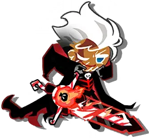
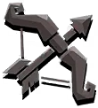
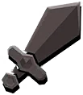
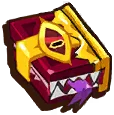

<!DOCTYPE html>
<html lang="ko"><head>
<meta charset="utf-8">
<meta name="viewport" content="width=device-width,initial-scale=1,viewport-fit=cover">
<meta name="robots" content="noindex, nofollow, noarchive, nosnippet">
<meta http-equiv="Cache-Control" content="no-cache, no-store, must-revalidate">
<meta name="build" content="1790193079293">
<meta name="theme-color" content="#c98a44">
<meta name="apple-mobile-web-app-capable" content="yes">
<link rel="icon" type="image/webp" href="assets/ck/c4013.webp">
<link rel="apple-touch-icon" href="assets/ck/c4013.webp">
<title>창천 · 쿠키런 크럼블 정보</title>
<style>/* ============ 폰트 ============ */
@font-face{font-family:'Paperlogy';src:url('font/Paperlogy-4Regular.woff2') format('woff2');font-weight:400;font-display:swap}
@font-face{font-family:'Paperlogy';src:url('font/Paperlogy-5Medium.woff2') format('woff2');font-weight:500;font-display:swap}
@font-face{font-family:'Paperlogy';src:url('font/Paperlogy-6SemiBold.woff2') format('woff2');font-weight:600;font-display:swap}
@font-face{font-family:'Paperlogy';src:url('font/Paperlogy-7Bold.woff2') format('woff2');font-weight:700;font-display:swap}
@font-face{font-family:'Paperlogy';src:url('font/Paperlogy-8ExtraBold.woff2') format('woff2');font-weight:800;font-display:swap}
@font-face{font-family:'Paperlogy';src:url('font/Paperlogy-9Black.woff2') format('woff2');font-weight:900;font-display:swap}

/* ============ 색상 (킹덤 쿠키보드) ============ */
:root{
 --fd:'Paperlogy','Apple SD Gothic Neo','Malgun Gothic',system-ui,sans-serif;
 --fb:'Paperlogy','Apple SD Gothic Neo','Malgun Gothic',system-ui,sans-serif;
 --bg:#e8b978;        --bg2:#f6d7a4;
 --card:#fff8ea;      --card2:#ffedcf;     --panel:#ffe2b2;
 --wood:#c98a44;      --wood2:#a96a2e;     --wood3:#8f5424;
 --ink:#4a2410;       --ink2:#8a5426;      --ink3:#c19060;
 --line:#d9ad72;      --line2:#4a2410;
 --txt:#3d200c;       --dim:#8a5a2e;       --dim2:#a8774a;
 --acc:#e5921a;       --acc2:#c05a10;      --gold:#ffc820;
 --goldlt:#fff29a;    --golddk:#e5921a;    --goldsh:#a8620c;
 --mag:#d6246a;
 --yt:#e03a52;        --cafe:#1f9a5c;      --dc:#c98a10;  --off:#1f9a5c; --dm:#6b4fd8;
}
*{box-sizing:border-box;margin:0;padding:0;-webkit-tap-highlight-color:transparent}
html{scroll-behavior:smooth}
body{background:var(--bg);color:var(--txt);line-height:1.7;font-weight:500;
 font-family:var(--fb);
 -webkit-font-smoothing:antialiased;-moz-osx-font-smoothing:grayscale}
img{image-rendering:auto}
a.ln{color:#b8600c;text-decoration:none;border-bottom:2px dotted #d9ad72;font-weight:700}

/* ============ 레이아웃 ============ */
.wrap{max-width:1700px;margin:0 auto;padding:0 24px 120px;background:var(--bg2);position:relative}
.wrap::before{content:'';position:absolute;inset:0;pointer-events:none;z-index:0;opacity:.1;
 background:url('assets/bg/adventurenote_normal_002.webp') center/640px;mix-blend-mode:multiply}
.wrap>*{position:relative;z-index:1}
header.hero{background:linear-gradient(170deg,#d99a52,#b8792f 55%,#9a5c26);
 border-bottom:5px solid var(--ink);padding:40px 0 34px;
 box-shadow:inset 0 5px 0 rgba(255,255,255,.3)}
.hero-in{max-width:1700px;margin:0 auto;padding:0 24px;display:flex;align-items:center;gap:28px}
.hero-in .logo img{object-fit:contain;filter:drop-shadow(0 5px 0 rgba(90,45,15,.45))}
h1{font-family:var(--fd);letter-spacing:-1.5px;line-height:1.05;margin-bottom:10px}
h1 .g{color:#ffd83d;-webkit-text-stroke:6px var(--ink);paint-order:stroke fill;
 filter:drop-shadow(0 4px 0 #8a4a12)}
.sub{color:#4a2a14;font-weight:600}
.bar{position:sticky;top:0;z-index:40;background:linear-gradient(180deg,#d99a52,#c1813c);
 border-bottom:5px solid var(--ink);padding:18px 0 0;
 box-shadow:0 4px 14px rgba(90,45,15,.28)}
.bar-in{max-width:1700px;margin:0 auto;padding:0 24px}
input[type=search]{width:100%;background:#fff6e4;border:4px solid var(--ink);color:var(--txt);
 outline:none;font-family:inherit;font-weight:600;
 box-shadow:inset 0 3px 7px rgba(120,70,30,.26)}
input[type=search]:focus{box-shadow:inset 0 3px 7px rgba(120,70,30,.26),0 0 0 4px rgba(255,200,32,.55)}
input[type=search]::placeholder{color:#b08a5e}

/* ============ 탭 ============ */
.tabs{display:flex;flex-wrap:wrap;overflow:visible}
.tab{display:flex;align-items:center;background:linear-gradient(180deg,#fff6e4,#ffe6bd);
 border:4px solid var(--ink);cursor:pointer;transition:.12s;position:relative;overflow:hidden;
 isolation:isolate;min-width:0;box-shadow:inset 0 3px 0 rgba(255,255,255,.95),0 5px 0 var(--ink2)}
.tab::before{content:'';position:absolute;inset:0;z-index:-1;background-image:var(--tbg);
 background-size:cover;background-position:center 26%;opacity:.22;mix-blend-mode:multiply}
.tab::after{content:'';position:absolute;inset:0;z-index:-1;
 background:linear-gradient(105deg,var(--tc,#ffd9a0) 0%,rgba(255,255,255,0) 70%);opacity:.55}
.tab:hover{transform:translateY(-2px);box-shadow:inset 0 3px 0 rgba(255,255,255,.95),0 7px 0 var(--ink2)}
.tab.on{background:linear-gradient(180deg,var(--tc,#ffe07a),var(--tcd,#f2a415));
 box-shadow:inset 0 3px 0 rgba(255,255,255,.55),0 0 0 4px var(--gold),0 7px 0 var(--ink2)}
.tab.on::before{opacity:.26}
.tab.on::after{opacity:0}
.tab .ti{border-radius:20%;position:relative;overflow:hidden;flex-shrink:0;
 background:linear-gradient(180deg,#8a5730,#5e3618);border:3px solid var(--ink);
 box-shadow:inset 0 3px 7px rgba(0,0,0,.45)}
.tab .ti img{position:absolute;inset:10%;width:80%;height:80%;object-fit:contain}
.tab>div:last-child{min-width:0;flex:1 1 auto}
.tab .tn{font-family:var(--fd);color:#4a2a14;line-height:1.2;
 white-space:normal;word-break:keep-all}
.tab.on .tn{color:#3d1c06}
.tab .td{color:#96683c;line-height:1.25;white-space:normal;word-break:keep-all;font-weight:600}
.tab.on .td{color:#6e3f10}

/* ============ 서브탭 ============ */
.subtabs{display:flex;flex-wrap:wrap}
.subtab{font-family:var(--fd);background:linear-gradient(180deg,#fff6e4,#ffe2b2);
 border:3px solid var(--ink);color:#7a4e24;border-radius:999px;cursor:pointer;white-space:nowrap;
 display:inline-flex;align-items:center;gap:7px;transition:.1s;
 box-shadow:inset 0 2px 0 rgba(255,255,255,.95),0 4px 0 var(--ink2)}
.subtab img{width:1.5em;height:1.5em;object-fit:contain;flex-shrink:0;
 filter:drop-shadow(0 1px 1px rgba(90,45,15,.4))}
.subtab:hover{transform:translateY(-2px)}
.subtab.on{background:linear-gradient(180deg,var(--sc2,#ffe07a),var(--sc,#f2a415));color:#3d1c06;
 box-shadow:inset 0 2px 0 rgba(255,255,255,.6),0 4px 0 var(--ink2)}
.subtab.on:hover{transform:none}
.cntline{display:flex;justify-content:flex-end}
.cnt{color:#8a5a2e;font-weight:600}

/* ============ 카드 그리드 ============ */
.grid{display:grid;align-items:stretch}
.lc{background:linear-gradient(180deg,#fff8ea,#ffedcf);border:5px solid var(--ink);
 display:flex;flex-direction:column;cursor:pointer;transition:.16s;position:relative;
 overflow:hidden;isolation:isolate;
 box-shadow:inset 0 4px 0 rgba(255,255,255,.95),0 6px 0 var(--ink2),0 12px 22px rgba(90,50,20,.3)}
.lc:hover{transform:translateY(-4px);
 box-shadow:inset 0 4px 0 rgba(255,255,255,.95),0 10px 0 var(--ink2),0 18px 30px rgba(90,50,20,.36)}
.lc.deckcard::before{content:'';position:absolute;top:0;left:0;right:0;height:240px;z-index:-1;
 background-image:var(--bg);background-size:cover;background-position:center 25%;opacity:.24;
 mix-blend-mode:multiply}
.lc.deckcard::after{content:'';position:absolute;top:0;left:0;right:0;height:240px;z-index:-1;
 background:linear-gradient(180deg,rgba(255,248,234,.1) 0%,rgba(255,248,234,.82) 62%,#fff8ea 100%)}
.lt{display:flex;flex-wrap:wrap;position:relative;z-index:1}
.hrow{display:flex;align-items:center;position:relative;z-index:1}
.lc h3{font-family:var(--fd);line-height:1.32;letter-spacing:-.4px;color:#3d200c}
.lboss{color:#96602e;font-weight:600}
.lans{color:#7a3e08;font-family:var(--fd);line-height:1.48}
.more{margin-top:auto;border-top:3px dashed #dcb37c;color:#c87a14;text-align:right;
 font-family:var(--fd)}

/* ============ 뱃지 ============ */
.pill{border-radius:999px;background:#ffe2b2;color:#8a5210;border:2px solid var(--ink);font-weight:800}
.pill.c{color:#4a2408;border-color:var(--ink);background:linear-gradient(180deg,#ffe07a,#f7ab1c)}
.pill.s{color:#fff;border-color:var(--ink);background:linear-gradient(180deg,#ff8ab0,#e0346e)}
.pill.ok{background:linear-gradient(180deg,#7fe0a8,#2aa564);color:#0d3f22;border-color:var(--ink)}
.datebadge{background:linear-gradient(180deg,#b9a2ff,#6b4fd8);color:#fff;border-color:var(--ink);font-weight:800}

/* ============ 미리보기 리스트 ============ */
ul.prev{list-style:none}
ul.prev li{color:#4a2e18;position:relative;line-height:1.6}
ul.prev li:before{content:'';position:absolute;border-radius:50%;background:#e5921a}

/* ============ 쿠키 타일 ============ */
.ckgrid{display:grid;grid-template-columns:repeat(6,1fr)}
.ctile{position:relative;overflow:hidden;aspect-ratio:3/4.2;border:3px solid var(--ink)}
.ctile>img.p{position:absolute;left:2%;right:2%;top:-1%;width:96%;height:74%;object-fit:contain}
.ctile .el{position:absolute;top:3px;left:3px;width:27%;z-index:3;filter:drop-shadow(0 1px 2px rgba(0,0,0,.7))}
.ctile .gb{position:absolute;top:2px;right:2px;width:31%;z-index:3;filter:drop-shadow(0 1px 2px rgba(0,0,0,.6))}
.ctile .cn{position:absolute;left:0;right:0;bottom:0;background:#4a2410;color:#ffe6bb;
 font-family:var(--fd);text-align:center;z-index:4;letter-spacing:-.6px;
 white-space:nowrap;overflow:hidden;text-overflow:ellipsis}
.ctile.r-C{background:linear-gradient(180deg,#b9cbe2,#4d7aa8 48%,#22456e);box-shadow:inset 0 0 0 3px #1b3350}
.ctile.r-U{background:linear-gradient(180deg,#b8f2f2,#25c0c0 48%,#0e7d7d);box-shadow:inset 0 0 0 3px #0a5c5c}
.ctile.r-R{background:linear-gradient(180deg,#b6dff7,#3094e6 48%,#1a62a8);box-shadow:inset 0 0 0 3px #14507f}
.ctile.r-SR{background:linear-gradient(180deg,#ffc2d8,#f04878 48%,#b32a55);box-shadow:inset 0 0 0 3px #8c1f42}
.ctile.r-SSR{background:linear-gradient(180deg,#fff3a8,#f5b41c 46%,#c07a10);box-shadow:inset 0 0 0 3px #9a5d0b}
.ctile.r-TSSR{background:linear-gradient(140deg,#c9a6ff,#8ed9f5 26%,#7ef0e0 46%,#ffd98a 64%,#ffa8d8 84%,#b48cff);
 background-size:220% 220%;animation:prism 6s ease infinite;
 box-shadow:inset 0 0 0 3px #7a4fd0,0 0 14px rgba(180,140,255,.5)}
@keyframes prism{0%,100%{background-position:0% 50%}50%{background-position:100% 50%}}
.ctile.empty{background:linear-gradient(180deg,#e8cba0,#cfa771);box-shadow:inset 0 0 0 3px #b58a55;opacity:.75;
 display:flex;align-items:center;justify-content:center}
.ctile.empty .q{font-family:var(--fd);color:#8a5f32}
.ptile{position:relative;overflow:hidden;aspect-ratio:1/1.24;flex-shrink:0;border:3px solid var(--ink);
 background:linear-gradient(180deg,#ffe98f,#f0a818 50%,#b9700c)}
.ptile img{position:absolute;inset:2% 5% 26% 5%;width:90%;height:72%;object-fit:contain}
.ptile .pn{position:absolute;left:0;right:0;bottom:0;background:#4a2410;color:#ffe6bb;
 font-family:var(--fd);text-align:center;line-height:1.35}
.ptile.empty{background:linear-gradient(180deg,#e8cba0,#cfa771);opacity:.75;
 display:flex;align-items:center;justify-content:center}
.ptile.empty .q{font-family:var(--fd);color:#8a5f32}
.deckbox{background:linear-gradient(180deg,#c98a44,#a96a2e);border:4px solid var(--ink);
 box-shadow:inset 0 3px 0 rgba(255,255,255,.28),inset 0 -6px 12px rgba(0,0,0,.18)}
.petrow{display:flex;justify-content:flex-end;align-items:center}
.petrow .plabel{margin-right:auto;color:#fff2dc;font-family:var(--fd);
 text-shadow:0 2px 0 rgba(90,45,15,.55)}
.shotbox{background:linear-gradient(180deg,#c98a44,#a96a2e);border:4px solid var(--ink);
 display:flex;flex-direction:column;box-shadow:inset 0 3px 0 rgba(255,255,255,.28)}
.shotbox img{width:100%;border:3px solid var(--ink);display:block}
.novideo{background:#ffe2b2;border:4px dashed var(--ink);text-align:center}
.nvt{font-family:var(--fd);color:#7a4e24}
.nvs{color:#a8774a;font-weight:600}

/* ============ 상세 오버레이 ============ */
#ov{position:fixed;inset:0;z-index:100;background:rgba(70,36,14,.9);backdrop-filter:blur(8px);display:none;overflow-y:auto}
#ov.on{display:block}
#ovbar{position:sticky;top:0;z-index:2;background:linear-gradient(180deg,#d99a52,#b8792f);
 border-bottom:5px solid var(--ink);box-shadow:0 4px 14px rgba(60,30,12,.4)}
#ovbar button{background:linear-gradient(180deg,#fff6e4,#ffe2b2);border:4px solid var(--ink);color:#4a2a14;
 font-family:var(--fd);cursor:pointer;
 box-shadow:inset 0 2px 0 rgba(255,255,255,.95),0 4px 0 var(--ink2)}
#ovbar button:hover{transform:translateY(-2px)}
#ovbar button:active{transform:translateY(3px);box-shadow:inset 0 2px 0 rgba(255,255,255,.95),0 1px 0 var(--ink2)}
#ovbody{margin:0 auto}
.dt{display:none;background:linear-gradient(180deg,#fff8ea,#ffedcf);border:5px solid var(--ink);
 overflow:hidden;position:relative;isolation:isolate;
 box-shadow:inset 0 4px 0 rgba(255,255,255,.95),0 7px 0 var(--ink2)}
.dt.on{display:block}
.dt::before{content:'';position:absolute;top:0;left:0;right:0;height:320px;z-index:-1;
 background-image:var(--bg);background-size:cover;background-position:center 25%;opacity:.24;
 mix-blend-mode:multiply}
.dt::after{content:'';position:absolute;top:0;left:0;right:0;height:320px;z-index:-1;
 background:linear-gradient(180deg,rgba(255,248,234,.1),rgba(255,248,234,.84) 66%,#fff8ea)}
.dt h2{font-family:var(--fd);line-height:1.3;position:relative;z-index:1;color:#3d200c}
.dhd{display:flex;flex-wrap:wrap;position:relative;z-index:1}
.dtop{display:flex;align-items:center;position:relative;z-index:1}
.boss{background:linear-gradient(180deg,#e8c18a,#dcae70);color:#5c3312;font-weight:700;
 border-top:4px solid var(--ink);border-bottom:4px solid var(--ink)}
.ans,.lead{background:linear-gradient(100deg,#ffe07a,#ffd0a0);border:4px solid var(--ink);
 font-family:var(--fd);line-height:1.45;color:#4a2708;
 box-shadow:inset 0 3px 0 rgba(255,255,255,.65)}
.sec{}
.lbl{color:#a8774a;font-weight:700}
.setup{display:flex;flex-wrap:wrap}
.stg{background:linear-gradient(180deg,#fff6e4,#ffe2b2);border:3px solid var(--ink);color:#4a2e18;
 box-shadow:inset 0 2px 0 rgba(255,255,255,.95),0 4px 0 var(--ink2)}
.stg b{color:#b8600c;display:block}
ul.notes{list-style:none}
ul.notes li{color:#40240f;position:relative;line-height:1.6}
ul.notes li:before{content:'';position:absolute;border-radius:50%;background:#e5921a}
ul.notes li b{color:#b8500c}
.ic{display:inline-flex;align-items:center;background:linear-gradient(180deg,#fff6e4,#ffe2b2);
 border:3px solid var(--ink);white-space:nowrap;font-weight:700;
 box-shadow:inset 0 2px 0 rgba(255,255,255,.95)}
.ic img{object-fit:contain;background:linear-gradient(180deg,#8a5730,#5e3618);
 border:2px solid var(--ink);box-shadow:inset 0 2px 5px rgba(0,0,0,.45)}
.warn{background:#ffe0e8;border:4px solid #c9265c;color:#8c1240;line-height:1.55;font-weight:600;
 box-shadow:inset 0 3px 0 rgba(255,255,255,.7)}
.steps{display:grid}
.step{background:linear-gradient(180deg,#fff6e4,#ffe2b2);border:3px solid var(--ink);text-align:center;
 position:relative;box-shadow:inset 0 2px 0 rgba(255,255,255,.95),0 4px 0 var(--ink2)}
.step .sn{position:absolute;background:linear-gradient(180deg,#ffe07a,#f2a415);color:#3d1c06;
 border:3px solid var(--ink);border-radius:50%;display:flex;align-items:center;justify-content:center;
 font-family:var(--fd);z-index:3}
.step .stile{margin:0 auto}
.step .sl{font-family:var(--fd);color:#7a3e08}
.step .sw{color:#6b4522;line-height:1.45;font-weight:600}
.orow{display:flex;flex-wrap:wrap;align-items:flex-start}
.ostep{position:relative;flex-shrink:0}
.onum{position:absolute;background:linear-gradient(180deg,#ffe07a,#f2a415);color:#3d1c06;
 border:3px solid var(--ink);border-radius:50%;font-family:var(--fd);
 display:flex;align-items:center;justify-content:center;z-index:6}
/* 룬세공 */
.rtile{flex-shrink:0}
.optrow{display:flex;flex-wrap:wrap}
.oc{position:relative;background:linear-gradient(180deg,#fff6e4,#ffe2b2);border:3px solid var(--ink);
 text-align:center;box-shadow:inset 0 2px 0 rgba(255,255,255,.95),0 4px 0 var(--ink2)}
.oc .on{position:absolute;background:linear-gradient(180deg,#ffe07a,#f2a415);color:#3d1c06;
 border:3px solid var(--ink);border-radius:50%;font-family:var(--fd);
 display:flex;align-items:center;justify-content:center}
.oc img{object-fit:contain;display:block;margin:0 auto;padding:2px;
 background:linear-gradient(180deg,#8a5730,#5e3618);border:2px solid var(--ink);border-radius:10px;
 box-shadow:inset 0 2px 5px rgba(0,0,0,.45)}
.oc .ono{display:flex;align-items:center;justify-content:center;margin:0 auto;
 font-family:var(--fd);color:#7a4e24}
.oc .ol{display:block;font-family:var(--fd);color:#7a3e08}
/* 재화 아이콘 */
.pics{display:flex;flex-wrap:wrap}
.pi{background:linear-gradient(180deg,#fff6e4,#ffe2b2);border:3px solid var(--ink);text-align:center;
 box-shadow:inset 0 2px 0 rgba(255,255,255,.95),0 4px 0 var(--ink2)}
.pi img{object-fit:contain;display:block;margin:0 auto}
.pi span{color:#7a4e24;display:block;line-height:1.3;font-weight:700}
/* 대표 아이콘 */
.bossic{border-radius:50%;overflow:hidden;position:relative;flex-shrink:0;
 background:radial-gradient(circle at 50% 35%,#ffe9a8,#f0a818);
 border:4px solid var(--ink);box-shadow:0 5px 0 var(--ink2)}
.bossic img{position:absolute;inset:8%;width:84%;height:84%;object-fit:contain}
/* 출처 버튼 */
.lsrc,.srcs{display:flex;flex-wrap:wrap}
.srcbtn{display:inline-flex;align-items:center;background:linear-gradient(180deg,#fff6e4,#ffe2b2);
 border:3px solid var(--ink);text-decoration:none;transition:.12s;
 box-shadow:inset 0 2px 0 rgba(255,255,255,.95),0 4px 0 var(--ink2)}
.srcbtn:hover{transform:translateY(-2px);box-shadow:inset 0 2px 0 rgba(255,255,255,.95),0 6px 0 var(--ink2)}
.srcbtn:active{transform:translateY(3px);box-shadow:inset 0 2px 0 rgba(255,255,255,.95),0 1px 0 var(--ink2)}
.srcbtn img{object-fit:contain;flex-shrink:0;background:#fff;border:2px solid var(--ink)}
.srcbtn .bl{font-family:var(--fd);color:#4a2a14;line-height:1.2}
.srcbtn .bd{color:#a8774a;font-weight:600}
.srcbtn .ba{font-family:var(--fd);color:#c87a14}
.srcbtn .ba.off{color:#b09068}
.srcbtn.dis{opacity:.6}
.srcbtn.byt{background:linear-gradient(180deg,#ffd0d6,#ff9aa6)}
.srcbtn.byt .bl{color:#7a0d1c} .srcbtn.byt .bd{color:#a8404e} .srcbtn.byt .ba{color:#9c1428}
.srcbtn.bcafe,.srcbtn.boff{background:linear-gradient(180deg,#bff0d2,#79dba2)}
.srcbtn.bcafe .bl,.srcbtn.boff .bl{color:#0c4a2a} .srcbtn.bcafe .bd,.srcbtn.boff .bd{color:#3a7c57}
.srcbtn.bcafe .ba,.srcbtn.boff .ba{color:#0f6b3a}
.srcbtn.bdc{background:linear-gradient(180deg,#ffe8a8,#ffca4a)}
.srcbtn.bdc .bl{color:#5c3a02} .srcbtn.bdc .bd{color:#8a6414} .srcbtn.bdc .ba{color:#9c6a08}
.srcbtn.bdm{background:linear-gradient(180deg,#ded0ff,#b9a2ff)}
.srcbtn.bdm .bl{color:#2e1d6b} .srcbtn.bdm .bd{color:#5a4a96} .srcbtn.bdm .ba{color:#4a2fa8}
a.srcbtn.foot2{display:flex;width:100%;background:linear-gradient(180deg,#ffe07a,#f7ab1c)}
a.srcbtn.foot2 .bl{color:#4a2708} a.srcbtn.foot2 .bd{color:#8a5210}
a.srcbtn.foot2 .ba{margin-left:auto;color:#7a3e08}
footer{border-top:5px solid var(--ink);color:#7a4e24;line-height:1.9;font-weight:600;
 background:linear-gradient(180deg,#e8c18a,#dcae70)}
#top{position:fixed;z-index:50;background:linear-gradient(180deg,#ffe07a,#f2a415);color:#3d1c06;
 border:4px solid var(--ink);border-radius:50%;cursor:pointer;font-family:var(--fd);
 box-shadow:inset 0 3px 0 rgba(255,255,255,.7),0 5px 0 var(--ink2);display:none}
#top:active{transform:translateY(4px);box-shadow:inset 0 3px 0 rgba(255,255,255,.7),0 1px 0 var(--ink2)}
#empty{text-align:center;color:#a8774a;font-weight:700}
/* ============ PC 전용 레이아웃: 사이드바 + 카드 그리드 ============ */
@media(min-width:1100px){
 body{display:grid;grid-template-columns:clamp(300px,21vw,400px) 1fr;
  grid-template-rows:auto 1fr;min-height:100vh;font-size:17px}
 /* 좌측 사이드바 */
 header.hero{grid-column:1;grid-row:1;padding:32px 28px 24px;border-bottom:none;
  background:linear-gradient(170deg,#d99a52,#b8792f 55%,#9a5c26);border-right:5px solid var(--ink);box-shadow:inset 0 5px 0 rgba(255,255,255,.3)}
 .hero-in{display:block;padding:0;max-width:none;margin:0;width:100%}
 .hero-in .logo{margin-bottom:14px}
 .hero-in .logo img{width:min(100%,260px)}
 h1{font-size:clamp(46px,3.4vw,68px);margin-bottom:8px}
 .sub{font-size:14px;line-height:1.55}
 .bar{grid-column:1;grid-row:2;position:sticky;top:0;align-self:start;
  background:linear-gradient(180deg,#c98a44,#a96a2e 60%,#95592a);border-bottom:none;border-right:5px solid var(--ink);
  padding:22px 28px 30px;height:calc(100vh - 0px);overflow-y:auto}
 .bar-in{padding:0;max-width:none;margin:0;width:100%}
 input[type=search]{font-size:17px;padding:14px 18px;border-radius:14px}
 .tabs{flex-direction:column;flex-wrap:nowrap;gap:9px;margin-top:20px;padding-bottom:0}
 .tab{flex:0 0 auto;width:100%;min-width:0;gap:14px;padding:14px 16px;border-radius:16px;border-width:2px}
 .tab .ti{width:52px;height:52px;border-radius:14px}
 .tab .tn{font-size:21px}
 .tab .td{font-size:13.5px;margin-top:2px}
 /* 우측 콘텐츠 */
 .wrap{grid-column:2;grid-row:1/3;max-width:none;margin:0;width:100%;padding:32px clamp(28px,2.4vw,56px) 90px}
 .subtabs{gap:9px;margin:0 0 18px}
 .subtab{font-size:17px;padding:9px 19px;border-width:3px}
 .cntline{margin:0 0 10px} .cnt{font-size:15px}
 .grid{grid-template-columns:repeat(2,1fr);gap:20px;margin-top:0}
 .lc{padding:26px 26px 20px;border-radius:26px}
 .lt{gap:7px;margin-bottom:14px}
 .hrow{gap:18px;margin-bottom:6px}
 .lc h3{font-size:28px;margin-bottom:10px}
 .lboss{font-size:18px;margin-bottom:16px}
 .lans{font-size:21px;margin-bottom:18px}
 .pill{font-size:14.5px;padding:5px 14px}
 ul.prev{margin:16px 0 6px}
 ul.prev li{font-size:16.5px;padding-left:19px;margin-bottom:9px}
 ul.prev li:before{width:6px;height:6px;left:4px;top:9px}
 .more{font-size:20px;padding-top:16px;margin-top:16px}
 .bossic{width:74px;height:74px}
 .bossic.big{width:104px;height:104px}
 .deckbox{padding:16px;border-radius:22px}
 .petrow{gap:8px;margin-bottom:14px} .petrow .plabel{font-size:17px}
 .ptile{width:66px;border-radius:15px}
 .ckgrid{gap:7px} .ctile{border-radius:12px}
 .shotbox{padding:14px;border-radius:22px;gap:12px} .shotbox img{border-radius:15px}
 .novideo{padding:34px 20px;border-radius:22px}
 .nvt{font-size:22px;margin-bottom:6px} .nvs{font-size:16px}
 .pics{gap:10px;margin-bottom:16px}
 .pi{min-width:116px;padding:13px 13px 10px;border-radius:18px}
 .pi img{width:70px;height:70px} .pi span{font-size:15px;margin-top:6px}
 .optrow{gap:10px;margin:16px 0 6px}
 .oc{min-width:86px;padding:12px 12px 9px;border-radius:16px}
 .oc img,.oc .ono{width:46px;height:46px} .oc .ono{font-size:15px}
 .oc .ol{font-size:18px;margin-top:5px}
 .oc .on{width:24px;height:24px;font-size:13px;top:-8px;left:-8px}
 .rtile{width:78px} .rtile.big{width:110px}
 .orow{gap:12px;margin-bottom:16px}
 .ostep{width:82px} .onum{width:28px;height:28px;font-size:15px;top:-9px;left:-9px}
 .lsrc,.srcs{gap:9px} .lsrc{margin-bottom:4px}
 .srcbtn{gap:10px;padding:9px 15px 9px 10px;border-radius:14px}
 .srcbtn img{width:34px;height:34px;border-radius:9px}
 .srcbtn .bl{font-size:17px} .srcbtn .bd{font-size:14px} .srcbtn .ba{font-size:15.5px}
 /* 상세 */
 #ovbar{padding:18px 30px}
 #ovbar button{font-size:18px;padding:12px 22px;border-radius:14px}
 #ovbody{max-width:1080px;padding:28px 24px 100px}
 .dt{border-radius:28px;padding-bottom:26px}
 .dhd{gap:7px;padding:28px 32px 10px}
 .dtop{gap:20px;padding:0 32px}
 .dt h2{font-size:38px;padding:0}
 .boss{font-size:21px;padding:16px 32px;margin-top:14px}
 .ans,.lead{font-size:26px;margin:20px 32px;padding:20px 24px;border-radius:0 18px 18px 0;border-left-width:6px}
 .sec{padding:20px 32px 0}
 .lbl{font-size:16px;margin-bottom:10px}
 .setup{gap:10px;padding:20px 32px 0}
 .stg{font-size:19px;padding:15px 19px;border-radius:18px}
 .stg b{font-size:14.5px;margin-bottom:3px}
 ul.notes{padding:24px 32px 14px}
 ul.notes li{font-size:20px;margin-bottom:14px;padding-left:25px}
 ul.notes li:before{width:8px;height:8px;top:12px;left:5px}
 .ic{font-size:19px;padding:2px 11px 2px 4px;border-radius:12px;vertical-align:-7px;gap:7px}
 .ic img{width:36px;height:36px;border-radius:10px;padding:1px}
 .warn{font-size:19px;padding:20px 22px;border-radius:20px;margin:20px 32px 0}
 .steps{grid-template-columns:repeat(auto-fit,minmax(130px,1fr));gap:12px;padding:24px 32px 6px}
 .step{border-radius:20px;padding:14px 10px}
 .step .sn{width:26px;height:26px;font-size:14px;top:10px;left:12px}
 .step .stile{width:112px;margin-top:10px}
 .step .sl{font-size:20px;margin:10px 0 6px} .step .sw{font-size:16px}
 a.srcbtn.foot2{padding:16px 20px 16px 14px;border-radius:20px;margin-top:20px}
 a.srcbtn.foot2 img{width:46px;height:46px;border-radius:12px}
 a.srcbtn.foot2 .bl{font-size:21px} a.srcbtn.foot2 .ba{font-size:18px}
 footer{font-size:15px;padding:28px 0 0;margin-top:44px}
 #top{width:56px;height:56px;font-size:25px;right:22px;bottom:22px}
 #empty{font-size:20px;padding:70px 0}
}

@media(min-width:2300px){ body{font-size:19px} .lc h3{font-size:32px} .lans{font-size:24px} ul.prev li{font-size:18px} }
/* ============ 크기: 모바일 (~820px) ============ */
@media(max-width:1099px){
 body{font-size:17.5px}
 header.hero{padding:20px 0 18px}
 .hero-in{gap:16px;padding:0 14px}
 .hero-in .logo img{width:150px}
 h1{font-size:44px;margin-bottom:5px} .sub{font-size:14px}
 .bar{position:static;padding:12px 0 6px}
 .bar-in{padding:0 14px}
 input[type=search]{font-size:17px;padding:14px 16px;border-radius:15px}
 .tabs{gap:9px;margin-top:11px;padding-bottom:8px}
 .tab{flex:1 1 calc(50% - 5px);gap:11px;padding:12px 14px;border-radius:18px}
 .tab .ti{width:46px;height:46px}
 .tab .tn{font-size:19px} .tab .td{font-size:13px;margin-top:2px}
 /* 서브탭: 줄바꿈 대신 가로 스크롤 */
 .subtabs{gap:7px;margin:14px 0 4px;flex-wrap:nowrap;overflow-x:auto;
  padding:3px 14px 9px;margin-left:-14px;margin-right:-14px;
  scrollbar-width:none;-webkit-overflow-scrolling:touch}
 .subtabs::-webkit-scrollbar{display:none}
 .subtab{flex:0 0 auto;font-size:16.5px;padding:8px 15px;border-width:3px}
 .subtab img{width:1.4em;height:1.4em}
 .cntline{margin-top:10px} .cnt{font-size:16px}
 .wrap{padding:0 14px 90px}
 .grid{grid-template-columns:1fr;gap:15px;margin-top:14px}
 .lc{padding:20px 17px 16px;border-radius:26px}
 .lt{gap:7px;margin-bottom:12px}
 .hrow{gap:13px;margin-bottom:4px}
 .lc h3{font-size:25px;margin-bottom:10px}
 .lboss{font-size:17px;margin-bottom:14px}
 .lans{font-size:21px;margin-bottom:16px}
 .pill{font-size:15px;padding:5px 13px}
 ul.prev{margin:14px 0 4px}
 ul.prev li{font-size:17px;padding-left:19px;margin-bottom:9px}
 ul.prev li:before{width:6px;height:6px;left:4px;top:9px}
 .more{font-size:20px;padding-top:15px;margin-top:15px}
 .bossic{width:62px;height:62px;box-shadow:0 4px 0 var(--ink2)}
 .bossic.big{width:80px;height:80px}
 .deckbox{padding:12px;border-radius:20px}
 .petrow{gap:7px;margin-bottom:12px} .petrow .plabel{font-size:16px}
 .ptile{width:56px;border-radius:14px} .ptile .pn{font-size:11px;padding:3px 1px 4px}
 .ckgrid{gap:5px} .ctile{border-radius:11px}
 .ctile .cn{font-size:14px;padding:4px 2px 5px}
 .ctile.empty .q{font-size:20px} .ptile.empty .q{font-size:15px}
 .shotbox{padding:12px;border-radius:20px;gap:11px} .shotbox img{border-radius:14px}
 .novideo{padding:26px 16px;border-radius:20px}
 .nvt{font-size:20px;margin-bottom:6px} .nvs{font-size:15px}
 .pics{gap:9px;margin-bottom:14px}
 .pi{min-width:104px;padding:12px 12px 9px;border-radius:18px}
 .pi img{width:62px;height:62px} .pi span{font-size:15px;margin-top:5px}
 .optrow{gap:8px;margin:14px 0 4px}
 .oc{min-width:76px;padding:11px 10px 8px;border-radius:15px}
 .oc img,.oc .ono{width:40px;height:40px} .oc .ono{font-size:14px}
 .oc .ol{font-size:17px;margin-top:4px}
 .oc .on{width:23px;height:23px;font-size:13px;top:-7px;left:-7px}
 .rtile{width:72px} .rtile.big{width:96px}
 .orow{gap:11px;margin-bottom:14px}
 .ostep{width:76px} .onum{width:27px;height:27px;font-size:15px;top:-8px;left:-8px}
 .lsrc,.srcs{gap:8px} .lsrc{margin-bottom:4px}
 .srcbtn{gap:9px;padding:9px 14px 9px 10px;border-radius:14px}
 .srcbtn img{width:32px;height:32px;border-radius:8px}
 .srcbtn .bl{font-size:17px} .srcbtn .bd{font-size:14px} .srcbtn .ba{font-size:15px}
 #ovbar{padding:14px 16px}
 #ovbar button{font-size:19px;padding:12px 20px;border-radius:14px}
 #ovbody{max-width:100%;padding:16px 12px 90px}
 .dt{border-radius:26px;padding-bottom:22px}
 .dhd{gap:7px;padding:22px 18px 10px}
 .dtop{gap:14px;padding:0 18px}
 .dt h2{font-size:29px}
 .boss{font-size:18px;padding:15px 18px;margin-top:14px}
 .ans,.lead{font-size:22px;margin:18px 16px;padding:17px 18px;border-radius:0 16px 16px 0;border-left-width:6px}
 .sec{padding:18px 16px 0}
 .lbl{font-size:16px;margin-bottom:9px}
 .setup{gap:9px;padding:18px 16px 0}
 .stg{font-size:18px;padding:13px 16px;border-radius:18px}
 .stg b{font-size:14px;margin-bottom:3px}
 ul.notes{padding:20px 16px 12px}
 ul.notes li{font-size:19px;margin-bottom:14px;padding-left:24px}
 ul.notes li:before{width:8px;height:8px;top:11px;left:4px}
 .ic{font-size:18px;padding:2px 10px 2px 4px;border-radius:11px;vertical-align:-7px;gap:6px}
 .ic img{width:34px;height:34px;border-radius:9px;padding:1px}
 .warn{font-size:18px;padding:17px 19px;border-radius:18px;margin:18px 16px 0}
 .steps{grid-template-columns:repeat(auto-fit,minmax(104px,1fr));gap:9px;padding:20px 16px 6px}
 .step{border-radius:18px;padding:12px 8px}
 .step .sn{width:24px;height:24px;font-size:14px;top:8px;left:10px}
 .step .stile{width:96px;margin-top:8px}
 .step .sl{font-size:19px;margin:9px 0 5px}
 .step .sw{font-size:15px}
 a.srcbtn.foot2{padding:14px 16px 14px 12px;border-radius:18px;margin-top:18px;flex-wrap:wrap}
 a.srcbtn.foot2 img{width:38px;height:38px;border-radius:11px}
 a.srcbtn.foot2 .bl{font-size:19px} a.srcbtn.foot2 .ba{font-size:16px}
 footer{font-size:15px;padding:24px 14px;margin-top:44px}
 #top{width:52px;height:52px;font-size:24px;right:14px;bottom:14px;opacity:.88}
 #empty{font-size:19px;padding:60px 0}
}
@media(max-width:420px){
 /* 탭은 2열 유지 — 1열이면 헤더가 너무 길어짐 */
 .tab{flex:1 1 calc(50% - 5px);gap:8px;padding:10px 10px;border-radius:16px}
 .tab .ti{width:40px;height:40px;border-radius:12px}
 .tab .tn{font-size:16.5px} .tab .td{font-size:11.5px;line-height:1.2}
 .tabs{gap:8px}
 .lc h3{font-size:23px}
 h1{font-size:38px} .hero-in .logo img{width:120px}
}

/* ============ 한글 줄바꿈 (단어 단위) ============ */
h1,h2,h3,.sub,.lans,.lboss,.ans,.lead,.boss,.nvt,.nvs,
ul.prev li,ul.notes li,.stg,.warn,.step .sw,.step .sl,
.pi span,.oc .ol,.tab .tn,.tab .td,.subtab,.pill,.more,
.srcbtn .bl,.srcbtn .ba,.cn,.pn,footer,#empty,.lbl,.plabel{
 word-break:keep-all;overflow-wrap:break-word;
}
/* 아주 긴 영문·숫자는 예외적으로 끊기 허용 */
ul.notes li,ul.prev li,.stg,.warn{overflow-wrap:anywhere}
/* 쿠키 이름표는 한 줄 유지 */
.ctile .cn,.ptile .pn{word-break:keep-all;overflow-wrap:normal}

/* ============ 줄바꿈 균등 배분 ============ */
/* 짧은 문장: 줄 길이를 고르게 (한 글자만 떨어지는 것 방지) */
h1,h2,h3,.lc h3,.dt h2,.lans,.ans,.lead,.lboss,.boss,
.nvt,.nvs,.sub,.step .sl,.pi span,.oc .ol,.tab .tn,.tab .td,
.stg,.lbl,.plabel,#empty{
 text-wrap:balance;
}
/* 긴 문단: 마지막 줄에 고아 단어 방지 */
ul.notes li,ul.prev li,.warn,.step .sw,footer,.srcbtn .bl{
 text-wrap:pretty;
}
/* balance 미지원 브라우저 대비 */
@supports not (text-wrap:balance){
 .lc h3,.dt h2,.lans,.ans,.lead{max-width:22em}
}

/* ============ 타일 이름표: 폭에 맞춰 자동 축소 + 2줄 허용 ============ */
.ctile{container-type:inline-size}
.ptile{container-type:inline-size}
.ctile .cn{
 white-space:normal;overflow:visible;text-overflow:clip;
 font-size:clamp(10px, 23cqw, 34px) !important;
 line-height:1.12;word-break:keep-all;
 display:flex;align-items:center;justify-content:center;
 min-height:2.24em;padding:4px 2px !important;
}
.ptile .pn{
 white-space:normal;overflow:visible;text-overflow:clip;
 font-size:clamp(8px, 19cqw, 24px) !important;
 line-height:1.12;word-break:keep-all;
 display:flex;align-items:center;justify-content:center;
 min-height:2.24em;padding:3px 2px !important;
}
/* 그림 영역을 이름표 높이에 맞춰 조정 */
.ctile>img.p{height:70%}
.ptile img{inset:2% 5% 30% 5%;height:68%}


/* ============ PC 카드 열 수 ============ */


/* 좁은 열에 맞춘 카드 내부 축소 */
@media(min-width:1100px){
 .lc{padding:20px 20px 15px;border-radius:22px}
 .lc h3{font-size:24px;margin-bottom:8px}
 .lboss{font-size:16px;margin-bottom:12px}
 .lans{font-size:18.5px;margin-bottom:14px}
 .pill{font-size:13px;padding:4px 11px}
 ul.prev li{font-size:15px;margin-bottom:7px;padding-left:17px}
 ul.prev li:before{width:5px;height:5px;top:8px;left:3px}
 .more{font-size:17px;padding-top:13px;margin-top:13px}
 .bossic{width:60px;height:60px}
 .hrow{gap:13px}
 .deckbox{padding:12px;border-radius:17px}
 .ckgrid{gap:5px} .ctile{border-radius:9px}
 .ptile{width:52px;border-radius:12px}
 .petrow{gap:6px;margin-bottom:10px} .petrow .plabel{font-size:14px}
 .srcbtn{gap:7px;padding:7px 11px 7px 8px;border-radius:11px}
 .srcbtn img{width:26px;height:26px;border-radius:7px}
 .srcbtn .bl{font-size:14px} .srcbtn .bd{font-size:12px} .srcbtn .ba{font-size:13px}
 .pi{min-width:92px;padding:10px 10px 8px;border-radius:14px}
 .pi img{width:54px;height:54px} .pi span{font-size:12.5px;margin-top:4px}
 .pics{gap:8px;margin-bottom:12px}
 .oc{min-width:70px;padding:9px 9px 7px;border-radius:13px}
 .oc img,.oc .ono{width:38px;height:38px} .oc .ol{font-size:15px;margin-top:3px}
 .oc .on{width:20px;height:20px;font-size:11px;top:-7px;left:-7px}
 .optrow{gap:8px;margin:12px 0 4px}
 .rtile{width:62px} .ostep{width:66px}
 .onum{width:23px;height:23px;font-size:12px;top:-7px;left:-7px}
 .orow{gap:9px;margin-bottom:12px}
 .shotbox{padding:10px;border-radius:17px;gap:9px} .shotbox img{border-radius:11px}
 .novideo{padding:24px 14px;border-radius:17px} .nvt{font-size:17px} .nvs{font-size:13.5px}
}
@media(min-width:2000px){
 .lc h3{font-size:26px} .lans{font-size:20px} ul.prev li{font-size:16px}
 .bossic{width:68px;height:68px} .ptile{width:58px}
}

/* ============ 이미지 크롭 ============ */
/* 목록 카드: 16:10으로 잘라서 보여줌 */
.lc .shotbox{padding:0;border:none;background:none}
.lc .shotbox img{
 width:100%;aspect-ratio:16/10;object-fit:cover;object-position:center 38%;
 border-radius:16px;border:3px solid var(--ink);display:block}
/* 상세: 전체 보이되 화면을 넘지 않게 */
.dt .shotbox img{
 width:auto;max-width:100%;max-height:78vh;object-fit:contain;margin:0 auto;
 border-radius:14px;border:3px solid var(--ink);display:block;background:#5e3618}
.dt .shotbox{align-items:center}
@media(max-width:1099px){
 .lc .shotbox img{aspect-ratio:16/11;border-radius:13px}
 .dt .shotbox img{max-height:70vh}
}

/* ============ 카드 자동 열: 최소 폭 보장 ============ */
@media(min-width:1100px){
 .grid{grid-template-columns:repeat(auto-fill,minmax(min(100%,490px),1fr));gap:20px}
 /* 카드 여백 줄여 내부 그림 키우기 */
 .lc{padding:18px 18px 14px}
 .deckbox{padding:11px}
 .ckgrid{gap:5px}
 .ctile .cn{font-size:clamp(11px,21cqw,26px)!important}
 .ptile .pn{font-size:clamp(9px,18cqw,20px)!important}
 .petrow{gap:5px}
 .ptile{width:58px}
 .bossic{width:66px;height:66px}
 /* 스샷 여백 제거 → 이미지 최대 */
 .lc .shotbox{margin-left:-18px;margin-right:-18px;width:calc(100% + 36px)}
 .lc .shotbox img{border-radius:14px;border-width:1px}
 /* 재화 아이콘 */
 .pi{min-width:100px;padding:11px 11px 9px}
 .pi img{width:60px;height:60px} .pi span{font-size:13px}
 /* 슈가룬 옵션 */
 .oc{min-width:76px;padding:10px 10px 8px}
 .oc img,.oc .ono{width:44px;height:44px} .oc .ol{font-size:16px}
 .rtile{width:70px} .ostep{width:74px}
}

/* ==================================================================
   v2 · 2026-09-21  카드/간판/푸터 개선
   ※ 위 @media(min-width:1100px) 블록이 닫힌 뒤(=전역 스코프)에 온다.
   ================================================================== */

/* ============ v2 · 1) 목록 카드 스크린샷 나무 액자 ============ */
.lc>.shotbox{
 position:relative;
 margin:14px 0 14px;
 margin-left:0;margin-right:0;width:auto;
 padding:8px;
 background:
  repeating-linear-gradient(90deg,rgba(74,36,16,.13) 0 2px,rgba(0,0,0,0) 2px 46px),
  linear-gradient(180deg,#c98a44,#a96a2e 62%,#96592a);
 border:4px solid #4a2410;
 border-radius:17px;
 box-shadow:inset 0 3px 0 rgba(255,255,255,.28),
            inset 0 -6px 12px rgba(74,36,16,.20),
            0 4px 0 #7a4415;
}
.lc>.shotbox img{
 width:100%;
 aspect-ratio:16/10;
 max-height:320px;
 object-fit:cover;object-position:center 38%;
 border:3px solid #4a2410;
 border-radius:11px;
 display:block;
 box-shadow:0 2px 5px rgba(74,36,16,.32);
}
@media(max-width:1099px){
 .lc>.shotbox{margin:12px 0 12px;padding:7px;border-radius:15px}
 .lc>.shotbox img{aspect-ratio:16/10;max-height:240px;border-radius:10px}
}

/* ============ v2 · 2) 나무 간판 헤더 ============ */
.hero-in .logo{display:none}
.hero-in{position:relative}
.sign{
 position:relative;z-index:2;
 padding:14px 16px 16px;
 background:
  repeating-linear-gradient(90deg,rgba(74,36,16,.11) 0 2px,rgba(0,0,0,0) 2px 54px),
  linear-gradient(180deg,#f6d9a8,#e8bd7e 58%,#d9a660);
 border:5px solid #4a2410;border-radius:22px;
 box-shadow:inset 0 5px 0 rgba(255,255,255,.7),
            inset 0 -8px 14px rgba(150,89,42,.26),
            0 6px 0 #8a5426,0 14px 24px rgba(74,36,16,.32);
}
.sign::after{
 content:'';position:absolute;inset:0;border-radius:17px;pointer-events:none;
 background:
  radial-gradient(circle at 13px 13px,#ffe9a8 0 3px,#c98a10 3px 4.5px,rgba(40,18,4,.45) 4.5px 6px,transparent 6px),
  radial-gradient(circle at calc(100% - 13px) 13px,#ffe9a8 0 3px,#c98a10 3px 4.5px,rgba(40,18,4,.45) 4.5px 6px,transparent 6px);
}
.signtop{display:flex;flex-direction:column;align-items:center;gap:0;margin-bottom:5px}
.wm{display:block;max-width:100%;height:auto;
    filter:drop-shadow(0 3px 0 rgba(90,45,15,.42))}
.sign h1{text-align:center;margin-bottom:0}
.sign .sub{color:#5c3312;text-align:center;font-weight:600;
           margin-top:9px;padding-top:9px;border-top:3px dashed #b58a55}
.mascot{z-index:1;height:auto;pointer-events:none;user-select:none;
 filter:drop-shadow(0 5px 0 rgba(74,36,16,.28)) drop-shadow(0 10px 14px rgba(74,36,16,.26))}
@media(min-width:1100px){
 .hero-in{display:block;position:relative;padding-top:52px}
 .sign{width:100%}
 .wmcr{width:min(100%,104px)} .wmcb{width:min(100%,196px);margin-top:-3px}
 h1{font-size:clamp(38px,2.9vw,56px);margin-bottom:8px}
 .sign .sub{font-size:13.5px;line-height:1.5}
 .mascot{position:absolute;top:0;right:16px;width:108px}
}
@media(max-width:1099px){
 .hero-in{display:block;position:relative;padding:46px 14px 0}
 .sign{width:100%;padding:11px 13px 12px}
 .wmcr{width:84px} .wmcb{width:158px;margin-top:-3px}
 h1{font-size:40px;margin-bottom:5px}
 .sign .sub{font-size:12.5px;line-height:1.45;margin-top:7px;padding-top:7px}
 .mascot{position:absolute;top:0;right:20px;width:92px}
}
@media(max-width:420px){
 .sign{padding:10px 11px 11px}
 .wmcr{width:72px} .wmcb{width:134px;margin-top:-2px}
 h1{font-size:34px}
 .sign .sub{font-size:11.5px}
 .mascot{width:80px;right:14px}
}

/* ============ v2 · 3) 3열 + 폰트 확대 ============ */
@media(min-width:1100px){
 .grid{grid-template-columns:repeat(auto-fill,minmax(min(100%,430px),1fr));gap:20px}
 .lc{padding:15px 15px 12px}
 .lc h3{font-size:26px;line-height:1.28;margin-bottom:8px}
 .lboss{font-size:17px}
 .lc .lans{font-size:20px;line-height:1.44}
 .pill{font-size:14px;padding:4px 12px}
 ul.prev li{font-size:16.5px;margin-bottom:7px;padding-left:19px}
 ul.prev li:before{width:6px;height:6px;top:9px;left:4px}
 .lc .bossic{width:62px;height:62px}
 .lc .hrow{gap:12px}
 .lc .srcbtn{gap:8px;padding:8px 12px 8px 8px;border-radius:12px}
 .lc .srcbtn img{width:30px;height:30px;border-radius:8px}
 .lc .srcbtn .bl{font-size:15px}
 .lc .srcbtn .bd{font-size:13px}
 .lc .srcbtn .ba{font-size:14px}
 .lc .deckbox{padding:8px;border-radius:15px}
 .lc .ckgrid{gap:4px}
 .lc .ctile .cn{
  font-size:clamp(13px,27cqw,26px)!important;
  line-height:1.12;letter-spacing:-.9px;
  word-break:break-all;
  min-height:1.4em;
 }
 .lc .ctile>img.p{height:68%}
 .lc .ptile .pn{
  font-size:clamp(11px,23cqw,20px)!important;
  line-height:1.12;letter-spacing:-.8px;word-break:break-all;
 }
 .lc .pi{min-width:96px;padding:10px 10px 8px}
 .lc .pi img{width:56px;height:56px}
 .lc .pi span{font-size:13.5px}
 .lc .oc{min-width:74px;padding:9px 9px 7px}
 .lc .oc img,.lc .oc .ono{width:42px;height:42px}
 .lc .oc .ol{font-size:16px}
}
@media(min-width:2000px){
 .lc h3{font-size:28px} .lc .lans{font-size:21.5px} ul.prev li{font-size:17.5px}
 .lc .bossic{width:66px;height:66px}
}
@media(min-width:2300px){
 body{font-size:19px}
 .lc h3{font-size:30px} .lc .lans{font-size:23px} ul.prev li{font-size:18.5px}
}

/* ============ v2 · 4) 태블릿 2열 (821~1099 사각지대 보강) ============ */
@media(min-width:760px) and (max-width:1099px){
 .grid{grid-template-columns:repeat(2,1fr);gap:18px}
 .tab{flex:1 1 calc(33.333% - 6px)}
}

/* ============ v2 · 5) 활성 탭 대비 ============ */
.tab.on{
 background:
  linear-gradient(180deg,rgba(58,26,6,.66) 0%,rgba(40,18,4,.82) 100%),
  linear-gradient(180deg,var(--tc,#ffe07a),var(--tcd,#f2a415));
 border-color:#2a1206;
 box-shadow:
  inset 0 0 0 3px var(--tc,#ffd54a),
  inset 0 4px 0 rgba(255,255,255,.18),
  0 0 0 4px var(--gold),
  0 7px 0 var(--ink2);
}
.tab.on:hover{
 transform:translateY(-2px);
 box-shadow:
  inset 0 0 0 3px var(--tc,#ffd54a),
  inset 0 4px 0 rgba(255,255,255,.18),
  0 0 0 4px var(--gold),
  0 9px 0 var(--ink2);
}
.tab.on::before{opacity:.32}
.tab.on .ti{border-color:#2a1206;
 box-shadow:inset 0 3px 7px rgba(0,0,0,.5),0 0 0 2px var(--tc,#ffd54a)}
.tab.on .tn{
 color:#fff8ea;
 -webkit-text-stroke:.11em #2a1206;
 paint-order:stroke fill;
 text-shadow:0 2px 0 rgba(0,0,0,.4);
}
.tab.on .td{color:#ffe4b8;text-shadow:0 1px 2px rgba(0,0,0,.55)}
.tab .td{color:#7a4e24}
.subtab.on{text-shadow:0 1px 0 rgba(255,255,255,.5)}

/* ============ v2 · 6) 카드 세로 길이 축소 ============ */
.grid{align-items:start}
.lc>.lt{margin-bottom:10px}
.lc .lboss{margin-bottom:0}
.lc .hrow{margin-bottom:10px}
.lc>.lans{margin-bottom:12px}
.lc>.lsrc{margin-bottom:0}
.lc>.novideo{padding:18px 14px}
.lc .nvt{margin-bottom:4px}
.lc>.lans{
 display:-webkit-box;-webkit-line-clamp:3;-webkit-box-orient:vertical;overflow:hidden;
}
.lc>.more{
 margin:10px 0 0;
 padding:8px 0 0;
 border-top:2px dashed #e0bc8e;
 display:flex;align-items:center;justify-content:flex-end;gap:5px;
 font-size:14.5px;line-height:1.45;
 color:#9c5406;
 font-family:var(--fd);text-align:right;
}
.lc:hover>.more{color:#c05a10}
@media(min-width:1100px){
 .lc>.more{font-size:15px}
 .lc>.novideo{padding:18px 14px}
}
@media(max-width:1099px){
 .lc>.lt{margin-bottom:9px}
 .lc .hrow{margin-bottom:8px}
 .lc>.lans{margin-bottom:12px}
 .lc>.more{font-size:15.5px;margin-top:11px;padding-top:9px}
 .lc>.novideo{padding:20px 14px}
}

/* ============ v2 · 7) 목록 카드 본문 접기 ============ */
.lc>ul.prev.fold{display:none;margin:0}
.lc>ul.prev.fold.open{display:block;margin:10px 0 0;animation:v2fold .18s ease-out}
@keyframes v2fold{from{opacity:0;transform:translateY(-5px)}to{opacity:1;transform:none}}
.lc>.foldbtn{
 display:flex;align-items:center;justify-content:center;gap:8px;
 width:100%;margin:12px 0 0;padding:9px 14px;
 font-family:var(--fd);font-size:15px;line-height:1.2;color:#5c3312;
 background:linear-gradient(180deg,#ffeccb,#ffd28a);
 border:3px solid #4a2410;border-radius:999px;
 cursor:pointer;
 box-shadow:inset 0 2px 0 rgba(255,255,255,.9),0 4px 0 #8a5426;
 transition:transform .1s,box-shadow .1s,background .12s;
 -webkit-tap-highlight-color:transparent;
}
.lc>.foldbtn:hover{transform:translateY(-2px);
 box-shadow:inset 0 2px 0 rgba(255,255,255,.9),0 6px 0 #8a5426}
.lc>.foldbtn:active{transform:translateY(3px);
 box-shadow:inset 0 2px 0 rgba(255,255,255,.9),0 1px 0 #8a5426}
.lc>.foldbtn:focus-visible{outline:4px solid var(--gold);outline-offset:3px}
.lc>.foldbtn .fbi{
 display:flex;align-items:center;justify-content:center;flex-shrink:0;
 width:22px;height:22px;border-radius:50%;
 background:linear-gradient(180deg,#ffe07a,#f2a415);
 border:2px solid #4a2410;
 font-size:11px;line-height:1;color:#3d1c06;
 box-shadow:inset 0 2px 0 rgba(255,255,255,.6);
 transition:transform .2s ease;
}
.lc>.foldbtn[aria-expanded="true"]{background:linear-gradient(180deg,#f0cfa0,#d9b075)}
.lc>.foldbtn[aria-expanded="true"] .fbi{transform:rotate(180deg)}
@media(min-width:1100px){
 .lc>.foldbtn{font-size:14.5px;padding:8px 14px;margin-top:11px}
}
@media(max-width:1099px){
 .lc>.foldbtn{font-size:15.5px;padding:11px 14px;margin-top:12px}
 .lc>.foldbtn .fbi{width:24px;height:24px;font-size:12px}
}
@media(prefers-reduced-motion:reduce){
 .lc>ul.prev.fold.open{animation:none}
 .lc>.foldbtn,.lc>.foldbtn .fbi{transition:none}
}

/* ============ v2 · 8) 푸터: 킹덤 나무 간판 ============ */
footer{
 position:relative;
 margin:56px 0 0;
 padding:38px 30px 28px;
 border:5px solid #4a2410;
 border-radius:28px;
 border-top-width:5px;
 color:#ffe4b8;
 line-height:1.75;font-weight:600;
 background:
  repeating-linear-gradient(90deg,rgba(40,18,4,.18) 0 2px,rgba(0,0,0,0) 2px 124px),
  linear-gradient(180deg,#8f5424 0%,#7f4419 52%,#703a13 100%);
 box-shadow:
  inset 0 5px 0 rgba(255,255,255,.2),
  inset 0 -12px 22px rgba(40,18,4,.36),
  0 7px 0 #5c3312,
  0 16px 30px rgba(74,36,16,.32);
 overflow:visible;
}
footer::after{
 content:'';position:absolute;inset:0;border-radius:23px;pointer-events:none;
 background:
  radial-gradient(circle at calc(100% - 21px) 21px,#ffe9a8 0 3px,#c98a10 3px 5px,rgba(30,12,2,.5) 5px 6.5px,transparent 6.5px),
  radial-gradient(circle at 21px calc(100% - 21px),#ffe9a8 0 3px,#c98a10 3px 5px,rgba(30,12,2,.5) 5px 6.5px,transparent 6.5px),
  radial-gradient(circle at calc(100% - 21px) calc(100% - 21px),#ffe9a8 0 3px,#c98a10 3px 5px,rgba(30,12,2,.5) 5px 6.5px,transparent 6.5px);
}
.ftrib{
 position:absolute;top:-21px;left:34px;z-index:3;
 font-family:var(--fd);font-size:19px;color:#4a2410;
 white-space:nowrap;line-height:1.2;
}
.ftrib span{
 position:relative;z-index:2;display:block;padding:7px 26px;
 background:linear-gradient(180deg,#ffe07a,#f7ab1c);
 border:4px solid #4a2410;border-radius:12px;
 box-shadow:inset 0 3px 0 rgba(255,255,255,.65),0 5px 0 #a8620c;
 text-shadow:0 1px 0 rgba(255,255,255,.4);
}
.ftrib::before,.ftrib::after{
 content:'';position:absolute;top:13px;z-index:1;width:28px;height:30px;
 background:linear-gradient(180deg,#e59a10,#b8790c);
 border:4px solid #4a2410;
}
.ftrib::before{left:-24px;clip-path:polygon(0 0,100% 0,100% 100%,0 100%,36% 50%)}
.ftrib::after {right:-24px;clip-path:polygon(0 0,100% 0,64% 50%,100% 100%,0 100%)}
.ftin{position:relative;z-index:1;text-align:center}
.ftlinks{display:flex;flex-wrap:wrap;justify-content:center;gap:9px;margin-bottom:18px}
.ftchip{
 display:inline-flex;align-items:center;gap:7px;
 padding:7px 14px 7px 9px;
 background:linear-gradient(180deg,#fff6e4,#ffe2b2);
 border:3px solid #4a2410;border-radius:12px;
 color:#4a2a14;font-family:var(--fd);font-size:15px;
 text-decoration:none;transition:.12s;
 box-shadow:inset 0 2px 0 rgba(255,255,255,.95),0 4px 0 #8a5426;
}
.ftchip:hover{transform:translateY(-2px);box-shadow:inset 0 2px 0 rgba(255,255,255,.95),0 6px 0 #8a5426}
.ftchip:active{transform:translateY(3px);box-shadow:inset 0 2px 0 rgba(255,255,255,.95),0 1px 0 #8a5426}
.ftchip:focus-visible{outline:4px solid var(--gold);outline-offset:3px}
.ftchip img{width:24px;height:24px;flex-shrink:0;object-fit:contain;
 background:#fff;border:2px solid #4a2410;border-radius:6px}
.ftchip.yt  {background:linear-gradient(180deg,#ffd0d6,#ff9aa6);color:#7a0d1c}
.ftchip.cafe{background:linear-gradient(180deg,#bff0d2,#79dba2);color:#0c4a2a}
.ftchip.hub {background:linear-gradient(180deg,#ded0ff,#b9a2ff);color:#2e1d6b}
.ftnote{
 font-size:14px;color:#ffe4b8;
 border-top:3px dashed rgba(255,233,194,.3);
 padding-top:14px;
 text-shadow:0 1px 2px rgba(30,12,2,.5);
}
@media(min-width:1100px){
 footer{font-size:15px;padding:40px 34px 30px;margin:56px 0 0}
}
@media(max-width:1099px){
 footer{font-size:14.5px;padding:32px 16px 22px;margin:44px 0 0;border-radius:24px;border-width:4px}
 footer::after{border-radius:20px;
  background:
   radial-gradient(circle at calc(100% - 16px) 16px,#ffe9a8 0 2.5px,#c98a10 2.5px 4px,rgba(30,12,2,.5) 4px 5.5px,transparent 5.5px),
   radial-gradient(circle at 16px calc(100% - 16px),#ffe9a8 0 2.5px,#c98a10 2.5px 4px,rgba(30,12,2,.5) 4px 5.5px,transparent 5.5px),
   radial-gradient(circle at calc(100% - 16px) calc(100% - 16px),#ffe9a8 0 2.5px,#c98a10 2.5px 4px,rgba(30,12,2,.5) 4px 5.5px,transparent 5.5px)}
 .ftrib{font-size:16.5px;top:-18px;left:20px}
 .ftrib span{padding:6px 20px;border-width:3px}
 .ftrib::before,.ftrib::after{width:23px;height:26px;top:11px;border-width:3px}
 .ftrib::before{left:-19px} .ftrib::after{right:-19px}
 .ftlinks{gap:7px;margin-bottom:15px}
 .ftchip{font-size:14px;padding:6px 12px 6px 8px;border-radius:11px}
 .ftchip img{width:22px;height:22px}
 .ftnote{font-size:13px;padding-top:12px}
}
@media(max-width:420px){
 footer{padding:28px 12px 20px}
 .ftrib{font-size:15px;left:16px} .ftrib span{padding:5px 17px}
 .ftchip{font-size:13px}
}

/* ============ 장비창 배치 ============ */
.eqwrap{margin:18px 0}
.eqgrid{display:grid;grid-template-columns:1fr 1fr;gap:12px}
.eqcell{background:linear-gradient(180deg,#fff6e4,#ffe2b2);border:3px solid var(--ink);border-radius:14px;
 padding:13px 12px 14px;box-shadow:inset 0 2px 0 rgba(255,255,255,.95),0 4px 0 var(--ink2);
 display:flex;flex-direction:column;gap:9px;min-width:0}
.eqpos{font-size:12px;font-weight:800;color:var(--dim);letter-spacing:.3px;
 display:flex;align-items:center;gap:6px;word-break:keep-all}
.eqpos::before{content:"";width:9px;height:9px;border-radius:50%;background:var(--acc);
 border:2px solid var(--ink);flex:none}
.eqhead{display:flex;align-items:center;gap:9px;flex-wrap:wrap;min-width:0}
.eqics{display:flex;gap:3px;flex:none}
.eqics img{width:38px;height:38px;object-fit:contain;filter:drop-shadow(0 2px 0 rgba(74,36,16,.3))}
.eqnm{font-family:var(--fd);font-size:17px;color:var(--ink);word-break:keep-all;
 text-wrap:balance;line-height:1.2}
.eqopt{display:flex;flex-wrap:wrap;gap:6px;align-items:center}
.eqo{background:var(--gold);border:2.5px solid var(--ink);border-radius:9px;padding:5px 10px;
 font-size:14px;font-weight:800;color:var(--ink);white-space:nowrap;
 box-shadow:inset 0 2px 0 rgba(255,255,255,.7),0 3px 0 var(--goldsh)}
.eqo.alt{background:var(--card2)}
.eqo.no{background:#e3cdb4;color:var(--dim);text-decoration:line-through;box-shadow:inset 0 2px 0 rgba(255,255,255,.6),0 3px 0 #b08c66}
.eqplus{font-weight:900;color:var(--ink2);font-size:15px;flex:none}
.eqnote{font-size:13px;color:var(--dim);line-height:1.5;word-break:keep-all;text-wrap:pretty}
.eqcap{font-family:var(--fd);font-size:15px;color:var(--ink);margin:0 0 10px;
 display:flex;align-items:center;gap:8px;word-break:keep-all}
.eqcap img{width:26px;height:26px;object-fit:contain}
@media(max-width:600px){
 .eqgrid{grid-template-columns:1fr;gap:10px}
 .eqics img{width:33px;height:33px}
 .eqnm{font-size:16px}
 .eqo{font-size:13px;padding:4px 9px}
}

/* ============ 명중 요구치 표 ============ */
.acctblw{overflow-x:auto;margin:14px 0}
.acctbl{width:100%;border-collapse:separate;border-spacing:0;background:linear-gradient(180deg,#fff6e4,#ffe2b2);
 border:3px solid var(--ink);border-radius:14px;overflow:hidden;box-shadow:0 4px 0 var(--ink2);font-size:14px}
.acctbl th,.acctbl td{padding:8px 10px;text-align:center;border-bottom:2px solid var(--line);white-space:nowrap}
.acctbl th{background:var(--wood);color:#fff8ea;font-weight:800;font-size:13px}
.acctbl tr:last-child td{border-bottom:0}
.acctbl td:first-child{font-weight:800;color:var(--ink)}
.acctbl td.full{color:#1f9a5c;font-weight:800}
.acctbl td.low{color:var(--mag);font-weight:800}
@media(max-width:600px){.acctbl{font-size:12.5px}.acctbl th,.acctbl td{padding:7px 6px}}
.acctbl.opt td{white-space:normal;text-align:left;line-height:1.55;word-break:keep-all}
.acctbl.opt td:first-child{white-space:nowrap;text-align:center}
.acctbl.opt td b{color:var(--acc2)}

/* ==================================================================
   v3 · 2026-09-26  타이포(Paperlogy) · 간격 · 겹침 제거
   원칙: 1) 제목은 900(Black), 라벨·버튼 800, 요약 700, 본문 500
         2) 요소끼리 겹치지 않는다 (음수 오프셋·걸침 장식 없음)
         3) 붙어 있지 않는다: 칩 간격 ≥ 10px, 카드 블록 간격 ≥ 14px
   ================================================================== */

/* ---- 1) 타이포 스케일 ---- */
body{font-weight:500;line-height:1.72;letter-spacing:-.005em}
b,strong{font-weight:800}
h1{font-weight:900;letter-spacing:-.03em}
.lc h3,.dt h2{font-weight:900;letter-spacing:-.035em;color:#26120a}
.lc h3{line-height:1.3}
.dt h2{line-height:1.25}
.lans,.ans,.lead{font-weight:700;letter-spacing:-.02em}
.lans{color:#8a4308}
.tab .tn{font-weight:900;letter-spacing:-.03em}
.tab .td{font-weight:600}
.subtab{font-weight:800;letter-spacing:-.02em}
.pill,.datebadge{font-weight:800;letter-spacing:-.01em;line-height:1.35}
.more,.foldbtn,#ovbar button,.ftchip,.ftrib,.srcbtn .bl{font-weight:800;letter-spacing:-.02em}
.srcbtn .ba{font-weight:700}
.srcbtn .bd{font-weight:600}
.nvt,.step .sl,.oc .ol,.eqnm,.eqcap,.petrow .plabel{font-weight:800;letter-spacing:-.02em}
.ctile .cn,.ptile .pn{font-weight:800}
.lbl{font-weight:800;letter-spacing:.02em}
ul.prev li,ul.notes li{font-weight:500}
ul.notes li b{font-weight:800}
.sign .sub{font-weight:600}
.sign .sub b{font-weight:800}
input[type=search]{font-weight:600}
#top{font-weight:900}

/* 활성 탭: 외곽선 대신 깔끔한 흰 글자 (Black 굵기에 stroke는 뭉개짐) */
.tab.on .tn{-webkit-text-stroke:0;color:#fff;text-shadow:0 2px 0 rgba(0,0,0,.35)}

/* 쿠키 이름표: 억지로 좁힌 자간·글자단위 줄바꿈 해제 */
.ctile .cn,.ptile .pn,
.lc .ctile .cn,.lc .ptile .pn{letter-spacing:-.02em!important;word-break:keep-all!important}

/* ---- 2) 겹침 제거 ---- */
/* 마스코트: 간판에 걸치지 않고 옆(모바일)·위(PC)에 따로 배치 */
.hero-in{display:flex!important;align-items:center;gap:16px}
.mascot{position:static!important;flex:0 0 auto}
.sign{flex:1 1 auto;min-width:0}
@media(min-width:1100px){
 .hero-in{flex-direction:column;align-items:center;gap:14px;padding-top:0!important}
 .mascot{order:-1;width:96px}
 .sign{width:100%}
}
@media(max-width:1099px){
 .hero-in{padding:0 16px!important}
 .mascot{width:88px}
}
@media(max-width:420px){ .mascot{width:70px} .hero-in{gap:12px} }

/* 푸터 리본: 테두리에 걸치지 않게 본문 안 제목으로 */
.ftrib{position:static;display:flex;justify-content:center;margin:0 0 20px}
.ftrib::before,.ftrib::after{content:none}
.ftrib span{display:inline-block}
footer{padding-top:28px!important}

/* 순서·옵션·단계 번호: 타일 모서리 밖으로 튀어나오지 않게 흐름 안으로 */
.onum,.oc .on,.step .sn{position:static!important;margin:0 auto 8px;flex-shrink:0}
.ostep{display:flex;flex-direction:column;align-items:stretch}
.ostep>.onum{align-self:center}
.oc{display:flex;flex-direction:column;align-items:center}

/* 활성 탭 금색 링이 옆 탭에 닿지 않게 */
.tab.on{box-shadow:inset 0 0 0 3px var(--tc,#ffd54a),inset 0 4px 0 rgba(255,255,255,.18),0 0 0 3px var(--gold),0 6px 0 var(--ink2)}
.tab.on:hover{box-shadow:inset 0 0 0 3px var(--tc,#ffd54a),inset 0 4px 0 rgba(255,255,255,.18),0 0 0 3px var(--gold),0 8px 0 var(--ink2)}

/* 본문 속 쿠키 아이콘 칩이 윗줄·아랫줄과 부딪히지 않게 */
ul.notes li{line-height:1.95}
ul.notes li:before{top:calc(.975em - 4px)!important}
.ans,.lead{line-height:1.7}
.ic{margin:0 2px}

/* ---- 3) 간격 ---- */
.lt{gap:8px!important}
.lsrc,.srcs{gap:10px!important}
.pics,.optrow,.orow{gap:12px!important}
.setup{gap:12px!important}
.subtabs{gap:10px!important}
.ftlinks{gap:10px!important}
.eqopt{gap:8px}
.eqgrid{gap:14px}
.srcbtn{gap:9px!important}

@media(min-width:1100px){
 .bar{padding:26px 28px 34px}
 .tabs{gap:14px!important;margin-top:24px!important}
 .wrap{padding-top:36px}
 .subtabs{margin-bottom:24px!important}
 .grid{grid-template-columns:repeat(auto-fill,minmax(min(100%,460px),1fr));gap:28px!important}
 .lc{padding:24px 24px 20px!important;border-radius:24px}
 .lc>.lt{margin-bottom:16px}
 .lc .hrow{gap:16px!important;margin-bottom:14px}
 .lc h3{font-size:26px;margin-bottom:0}
 .lc .lans{font-size:18.5px;line-height:1.55}
 .lc>.lans{margin-bottom:18px}
 .lc>.pics,.lc>.optrow,.lc>.orow,.lc>.deckbox,.lc>.eqwrap{margin-bottom:18px}
 .lc>.lsrc{margin-top:4px}
 .lc>.foldbtn{margin-top:18px!important}
 .lc>.more{margin-top:14px;padding-top:12px}
 .lc .srcbtn{padding:9px 14px 9px 9px!important}
 .dt h2{font-size:40px}
 .dhd{gap:8px!important;padding:32px 36px 14px}
 .dtop{gap:22px;padding:0 36px}
 .ans,.lead{margin:24px 36px}
 .sec,.setup{padding-left:36px;padding-right:36px}
 ul.notes{padding:26px 36px 16px}
 ul.notes li{margin-bottom:16px}
 .dt .srcs{padding:0 36px}
}
@media(min-width:2000px){ .lc h3{font-size:28px} }
@media(max-width:1099px){
 header.hero{padding:22px 0}
 .bar{padding:14px 0 10px}
 .bar-in{padding:0 16px}
 .tabs{gap:12px!important;margin-top:14px!important;padding-bottom:10px}
 .tab{flex:1 1 calc(50% - 6px)}
 .wrap{padding:0 16px 90px}
 .subtabs{margin:18px -16px 6px!important;padding:4px 16px 10px!important}
 .grid{gap:20px!important;margin-top:18px}
 .lc{padding:22px 20px 18px!important}
 .lc>.lt{margin-bottom:14px}
 .lc .hrow{gap:14px!important;margin-bottom:12px}
 .lc h3{font-size:24px;margin-bottom:0}
 .lc .lans{font-size:18px;line-height:1.55}
 .lc>.lans{margin-bottom:16px}
 .lc>.pics,.lc>.optrow,.lc>.orow,.lc>.deckbox,.lc>.eqwrap{margin-bottom:16px}
 .lc>.foldbtn{margin-top:16px!important}
 .lc>.more{margin-top:14px;padding-top:12px}
 .dt h2{font-size:30px}
 .dhd{gap:8px!important}
}
@media(min-width:760px) and (max-width:1099px){ .tab{flex:1 1 calc(33.333% - 8px)} }
@media(max-width:420px){
 .tab{flex:1 1 calc(50% - 6px)}
 .tabs{gap:10px!important}
 .lc h3{font-size:22px}
}

/* PC 사이드바 나무색이 화면 끝까지 이어지게 (콘텐츠가 길어도 중간에 끊기지 않음) */
@media(min-width:1100px){
 body{background:linear-gradient(90deg,#95592a 0 calc(clamp(300px,21vw,400px) - 5px),var(--ink) 0 clamp(300px,21vw,400px),var(--bg2) 0)}
}

/* ============ v3.1 · 제목 크기 확대 (공간 대비 작던 제목) ============ */
.lc h3{line-height:1.22;letter-spacing:-.04em}
.dt h2{line-height:1.2;letter-spacing:-.04em}
@media(min-width:1100px){
 .lc h3{font-size:33px}
 .lc .bossic{width:72px;height:72px}
 .lc .lans{font-size:19px}
 .dt h2{font-size:50px}
 h1{font-size:clamp(50px,3.8vw,66px)}
}
@media(min-width:2000px){ .lc h3{font-size:36px} }
@media(max-width:1099px){
 .lc h3{font-size:28px}
 .dt h2{font-size:36px}
 h1{font-size:50px}
}
@media(max-width:420px){
 .lc h3{font-size:26px}
 .dt h2{font-size:32px}
 h1{font-size:44px}
}

/* ============ v3.2 · 본문 쿠키: 문장 속 세로 카드 ============ */
/* 카드가 든 문단은 모든 줄 높이를 카드에 맞춰 통일 → 줄 간격이 들쭉날쭉하지 않음 */
.ick{display:inline-flex;flex-direction:column;align-items:center;justify-content:space-between;vertical-align:middle;
 margin:0 5px;width:62px;height:80px;flex:none;border:2.5px solid var(--ink);border-radius:10px;
 line-height:1;overflow:hidden;box-shadow:0 3px 0 var(--ink2);position:relative;top:-2px}
.ick img{width:48px;height:48px;margin-top:5px;object-fit:contain;display:block;filter:drop-shadow(0 1px 1px rgba(0,0,0,.35))}
.ick span{display:flex;align-items:center;justify-content:center;align-self:stretch;height:21px;padding:0 2px;
 background:#4a2410;color:#ffe6bb;font-size:var(--nf,12px);font-weight:800;letter-spacing:-.04em;white-space:nowrap;overflow:hidden}
.ick.r-C{background:linear-gradient(180deg,#b9cbe2,#4d7aa8)}
.ick.r-U{background:linear-gradient(180deg,#b8f2f2,#25c0c0)}
.ick.r-R{background:linear-gradient(180deg,#b6dff7,#3094e6)}
.ick.r-SR{background:linear-gradient(180deg,#ffc2d8,#f04878)}
.ick.r-SSR{background:linear-gradient(180deg,#fff3a8,#f5b41c)}
.ick.r-TSSR{background:linear-gradient(140deg,#c9a6ff,#8ed9f5 30%,#7ef0e0 50%,#ffd98a 70%,#ffa8d8)}
.ick.r-N{background:linear-gradient(180deg,#f3d9ae,#c98a44)}
.dt .ans:has(.ick),.dt ul.notes li:has(.ick){line-height:88px}
.dt ul.notes li:has(.ick):before{top:40px!important}
.dt .ans:has(.ick){padding-top:8px!important;padding-bottom:8px!important}
@media(max-width:1099px){
 .ick{width:56px;height:72px;margin:0 4px} .ick img{width:42px;height:42px;margin-top:4px} .ick span{height:19px}
 .dt .ans:has(.ick),.dt ul.notes li:has(.ick){line-height:80px}
 .dt ul.notes li:has(.ick):before{top:36px!important}
 .dt .srcs{padding:0 16px}
}
/* ============ v4 · 주제별 색 + 목록 카드 정리 ============ */
/* 목록은 핵심만: 원문·자세한 설명은 상세에서 */
.lc>.lsrc,.lc>.foldbtn,.lc>ul.prev{display:none!important}
/* 같은 줄 카드 높이 통일 */
.grid{align-items:stretch!important}
.lc>.more{margin-top:auto!important}
/* 날짜는 무채색 — 색은 주제에만 쓴다 */
.datebadge{background:#4a2410!important;color:#fff4e0!important}
/* 주제 칩 */
.pill.topic{background:var(--tc)!important;color:#fff!important;border-color:var(--ink)!important;
 text-shadow:0 1px 0 rgba(0,0,0,.25)}
/* 카드: 위쪽 색 띠 + 은은한 배경 */
.lc[data-topic],.dt[data-topic]{
 background:linear-gradient(180deg,var(--tl) 0,#fff8ea 62%,#ffedcf 100%);
 box-shadow:inset 0 10px 0 var(--tc),inset 0 14px 0 rgba(255,255,255,.55),0 6px 0 var(--ink2),0 12px 22px rgba(90,50,20,.26)}
.lc[data-topic]:hover{
 box-shadow:inset 0 10px 0 var(--tc),inset 0 14px 0 rgba(255,255,255,.55),0 10px 0 var(--ink2),0 18px 30px rgba(90,50,20,.32)}
.lc[data-topic]>.lt{margin-top:6px}
.dt[data-topic] .dhd{padding-top:40px}
.lc[data-topic] .bossic,.dt[data-topic] .bossic{background:radial-gradient(circle at 50% 35%,#fff,var(--tl) 70%,var(--tc))}
.lc[data-topic] .lans{color:var(--td)}
.lc[data-topic]>.more{color:var(--td);border-top-color:var(--tc);opacity:.95}
.lc.deckcard[data-topic]::after{background:linear-gradient(180deg,rgba(255,248,234,.05) 0%,rgba(255,248,234,.8) 62%,rgba(255,248,234,0) 100%)}
</style>
</head><body>
<header class="hero"><div class="hero-in">
<div class="sign">
<div class="signtop"></div>
<h1><span class="g">창천</span></h1>
<div class="sub">유튜브 · 공식 카페 · 유저 검증 교차 정리<br>갱신 <b>2026.09.20</b></div>
</div>

</div></header>
<div class="bar"><div class="bar-in">
<input type="search" id="q" placeholder="검색: 비겁이, 경던, 토벌전, 치케덱, 마일리지...">
<div class="tabs" id="tabs"><div class="tab on" data-t="new" style="--tbg:url('assets/bg/adventurenote_cookie4012_001.webp');--tc:#c9a6ff;--tcd:#7a4fd0"><div class="ti"></div><div><div class="tn">신규·루머</div><div class="td">확정 아님</div></div></div><div class="tab" data-t="now" style="--tbg:url('assets/bg/adventurenote_normal_001.webp');--tc:#ffd54a;--tcd:#e09a10"><div class="ti"></div><div><div class="tn">이번 주</div><div class="td">공식 패치·공지</div></div></div><div class="tab" data-t="gear" style="--tbg:url('assets/bg/adventurenote_cookie4010_002.webp');--tc:#ffc06b;--tcd:#c97a10"><div class="ti"></div><div><div class="tn">장비 세팅</div><div class="td">프리셋과 옵션</div></div></div><div class="tab" data-t="deck" style="--tbg:url('assets/bg/adventurenote_cookie4020_001.webp');--tc:#ff8ebd;--tcd:#d13a78"><div class="ti"></div><div><div class="tn">덱 모음</div><div class="td">편성과 세팅</div></div></div><div class="tab" data-t="tip" style="--tbg:url('assets/bg/adventurenote_cookie4013_002.webp');--tc:#6be3c4;--tcd:#18a88c"><div class="ti"></div><div><div class="tn">팁</div><div class="td">알아두면 좋은 것</div></div></div><div class="tab" data-t="rune" style="--tbg:url('assets/bg/adventurenote_cookie4010_002.webp');--tc:#7ed0f5;--tcd:#1f8fd0"><div class="ti"></div><div><div class="tn">룬세공</div><div class="td">쿠키별 추천 옵션</div></div></div><div class="tab" data-t="order" style="--tbg:url('assets/bg/adventurenote_cookie4013_001.webp');--tc:#ffab5e;--tcd:#dd6f14"><div class="ti"></div><div><div class="tn">순서</div><div class="td">뭘 먼저 올리나</div></div></div></div>
</div></div>
<div class="wrap">
<div class="subtabs" id="dsub"><div class="subtab on" data-s="stage" style="--sc:#f2851a;--sc2:#ffbb6e">스테이지</div><div class="subtab" data-s="exp" style="--sc:#4fb81f;--sc2:#a6e878">경험치던전</div><div class="subtab" data-s="daily" style="--sc:#f2a415;--sc2:#ffe07a">일일던전</div><div class="subtab" data-s="crumble" style="--sc:#1f9ad6;--sc2:#8fd9f5">크럼블던전</div><div class="subtab" data-s="raid" style="--sc:#8a5fe0;--sc2:#c9a6ff">토벌전</div><div class="subtab" data-s="arena" style="--sc:#e0455f;--sc2:#ff9aa6">아레나</div></div>
<div class="subtabs" id="rsub" style="display:none"><div class="subtab on" data-s="지원" style="--sc:#2aa564;--sc2:#8fe0b4">지원형</div><div class="subtab" data-s="사격" style="--sc:#d68f14;--sc2:#ffd98a">사격형</div><div class="subtab" data-s="돌격" style="--sc:#d6452a;--sc2:#ffa88f">돌격형</div><div class="subtab" data-s="방어" style="--sc:#3f7ad6;--sc2:#9dc2f5">방어형</div></div>
<div class="subtabs" id="tsub" style="display:none"><div class="subtab on" data-s="stage" style="--sc:#f2851a;--sc2:#ffbb6e">스테이지</div><div class="subtab" data-s="exp" style="--sc:#4fb81f;--sc2:#a6e878">경험치던전</div><div class="subtab" data-s="crumble" style="--sc:#1f9ad6;--sc2:#8fd9f5">크럼블던전</div><div class="subtab" data-s="daily" style="--sc:#f2a415;--sc2:#ffe07a">일일던전</div><div class="subtab" data-s="raid" style="--sc:#8a5fe0;--sc2:#c9a6ff">토벌전</div><div class="subtab" data-s="arena" style="--sc:#e0455f;--sc2:#ff9aa6">아레나</div><div class="subtab" data-s="set" style="--sc:#3f7ad6;--sc2:#9dc2f5">세팅</div><div class="subtab" data-s="pay" style="--sc:#d6249a;--sc2:#ff9ade">과금</div></div>
<div class="cntline"><span class="cnt" id="cnt"></span></div>
<div class="grid" id="grid">
<article class="lc" data-tab="now" data-sub="all" data-id="p11" data-q="9월 23일 확인된 현상 스테이지 보스 쿨링민트가 스킬을 안 쓰고, 와글와글 입장권 최대 개수가 잘못 표기됩니다 메인 스테이지 보스 쿨링민트맛 쿠키가 전투 중 스킬을 쓰지 않고 일반 공격만 하는 현상 와글와글 아레나 입장권 최대 보유 개수가 실제와 다르게 표기되는 현상. 표기 오류일 뿐 실제 보유·충전·사용은 정상입니다 운영진이 수정 중이라고 공지했습니다 ">
<div class="lt"><span class="pill datebadge">09-23</span><span class="pill">공식</span><span class="pill">버그</span></div>
<div class="hrow"><div class="bossic"></div><div><h3>9월 23일 확인된 현상</h3></div></div>
<div class="lans">→ 스테이지 보스 쿨링민트가 스킬을 안 쓰고, 와글와글 입장권 최대 개수가 잘못 표기됩니다</div>
<ul class="prev"><li>메인 스테이지 보스 쿨링민트맛 쿠키가 전투 중 스킬을 쓰지 않고 일반 공격만 하는 현상</li><li>와글와글 아레나 입장권 최대 보유 개수가 실제와 다르게 표기되는 현상. 표기 오류일 뿐 실제 보유·충전·사용은 정상입니다</li><li>운영진이 수정 중이라고 공지했습니다</li></ul>
<div class="lsrc"><a class="srcbtn boff" href="https://cafe.naver.com/ccrumble/45166" target="_blank" rel="noopener"><span class="bl">공식 공지</span><span class="ba">원문 →</span></a></div>
<div class="more">자세히 보기 →</div></article>
<article class="lc" data-tab="tip" data-sub="stage" data-id="t40" data-q="치즈케이크 공격력 버프 겹침 버그가 고쳐졌습니다 이제 우유와 같이 써도 더 높은 공격력 버프가 유지됩니다 예전엔 우유와 치즈케이크의 공격력 버프가 겹치면 치즈케이크 버프가 무조건 덮어써서 한쪽이 사라졌습니다 패치 후에는 더 높은 공격력 버프가 유지됩니다. 같이 써도 손해가 없습니다 지금은 스테이지, 크럼블던전, 일일던전, 아레나까지 두루 쓰입니다 권장 전투력 35% 이상에서 써야 합니다. 그 아래로 들어가서 딜이 안 박히는 구간이면 넣어도 효과가 없습니다 태생 투력이 낮아서 호밀 자리처럼 투력이 낮은 딜러 자리와 바꿔 넣습니다 슈가룬은 스킬증폭 추천. 우유·피겨·마카롱·석류를 먼저 하고 그다음에 하세요 토벌전에서는 운 요소가 커서 점수 편차가 큽니다. 누리머 기준 같은 덱으로 최저 7G, 최고 46G가 나왔습니다 ">
<div class="lt"><span class="pill datebadge">09-21</span><span class="pill c">스테이지</span></div>
<div class="hrow"><div class="bossic"></div><div><h3>치즈케이크 공격력 버프 겹침 버그가 고쳐졌습니다</h3></div></div>
<div class="lans">→ 이제 우유와 같이 써도 더 높은 공격력 버프가 유지됩니다</div>
<ul class="prev"><li>예전엔 우유와 치즈케이크의 공격력 버프가 겹치면 치즈케이크 버프가 무조건 덮어써서 한쪽이 사라졌습니다</li><li>패치 후에는 더 높은 공격력 버프가 유지됩니다. 같이 써도 손해가 없습니다</li><li>지금은 스테이지, 크럼블던전, 일일던전, 아레나까지 두루 쓰입니다</li></ul>
<div class="lsrc"><a class="srcbtn byt" href="https://www.youtube.com/watch?v=sgDzCdZubFI" target="_blank" rel="noopener"><span class="bl">ND러너</span><span class="bd">09-21</span><span class="ba">원문 →</span></a><a class="srcbtn byt" href="https://www.youtube.com/watch?v=HuI2hIlEmyI" target="_blank" rel="noopener"><span class="bl">누리머</span><span class="bd">09-04</span><span class="ba">원문 →</span></a></div>
<div class="more">자세히 보기 →</div></article>
<article class="lc" data-tab="gear" data-sub="all" data-id="g1" data-q="스테이지 프리셋은 따로 맞추세요 토벌셋으로 스테이지를 밀면 명중이 모자라 공격이 빗나갑니다 스테이지 · 토벌전 · 아레나는 필요한 능력치가 다릅니다. 토벌셋을 스테이지에 그대로 쓰면 안 됩니다 스테이지는 적마다 명중·집중 요구치가 있어서, 명중이 모자란 만큼 공격이 빗나갑니다 예시: 200-30은 명중 요구치 1,091.7. 명중 600으로 들어가면 공격 명중 확률 55%, 두 번에 한 번꼴로 빗나갑니다 빗나간 공격은 디버프도 안 걸립니다. 명랑한 쿠키 공깎, 전갈 독스택이 같이 헛돕니다 스테이지용 장비는 오븐 자동 열기 보조 옵션에 명중·집중을 넣어서 모으세요. 9/23 패치로 5개까지 고를 수 있습니다 토벌전 고득점 세팅은 스킬증폭·치명피해 위주입니다. 프리셋을 나눠서 쓰세요 ">
<div class="lt"><span class="pill datebadge">09-23</span><span class="pill">장비</span><span class="pill">핵심</span></div>
<div class="hrow"><div class="bossic"></div><div><h3>스테이지 프리셋은 따로 맞추세요</h3></div></div>
<div class="lans">→ 토벌셋으로 스테이지를 밀면 명중이 모자라 공격이 빗나갑니다</div>
<div class="pics"><div class="pi"><span>스테이지: 명중</span></div><div class="pi"><span>토벌: 스킬증폭</span></div><div class="pi"><span>아레나: 치명저항</span></div></div><ul class="prev"><li>스테이지 · 토벌전 · 아레나는 필요한 능력치가 다릅니다. 토벌셋을 스테이지에 그대로 쓰면 안 됩니다</li><li>스테이지는 적마다 명중·집중 요구치가 있어서, 명중이 모자란 만큼 공격이 빗나갑니다</li><li>예시: 200-30은 명중 요구치 1,091.7. 명중 600으로 들어가면 공격 명중 확률 55%, 두 번에 한 번꼴로 빗나갑니다</li></ul>
<div class="lsrc"><a class="srcbtn bdm" href="https://crumblehub.co/" target="_blank" rel="noopener"><span class="bl">스테이지 계산기</span><span class="ba">원문 →</span></a><a class="srcbtn byt" href="https://www.youtube.com/watch?v=dsQRHQ2gbDA" target="_blank" rel="noopener"><span class="bl">서신우</span><span class="bd">09-06</span><span class="ba">원문 →</span></a><a class="srcbtn byt" href="https://www.youtube.com/watch?v=h9HQal9H15Y" target="_blank" rel="noopener"><span class="bl">ND러너</span><span class="bd">09-04</span><span class="ba">원문 →</span></a></div>
<div class="more">자세히 보기 →</div></article>
<article class="lc" data-tab="gear" data-sub="all" data-id="g9" data-q="스테이지 세팅 명중·집중을 스테이지 요구치까지 채우고, 남는 자리는 딜 옵션으로 채웁니다 장비 고르는 순서: 투력이 크게 오르면 무조건 교체. 투력이 비슷하면 명중 → 집중 → 스킬증폭 → 스킬가속 → 치명피해 → 피해감소 명중·집중은 지금 스테이지 요구치까지만 채우세요. 넘친 줄은 다음 순위 옵션으로 바꿉니다 248-30을 35%로 깬 유저도 부옵 목표를 명중 1,203 / 집중 1,020으로 요구치에 맞췄고, 명중이 1,300까지 넘치자 장비에서 한 줄 빼야 한다고 적었습니다 버릴 옵션: 방어력, 치명저항, 이동속도, 저항. 스테이지에서는 효율이 가장 낮습니다 무기의 치명 옵션은 능력치 창에서 치명확률과 치명피해 중 낮은 쪽을 고르세요. 마카롱을 쓰면 보통 치명피해가 낫습니다 토벌전 세팅과 섞지 말고 스테이지 프리셋에 따로 저장하세요 왼쪽 위 무기 명중 + 스킬증폭 + 치명피해 명중은 무기에서 먼저 채우세요 오른쪽 위 장신구 명중·집중 중 모자란 쪽 + 스킬가속 명중과 집중이 둘 다 뜨는 유일한 부위입니다 왼쪽 아래 방어구 피해감소 + 체력 명중·집중이 안 뜹니다 오른쪽 아래 마법물체·책·음식 집중 + 스킬가속 + 피해감소 집중은 여기서 먼저 채우세요 장비 고르는 순서 1 투력 (크게 오르면 무조건) 2 명중 (요구치까지) 3 집중 (요구치까지) 4 스킬증폭 5 스킬가속 6 치명피해 7 피해감소 스테이지에서 버릴 옵션 방어력 치명저항 이동속도 저항 ">
<div class="lt"><span class="pill datebadge">09-23</span><span class="pill">장비</span><span class="pill">스테이지</span></div>
<div class="hrow"><div class="bossic"></div><div><h3>스테이지 세팅</h3></div></div>
<div class="lans">→ 명중·집중을 스테이지 요구치까지 채우고, 남는 자리는 딜 옵션으로 채웁니다</div>
<div class="pics"><div class="pi"><span style="font-size:12px;line-height:1.35">무기<br><b>명중 · 스킬증폭 · 치명피해</b></span></div><div class="pi"><span style="font-size:12px;line-height:1.35">장신구<br><b>명중·집중 중 모자란 쪽 · 스킬가속</b></span></div><div class="pi"><span style="font-size:12px;line-height:1.35">방어구<br><b>피해감소 · 체력</b></span></div><div class="pi"><span style="font-size:12px;line-height:1.35">마법물체·책·음식<br><b>집중 · 스킬가속 · 피해감소</b></span></div></div><ul class="prev"><li>장비 고르는 순서: 투력이 크게 오르면 무조건 교체. 투력이 비슷하면 명중 → 집중 → 스킬증폭 → 스킬가속 → 치명피해 → 피해감소</li><li>명중·집중은 지금 스테이지 요구치까지만 채우세요. 넘친 줄은 다음 순위 옵션으로 바꿉니다</li><li>248-30을 35%로 깬 유저도 부옵 목표를 명중 1,203 / 집중 1,020으로 요구치에 맞췄고, 명중이 1,300까지 넘치자 "장비에서 한 줄 빼야 한다"고 적었습니다</li></ul>
<div class="lsrc"><a class="srcbtn byt" href="https://www.youtube.com/watch?v=5KGMUJCCj2U" target="_blank" rel="noopener"><span class="bl">ND러너</span><span class="bd">08-15</span><span class="ba">원문 →</span></a><a class="srcbtn byt" href="https://www.youtube.com/watch?v=h9HQal9H15Y" target="_blank" rel="noopener"><span class="bl">ND러너</span><span class="bd">09-04</span><span class="ba">원문 →</span></a><a class="srcbtn bcafe" href="https://cafe.naver.com/ccrumble/44815" target="_blank" rel="noopener"><span class="bl">카페 공략</span><span class="ba">원문 →</span></a><a class="srcbtn bdm" href="https://crumblehub.co/" target="_blank" rel="noopener"><span class="bl">스테이지 계산기</span><span class="ba">원문 →</span></a></div>
<div class="more">자세히 보기 →</div></article>
<article class="lc" data-tab="gear" data-sub="all" data-id="g10" data-q="부위별로 뜨는 보조옵션 방어구에는 명중·집중이 안 뜹니다. 명중도 6부위, 집중도 6부위뿐입니다 명중: 검·활·지팡이 + 목걸이·반지·브로치 = 6부위 집중: 목걸이·반지·브로치 + 마법물체·책·음식 = 6부위 명중·집중이 둘 다 뜨는 곳은 목걸이·반지·브로치뿐입니다. 명중은 무기에서, 집중은 마법물체·책·음식에서 먼저 채우면 이 자리를 아낄 수 있습니다 투구·갑옷·방패에는 명중·집중이 아예 안 뜹니다 스킬가속은 무기와 방어구에 안 뜹니다. 목걸이·반지·브로치, 마법물체·책·음식에서만 나옵니다 갤에서 말하는 명중 6부위 다 맞추고 15강이 이 6부위입니다 부위 뜰 수 있는 보조옵션 검 · 활 · 지팡이 공격력, 명중 , 치명확률, 치명피해, 스킬증폭 투구 · 갑옷 · 방패 방어력, 체력, 회피, 치명저항, 피해감소 목걸이 · 반지 · 브로치 공격력, 명중 , 치명확률, 치명피해, 스킬증폭, 집중 , 저항, 스킬가속, 이동속도 마법물체 · 책 · 음식 방어력, 체력, 회피, 치명저항, 피해감소, 집중 , 저항, 스킬가속, 이동속도 ">
<div class="lt"><span class="pill datebadge">09-23</span><span class="pill">장비</span><span class="pill">옵션</span></div>
<div class="hrow"><div class="bossic"></div><div><h3>부위별로 뜨는 보조옵션</h3></div></div>
<div class="lans">→ 방어구에는 명중·집중이 안 뜹니다. 명중도 6부위, 집중도 6부위뿐입니다</div>
<div class="pics"><div class="pi"><span>무기: 명중</span></div><div class="pi"><span>장신구: 명중·집중</span></div><div class="pi"><span>기타: 집중</span></div><div class="pi"><span>방어구: 둘 다 없음</span></div></div><ul class="prev"><li>명중: 검·활·지팡이 + 목걸이·반지·브로치 = 6부위</li><li>집중: 목걸이·반지·브로치 + 마법물체·책·음식 = 6부위</li><li>명중·집중이 둘 다 뜨는 곳은 목걸이·반지·브로치뿐입니다. 명중은 무기에서, 집중은 마법물체·책·음식에서 먼저 채우면 이 자리를 아낄 수 있습니다</li></ul>
<div class="lsrc"><a class="srcbtn bdm" href="https://ssorabbang.tistory.com/entry/%EC%BF%A0%ED%82%A4%EB%9F%B0-%ED%81%AC%EB%9F%BC%EB%B8%94-%EC%9E%A5%EB%B9%84-%EC%98%B5%EC%85%98-%EC%B6%94%EC%B2%9C-%ED%94%8C%EB%A0%88%EC%9D%B4%ED%8A%B8-%EA%B0%95%ED%99%94%EC%99%80-%EC%84%B8%ED%8C%85-%EC%B4%9D%EC%A0%95%EB%A6%AC" target="_blank" rel="noopener"><span class="bl">공략 블로그</span><span class="ba">원문 →</span></a><a class="srcbtn bdc" href="https://gall.dcinside.com/mgallery/board/view/?id=projectcc&no=55466" target="_blank" rel="noopener"><span class="bl">유저 검증</span><span class="ba">원문 →</span></a><a class="srcbtn bdc" href="https://gall.dcinside.com/mgallery/board/view/?id=projectcc&no=72639" target="_blank" rel="noopener"><span class="bl">유저 검증</span><span class="ba">원문 →</span></a></div>
<div class="more">자세히 보기 →</div></article>
<article class="lc" data-tab="gear" data-sub="all" data-id="g8" data-q="오븐 자동 열기 필터 5개 명중, 집중, 스킬증폭, 스킬가속, 피해감소로 맞추면 필요한 장비만 걸립니다 필터는 체크한 옵션이 하나라도 붙은 장비는 남기고, 하나도 없으면 갈아버립니다. 많이 체크할수록 자동 열기가 자주 멈춥니다 치명피해를 뺀 이유: 무기는 명중이나 스킬증폭으로 이미 걸립니다. 치명피해만 있는 무기는 어차피 안 끼니 갈아도 됩니다 치명저항을 뺀 이유: 아레나에서만 의미 있는 옵션입니다 이 5개면 토벌 프리셋용 장비(스킬증폭, 스킬가속, 피해감소)도 같이 걸려서 필터를 따로 바꿀 필요가 없습니다 너무 자주 멈추면 피해감소를 빼세요. 대신 투구·갑옷·방패는 전부 갈리니 방어구를 다 맞춘 다음에 빼야 합니다 등급은 나올 수 있는 최고 등급보다 한 단계 아래로. 이터널로 걸어두면 반죽만 날아갑니다. 열 수 있는 개수는 최대로 9/23 패치로 보조옵션을 5개까지 고를 수 있고, 오븐에 장비가 뽑힌 상태에서도 프리셋을 바꿀 수 있습니다. 프리셋 슬롯이 늘어난 건 아닙니다 이번 업데이트에 자동 열기 보조옵션 관련 연구가 새로 생겼다는 얘기가 있습니다. 5칸이 다 안 열려 있으면 노움 연구소를 확인하세요 추천 필터 5개 명중 집중 스킬증폭 스킬가속 피해감소 부위 이 필터에 걸리는 옵션 검 · 활 · 지팡이 명중, 스킬증폭 목걸이 · 반지 · 브로치 명중, 집중, 스킬증폭, 스킬가속 마법물체 · 책 · 음식 집중, 스킬가속, 피해감소 투구 · 갑옷 · 방패 피해감소 ">
<div class="lt"><span class="pill datebadge">09-23</span><span class="pill">장비</span><span class="pill">9/23 패치</span></div>
<div class="hrow"><div class="bossic"></div><div><h3>오븐 자동 열기 필터 5개</h3></div></div>
<div class="lans">→ 명중, 집중, 스킬증폭, 스킬가속, 피해감소로 맞추면 필요한 장비만 걸립니다</div>
<div class="pics"><div class="pi"><span>명중</span></div><div class="pi"><span>집중</span></div><div class="pi"><span>스킬증폭</span></div><div class="pi"><span>스킬가속</span></div></div><ul class="prev"><li>필터는 체크한 옵션이 하나라도 붙은 장비는 남기고, 하나도 없으면 갈아버립니다. 많이 체크할수록 자동 열기가 자주 멈춥니다</li><li>치명피해를 뺀 이유: 무기는 명중이나 스킬증폭으로 이미 걸립니다. 치명피해만 있는 무기는 어차피 안 끼니 갈아도 됩니다</li><li>치명저항을 뺀 이유: 아레나에서만 의미 있는 옵션입니다</li></ul>
<div class="lsrc"><a class="srcbtn boff" href="https://cafe.naver.com/ccrumble/44477" target="_blank" rel="noopener"><span class="bl">공식 공지</span><span class="ba">원문 →</span></a><a class="srcbtn bdc" href="https://gall.dcinside.com/mgallery/board/view/?id=projectcc&no=72639" target="_blank" rel="noopener"><span class="bl">유저 검증</span><span class="ba">원문 →</span></a><a class="srcbtn bdc" href="https://gall.dcinside.com/mgallery/board/view/?id=projectcc&no=72512" target="_blank" rel="noopener"><span class="bl">유저 검증</span><span class="ba">원문 →</span></a><a class="srcbtn byt" href="https://www.youtube.com/watch?v=h9HQal9H15Y" target="_blank" rel="noopener"><span class="bl">ND러너</span><span class="bd">09-04</span><span class="ba">원문 →</span></a></div>
<div class="more">자세히 보기 →</div></article>
<article class="lc" data-tab="gear" data-sub="all" data-id="g5" data-q="명중 확률 = 내 명중 ÷ 요구치 요구치에 모자란 만큼 그대로 빗나갑니다. 248부터는 요구치가 1,203.5에서 멈춥니다 스테이지마다 적의 회피를 기준으로 명중 요구치가 정해져 있고, 요구치에 도달하면 명중 확률 100%입니다 계산은 단순합니다: 내 명중 ÷ 요구치. 요구치 1,000인 스테이지에서 명중 700이면 70%, 900이면 90% 빗나간 공격은 디버프도 안 걸립니다. 명중에서 먼저 맞아야 디버프 판정으로 넘어갑니다 (운영진 답변으로 확인된 내용) 요구치는 248-30부터 1,203.5에서 멈춥니다. 1,200을 넘기는 명중은 낭비입니다 명중 올리는 곳: 활 플레이트(주옵션이 명중), 플레이트 5·10·15강(보조옵션 증폭), 무기·장신구 6부위의 보조옵션, 노움 연구소 장비 고를 때: 투력이 비슷하면 명중 > 집중 > 스킬증폭 > 스킬가속 순서. 투력 구간이 떨어질 만큼 명중만 챙기는 건 손해입니다 700으로 충분하다는 말은 투력 55% 이상 맞추고 빗나감을 리트로 버틴 경우입니다. 200-30에서 700이면 세 번에 한 번 넘게 빗나갑니다 내 스테이지 요구치는 크럼블허브 스테이지 계산기에 명중을 넣으면 바로 나옵니다 스테이지 명중 요구치 집중 요구치 명중 600 명중 800 명중 1,000 150-30 914 775 65.6% 87.5% 100% 171-30 1,018 862.5 58.9% 78.6% 98.2% 185-30 1,053.6 893.2 56.9% 75.9% 94.9% 200-30 1,091.7 925.2 55.0% 73.3% 91.6% 220-30 1,139.2 965.9 52.7% 70.2% 87.8% 235-30 1,174.2 995.2 51.1% 68.1% 85.2% 248-30 이후 1,203.5 1,020.2 49.9% 66.5% 83.1% ">
<div class="lt"><span class="pill datebadge">09-23</span><span class="pill">장비</span><span class="pill">명중</span></div>
<div class="hrow"><div class="bossic"></div><div><h3>명중 확률 = 내 명중 ÷ 요구치</h3></div></div>
<div class="lans">→ 요구치에 모자란 만큼 그대로 빗나갑니다. 248부터는 요구치가 1,203.5에서 멈춥니다</div>
<div class="pics"><div class="pi"><span>명중</span></div><div class="pi"><span>집중</span></div><div class="pi"><span>활 플레이트</span></div></div><ul class="prev"><li>스테이지마다 적의 회피를 기준으로 명중 요구치가 정해져 있고, 요구치에 도달하면 명중 확률 100%입니다</li><li>계산은 단순합니다: 내 명중 ÷ 요구치. 요구치 1,000인 스테이지에서 명중 700이면 70%, 900이면 90%</li><li>빗나간 공격은 디버프도 안 걸립니다. 명중에서 먼저 맞아야 디버프 판정으로 넘어갑니다 (운영진 답변으로 확인된 내용)</li></ul>
<div class="lsrc"><a class="srcbtn bdm" href="https://crumblehub.co/" target="_blank" rel="noopener"><span class="bl">스테이지 계산기</span><span class="ba">원문 →</span></a><a class="srcbtn byt" href="https://www.youtube.com/watch?v=h9HQal9H15Y" target="_blank" rel="noopener"><span class="bl">ND러너</span><span class="bd">09-04</span><span class="ba">원문 →</span></a><a class="srcbtn byt" href="https://www.youtube.com/watch?v=dsQRHQ2gbDA" target="_blank" rel="noopener"><span class="bl">서신우</span><span class="bd">09-06</span><span class="ba">원문 →</span></a><a class="srcbtn bdc" href="https://gall.dcinside.com/mgallery/board/view/?id=projectcc&no=55466" target="_blank" rel="noopener"><span class="bl">유저 검증</span><span class="ba">원문 →</span></a></div>
<div class="more">자세히 보기 →</div></article>
<article class="lc" data-tab="gear" data-sub="all" data-id="g11" data-q="플레이트 강화 순서 전부 10강까지 고르게 올리고, 15강은 활(명중)부터 올립니다 플레이트는 장비의 주옵션을 강화하고, 5·10·15·20강마다 보조옵션도 같이 올려줍니다. 강화 단계는 장비를 바꿔도 유지됩니다 부위마다 주옵션이 정해져 있고, 활의 주옵션이 명중입니다. 명중이 모자라면 활부터 올리세요 순서: 전부 10강까지 고르게 → 15강은 명중 → 집중 → 스킬증폭 → 나머지 방어력·체력·회피 부위는 투력이 가장 안 오르니 맨 마지막에 올립니다 9/23 패치: 박살이 나도 2단계만 떨어지고, 시럽쇳물로 강화 전 단계로 되돌릴 수 있습니다. 최고 단계도 25강까지 늘었습니다 강화 순서 1 전부 10강 2 활(명중) 15강 3 집중 15강 4 스킬증폭 15강 5 나머지 맨 마지막 방어력 체력 회피 ">
<div class="lt"><span class="pill datebadge">09-23</span><span class="pill">장비</span><span class="pill">플레이트</span></div>
<div class="hrow"><div class="bossic"></div><div><h3>플레이트 강화 순서</h3></div></div>
<div class="lans">→ 전부 10강까지 고르게 올리고, 15강은 활(명중)부터 올립니다</div>
<div class="pics"><div class="pi"><span>활 = 명중</span></div><div class="pi"><span>10강 평탄화</span></div><div class="pi"><span>방어 부위는 마지막</span></div></div><ul class="prev"><li>플레이트는 장비의 주옵션을 강화하고, 5·10·15·20강마다 보조옵션도 같이 올려줍니다. 강화 단계는 장비를 바꿔도 유지됩니다</li><li>부위마다 주옵션이 정해져 있고, 활의 주옵션이 명중입니다. 명중이 모자라면 활부터 올리세요</li><li>순서: 전부 10강까지 고르게 → 15강은 명중 → 집중 → 스킬증폭 → 나머지</li></ul>
<div class="lsrc"><a class="srcbtn byt" href="https://www.youtube.com/watch?v=h9HQal9H15Y" target="_blank" rel="noopener"><span class="bl">ND러너</span><span class="bd">09-04</span><span class="ba">원문 →</span></a><a class="srcbtn byt" href="https://www.youtube.com/watch?v=XxtSwP9fjV8" target="_blank" rel="noopener"><span class="bl">훈TV</span><span class="bd">08-15</span><span class="ba">원문 →</span></a><a class="srcbtn boff" href="https://cafe.naver.com/ccrumble/44466" target="_blank" rel="noopener"><span class="bl">공식 공지</span><span class="ba">원문 →</span></a><a class="srcbtn bdc" href="https://gall.dcinside.com/mgallery/board/view/?id=projectcc&no=55466" target="_blank" rel="noopener"><span class="bl">유저 검증</span><span class="ba">원문 →</span></a></div>
<div class="more">자세히 보기 →</div></article>
<article class="lc" data-tab="gear" data-sub="all" data-id="g4" data-q="치명 계열 3종 구분 치명확률과 치명피해는 둘 중 낮은 쪽을 올리는 게 이득입니다 치확 = 치명확률: 치명타가 터질 확률. 100%를 넘으면 넘긴 만큼 치명타가 한 번 더 확정으로 터집니다 (220%면 2번 확정 + 20% 확률로 한 번 더) 치피 = 치명피해: 치명타 한 번의 배율 치저 = 치명저항: 상대의 치명확률을 깎습니다. 아레나 전용 피감 = 피해감소: 받는 피해 자체를 줄입니다 기대 데미지는 대략 치명확률 × 치명피해에 비례해서, 둘 중 낮은 쪽을 올리는 게 이득입니다 예: 치명확률 300%, 치명피해 200%면 치명확률 15% 올리는 것 = 치명피해 10% 올리는 것 마카롱을 쓰면 전투 중 치명확률이 크게 올라서 능력치 창보다 실제 수치가 훨씬 높습니다. 스테이지는 보통 치명피해가 낫습니다 판단법: 핵심 딜러 능력치 창에서 치명확률과 치명피해 두 수치를 비교하세요 ">
<div class="lt"><span class="pill datebadge">09-23</span><span class="pill">장비</span><span class="pill">용어</span></div>
<div class="hrow"><div class="bossic"></div><div><h3>치명 계열 3종 구분</h3></div></div>
<div class="lans">→ 치명확률과 치명피해는 둘 중 낮은 쪽을 올리는 게 이득입니다</div>
<div class="pics"><div class="pi"><span>치명확률</span></div><div class="pi"><span>치명피해</span></div><div class="pi"><span>치명저항</span></div></div><ul class="prev"><li>치확 = 치명확률: 치명타가 터질 확률. 100%를 넘으면 넘긴 만큼 치명타가 한 번 더 확정으로 터집니다 (220%면 2번 확정 + 20% 확률로 한 번 더)</li><li>치피 = 치명피해: 치명타 한 번의 배율</li><li>치저 = 치명저항: 상대의 치명확률을 깎습니다. 아레나 전용</li></ul>
<div class="lsrc"><a class="srcbtn byt" href="https://www.youtube.com/watch?v=5KGMUJCCj2U" target="_blank" rel="noopener"><span class="bl">ND러너</span><span class="bd">08-15</span><span class="ba">원문 →</span></a><a class="srcbtn bcafe" href="https://cafe.naver.com/ccrumble/44880" target="_blank" rel="noopener"><span class="bl">카페 공략</span><span class="ba">원문 →</span></a></div>
<div class="more">자세히 보기 →</div></article>
<article class="lc" data-tab="gear" data-sub="all" data-id="g2" data-q="토벌전 세팅 무기는 스킬증폭과 치명피해, 장신구는 스킬가속 위주입니다 장비창 위치 그대로 위 배치를 따라가면 됩니다 토벌전 전용입니다. 스테이지에 그대로 쓰면 명중이 모자라서 공격이 빗나갑니다. 스테이지는 따로 맞추세요 토벌전 265배를 찍은 유저도 같은 구조입니다 치명피해를 쓰는 이유: 치명확률은 이미 높게 잡혀 있는 경우가 많아 추가 효율이 떨어집니다. 인게임 치명확률 수치를 보고 정하세요 몬스터는 치명저항을 두르지 않으므로 토벌전만 볼 거면 치명확률도 괜찮습니다 왼쪽 위 무기 스킬증폭 + 치명피해 치명확률도 가능합니다. 인게임 치명확률 수치를 보고 정하세요 오른쪽 위 장신구 스킬가속 + 스킬증폭 스킬가속이 실전 딜 1위입니다 왼쪽 아래 방어구 치명저항 + 피해감소 토벌전은 체력도 가능합니다 오른쪽 아래 마법물체·책·음식 스킬가속 + 피해감소 ">
<div class="lt"><span class="pill datebadge">09-23</span><span class="pill">장비</span><span class="pill">토벌전</span></div>
<div class="hrow"><div class="bossic"></div><div><h3>토벌전 세팅</h3></div></div>
<div class="lans">→ 무기는 스킬증폭과 치명피해, 장신구는 스킬가속 위주입니다</div>
<div class="pics"><div class="pi"><span style="font-size:12px;line-height:1.35">무기<br><b>스킬증폭 · 치명피해</b></span></div><div class="pi"><span style="font-size:12px;line-height:1.35">장신구<br><b>스킬가속 · 스킬증폭</b></span></div><div class="pi"><span style="font-size:12px;line-height:1.35">방어구<br><b>치명저항 · 피해감소</b></span></div><div class="pi"><span style="font-size:12px;line-height:1.35">마법물체·책·음식<br><b>스킬가속 · 피해감소</b></span></div></div><ul class="prev"><li>장비창 위치 그대로 위 배치를 따라가면 됩니다</li><li>토벌전 전용입니다. 스테이지에 그대로 쓰면 명중이 모자라서 공격이 빗나갑니다. 스테이지는 따로 맞추세요</li><li>토벌전 265배를 찍은 유저도 같은 구조입니다</li></ul>
<div class="lsrc"><a class="srcbtn bdc" href="https://gall.dcinside.com/mgallery/board/view/?id=projectcc&no=70802" target="_blank" rel="noopener"><span class="bl">유저 검증</span><span class="ba">원문 →</span></a><a class="srcbtn bdc" href="https://gall.dcinside.com/mgallery/board/view/?id=projectcc&no=71166" target="_blank" rel="noopener"><span class="bl">유저 검증</span><span class="ba">원문 →</span></a></div>
<div class="more">자세히 보기 →</div></article>
<article class="lc" data-tab="gear" data-sub="all" data-id="g3" data-q="아레나 세팅 — 방어구가 갈립니다 토벌셋에서 방어구 체력을 치명저항으로 바꾸고 명중 한 줄을 챙깁니다 토벌셋에서 딱 두 가지만 바꿉니다 — 방어구 체력을 치명저항으로, 무기에 명중 한 줄 명중은 무기에서만 챙기세요. 장신구는 스킬증폭·스킬가속을 뽑아야 하는 자리입니다 전 서버 통합 와글와글 아레나가 열리면서 회피 세팅이 늘어날 전망입니다. 명중 한 줄의 가치가 올라갑니다 치명저항 다 달려있고 장신구 아랫줄 하나만 피해감소, 나머지는 싹 다 치명저항 → 토벌 종결세팅이라는 평가를 받은 구성입니다 아레나용으로 잘 뽑아두면 그대로 토벌용이 됩니다. 아레나부터 맞추는 편이 효율적입니다 왼쪽 위 무기 스킬증폭 + 치명피해 + 명중 한 줄 명중은 여기서만 챙기세요 오른쪽 위 장신구 스킬가속 + 스킬증폭 왼쪽 아래 방어구 치명저항 + 피해감소 토벌셋의 체력 자리를 치명저항으로 바꿉니다 오른쪽 아래 마법물체·책·음식 스킬가속 + 피해감소 아레나에서 피할 옵션 깡스탯 저항 집중 ">
<div class="lt"><span class="pill datebadge">09-23</span><span class="pill">장비</span><span class="pill">아레나</span></div>
<div class="hrow"><div class="bossic"></div><div><h3>아레나 세팅 — 방어구가 갈립니다</h3></div></div>
<div class="lans">→ 토벌셋에서 방어구 체력을 치명저항으로 바꾸고 명중 한 줄을 챙깁니다</div>
<div class="pics"><div class="pi"><span style="font-size:12px;line-height:1.35">무기<br><b>스킬증폭 · 치명피해 · 명중 한 줄</b></span></div><div class="pi"><span style="font-size:12px;line-height:1.35">장신구<br><b>스킬가속 · 스킬증폭</b></span></div><div class="pi"><span style="font-size:12px;line-height:1.35">방어구<br><b>치명저항 · 피해감소</b></span></div><div class="pi"><span style="font-size:12px;line-height:1.35">마법물체·책·음식<br><b>스킬가속 · 피해감소</b></span></div></div><ul class="prev"><li>토벌셋에서 딱 두 가지만 바꿉니다 — 방어구 체력을 치명저항으로, 무기에 명중 한 줄</li><li>명중은 무기에서만 챙기세요. 장신구는 스킬증폭·스킬가속을 뽑아야 하는 자리입니다</li><li>전 서버 통합 와글와글 아레나가 열리면서 회피 세팅이 늘어날 전망입니다. 명중 한 줄의 가치가 올라갑니다</li></ul>
<div class="lsrc"><a class="srcbtn bdc" href="https://gall.dcinside.com/mgallery/board/view/?id=projectcc&no=71166" target="_blank" rel="noopener"><span class="bl">유저 검증</span><span class="ba">원문 →</span></a><a class="srcbtn bdc" href="https://gall.dcinside.com/mgallery/board/view/?id=projectcc&no=67526" target="_blank" rel="noopener"><span class="bl">유저 검증</span><span class="ba">원문 →</span></a><a class="srcbtn bdc" href="https://gall.dcinside.com/mgallery/board/view/?id=projectcc&no=71228" target="_blank" rel="noopener"><span class="bl">유저 검증</span><span class="ba">원문 →</span></a></div>
<div class="more">자세히 보기 →</div></article>
<article class="lc" data-tab="gear" data-sub="all" data-id="g6" data-q="스킬가속은 스테이지에서도 최상위입니다 투력 수치는 낮아 보여도 실전 딜은 가장 높습니다 스테이지에서 스킬가속은 무옵션 아니냐는 의문이 있지만, 실전 평가는 정반대입니다 딜 측면에서는 스테이지에서도 최고다. 힐·보호막을 줄 때도 타이밍이 한 템포 빨라져서 결과가 달라진다 스킬을 한 번 더 쓸 수 있다는 게 핵심 치명저항이 주는 투력이 커서 수치상 밀려 보이지만, 표시 투력과 실전 딜은 다릅니다 정글전사 슈가룬을 스킬가속 14줄로 맞춰 토벌전 265배를 찍은 사례 — 그동안 스킬가속이 없어서 150G를 못 넘었다 단, 명중이 요구치에 한참 모자라면 스킬을 빨리 써도 빗나갑니다. 스테이지에서는 명중부터 채우세요 ">
<div class="lt"><span class="pill datebadge">09-23</span><span class="pill">장비</span><span class="pill">스킬가속</span></div>
<div class="hrow"><div class="bossic"></div><div><h3>스킬가속은 스테이지에서도 최상위입니다</h3></div></div>
<div class="lans">→ 투력 수치는 낮아 보여도 실전 딜은 가장 높습니다</div>
<div class="pics"><div class="pi"><span>스킬가속</span></div><div class="pi"><span>슈가룬</span></div></div><ul class="prev"><li>"스테이지에서 스킬가속은 무옵션 아니냐"는 의문이 있지만, 실전 평가는 정반대입니다</li><li>"딜 측면에서는 스테이지에서도 최고다. 힐·보호막을 줄 때도 타이밍이 한 템포 빨라져서 결과가 달라진다"</li><li>"스킬을 한 번 더 쓸 수 있다는 게 핵심"</li></ul>
<div class="lsrc"><a class="srcbtn bdc" href="https://gall.dcinside.com/mgallery/board/view/?id=projectcc&no=71380" target="_blank" rel="noopener"><span class="bl">유저 검증</span><span class="ba">원문 →</span></a><a class="srcbtn bdc" href="https://gall.dcinside.com/mgallery/board/view/?id=projectcc&no=70802" target="_blank" rel="noopener"><span class="bl">유저 검증</span><span class="ba">원문 →</span></a></div>
<div class="more">자세히 보기 →</div></article>
<article class="lc" data-tab="gear" data-sub="all" data-id="g7" data-q="깡공격력은 부위마다 가치가 다릅니다 부옵션 공격력은 약하지만 무기 주옵션은 다릅니다 깡공은 쓸모없다는 말은 절반만 맞습니다 깡공이 별로인 건 부옵션에 붙는 수치가 쥐꼬리라서 그런 거지, 무기 주옵션의 공격력은 큽니다 부옵션 공격력과 스킬증폭을 비교하면 스킬증폭이 이깁니다. 부옵 자리에서는 스킬증폭을 챙기세요 무기 강화는 계속 하세요. 주옵션 공격력은 별개입니다 책(지팡이)은 스킬증폭에 스킬가속까지 붙어서 스테이지 효율이 좋다는 평가가 있습니다 ">
<div class="lt"><span class="pill datebadge">09-23</span><span class="pill">장비</span><span class="pill">오해</span></div>
<div class="hrow"><div class="bossic"></div><div><h3>깡공격력은 부위마다 가치가 다릅니다</h3></div></div>
<div class="lans">→ 부옵션 공격력은 약하지만 무기 주옵션은 다릅니다</div>
<div class="pics"><div class="pi"><span>공격력</span></div><div class="pi"><span>무기 주옵션</span></div></div><ul class="prev"><li>"깡공은 쓸모없다"는 말은 절반만 맞습니다</li><li>"깡공이 별로인 건 부옵션에 붙는 수치가 쥐꼬리라서 그런 거지, 무기 주옵션의 공격력은 큽니다"</li><li>부옵션 공격력과 스킬증폭을 비교하면 스킬증폭이 이깁니다. 부옵 자리에서는 스킬증폭을 챙기세요</li></ul>
<div class="lsrc"><a class="srcbtn bdc" href="https://gall.dcinside.com/mgallery/board/view/?id=projectcc&no=72391" target="_blank" rel="noopener"><span class="bl">유저 검증</span><span class="ba">원문 →</span></a></div>
<div class="more">자세히 보기 →</div></article>

<article class="lc" data-tab="now" data-sub="all" data-id="c4" data-q="9월 23일 종료 항목 점검 11:00~15:00, 그 전에 픽업·이벤트·패키지가 전부 종료됩니다 아레나 시즌 9/23 10:00 조기 종료 (기존 9/24에서 당겨짐) 11:00 종료 — 25일출석 · 7일출석 · 탐구의등불 · 치킨봇 · 체리콜라 픽업 이벤트 11:00 종료 — 브시커 차원뽑기 · 피노누아/체리콜라 픽업 · 전지멜로우 펫 픽업 10:30 종료 — 크럼블 패스 미션 및 보상 포함 패키지 28종">
<div class="lt"><span class="pill datebadge">09-23</span><span class="pill">공식</span><span class="pill">일정</span></div>
<div class="hrow"><div class="bossic"></div><div><h3>9월 23일 종료 항목</h3></div></div>
<div class="lans">→ 점검 11:00~15:00, 그 전에 픽업·이벤트·패키지가 전부 종료됩니다</div>
<div class="pics"><div class="pi"><span>픽업 종료</span></div><div class="pi"><span>아레나 시즌</span></div><div class="pi"><span>패키지 28종</span></div></div>
<ul class="prev"><li>아레나 시즌 9/23 10:00 조기 종료 (기존 9/24에서 당겨짐)</li><li>11:00 종료 — 25일출석 · 7일출석 · 탐구의등불 · 치킨봇 · 체리콜라 픽업 이벤트</li><li>11:00 종료 — 브시커 차원뽑기 · 피노누아/체리콜라 픽업 · 전지멜로우 펫 픽업</li></ul>
<div class="lsrc"><a class="srcbtn boff" href="https://cafe.naver.com/ccrumble/41521" target="_blank" rel="noopener"><span class="bl">공식 공지</span><span class="ba">원문 →</span></a></div>
<div class="more">자세히 보기 →</div></article>
<article class="lc" data-tab="now" data-sub="all" data-id="p1" data-q="와글와글 아레나 — 전 서버 통합 PvP 모든 서버의 용병단과 대결하는 신규 경쟁 콘텐츠입니다 모든 서버의 용병단들과 대결할 수 있는 새로운 경쟁 콘텐츠 비정기 시즌제로 진행됩니다 시즌마다 정해진 전용 패시브가 적용됩니다 — 매 시즌 룰이 바뀌는 구조 와글와글 메달을 모아 전용 교환소에서 보상 획득 같이 나오는 와글와글 스페셜 패스는 기간 한정 격돌! 와글와글 아레나 이벤트가 같이 진행됩니다 — 부담 없이 즐기기만 해도 성장에 도움이 되는 보상을 받을 수 있다고 공지 갤 반응은 갈립니다 — 지방섭·50번대 서버는 깔개 확정이라 걱정, 반대로 하스스톤 투기장 느낌이면 재밌겠다는 기대도 시즌 전용 패시브가 핵심 변수입니다. 스펙 차이를 패시브로 상쇄하면 하위 서버도 해볼 만하고, 아니면 투력 싸움이 됩니다">
<div class="lt"><span class="pill datebadge">09-23</span><span class="pill">공식</span><span class="pill">신규 콘텐츠</span></div>
<div class="hrow"><div class="bossic"></div><div><h3>와글와글 아레나 — 전 서버 통합 PvP</h3></div></div>
<div class="lans">→ 모든 서버의 용병단과 대결하는 신규 경쟁 콘텐츠입니다</div>
<div class="pics"><div class="pi"><span>아레나</span></div><div class="pi"><span>와글 메달</span></div></div>
<ul class="prev"><li>모든 서버의 용병단들과 대결할 수 있는 새로운 경쟁 콘텐츠</li><li>비정기 시즌제로 진행됩니다</li><li>시즌마다 정해진 전용 패시브가 적용됩니다 — 매 시즌 룰이 바뀌는 구조</li></ul>
<div class="lsrc"><a class="srcbtn boff" href="https://cafe.naver.com/ccrumble/44477" target="_blank" rel="noopener"><span class="bl">공식 공지</span><span class="ba">원문 →</span></a><a class="srcbtn bdc" href="https://gall.dcinside.com/mgallery/board/view/?id=projectcc&no=72542" target="_blank" rel="noopener"><span class="bl">유저 검증</span><span class="ba">원문 →</span></a><a class="srcbtn bdc" href="https://gall.dcinside.com/mgallery/board/view/?id=projectcc&no=72556" target="_blank" rel="noopener"><span class="bl">유저 검증</span><span class="ba">원문 →</span></a></div>
<div class="more">자세히 보기 →</div></article>
<article class="lc" data-tab="now" data-sub="all" data-id="p2" data-q="차원의 이면 — 엔드 콘텐츠 모든 스테이지를 클리어해야 들어갈 수 있습니다 메인 스테이지를 마지막 단계까지 전부 완료해야 도전 가능 업데이트 단위의 시즌제로 운영 전용 성장 요소 「차원의 힘」 레벨을 올려 능력치 강화 일반 몬스터 처치 단계가 생략되어, 성장한 만큼 다음 단계 보스에 즉시 도전 단계 클리어 시 시즌 한정 프로필 테두리 획득 차원의 조각을 모아 교환소에서 전용 펫과 보상 교환 교환소 전용 펫 무한바퀴(SSR) — 차원의 이면에서 아군 보스피해 증가">
<div class="lt"><span class="pill datebadge">09-23</span><span class="pill">공식</span><span class="pill">신규 콘텐츠</span></div>
<div class="hrow"><div class="bossic"></div><div><h3>차원의 이면 — 엔드 콘텐츠</h3></div></div>
<div class="lans">→ 모든 스테이지를 클리어해야 들어갈 수 있습니다</div>
<div class="pics"><div class="pi"><span>차원의 이면</span></div><div class="pi"><span>무한바퀴 SSR</span></div></div>
<ul class="prev"><li>메인 스테이지를 마지막 단계까지 전부 완료해야 도전 가능</li><li>업데이트 단위의 시즌제로 운영</li><li>전용 성장 요소 「차원의 힘」 레벨을 올려 능력치 강화</li></ul>
<div class="lsrc"><a class="srcbtn boff" href="https://cafe.naver.com/ccrumble/44477" target="_blank" rel="noopener"><span class="bl">공식 공지</span><span class="ba">원문 →</span></a><a class="srcbtn bdc" href="https://gall.dcinside.com/mgallery/board/view/?id=projectcc&no=72304" target="_blank" rel="noopener"><span class="bl">유저 검증</span><span class="ba">원문 →</span></a></div>
<div class="more">자세히 보기 →</div></article>
<article class="lc" data-tab="now" data-sub="all" data-id="p3" data-q="신규 쿠키 2종 · 펫 2종 출시 바리공주맛(TSSR)과 달토끼맛(SSR), 색동주머니·무한바퀴가 나옵니다 바리공주맛 쿠키 (TSSR) — 불속성 돌격형. 스킬 「영혼 인도」 ㄴ 공격력이 높은 적 방향으로 돌진하여 피해를 주고, 자신과 아군 돌격형 쿠키에게 영혼을 둘러 피해감소 · 띄우기/밀치기 면역을 부여하며 주변 적에게 피해 감감술래 놀이 달토끼맛 쿠키 (SSR) — 풀속성 방어형. 스킬 「거대 떡토끼 변신」 ㄴ 몸통 박치기 후 거대 떡토끼로 변신, 주변 적 공격력·치명확률 감소 색동주머니 (SSR 펫) — 아군 띄우기 저항 + 최대 체력 증가 무한바퀴 (SSR 펫) — 차원의 이면 교환소 전용. 해당 콘텐츠에서 보스피해 증가 갤 평가 — 바리공주는 공격력 버프가 없어 아레나용 외엔 쓸 데가 없다는 의견과, 체콜 연타덱에서 들개 대신 넣어볼 만하다는 의견이 갈립니다">
<div class="lt"><span class="pill datebadge">09-23</span><span class="pill">공식</span><span class="pill">신규 쿠키</span></div>
<div class="hrow"><div class="bossic"></div><div><h3>신규 쿠키 2종 · 펫 2종 출시</h3></div></div>
<div class="lans">→ 바리공주맛(TSSR)과 달토끼맛(SSR), 색동주머니·무한바퀴가 나옵니다</div>
<div class="pics"><div class="pi"><span>바리공주 TSSR</span></div><div class="pi"><span>달토끼 SSR</span></div><div class="pi"><span>불속성</span></div><div class="pi"><span>풀속성</span></div></div>
<ul class="prev"><li>바리공주맛 쿠키 (TSSR) — 불속성 돌격형. 스킬 「영혼 인도」</li><li>ㄴ 공격력이 높은 적 방향으로 돌진하여 피해를 주고, 자신과 아군 돌격형 쿠키에게 영혼을 둘러 피해감소 · 띄우기/밀치기 면역을 부여하며 주변 적에게 피해</li><li>감감술래 놀이 달토끼맛 쿠키 (SSR) — 풀속성 방어형. 스킬 「거대 떡토끼 변신」</li></ul>
<div class="lsrc"><a class="srcbtn boff" href="https://cafe.naver.com/ccrumble/44477" target="_blank" rel="noopener"><span class="bl">공식 공지</span><span class="ba">원문 →</span></a><a class="srcbtn bdc" href="https://gall.dcinside.com/mgallery/board/view/?id=projectcc&no=71876" target="_blank" rel="noopener"><span class="bl">유저 검증</span><span class="ba">원문 →</span></a><a class="srcbtn bdc" href="https://gall.dcinside.com/mgallery/board/view/?id=projectcc&no=72457" target="_blank" rel="noopener"><span class="bl">유저 검증</span><span class="ba">원문 →</span></a></div>
<div class="more">자세히 보기 →</div></article>
<article class="lc" data-tab="now" data-sub="all" data-id="p4" data-q="169~328 스테이지 난이도 완화 · 보스 8종 조정 비겁이·쿨민·바이커 포함 8종 보스가 조정됩니다 메인 스테이지 169-1 ~ 328-30 구간 난이도 완화 169-1 ~ 248-30 구간 보스 밸런스 조정 — 쿨링민트맛 쿠키 / 폭주단 바이커 / 폭주단 트럭 / 비겁한 쿠키 / 생크림콘 독수리 / 오염된 그루터기 정령 / 레드베리 암살자 / 초코크림늑대 망치공주 공식 표현은 유저분들의 실제 성장 속도에 맞춰 전반적인 진행 흐름이 자연스럽게 이어지도록 개선 지금 막혀 있다면 점검 후에 다시 해보세요. 붙잡고 있을 이유가 없습니다 갤에서는 지금 난이도 딱 좋은데 또 완화하냐는 반응과 난이도 곡선 완화지 하향이 아니다라는 해석이 갈립니다 일일던전 난이도 완화는 없습니다">
<div class="lt"><span class="pill datebadge">09-23</span><span class="pill">공식</span><span class="pill">밸런스</span></div>
<div class="hrow"><div class="bossic"></div><div><h3>169~328 스테이지 난이도 완화 · 보스 8종 조정</h3></div></div>
<div class="lans">→ 비겁이·쿨민·바이커 포함 8종 보스가 조정됩니다</div>
<div class="pics"><div class="pi"><span>쿨링민트</span></div><div class="pi"><span>망치공주</span></div><div class="pi"><span>레드베리</span></div></div>
<ul class="prev"><li>메인 스테이지 169-1 ~ 328-30 구간 난이도 완화</li><li>169-1 ~ 248-30 구간 보스 밸런스 조정 — 쿨링민트맛 쿠키 / 폭주단 바이커 / 폭주단 트럭 / 비겁한 쿠키 / 생크림콘 독수리 / 오염된 그루터기 정령 / 레드베리 암살자 / 초코크림늑대 망치공주</li><li>공식 표현은 "유저분들의 실제 성장 속도에 맞춰 전반적인 진행 흐름이 자연스럽게 이어지도록 개선"</li></ul>
<div class="lsrc"><a class="srcbtn boff" href="https://cafe.naver.com/ccrumble/44477" target="_blank" rel="noopener"><span class="bl">공식 공지</span><span class="ba">원문 →</span></a><a class="srcbtn bdc" href="https://gall.dcinside.com/mgallery/board/view/?id=projectcc&no=72535" target="_blank" rel="noopener"><span class="bl">유저 검증</span><span class="ba">원문 →</span></a><a class="srcbtn bdc" href="https://gall.dcinside.com/mgallery/board/view/?id=projectcc&no=72521" target="_blank" rel="noopener"><span class="bl">유저 검증</span><span class="ba">원문 →</span></a></div>
<div class="more">자세히 보기 →</div></article>
<article class="lc" data-tab="now" data-sub="all" data-id="p5" data-q="신규 능력치 「스킬준비」 추가 첫 스킬 발동까지 걸리는 시간을 %만큼 줄여줍니다 스킬준비는 전투 시작 후 첫 번째 스킬을 쓸 때까지 필요한 시간만 줄입니다. 이후 주기에는 영향 없음 스킬가속은 전투 내내 주기를 줄이고, 스킬준비는 오직 첫 발동만 당깁니다 예시 — 주기 10초 쿠키가 스킬가속으로 8초가 됐을 때, 스킬준비 50%면 첫 스킬이 4초에 발동하고 이후 8초마다 이미 100%인 쿠키 (표기만 추가, 성능 동일) — 감초 · 석류 · 마카롱 · 치즈케이크 · 정글전사 · 들개 · 탐험가 · 브라이트시커 · 피노누아 · 실론나이트 50% 상향 — 오븐방랑자 · 크림소다 · 이온맛 · 오렌지 · 락스타 · 딸기쇼트케이크 25% 상향 — 독버섯 · 코코아 · 양파 · 피겨여왕 갤 우려 — 슈가룬이나 장비 옵션으로 나오면 또 갈아엎어야 한다. 실제로 나올 확률이 높다고 보는 의견이 다수">
<div class="lt"><span class="pill datebadge">09-23</span><span class="pill">공식</span><span class="pill">신규 능력치</span></div>
<div class="hrow"><div class="bossic"></div><div><h3>신규 능력치 「스킬준비」 추가</h3></div></div>
<div class="lans">→ 첫 스킬 발동까지 걸리는 시간을 %만큼 줄여줍니다</div>
<div class="pics"><div class="pi"><span>스킬준비</span></div><div class="pi"><span>피겨 +25%</span></div><div class="pi"><span>방랑자 +50%</span></div></div>
<ul class="prev"><li>스킬준비는 전투 시작 후 첫 번째 스킬을 쓸 때까지 필요한 시간만 줄입니다. 이후 주기에는 영향 없음</li><li>스킬가속은 전투 내내 주기를 줄이고, 스킬준비는 오직 첫 발동만 당깁니다</li><li>예시 — 주기 10초 쿠키가 스킬가속으로 8초가 됐을 때, 스킬준비 50%면 첫 스킬이 4초에 발동하고 이후 8초마다</li></ul>
<div class="lsrc"><a class="srcbtn boff" href="https://cafe.naver.com/ccrumble/44477" target="_blank" rel="noopener"><span class="bl">공식 공지</span><span class="ba">원문 →</span></a><a class="srcbtn bdc" href="https://gall.dcinside.com/mgallery/board/view/?id=projectcc&no=72496" target="_blank" rel="noopener"><span class="bl">유저 검증</span><span class="ba">원문 →</span></a><a class="srcbtn bdc" href="https://gall.dcinside.com/mgallery/board/view/?id=projectcc&no=72501" target="_blank" rel="noopener"><span class="bl">유저 검증</span><span class="ba">원문 →</span></a></div>
<div class="more">자세히 보기 →</div></article>
<article class="lc" data-tab="now" data-sub="all" data-id="p6" data-q="토벌전 진입 조건 완화 · 하위권 보상 상향 초콜릿1이 100M에서 15M으로, 순위 밖 메달이 4.5배 올랐습니다 진입 점수 조건 완화 — 초콜릿1 100M→15M / 브론즈2 150M→30M / 브론즈1 200M→50M ㄴ 실버3 300M→100M / 실버2 450M→200M / 실버1 650M→300M ㄴ 골드3 1G→600M / 골드2 1G500M→1G100M 그룹 랭킹 하위권 메달 상향 — 2위 1,400→1,500 / 3위 1,000→1,200 / 4위 600→1,000 / 순위 밖 200→900 순위 밖 보상이 4.5배로 올라서, 상위권을 못 노려도 참여 가치가 생겼습니다 버그 수정 — 참여 길드 수가 5로 안 나눠떨어질 때 4개 길드 그룹이 상위권에 배정되던 문제. 이제 상위부터 5개씩 묶고 남은 길드가 하위에서 4개 그룹">
<div class="lt"><span class="pill datebadge">09-23</span><span class="pill">공식</span><span class="pill">토벌전</span></div>
<div class="hrow"><div class="bossic"></div><div><h3>토벌전 진입 조건 완화 · 하위권 보상 상향</h3></div></div>
<div class="lans">→ 초콜릿1이 100M에서 15M으로, 순위 밖 메달이 4.5배 올랐습니다</div>
<div class="pics"><div class="pi"><span>길드 메달</span></div><div class="pi"><span>진입 점수</span></div></div>
<ul class="prev"><li>진입 점수 조건 완화 — 초콜릿1 100M→15M / 브론즈2 150M→30M / 브론즈1 200M→50M</li><li>ㄴ 실버3 300M→100M / 실버2 450M→200M / 실버1 650M→300M</li><li>ㄴ 골드3 1G→600M / 골드2 1G500M→1G100M</li></ul>
<div class="lsrc"><a class="srcbtn boff" href="https://cafe.naver.com/ccrumble/44477" target="_blank" rel="noopener"><span class="bl">공식 공지</span><span class="ba">원문 →</span></a></div>
<div class="more">자세히 보기 →</div></article>
<article class="lc" data-tab="now" data-sub="all" data-id="p7" data-q="플레이트 박살 복구 · 프리셋 · 레벨업 개선 운영진이 약속했던 4가지가 이번에 전부 반영됐습니다 플레이트 박살 복구 — 강화 중 박살이 나면 시럽쇳물로 강화 시도 전 단계로 되돌릴 수 있습니다 박살 시 하락폭이 2단계로 제한됩니다 (기존엔 더 크게 떨어짐) ㄴ 세부 사항과 소급 보상은 별도 공지에 있습니다 레벨업 세부 조절 — 레벨업 버튼을 길게 누르면 원하는 레벨 수치를 조절할 수 있습니다 장비 프리셋 — 오븐에 장비가 뽑힌 상태에서도 프리셋 변경 가능. 업데이트 이전에 획득한 장비도 적용됩니다 오븐 보조 옵션 선택 개수가 최대 5개까지 늘어납니다 채팅 자동 번역 — 메시지 옆 번역 버튼으로 다른 언어 메시지를 현재 언어로 변환 (기계 번역이라 오역 가능)">
<div class="lt"><span class="pill datebadge">09-23</span><span class="pill">공식</span><span class="pill">편의성</span></div>
<div class="hrow"><div class="bossic"></div><div><h3>플레이트 박살 복구 · 프리셋 · 레벨업 개선</h3></div></div>
<div class="lans">→ 운영진이 약속했던 4가지가 이번에 전부 반영됐습니다</div>
<div class="pics"><div class="pi"><span>플레이트</span></div><div class="pi"><span>장비 프리셋</span></div><div class="pi"><span>레벨업</span></div></div>
<ul class="prev"><li>플레이트 박살 복구 — 강화 중 박살이 나면 시럽쇳물로 강화 시도 전 단계로 되돌릴 수 있습니다</li><li>박살 시 하락폭이 2단계로 제한됩니다 (기존엔 더 크게 떨어짐)</li><li>ㄴ 세부 사항과 소급 보상은 별도 공지에 있습니다</li></ul>
<div class="lsrc"><a class="srcbtn boff" href="https://cafe.naver.com/ccrumble/44477" target="_blank" rel="noopener"><span class="bl">공식 공지</span><span class="ba">원문 →</span></a><a class="srcbtn boff" href="https://cafe.naver.com/ccrumble/44460" target="_blank" rel="noopener"><span class="bl">공식 공지</span><span class="ba">원문 →</span></a></div>
<div class="more">자세히 보기 →</div></article>
<article class="lc" data-tab="now" data-sub="all" data-id="p8" data-q="크럼블 와펜 · 추석 출석 이벤트 새 수집 시스템과 추석 출석 보상이 추가됩니다 크럼블 와펜 — 게임 내 업적 달성이나 콘텐츠 보상으로 획득하는 수집형 아이템 ㄴ 프로필 진열장에 배치해 업적과 명예를 보여줄 수 있습니다 풍성한 추석 출석 — 추석 기념 연속 출석 이벤트 (9/24 ~ 9/27) 7일 출석 — 7일 동안 접속하면 성장 재화와 뱀파이어맛 쿠키 획득 퀘스트 보상 순서 수정 — 34731번 이후 보상이 의도와 다르게 배치되던 문제. 총량이 조정되어 룬결정 21개 증가, 코인 18,000개 감소">
<div class="lt"><span class="pill datebadge">09-23</span><span class="pill">공식</span><span class="pill">수집</span></div>
<div class="hrow"><div class="bossic"></div><div><h3>크럼블 와펜 · 추석 출석 이벤트</h3></div></div>
<div class="lans">→ 새 수집 시스템과 추석 출석 보상이 추가됩니다</div>
<div class="pics"><div class="pi"><span>와펜</span></div><div class="pi"><span>뱀파이어맛</span></div></div>
<ul class="prev"><li>크럼블 와펜 — 게임 내 업적 달성이나 콘텐츠 보상으로 획득하는 수집형 아이템</li><li>ㄴ 프로필 진열장에 배치해 업적과 명예를 보여줄 수 있습니다</li><li>풍성한 추석 출석 — 추석 기념 연속 출석 이벤트 (9/24 ~ 9/27)</li></ul>
<div class="lsrc"><a class="srcbtn boff" href="https://cafe.naver.com/ccrumble/44477" target="_blank" rel="noopener"><span class="bl">공식 공지</span><span class="ba">원문 →</span></a><a class="srcbtn boff" href="https://cafe.naver.com/ccrumble/44480" target="_blank" rel="noopener"><span class="bl">공식 공지</span><span class="ba">원문 →</span></a></div>
<div class="more">자세히 보기 →</div></article>
<article class="lc" data-tab="now" data-sub="all" data-id="p9" data-q="일일던전 770까지 확장 · 플레이트 25단계 성장 콘텐츠 상한이 전부 올라갑니다 일일던전 5종의 스테이지가 770 스테이지까지 확장됩니다 노움 연구소 — 기본 연구 110-2, 특별 연구 19까지 추가 플레이트 강화 최고 단계가 25단계까지 확장됩니다 ㄴ 박살 복구 기능과 함께 들어오므로, 상향된 구간을 노려볼 만합니다 일일던전 난이도 완화는 이번 패치에 없습니다. 스테이지 수만 늘어납니다 갤에서 일던 난이도 완화는 없구나 글에 댓글 16개가 달렸습니다">
<div class="lt"><span class="pill datebadge">09-23</span><span class="pill">공식</span><span class="pill">성장</span></div>
<div class="hrow"><div class="bossic"></div><div><h3>일일던전 770까지 확장 · 플레이트 25단계</h3></div></div>
<div class="lans">→ 성장 콘텐츠 상한이 전부 올라갑니다</div>
<div class="pics"><div class="pi"><span>일일던전</span></div><div class="pi"><span>노움 연구소</span></div><div class="pi"><span>플레이트 25단계</span></div></div>
<ul class="prev"><li>일일던전 5종의 스테이지가 770 스테이지까지 확장됩니다</li><li>노움 연구소 — 기본 연구 110-2, 특별 연구 19까지 추가</li><li>플레이트 강화 최고 단계가 25단계까지 확장됩니다</li></ul>
<div class="lsrc"><a class="srcbtn boff" href="https://cafe.naver.com/ccrumble/44477" target="_blank" rel="noopener"><span class="bl">공식 공지</span><span class="ba">원문 →</span></a><a class="srcbtn bdc" href="https://gall.dcinside.com/mgallery/board/view/?id=projectcc&no=72521" target="_blank" rel="noopener"><span class="bl">유저 검증</span><span class="ba">원문 →</span></a></div>
<div class="more">자세히 보기 →</div></article>
<article class="lc" data-tab="now" data-sub="all" data-id="p10" data-q="신규 쿠키 출시 기념 이벤트 · 인도의 혼불 바리공주 전용 뽑기 재화를 이벤트로 모을 수 있습니다 진혼의 불꽃 이벤트 — TSSR 바리공주맛 쿠키 전용 차원 뽑기 재화 「인도의 혼불」을 획득하는 이벤트 ㄴ 바리공주 차원 뽑기 기간 종료 후 남은 인도의 혼불은 크리스탈로 환산되어 우편함으로 지급됩니다. 안 써도 손해는 아닙니다 달토끼맛 출시 기념 픽업 이벤트 — 뽑기를 지원하는 미션 이벤트 진행 ㄴ 이벤트 종료 시 픽업 이벤트 포인트는 초기화됩니다. 기간 내에 반드시 소모하세요 격돌! 와글와글 아레나 이벤트 — 부담 없이 참여만 해도 성장 보상을 받을 수 있다고 공지되어 있습니다 와글와글 스페셜 패스 — 기간 한정 신규 패스. 미션 달성으로 보상 획득 신규 쿠키톡 — 쿠키들의 비하인드 스토리와 대화를 볼 수 있는 콘텐츠 추가">
<div class="lt"><span class="pill datebadge">09-23</span><span class="pill">공식</span><span class="pill">이벤트</span></div>
<div class="hrow"><div class="bossic"></div><div><h3>신규 쿠키 출시 기념 이벤트 · 인도의 혼불</h3></div></div>
<div class="lans">→ 바리공주 전용 뽑기 재화를 이벤트로 모을 수 있습니다</div>
<div class="pics"><div class="pi"><span>차원 뽑기</span></div><div class="pi"><span>크리스탈 환산</span></div><div class="pi"><span>스페셜 패스</span></div></div>
<ul class="prev"><li>진혼의 불꽃 이벤트 — TSSR 바리공주맛 쿠키 전용 차원 뽑기 재화 「인도의 혼불」을 획득하는 이벤트</li><li>ㄴ 바리공주 차원 뽑기 기간 종료 후 남은 인도의 혼불은 크리스탈로 환산되어 우편함으로 지급됩니다. 안 써도 손해는 아닙니다</li><li>달토끼맛 출시 기념 픽업 이벤트 — 뽑기를 지원하는 미션 이벤트 진행</li></ul>
<div class="lsrc"><a class="srcbtn boff" href="https://cafe.naver.com/ccrumble/44477" target="_blank" rel="noopener"><span class="bl">공식 공지</span><span class="ba">원문 →</span></a></div>
<div class="more">자세히 보기 →</div></article>
<article class="lc" data-tab="now" data-sub="all" data-id="c3" data-q="마일리지 상점 구매 우선순위 던전 열쇠 먼저, 그다음 스텔라 포인트입니다 열쇠 순서 — 반죽 → 연구석 → 룬결정 → 코인 → 경험치 스텔라 포인트는 무·소과금 필수. 다른 수급처가 거의 없습니다 그다음 아레나 입장권. 명성 레벨은 돈으로 못 따라잡는 유일한 스펙 크럼블 던전 열쇠는 하루 1회면 충분해서 구매 불필요 초기화 주기 7일 — 일주일 안에 쓸 계획으로">
<div class="lt"><span class="pill datebadge">09-17</span><span class="pill">공식</span><span class="pill">상점</span></div>
<div class="hrow"><div class="bossic"></div><div><h3>마일리지 상점 구매 우선순위</h3></div></div>
<div class="lans">→ 던전 열쇠 먼저, 그다음 스텔라 포인트입니다</div>
<div class="pics"><div class="pi"><span>던전 열쇠</span></div><div class="pi"><span>스텔라 포인트</span></div><div class="pi"><span>아레나 입장권</span></div><div class="pi"><span>룬결정</span></div><div class="pi"><span>행운반죽</span></div></div>
<ul class="prev"><li>열쇠 순서 — 반죽 → 연구석 → 룬결정 → 코인 → 경험치</li><li>스텔라 포인트는 무·소과금 필수. 다른 수급처가 거의 없습니다</li><li>그다음 아레나 입장권. 명성 레벨은 돈으로 못 따라잡는 유일한 스펙</li></ul>
<div class="lsrc"><a class="srcbtn boff" href="https://cafe.naver.com/ccrumble/41631" target="_blank" rel="noopener"><span class="bl">공식 공지</span><span class="ba">원문 →</span></a></div>
<div class="more">자세히 보기 →</div></article>
<article class="lc" data-tab="new" data-sub="all" data-id="c6b" data-q="부스러기 쟁탈전 (신규 콘텐츠) 곰젤리를 고용해 거점을 뺏는 땅따먹기 콘텐츠입니다 거점을 클릭하면 점령 중인 유저 정보가 보이고, 쿠키 6명으로 전투 승리하면 건설 재료를 얻어 경비실 · 기술실 · 고용센터를 건설 기술실이 신규 성장 요소로 추정됩니다 (노움 연구소 유사) 길드전이 아니라 개인 콘텐츠일 확률이 높음 클라이언트에 곰젤리 고용 비용 / 고용 시간 길드연구 아이콘이 이미 존재">
<div class="lt"><span class="pill datebadge">09-16</span><span class="pill">미확정</span><span class="pill">신규콘텐츠</span></div>
<div class="hrow"><div class="bossic"></div><div><h3>부스러기 쟁탈전 (신규 콘텐츠)</h3></div></div>
<div class="lans">→ 곰젤리를 고용해 거점을 뺏는 땅따먹기 콘텐츠입니다</div>
<div class="pics"><div class="pi"><span>곰젤리 고용비</span></div><div class="pi"><span>고용 시간</span></div><div class="pi"><span>기술실 연구</span></div></div>
<ul class="prev"><li>거점을 클릭하면 점령 중인 유저 정보가 보이고, 쿠키 6명으로 전투</li><li>승리하면 건설 재료를 얻어 경비실 · 기술실 · 고용센터를 건설</li><li>기술실이 신규 성장 요소로 추정됩니다 (노움 연구소 유사)</li></ul>
<div class="lsrc"><a class="srcbtn bdc" href="https://gall.dcinside.com/mgallery/board/view/?id=projectcc&no=68438" target="_blank" rel="noopener"><span class="bl">유저 검증</span><span class="ba">원문 →</span></a></div>
<div class="more">자세히 보기 →</div></article>
<article class="lc" data-tab="new" data-sub="all" data-id="c10" data-q="길드 토벌전 보스 피해감소 구조 단계가 오를수록 피감이 10 → 99%까지 올라갑니다 클라이언트에서 확인된 보스 피해감소 1~6단계: 10% · 20% · 30% · 50% · 90% · 99% 5단계 90%, 6단계 99%라 후반엔 사실상 딜이 안 들어갑니다 그래서 시작 직후 최대한 딜을 몰아넣는 게 유리하다는 해석 실제로 고점 공략들이 17초까지 생존, 36초 시점 딜로 리트 판단을 기준 삼는 이유와 맞물림 다만 보스에게 이 피감이 정확히 어떤 타이밍·조건으로 적용되는지는 아직 확인되지 않았습니다">
<div class="lt"><span class="pill datebadge">09-14</span><span class="pill">데이터</span><span class="pill">수치</span></div>
<div class="hrow"><div class="bossic"></div><div><h3>길드 토벌전 보스 피해감소 구조</h3></div></div>
<div class="lans">→ 단계가 오를수록 피감이 10 → 99%까지 올라갑니다</div>
<div class="pics"><div class="pi"><span>피해감소</span></div><div class="pi"><span>보스 피해</span></div></div>
<ul class="prev"><li>클라이언트에서 확인된 보스 피해감소 1~6단계: 10% · 20% · 30% · 50% · 90% · 99%</li><li>5단계 90%, 6단계 99%라 후반엔 사실상 딜이 안 들어갑니다</li><li>그래서 시작 직후 최대한 딜을 몰아넣는 게 유리하다는 해석</li></ul>
<div class="lsrc"><a class="srcbtn bdc" href="https://gall.dcinside.com/mgallery/board/view/?id=projectcc&no=67285" target="_blank" rel="noopener"><span class="bl">유저 검증</span><span class="ba">원문 →</span></a></div>
<div class="more">자세히 보기 →</div></article>
<article class="lc" data-tab="new" data-sub="all" data-id="c7" data-q="바다요정맛 쿠키 — 전작 정보 정리 크럼블 출시는 미확정. 전작 기준 정보만 정리했습니다 등급 — 전작에서 최고 등급이었던 쿠키는 크럼블에서도 고등급으로 나오는 게 관례라 TSSR 예상 (카쿠→오븐 정글전사 등 예외 있음) 전작 능력 — 카쿠·오븐(본능력/마법사탕), 쿠워, 쿠퍼월, 킹덤(소울젬 전후) 전부 딜러 또는 공격형 킹덤 성능 — 킹덤 첫 레전더리 딜러. 당시 메타에 없던 스턴 + 폭딜을 합친 쿠키라 필수급이었음 미션을 다 깨도 확정 획득이 안 돼서 바없찐이라는 말이 생길 정도 이후 메타에서 밀렸다가 인어 스토리 때 상향을 받았지만, 같이 나온 인어 성능이 압도적이라 바요 테크 탄 유저들이 손해를 봄 지금은 킹덤 토벌덱에서 1년째 공무원으로 기용 중 오븐브레이크에선 슈가티어 수정의 힘을 전부 회수해 도시를 통째로 없앤 빌런 역할">
<div class="lt"><span class="pill datebadge">09-12</span><span class="pill">루머</span><span class="pill">전작 참고</span></div>
<div class="hrow"><div class="bossic"></div><div><h3>바다요정맛 쿠키 — 전작 정보 정리</h3></div></div>
<div class="lans">→ 크럼블 출시는 미확정. 전작 기준 정보만 정리했습니다</div>
<div class="pics"><div class="pi"><span>TSSR 예상</span></div><div class="pi"><span>전작 물 속성</span></div></div>
<ul class="prev"><li>등급 — 전작에서 최고 등급이었던 쿠키는 크럼블에서도 고등급으로 나오는 게 관례라 TSSR 예상 (카쿠→오븐 정글전사 등 예외 있음)</li><li>전작 능력 — 카쿠·오븐(본능력/마법사탕), 쿠워, 쿠퍼월, 킹덤(소울젬 전후) 전부 딜러 또는 공격형</li><li>킹덤 성능 — 킹덤 첫 레전더리 딜러. 당시 메타에 없던 "스턴 + 폭딜"을 합친 쿠키라 필수급이었음</li></ul>
<div class="lsrc"><a class="srcbtn bdc" href="https://gall.dcinside.com/mgallery/board/view/?id=projectcc&no=65720" target="_blank" rel="noopener"><span class="bl">유저 검증</span><span class="ba">원문 →</span></a><a class="srcbtn bdc" href="https://gall.dcinside.com/mgallery/board/view/?id=projectcc&no=65604" target="_blank" rel="noopener"><span class="bl">유저 검증</span><span class="ba">원문 →</span></a><a class="srcbtn bdc" href="https://gall.dcinside.com/mgallery/board/view/?id=projectcc&no=65777" target="_blank" rel="noopener"><span class="bl">유저 검증</span><span class="ba">원문 →</span></a><a class="srcbtn bdc" href="https://gall.dcinside.com/mgallery/board/view/?id=projectcc&no=65738" target="_blank" rel="noopener"><span class="bl">유저 검증</span><span class="ba">원문 →</span></a></div>
<div class="more">자세히 보기 →</div></article>
<article class="lc" data-tab="now" data-sub="all" data-id="c1" data-q="9월 10일 업데이트 정리 스테이지가 328-30까지 늘고, 버프 중첩 버그가 고쳐졌습니다 메인 스테이지 328-30 / 일일던전 570단계까지 확장 노움 연구소 기본 90-2 · 특별 16까지, 명성 360, 돌파력 1,500단계 버프 중첩 수정 — 스택으로 오른 최종 효과량 기준으로 가장 센 버프가 적용됨 신규 쿠키 체리콜라맛 (SSR · 물속성 · 돌격형) 쿠키톡 ON/OFF, 아레나 연속 도전, 채팅 신고 기능 추가">
<div class="lt"><span class="pill datebadge">09-10</span><span class="pill">공식</span><span class="pill">패치</span></div>
<div class="hrow"><div class="bossic"></div><div><h3>9월 10일 업데이트 정리</h3></div></div>
<div class="lans">→ 스테이지가 328-30까지 늘고, 버프 중첩 버그가 고쳐졌습니다</div>
<div class="pics"><div class="pi"><span>스테이지 328-30</span></div><div class="pi"><span>일일던전 570</span></div><div class="pi"><span>명성 360</span></div><div class="pi"><span>돌파력 1500</span></div></div>
<ul class="prev"><li>메인 스테이지 328-30 / 일일던전 570단계까지 확장</li><li>노움 연구소 기본 90-2 · 특별 16까지, 명성 360, 돌파력 1,500단계</li><li>버프 중첩 수정 — 스택으로 오른 최종 효과량 기준으로 가장 센 버프가 적용됨</li></ul>
<div class="lsrc"><a class="srcbtn boff" href="https://cafe.naver.com/ccrumble/37730" target="_blank" rel="noopener"><span class="bl">공식 공지</span><span class="ba">원문 →</span></a></div>
<div class="more">자세히 보기 →</div></article>
<article class="lc" data-tab="now" data-sub="all" data-id="c2" data-q="운영진 개선 약속 4가지 마일리지샵 · 플레이트 박살 · 레벨업 · 장비 프리셋 4가지입니다 마일리지샵 개선 → 9/17 실제 적용 완료 플레이트 박살 수치 전반 재조정 + 보상 (기준은 추후 공지) 레벨업 원하는 레벨을 한 번에 설정 가능하게 장비 프리셋 오븐 보관 상태에서 프리셋 변경 가능하게 사과 보상 지급 — 픽업 쿠키커터 30 · 펫뽑기권 30 · 초코강 100 · 시럽쇳물 20">
<div class="lt"><span class="pill datebadge">09-10</span><span class="pill">공식</span><span class="pill">보상</span></div>
<div class="hrow"><div class="bossic"></div><div><h3>운영진 개선 약속 4가지</h3></div></div>
<div class="lans">→ 마일리지샵 · 플레이트 박살 · 레벨업 · 장비 프리셋 4가지입니다</div>
<div class="pics"><div class="pi"><span>픽업 커터 30</span></div><div class="pi"><span>펫 뽑기권 30</span></div><div class="pi"><span>초코강 100</span></div><div class="pi"><span>경험치 8h ×5</span></div></div>
<ul class="prev"><li>마일리지샵 개선 → 9/17 실제 적용 완료</li><li>플레이트 박살 수치 전반 재조정 + 보상 (기준은 추후 공지)</li><li>레벨업 원하는 레벨을 한 번에 설정 가능하게</li></ul>
<div class="lsrc"><a class="srcbtn boff" href="https://cafe.naver.com/ccrumble/38797" target="_blank" rel="noopener"><span class="bl">공식 공지</span><span class="ba">원문 →</span></a></div>
<div class="more">자세히 보기 →</div></article>
<article class="lc" data-tab="new" data-sub="all" data-id="c8" data-q="내부번호로 추측한 출시 로드맵 크럼블 쿠키는 4xxx번대. 비어있는 번호로 미출시 쿠키를 역산할 수 있습니다 쿠키런 시리즈 쿠키에는 일련번호가 있고, 0001~0100 카쿠 / 0101~0500 오븐 / 4xxx가 크럼블 처음 등장한 게임 기준으로 번호가 매겨짐 (스킨이던 도넛킹, 킹덤 NPC였던 치약초코도 크럼블 번호를 받음) 4001~4003 다크체리·요거트베리·포도넝쿨 트리오 → 바로 다음 4004가 대천사이보그인데 아직 출시 발표조차 없음 4006까지 임플단, 건너뛰고 4010 피노누아 → 그 사이 4004~4009가 비겁이팀 멤버로 추론됨 (3자리 비어 있음) 컷신에 나온 닌자 + 정글전사 + @ 로 추정 비겁한 쿠키는 4020 4010 피노누아 다음 1칸 건너뛰고 오븐방랑자 → 그레이프 수도원 신캐가 1마리 남아있음 (스토리상 샤도르네 추정) 레드베리 다음 2자리 비우고 치약초코 → 그 사이에 쿠앤크 등이 들어갈 자리로 보임">
<div class="lt"><span class="pill datebadge">09-10</span><span class="pill">데이터</span><span class="pill">추정</span></div>
<div class="hrow"><div class="bossic"></div><div><h3>내부번호로 추측한 출시 로드맵</h3></div></div>
<div class="lans">→ 크럼블 쿠키는 4xxx번대. 비어있는 번호로 미출시 쿠키를 역산할 수 있습니다</div>
<div class="pics"><div class="pi"><span>4003 포도넝쿨</span></div><div class="pi"><span>4010 피노누아</span></div><div class="pi"><span>4012 방랑자</span></div><div class="pi"><span>4013 브시커</span></div></div>
<ul class="prev"><li>쿠키런 시리즈 쿠키에는 일련번호가 있고, 0001~0100 카쿠 / 0101~0500 오븐 / 4xxx가 크럼블</li><li>처음 등장한 게임 기준으로 번호가 매겨짐 (스킨이던 도넛킹, 킹덤 NPC였던 치약초코도 크럼블 번호를 받음)</li><li>4001~4003 다크체리·요거트베리·포도넝쿨 트리오 → 바로 다음 4004가 대천사이보그인데 아직 출시 발표조차 없음</li></ul>
<div class="lsrc"><a class="srcbtn bdc" href="https://gall.dcinside.com/mgallery/board/view/?id=projectcc&no=63415" target="_blank" rel="noopener"><span class="bl">유저 검증</span><span class="ba">원문 →</span></a></div>
<div class="more">자세히 보기 →</div></article>
<article class="lc" data-tab="new" data-sub="all" data-id="c9" data-q="클라이언트에서 발견된 미출시 콘텐츠 수도원 맵, 신규 몬스터, 쟁탈전 스프라이트가 들어와 있습니다 신규 스테이지 맵 — 와인병이 배치된 걸로 보아 그레이프 수도원으로 추정 신규 몬스터 스프라이트 다수 추가 쟁탈전 관련 스프라이트가 이것저것 추가됨 → 개발 진행 중으로 보임 인게임 미리보기 용도로 보이는 리소스도 함께 확인 길드 연구 아이콘에 곰젤리 고용 비용 / 고용 시간 항목이 이미 존재 9/10 패치 기준 새 번들의 해시가 3,662개 증가 체리콜라 · 연구소 · 스테이지 방치/사냥 보상 · 퀘스트 보상 · 돌파력 · 상점 데이터도 함께 추출됨 9/23 패치 결과 — 쟁탈전은 이번 업데이트에 포함되지 않았습니다. 클라이언트에 리소스가 있어도 출시 시점은 별개라는 사례">
<div class="lt"><span class="pill datebadge">09-10</span><span class="pill">데이터</span><span class="pill">미출시</span></div>
<div class="hrow"><div class="bossic"></div><div><h3>클라이언트에서 발견된 미출시 콘텐츠</h3></div></div>
<div class="lans">→ 수도원 맵, 신규 몬스터, 쟁탈전 스프라이트가 들어와 있습니다</div>
<div class="pics"><div class="pi"><span>곰젤리 고용비</span></div><div class="pi"><span>고용 시간</span></div><div class="pi"><span>기술실 연구</span></div></div>
<ul class="prev"><li>신규 스테이지 맵 — 와인병이 배치된 걸로 보아 그레이프 수도원으로 추정</li><li>신규 몬스터 스프라이트 다수 추가</li><li>쟁탈전 관련 스프라이트가 이것저것 추가됨 → 개발 진행 중으로 보임</li></ul>
<div class="lsrc"><a class="srcbtn bdc" href="https://gall.dcinside.com/mgallery/board/view/?id=projectcc&no=63339" target="_blank" rel="noopener"><span class="bl">유저 검증</span><span class="ba">원문 →</span></a><a class="srcbtn bdc" href="https://gall.dcinside.com/mgallery/board/view/?id=projectcc&no=63443" target="_blank" rel="noopener"><span class="bl">유저 검증</span><span class="ba">원문 →</span></a></div>
<div class="more">자세히 보기 →</div></article>

<article class="lc deckcard" data-tab="deck" data-sub="raid" data-id="n7" data-q="토벌전 체리덱 (메타덱) 길드 토벌전 (최대 900G 기록) 우유 브시커 피겨 실론 마카롱 치케 전갈 체리 석류 피노누아 닼초 정전 와사비문어 핫도그 판다만두 단장 우유맛 복지 열정페이 + 초고속승진 (우유가 받아야 함) 공격력 순서 우유 › 브시커 › 피겨 › 실론 › 마카롱 › 치케 마카롱 공룬작 시 우 › 브 › 마 › 피 › 실 › 치 체리를 쓰는 이유 — 대열을 일자로 정렬시켜 마카롱의 치확 버프가 브시커·전갈에게 전달되게 하기 위함 공격력 순위이지 전투력 순위가 아닙니다. 우유맛 공격력을 넘기지 않는 선에서 브시커·피겨를 최대한 레벨업 30초 쿵을 못 버티는 저스펙이면 정글전사 대신 허브맛을 쓰세요. 고점 차이는 크지 않습니다 정글전사를 쓰는 이유는 허브맛보다 평딜이 꽤 높아서 슈가룬 — 석류·마카롱·피겨·치케·실론은 무조건 올 스킬증폭 / 브시커는 스킬가속(중요)+스증·치피 / 피노누아·다크초코는 스킬가속+피해감소 / 전갈은 스증+치피 / 우유는 무조건 올 공격력 정글전사·허브맛은 룬작이 필요 없습니다 장비 — 무기 스증+치확/치피 / 방어구 피감+체력 / 우상단 스가+스증 / 우하단 스가+피감 쿠키 성급이 낮아도 굴러가는 덱이라고 작성자가 명시 갤 측정 기준 저점 150배 / 평균 250~350배 / 고점 400배 이상 체리 대신 메론소다를 넣고 이동속도를 미세조절하면 고점이 더 높지만, 이속 세팅은 정답이 없고 사람마다 필요 수치가 다릅니다" style="--bg:url('assets/bg/adventurenote_cookie4013_002.webp')">
<div class="lt"><span class="pill datebadge">09-20</span><span class="pill c">토벌전</span><span class="pill s">카페</span></div>
<div class="hrow"><div class="bossic"></div><div><h3>토벌전 체리덱 (메타덱)</h3><div class="lboss">길드 토벌전 (최대 900G 기록)</div></div></div>
<div class="deckbox"><div class="petrow"><span class="plabel">펫</span><div class="ptile" title="와사비문어"><span class="pn">와사비문어</span></div><div class="ptile" title="핫도그"><span class="pn">핫도그</span></div><div class="ptile" title="판다만두"><span class="pn">판다만두</span></div></div><div class="ckgrid"><div class="ctile r-SSR" title="바삭튼튼 소아과 의사 우유맛 쿠키 · SSR · 지원"><span class="cn">우유</span></div><div class="ctile r-TSSR" title="브라이트시커 쿠키 · TSSR · 사격"><span class="cn">브시커</span></div><div class="ctile r-SSR" title="피겨여왕맛 쿠키 · SSR · 돌격"><span class="cn">피겨</span></div><div class="ctile r-SSR" title="실론나이트 쿠키 · SSR · 방어"><span class="cn">실론</span></div><div class="ctile r-SR" title="마카롱맛 쿠키 · SR · 지원"><span class="cn">마카롱</span></div><div class="ctile r-R" title="치즈케이크맛 쿠키 · R · 지원"><span class="cn">치케</span></div><div class="ctile r-SSR" title="전갈맛 쿠키 · SSR · 사격"><span class="cn">전갈</span></div><div class="ctile r-R" title="체리맛 쿠키 · R · 사격"><span class="cn">체리</span></div><div class="ctile r-SSR" title="석류맛 쿠키 · SSR · 지원"><span class="cn">석류</span></div><div class="ctile r-SSR" title="피노누아맛 쿠키 · SSR · 지원"><span class="cn">피노누아</span></div><div class="ctile r-SSR" title="다크초코 쿠키 · SSR · 방어"><span class="cn">닼초</span></div><div class="ctile r-SR" title="정글전사 쿠키 · SR · 돌격"><span class="cn">정전</span></div></div></div><div class="more">자세히 보기 →</div></article>
<article class="lc deckcard" data-tab="deck" data-sub="stage" data-id="d2" data-q="All In One 단일 덱 168 이후 전 보스 (2종 제외)   단장 우유맛 복지 열정페이 + 초고속승진 투력 35% 가능 / 55% 권장 특정 보스 몇몇 빼면 이 조합 하나로 전부 클리어 비겁이 — 호밀 → 전갈, 딸크 → 이온 / 55% 맞추고 20트 바이커 3마리 — 호밀 → 전갈만 교체 (딸크는 투력 위해 유지) 폭주단 트럭 — 딸크 → 이온 + 얼음과자새, 26초까지 빙글빙글 후 손 떼기 에어본(쿨민·망치·그루터기) — 펫만 판다만두로 우유맛 공격력이 무조건 1등이 되게. 작성자는 피겨·체콜 레벨을 낮춰서 맞춤" style="--bg:url('assets/bg/adventurenote_cookie4020_002.webp')">
<div class="lt"><span class="pill datebadge">09-19</span><span class="pill c">스테이지</span><span class="pill s">유저검증</span></div>
<div class="hrow"><div class="bossic"></div><div><h3>All In One 단일 덱</h3><div class="lboss">168 이후 전 보스 (2종 제외)</div></div></div>
<div class="shotbox"></div><div class="more">자세히 보기 →</div></article>
<article class="lc deckcard" data-tab="deck" data-sub="stage" data-id="d4" data-q="비겁한 쿠키 전용덱 비겁한 쿠키 (35% 클리어 가능)   단장 우유맛 복지 열정페이 + 의료보험 공순서 우유 › 피겨 › 전갈 / 체콜 › 라임 원래 35%로 못 밀던 구간을 이 덱으로 10트 내 클리어 240 이후 딜이 안 박히면 정전맛 빼고 브라이트시커 투입 (시커 5성 기준) 잘 죽는다는 제보가 있는데, 연구소 체력을 먼저 올려두면 딜 부족이 더 큰 문제 공포 2턴 전에 조작을 멈추면 쿠키들이 알아서 산개함" style="--bg:url('assets/bg/adventurenote_cookie4020_002.webp')">
<div class="lt"><span class="pill datebadge">09-19</span><span class="pill c">스테이지</span><span class="pill s">유저검증</span></div>
<div class="hrow"><div class="bossic"></div><div><h3>비겁한 쿠키 전용덱</h3><div class="lboss">비겁한 쿠키 (35% 클리어 가능)</div></div></div>
<div class="shotbox"></div><div class="more">자세히 보기 →</div></article>
<article class="lc deckcard" data-tab="deck" data-sub="exp" data-id="d5" data-q="경험치 던전 노컨덱 경험치 던전 브시커 석류 우유 허브 치케 호밀 마카롱 피겨 들개 이온 피노누아 전갈 황금갓방울 핫도그 전지멜로우 펫 연타 · 황금갓방울 · 핫도그 컨트롤 초반 한 번만 시작하자마자 돌진해서 브시커 드론을 박기 터지기 전에 6시 방향으로 쭉 빼서 대기 펑 펑 두 번 터뜨릴 때까지 기다렸다가 손 떼면 클리어 힐러는 절대 죽으면 안 됨 — 범위 밖에서 풀피 채우고 재진입 보스가 밀쳐내는 스킬 2번 쓴 직후 들어가는 게 타이밍" style="--bg:url('assets/bg/adventurenote_normal_001.webp')">
<div class="lt"><span class="pill datebadge">09-19</span><span class="pill c">경험치던전</span><span class="pill s">유저검증</span></div>
<div class="hrow"><div class="bossic"></div><div><h3>경험치 던전 노컨덱</h3><div class="lboss">경험치 던전</div></div></div>
<div class="deckbox"><div class="petrow"><span class="plabel">펫</span><div class="ptile" title="황금갓방울"><span class="pn">황금갓방울</span></div><div class="ptile" title="핫도그"><span class="pn">핫도그</span></div><div class="ptile" title="전지멜로우"><span class="pn">전지멜로우</span></div></div><div class="ckgrid"><div class="ctile r-TSSR" title="브라이트시커 쿠키 · TSSR · 사격"><span class="cn">브시커</span></div><div class="ctile r-SSR" title="석류맛 쿠키 · SSR · 지원"><span class="cn">석류</span></div><div class="ctile r-SSR" title="바삭튼튼 소아과 의사 우유맛 쿠키 · SSR · 지원"><span class="cn">우유</span></div><div class="ctile r-SR" title="허브맛 쿠키 · SR · 지원"><span class="cn">허브</span></div><div class="ctile r-R" title="치즈케이크맛 쿠키 · R · 지원"><span class="cn">치케</span></div><div class="ctile r-SR" title="호밀맛 쿠키 · SR · 사격"><span class="cn">호밀</span></div><div class="ctile r-SR" title="마카롱맛 쿠키 · SR · 지원"><span class="cn">마카롱</span></div><div class="ctile r-SSR" title="피겨여왕맛 쿠키 · SSR · 돌격"><span class="cn">피겨</span></div><div class="ctile r-SSR" title="이름 모를 케이크 들개 · SSR · 방어"><span class="cn">들개</span></div><div class="ctile r-SSR" title="이온맛 쿠키로봇 · SSR · 방어"><span class="cn">이온</span></div><div class="ctile r-SSR" title="피노누아맛 쿠키 · SSR · 지원"><span class="cn">피노누아</span></div><div class="ctile r-SSR" title="전갈맛 쿠키 · SSR · 사격"><span class="cn">전갈</span></div></div></div><div class="more">자세히 보기 →</div></article>
<article class="lc deckcard" data-tab="deck" data-sub="daily" data-id="d9" data-q="일일던전 통합 노컨덱 코인 · 반죽 · 연구석 던전 공용   대체 악마 → 다크초코 가능 컨트롤 불필요 출처 크럼블허브 계산 코인·반죽·연구석 던전은 같은 덱으로 돌아갑니다 경험치 던전과 룬결정 던전만 별도 덱 필요 속성 약점 맞춰 억지로 짤 필요 없음 — 슈가룬 잘 된 주력 쿠키가 훨씬 효율적 같은 층 소탕은 절대 금지. 층별 보상 증가폭이 압도적 (열쇠 1개당 64개 → 6,000개) 스킵 버튼을 누르고 있으면 5초 카운트 없이 즉시 넘어감" style="--bg:url('assets/bg/adventurenote_normal_002.webp')">
<div class="lt"><span class="pill datebadge">09-19</span><span class="pill c">일일던전</span><span class="pill s">카페</span></div>
<div class="hrow"><div class="bossic"></div><div><h3>일일던전 통합 노컨덱</h3><div class="lboss">코인 · 반죽 · 연구석 던전 공용</div></div></div>
<div class="shotbox"></div><div class="more">자세히 보기 →</div></article>
<article class="lc deckcard" data-tab="deck" data-sub="exp" data-id="d10" data-q="경험치 던전 방치덱 경험치 던전 (리트만 딸깍)   복지 탄약비 전액지원 + 의료보험 펫 포인트 멍뭉이로 우유 힐속도 증가 컨트롤 없음 손컨 없이 리트만 반복해서 클리어하는 게 목적인 덱 판마다 위치가 달라지므로 첫 공격에 우유·허브가 안 죽는 판을 찾으면 성공률 급상승 허브가 스킬 쓰기 전에 자꾸 죽어서 멍뭉이 펫으로 우유 힐 속도를 올림 다른 덱이 더 세지만 방치가 목적이면 이게 유일하게 굴러감" style="--bg:url('assets/bg/adventurenote_normal_001.webp')">
<div class="lt"><span class="pill datebadge">09-18</span><span class="pill c">경험치던전</span><span class="pill s">카페</span></div>
<div class="hrow"><div class="bossic"></div><div><h3>경험치 던전 방치덱</h3><div class="lboss">경험치 던전 (리트만 딸깍)</div></div></div>
<div class="novideo"><div class="nvt">덱 구성은 영상 화면에 나옵니다</div><div class="nvs">아래 링크에서 확인하세요</div></div><div class="more">자세히 보기 →</div></article>
<article class="lc deckcard" data-tab="deck" data-sub="daily" data-id="d12" data-q="반죽던전 생존덱 (502단계) 반죽 던전 고단계 (490+)   핵심 시작하자마자 튀기 들개 피해 분산용 금지 피겨·이온처럼 뻘짓하는 애들 반죽던전은 딜이 아니라 생존이 전부입니다 이 덱은 브라이트시커가 죽어도 클리어됨 시작하자마자 튀어야 하고, 중간에서 싸우면 이기긴 해도 너무 힘듦 튀는 방향은 쿠키 사이사이가 아니라 한쪽으로 — 마카롱·시커 생존에 가장 유리 490단계쯤부터 막히기 시작합니다" style="--bg:url('assets/bg/adventurenote_normal_002.webp')">
<div class="lt"><span class="pill datebadge">09-18</span><span class="pill c">일일던전</span><span class="pill s">카페</span></div>
<div class="hrow"><div class="bossic"></div><div><h3>반죽던전 생존덱 (502단계)</h3><div class="lboss">반죽 던전 고단계 (490+)</div></div></div>
<div class="shotbox"></div><div class="more">자세히 보기 →</div></article>
<article class="lc deckcard" data-tab="deck" data-sub="crumble" data-id="d13" data-q="크럼블 던전 1,800억 덱 황금갓방울 크럼블 던전   단장 우유맛 고정 복지 속성 피해 증가 + 열정페이 공순서 마카롱 · 피겨를 1·2위로 전투력 상위 40마리만 먼저 싸우고 점수를 다 벌어옵니다. 레벨로 40명을 직접 고르세요 우유맛은 탄속 시너지라 공격력 순위 없이도 석류빔을 받음 마카롱·피겨가 공격력 1·2위일 때 최고점이 나옵니다 치즈케이크는 1레벨로 빼세요 — 치케 공버프가 들어오면 우유 중첩이 초기화됩니다 돌아다니는 돌격형(체리콜라·방랑자)도 대열을 망가뜨리니 제외 티켓을 전부 소모해서 최고 기록을 남기세요 (편차 ±200억)" style="--bg:url('assets/bg/adventurenote_cookie4012_002.webp')">
<div class="lt"><span class="pill datebadge">09-18</span><span class="pill c">크럼블던전</span><span class="pill s">ND러너</span></div>
<div class="hrow"><div class="bossic"></div><div><h3>크럼블 던전 1,800억 덱</h3><div class="lboss">황금갓방울 크럼블 던전</div></div></div>
<div class="novideo"><div class="nvt">덱 구성은 영상 화면에 나옵니다</div><div class="nvs">아래 링크에서 확인하세요</div></div><div class="more">자세히 보기 →</div></article>
<article class="lc deckcard" data-tab="deck" data-sub="raid" data-id="n2" data-q="토벌전 169G 덱 길드 토벌전 169G 우유 브시커 피겨 실론 마카롱 전갈 치케 닼초 석류 피노누아 체리 정전  단장 우유맛 복지 4레벨 미만이면 초고속승진 또는 전체 2% 중 나은 쪽 공격력 순위 우유 › 시커 › 피겨 › 실론 › 마카롱 나머지 전원 1레벨 조합은 이전과 같고 공격력 순서만 바꾼 버전입니다. 전갈·치즈케이크는 마카롱보다 아래로 석류맛은 공격력과 무관하게 배치해도 됩니다 슈가룬 — 시커·전갈 딜 옵션 / 다크초코 집중 / 석류·피겨·실론·마카롱·치케 스킬증폭 / 우유 공격력 / 피노누아 생존 토벌 장비는 각 부위에 스킬가속 1줄씩이 이상적 작성자는 36초 시점 딜을 기준으로 삼아, 평소보다 낮으면 바로 리트 고점은 결국 운 — 초반 피격, 넉백 위치, 17초 전 생존 여부가 갈림 17초까지 버티기 힘들면 한 자리를 허브맛으로 교체 프리셋 개선 전까지는 쓸 만한 장비를 버리지 말고 보관하세요" style="--bg:url('assets/bg/adventurenote_cookie4013_002.webp')">
<div class="lt"><span class="pill datebadge">09-18</span><span class="pill c">토벌전</span><span class="pill s">서신우</span></div>
<div class="hrow"><div class="bossic"></div><div><h3>토벌전 169G 덱</h3><div class="lboss">길드 토벌전 169G</div></div></div>
<div class="deckbox"><div class="petrow"><span class="plabel">펫</span><div class="ptile empty"><span class="q">?</span></div><div class="ptile empty"><span class="q">?</span></div><div class="ptile empty"><span class="q">?</span></div></div><div class="ckgrid"><div class="ctile r-SSR" title="바삭튼튼 소아과 의사 우유맛 쿠키 · SSR · 지원"><span class="cn">우유</span></div><div class="ctile r-TSSR" title="브라이트시커 쿠키 · TSSR · 사격"><span class="cn">브시커</span></div><div class="ctile r-SSR" title="피겨여왕맛 쿠키 · SSR · 돌격"><span class="cn">피겨</span></div><div class="ctile r-SSR" title="실론나이트 쿠키 · SSR · 방어"><span class="cn">실론</span></div><div class="ctile r-SR" title="마카롱맛 쿠키 · SR · 지원"><span class="cn">마카롱</span></div><div class="ctile r-SSR" title="전갈맛 쿠키 · SSR · 사격"><span class="cn">전갈</span></div><div class="ctile r-R" title="치즈케이크맛 쿠키 · R · 지원"><span class="cn">치케</span></div><div class="ctile r-SSR" title="다크초코 쿠키 · SSR · 방어"><span class="cn">닼초</span></div><div class="ctile r-SSR" title="석류맛 쿠키 · SSR · 지원"><span class="cn">석류</span></div><div class="ctile r-SSR" title="피노누아맛 쿠키 · SSR · 지원"><span class="cn">피노누아</span></div><div class="ctile r-R" title="체리맛 쿠키 · R · 사격"><span class="cn">체리</span></div><div class="ctile r-SR" title="정글전사 쿠키 · SR · 돌격"><span class="cn">정전</span></div></div></div><div class="more">자세히 보기 →</div></article>
<article class="lc deckcard" data-tab="deck" data-sub="exp" data-id="d11" data-q="경험치 던전 온몸비틀기 (499단계) 경험치 던전 고단계 (490~500)   핵심 딜 브시커 + 메론소다가 70% 들개 죽어도 무시 리트 조건 시커 사망 / 드론 미착지 맨 끝 회전 구간에서 바짝 붙어야 합니다 라임 스킬을 쓰면 보스가 폭발을 2번 일으키는데, 두 번째가 터지자마자 달리기 들개 살리겠다고 거리를 벌리면 딜로스가 납니다 중간에 한 번 더 튕겨내는데 그때 위아래 짧은 무빙으로 피격 최소화 시작할 때 시커가 드론 2개를 꽂고 뒤로 빠져야 함. 안 꽂히면 바로 리트 490단계부터 막힙니다" style="--bg:url('assets/bg/adventurenote_normal_001.webp')">
<div class="lt"><span class="pill datebadge">09-17</span><span class="pill c">경험치던전</span><span class="pill s">카페</span></div>
<div class="hrow"><div class="bossic"></div><div><h3>경험치 던전 온몸비틀기 (499단계)</h3><div class="lboss">경험치 던전 고단계 (490~500)</div></div></div>
<div class="novideo"><div class="nvt">덱 구성은 영상 화면에 나옵니다</div><div class="nvs">아래 링크에서 확인하세요</div></div><div class="more">자세히 보기 →</div></article>
<article class="lc deckcard" data-tab="deck" data-sub="raid" data-id="d8" data-q="토벌전 470배 클럽덱 길드 토벌전 (투력 470배)   복지 공 20% + 7% 공순서 우유 › 브시커 › 피겨 / 마카롱 › 실론 › 치케 이속 피노만 1줄 전갈·석류는 석류빔을 못 받게 하는 게 포인트 치케·실론에 1렙만 주는 이유 — 우유가 주는 깡공이 너무 커서 레벨이 의미 없고, 석류빔이 튀는 걸 방지 슈가룬 — 브시커·닼초 스가 / 메소·전갈 스증·치피 / 마카롱·치케·피겨 스증 / 우유 공증 같은 원리로 공순서 우브피마실치 맞춰서 600배 나왔다는 후속 제보도 있음" style="--bg:url('assets/bg/adventurenote_cookie4013_002.webp')">
<div class="lt"><span class="pill datebadge">09-17</span><span class="pill c">토벌전</span><span class="pill s">유저검증</span></div>
<div class="hrow"><div class="bossic"></div><div><h3>토벌전 470배 클럽덱</h3><div class="lboss">길드 토벌전 (투력 470배)</div></div></div>
<div class="shotbox"></div><div class="more">자세히 보기 →</div></article>
<article class="lc deckcard" data-tab="deck" data-sub="raid" data-id="n3" data-q="토벌전 957억 치케덱 길드 토벌전 고점 (치즈케이크 운빨덱) 치케 우유 피겨 마카롱 전갈  단장 우유맛 복지 3레벨 이하면 초고속승진만 석류 버프 우유 · 피겨 · 마카롱 3명 치케덱의 핵심은 석류 버프를 우유·피겨·마카롱에게 몰아주는 것입니다 공격력 1위 우유, 3위를 마카롱으로 고정 100레벨 기준 기존 딜러가 마카롱보다 높으면 레벨을 낮춰 마카롱 아래로 내리세요 슈가룬은 마카롱에 공격력, 딜러는 공격력을 빼야 합니다 전갈 자리에 호밀맛을 넣으면 저점은 오르고 고점은 내려갑니다 기존 덱보다 트라이 횟수를 훨씬 많이 줘야 하는 편차 큰 덱 영상에서 언급된 5마리만 표시했습니다. 나머지 7자리는 화면으로만 나옵니다" style="--bg:url('assets/bg/adventurenote_cookie4013_002.webp')">
<div class="lt"><span class="pill datebadge">09-17</span><span class="pill c">토벌전</span><span class="pill s">서신우</span></div>
<div class="hrow"><div class="bossic"></div><div><h3>토벌전 957억 치케덱</h3><div class="lboss">길드 토벌전 고점 (치즈케이크 운빨덱)</div></div></div>
<div class="deckbox"><div class="petrow"><span class="plabel">펫</span><div class="ptile empty"><span class="q">?</span></div><div class="ptile empty"><span class="q">?</span></div><div class="ptile empty"><span class="q">?</span></div></div><div class="ckgrid"><div class="ctile r-R" title="치즈케이크맛 쿠키 · R · 지원"><span class="cn">치케</span></div><div class="ctile r-SSR" title="바삭튼튼 소아과 의사 우유맛 쿠키 · SSR · 지원"><span class="cn">우유</span></div><div class="ctile r-SSR" title="피겨여왕맛 쿠키 · SSR · 돌격"><span class="cn">피겨</span></div><div class="ctile r-SR" title="마카롱맛 쿠키 · SR · 지원"><span class="cn">마카롱</span></div><div class="ctile r-SSR" title="전갈맛 쿠키 · SSR · 사격"><span class="cn">전갈</span></div><div class="ctile empty"><span class="q">?</span></div><div class="ctile empty"><span class="q">?</span></div><div class="ctile empty"><span class="q">?</span></div><div class="ctile empty"><span class="q">?</span></div><div class="ctile empty"><span class="q">?</span></div><div class="ctile empty"><span class="q">?</span></div><div class="ctile empty"><span class="q">?</span></div></div></div><div class="more">자세히 보기 →</div></article>
<article class="lc deckcard" data-tab="deck" data-sub="raid" data-id="n1" data-q="토벌전 고득점 추천덱 길드 토벌전 고득점 우유 피겨 브시커 마카롱 치케 실론 전갈 메소 피노누아 석류 허브 닼초  단장 우유맛 복지 LV4 열정페이 + 초고속승진 복지 LV4 미만 초고속승진만 공격력 순위 우유 › 피겨 › 시커 › 마카롱 › 치케 › 실론·전갈 설명란에 12마리가 전부 적혀 있어 구성이 확실한 덱입니다 변형판 — 메론소다 자리를 체리맛으로 교체한 구성도 같이 소개됨 장비 무기 — 스킬증폭, 치명 관련 장비 장신구(위) — 스킬가속 우선, 그다음 스증. 안 되면 치명타 관련 장비 방어구 — 피해감소 장비 장신구(아래) — 스킬가속 우선, 피해감소 또는 집중(다크초코) 펫 3자리는 영상에서 언급되지 않았습니다" style="--bg:url('assets/bg/adventurenote_cookie4013_002.webp')">
<div class="lt"><span class="pill datebadge">09-15</span><span class="pill c">토벌전</span><span class="pill s">그니</span></div>
<div class="hrow"><div class="bossic"></div><div><h3>토벌전 고득점 추천덱</h3><div class="lboss">길드 토벌전 고득점</div></div></div>
<div class="deckbox"><div class="petrow"><span class="plabel">펫</span><div class="ptile empty"><span class="q">?</span></div><div class="ptile empty"><span class="q">?</span></div><div class="ptile empty"><span class="q">?</span></div></div><div class="ckgrid"><div class="ctile r-SSR" title="바삭튼튼 소아과 의사 우유맛 쿠키 · SSR · 지원"><span class="cn">우유</span></div><div class="ctile r-SSR" title="피겨여왕맛 쿠키 · SSR · 돌격"><span class="cn">피겨</span></div><div class="ctile r-TSSR" title="브라이트시커 쿠키 · TSSR · 사격"><span class="cn">브시커</span></div><div class="ctile r-SR" title="마카롱맛 쿠키 · SR · 지원"><span class="cn">마카롱</span></div><div class="ctile r-R" title="치즈케이크맛 쿠키 · R · 지원"><span class="cn">치케</span></div><div class="ctile r-SSR" title="실론나이트 쿠키 · SSR · 방어"><span class="cn">실론</span></div><div class="ctile r-SSR" title="전갈맛 쿠키 · SSR · 사격"><span class="cn">전갈</span></div><div class="ctile r-SSR" title="메론소다맛 쿠키 · SSR · 사격"><span class="cn">메소</span></div><div class="ctile r-SSR" title="피노누아맛 쿠키 · SSR · 지원"><span class="cn">피노누아</span></div><div class="ctile r-SSR" title="석류맛 쿠키 · SSR · 지원"><span class="cn">석류</span></div><div class="ctile r-SR" title="허브맛 쿠키 · SR · 지원"><span class="cn">허브</span></div><div class="ctile r-SSR" title="다크초코 쿠키 · SSR · 방어"><span class="cn">닼초</span></div></div></div><div class="more">자세히 보기 →</div></article>
<article class="lc deckcard" data-tab="deck" data-sub="crumble" data-id="n5" data-q="크럼블 던전 고점 조합 (선발 40) 황금갓방울 크럼블 던전 (치케 투입 고점) 전갈 피겨 닼초 석류 우유 메소 딸크 도넛 브시커 들개 에소 피노누아  공격력 순위 우유 › 전갈 › 피겨 › 시커 › 메소 › 마카롱/호밀/치케 6순위 마카롱·치케 공증 슈가룬이 맞춰졌을 때 추천 설명란에 선발 40마리 순서가 전부 적혀 있습니다. 위 타일은 앞 12마리 13~40위 — 밀키웨이, 호밀, 뱀파이어, 마카롱, 바람궁수, 트위즐젤리, 정글전사, 슈크림, 팬케이크, 허브, 위치베리, 치약초코, 포도넝쿨, 팝콘, 라임, 치즈케이크, 오렌지, 연금술사, 체리, 락스타, 도넛, 닥터와사비, 커피, 블루베리새, 닥터뼈다귀, 양파, 천사, 치어리더 확정 제외 (소환수·돌진·탄속 시너지) — 마들렌, 크림소다, 딸기쇼트케이크, 레몬, 블랙베리, 코코아, 좀비, 오븐방랑자, 체리콜라, 쿨링민트, 복숭아, 찰스, 이온맛, 감초맛, 독버섯, 보더 진형 방해로 제외 권장 — 다크체리, 일꾼곰젤리, 공주, 홍고추, 딸기, 용감한, 명랑한, 설탕노움, 실론, 요거트베리, 용사, 근육, 라일락, 마법사, 닌자, 악마 치즈케이크를 넣는 고점덱이라 점수 편차가 큽니다 작성자도 열쇠 부족으로 검증 못 한 부분이 많다고 밝혔습니다" style="--bg:url('assets/bg/adventurenote_cookie4012_002.webp')">
<div class="lt"><span class="pill datebadge">09-13</span><span class="pill c">크럼블던전</span><span class="pill s">그니</span></div>
<div class="hrow"><div class="bossic"></div><div><h3>크럼블 던전 고점 조합 (선발 40)</h3><div class="lboss">황금갓방울 크럼블 던전 (치케 투입 고점)</div></div></div>
<div class="deckbox"><div class="petrow"><span class="plabel">펫</span><div class="ptile empty"><span class="q">?</span></div><div class="ptile empty"><span class="q">?</span></div><div class="ptile empty"><span class="q">?</span></div></div><div class="ckgrid"><div class="ctile r-SSR" title="전갈맛 쿠키 · SSR · 사격"><span class="cn">전갈</span></div><div class="ctile r-SSR" title="피겨여왕맛 쿠키 · SSR · 돌격"><span class="cn">피겨</span></div><div class="ctile r-SSR" title="다크초코 쿠키 · SSR · 방어"><span class="cn">닼초</span></div><div class="ctile r-SSR" title="석류맛 쿠키 · SSR · 지원"><span class="cn">석류</span></div><div class="ctile r-SSR" title="바삭튼튼 소아과 의사 우유맛 쿠키 · SSR · 지원"><span class="cn">우유</span></div><div class="ctile r-SSR" title="메론소다맛 쿠키 · SSR · 사격"><span class="cn">메소</span></div><div class="ctile r-SSR" title="딸기크레페맛 쿠키 · SSR · 방어"><span class="cn">딸크</span></div><div class="ctile r-SSR" title="도넛행성 에일리언 도넛킹 · SSR · 지원"><span class="cn">도넛</span></div><div class="ctile r-TSSR" title="브라이트시커 쿠키 · TSSR · 사격"><span class="cn">브시커</span></div><div class="ctile r-SSR" title="이름 모를 케이크 들개 · SSR · 방어"><span class="cn">들개</span></div><div class="ctile r-SSR" title="에스프레소맛 쿠키 · SSR · 사격"><span class="cn">에소</span></div><div class="ctile r-SSR" title="피노누아맛 쿠키 · SSR · 지원"><span class="cn">피노누아</span></div></div></div><div class="more">자세히 보기 →</div></article>
<article class="lc deckcard" data-tab="deck" data-sub="arena" data-id="d7" data-q="아레나 뉴비덱 (바궁 저성급) 아레나 (바궁 성급 낮아도 가능) 바궁 브시커 도넛 석류 우유 딸크 허브 들개 피노누아 호밀 마카롱  단장 우유맛 복지 3렙 초고속승진 / 4렙 열정페이 공순서 우유 1순위 브라이트시커가 없으면 밀키웨이, 둘 다 낮으면 에스프레소 메론소다 대신 호밀인 이유 — 아레나는 원거리 난사라 한 방 큰 호밀이 유리 실제 딜통에서 SR 등급 호밀이 딜 1위를 찍음 (등급 ≠ 딜) 체리콜라는 아레나 비추 — 시작과 동시에 집중포화로 녹음 아레나는 명성 레벨 때문에라도 반드시 돌려야 함" style="--bg:url('assets/bg/adventurenote_cookie4010_002.webp')">
<div class="lt"><span class="pill datebadge">09-12</span><span class="pill c">아레나</span><span class="pill s">ND러너</span></div>
<div class="hrow"><div class="bossic"></div><div><h3>아레나 뉴비덱 (바궁 저성급)</h3><div class="lboss">아레나 (바궁 성급 낮아도 가능)</div></div></div>
<div class="deckbox"><div class="petrow"><span class="plabel">펫</span><div class="ptile empty"><span class="q">?</span></div><div class="ptile empty"><span class="q">?</span></div><div class="ptile empty"><span class="q">?</span></div></div><div class="ckgrid"><div class="ctile r-TSSR" title="바람궁수 쿠키 · TSSR · 사격"><span class="cn">바궁</span></div><div class="ctile r-TSSR" title="브라이트시커 쿠키 · TSSR · 사격"><span class="cn">브시커</span></div><div class="ctile r-SSR" title="도넛행성 에일리언 도넛킹 · SSR · 지원"><span class="cn">도넛</span></div><div class="ctile r-SSR" title="석류맛 쿠키 · SSR · 지원"><span class="cn">석류</span></div><div class="ctile r-SSR" title="바삭튼튼 소아과 의사 우유맛 쿠키 · SSR · 지원"><span class="cn">우유</span></div><div class="ctile r-SSR" title="딸기크레페맛 쿠키 · SSR · 방어"><span class="cn">딸크</span></div><div class="ctile r-SR" title="허브맛 쿠키 · SR · 지원"><span class="cn">허브</span></div><div class="ctile r-SSR" title="이름 모를 케이크 들개 · SSR · 방어"><span class="cn">들개</span></div><div class="ctile r-SSR" title="피노누아맛 쿠키 · SSR · 지원"><span class="cn">피노누아</span></div><div class="ctile r-SR" title="호밀맛 쿠키 · SR · 사격"><span class="cn">호밀</span></div><div class="ctile r-SR" title="마카롱맛 쿠키 · SR · 지원"><span class="cn">마카롱</span></div><div class="ctile empty"><span class="q">?</span></div></div></div><div class="more">자세히 보기 →</div></article>
<article class="lc deckcard" data-tab="deck" data-sub="stage" data-id="d1" data-q="체리콜라 연타 방치덱 스테이지 자동 클리어 / 방치   단장 우유맛 복지 열정페이 + 초고속승진 공순서 우유 1등 고정 피노누아(연타 시너지 주는 쪽) + 체리콜라(받는 쪽) 조합이 핵심 메론소다 대신 호밀을 쓴 이유 — 메소는 붙어야 딜이 나오고 호밀은 멀어도 맞음. 오토 비중이 높으면 호밀 비겁이에서 막히면 딸기크레페 → 이온맛, 연타펫 → 피감펫 쫄몹 맵에선 체리콜라가 잡몹을 때려 딜을 버림 → 전갈로 교체 브라이트시커 5성 아니어도 굴러감" style="--bg:url('assets/bg/adventurenote_cookie4020_002.webp')">
<div class="lt"><span class="pill datebadge">09-11</span><span class="pill c">스테이지</span><span class="pill s">ND러너</span></div>
<div class="hrow"><div class="bossic"></div><div><h3>체리콜라 연타 방치덱</h3><div class="lboss">스테이지 자동 클리어 / 방치</div></div></div>
<div class="novideo"><div class="nvt">덱 구성은 영상 화면에 나옵니다</div><div class="nvs">아래 링크에서 확인하세요</div></div><div class="more">자세히 보기 →</div></article>
<article class="lc deckcard" data-tab="deck" data-sub="raid" data-id="n4" data-q="토벌전 654억 딸크덱 길드 토벌전 (마카롱 공증이 부담스러울 때) 딸크 우유 피겨 브시커 전갈  석류 버프 우유 · 피겨 · 시커 시커 5성 미만 전갈맛으로 대체 단장 우유 공격력 1위가 쉬우면 우유, 아니면 딜러 토벌 최고점은 치케덱이지만 마카롱 공격력 도배가 필요해 다른 콘텐츠와 충돌합니다 마카롱에게 버프 주려고 딜러 레벨을 과하게 내리면 오히려 손해 — 그럴 땐 이 딸크덱 석류 버프 받는 3명 중 가장 공격력 낮은 쿠키를 기준으로 나머지를 낮추세요 체리콜라는 신규지만 토벌에서는 좋지 않다는 평가 영상에서 언급된 5마리만 표시했습니다" style="--bg:url('assets/bg/adventurenote_cookie4013_002.webp')">
<div class="lt"><span class="pill datebadge">09-10</span><span class="pill c">토벌전</span><span class="pill s">서신우</span></div>
<div class="hrow"><div class="bossic"></div><div><h3>토벌전 654억 딸크덱</h3><div class="lboss">길드 토벌전 (마카롱 공증이 부담스러울 때)</div></div></div>
<div class="deckbox"><div class="petrow"><span class="plabel">펫</span><div class="ptile empty"><span class="q">?</span></div><div class="ptile empty"><span class="q">?</span></div><div class="ptile empty"><span class="q">?</span></div></div><div class="ckgrid"><div class="ctile r-SSR" title="딸기크레페맛 쿠키 · SSR · 방어"><span class="cn">딸크</span></div><div class="ctile r-SSR" title="바삭튼튼 소아과 의사 우유맛 쿠키 · SSR · 지원"><span class="cn">우유</span></div><div class="ctile r-SSR" title="피겨여왕맛 쿠키 · SSR · 돌격"><span class="cn">피겨</span></div><div class="ctile r-TSSR" title="브라이트시커 쿠키 · TSSR · 사격"><span class="cn">브시커</span></div><div class="ctile r-SSR" title="전갈맛 쿠키 · SSR · 사격"><span class="cn">전갈</span></div><div class="ctile empty"><span class="q">?</span></div><div class="ctile empty"><span class="q">?</span></div><div class="ctile empty"><span class="q">?</span></div><div class="ctile empty"><span class="q">?</span></div><div class="ctile empty"><span class="q">?</span></div><div class="ctile empty"><span class="q">?</span></div><div class="ctile empty"><span class="q">?</span></div></div></div><div class="more">자세히 보기 →</div></article>
<article class="lc deckcard" data-tab="deck" data-sub="arena" data-id="d6" data-q="아레나 뒷섭 1등덱 아레나 (승률·방어율 90%+) 바궁 마카롱 브시커 호밀 도넛 피노누아 치케 석류 우유 들개 딸크 허브 초코왕방울 갓방울 전지멜로우 장비 스가 6줄(21.6) · 집중 2줄 · 명중 0 레벨 바궁/브시커/호밀/우유/딸크 100렙 치케 1렙 치케는 1렙이나 95렙이나 버프 주고 한 대 맞고 죽음 → 1렙으로 경험치 절약 명중은 순위권 상대 회피가 낮아서 전부 뺌 우유는 올 공증, 나머지 서포터는 피감·스가·스증·공증 아레나 마지막 날엔 스테이지 주차하고 아레나덱에 레벨 몰아주기 아레나 프리셋은 선택이 아니라 필수 — 크럼블던전/토벌전 점수도 같이 오름" style="--bg:url('assets/bg/adventurenote_cookie4010_002.webp')">
<div class="lt"><span class="pill datebadge">09-06</span><span class="pill c">아레나</span><span class="pill s">유저검증</span></div>
<div class="hrow"><div class="bossic"></div><div><h3>아레나 뒷섭 1등덱</h3><div class="lboss">아레나 (승률·방어율 90%+)</div></div></div>
<div class="deckbox"><div class="petrow"><span class="plabel">펫</span><div class="ptile" title="초코왕방울"><span class="pn">초코왕방울</span></div><div class="ptile" title="갓방울"><span class="pn">갓방울</span></div><div class="ptile" title="전지멜로우"><span class="pn">전지멜로우</span></div></div><div class="ckgrid"><div class="ctile r-TSSR" title="바람궁수 쿠키 · TSSR · 사격"><span class="cn">바궁</span></div><div class="ctile r-SR" title="마카롱맛 쿠키 · SR · 지원"><span class="cn">마카롱</span></div><div class="ctile r-TSSR" title="브라이트시커 쿠키 · TSSR · 사격"><span class="cn">브시커</span></div><div class="ctile r-SR" title="호밀맛 쿠키 · SR · 사격"><span class="cn">호밀</span></div><div class="ctile r-SSR" title="도넛행성 에일리언 도넛킹 · SSR · 지원"><span class="cn">도넛</span></div><div class="ctile r-SSR" title="피노누아맛 쿠키 · SSR · 지원"><span class="cn">피노누아</span></div><div class="ctile r-R" title="치즈케이크맛 쿠키 · R · 지원"><span class="cn">치케</span></div><div class="ctile r-SSR" title="석류맛 쿠키 · SSR · 지원"><span class="cn">석류</span></div><div class="ctile r-SSR" title="바삭튼튼 소아과 의사 우유맛 쿠키 · SSR · 지원"><span class="cn">우유</span></div><div class="ctile r-SSR" title="이름 모를 케이크 들개 · SSR · 방어"><span class="cn">들개</span></div><div class="ctile r-SSR" title="딸기크레페맛 쿠키 · SSR · 방어"><span class="cn">딸크</span></div><div class="ctile r-SR" title="허브맛 쿠키 · SR · 지원"><span class="cn">허브</span></div></div></div><div class="more">자세히 보기 →</div></article>
<article class="lc deckcard" data-tab="deck" data-sub="raid" data-id="n6" data-q="실론 토벌덱 (레벨 조정 불필요) 길드 토벌전 (딜 14G ~ 31G) 마카롱 전갈 닼초 피겨 실론 석류 브시커 허브 체리 우유 정전 들개 판다만두 단장 우유맛 복지 4레벨 의료보험 + 열정페이 복지 3레벨 공방체 2% 공격력 순위 우유맛만 1순위로. 나머지 조정 불필요 이 덱의 핵심은 레벨 초기화와 공격력 순위를 신경 쓸 필요가 없다는 것입니다. 우유맛만 공격력 1순위로 만들면 됩니다 원문 기준 투력 422.71M에서 딜 14G ~ 31G 실제 레벨 예시 — 마카롱·전갈·브시커·허브·체리·우유 100 / 정글전사 95 / 실론 91 / 다크초코·피겨·석류·들개 90 의료보험을 쓰는 이유 — 30초대에 한 번 크게 체력이 깎이는데, 안 죽고 실피로라도 살아서 우유 힐을 받고 딜을 더 넣으려는 목적 체력이 충분히 버틴다면 의료보험을 빼고 초고속승진을 넣어도 됩니다 용병단 3레벨이면 단장은 같게 하고 복지만 공방체 2%가 가장 낫다고 원문에 명시 공순위를 맞추려고 레벨을 과하게 내려서 30초에 전멸하는 계정에 특히 적합한 덱" style="--bg:url('assets/bg/adventurenote_cookie4013_002.webp')">
<div class="lt"><span class="pill datebadge">09-06</span><span class="pill c">토벌전</span><span class="pill s">카페</span></div>
<div class="hrow"><div class="bossic"></div><div><h3>실론 토벌덱 (레벨 조정 불필요)</h3><div class="lboss">길드 토벌전 (딜 14G ~ 31G)</div></div></div>
<div class="deckbox"><div class="petrow"><span class="plabel">펫</span><div class="ptile" title="판다만두"><span class="pn">판다만두</span></div><div class="ptile empty"><span class="q">?</span></div><div class="ptile empty"><span class="q">?</span></div></div><div class="ckgrid"><div class="ctile r-SR" title="마카롱맛 쿠키 · SR · 지원"><span class="cn">마카롱</span></div><div class="ctile r-SSR" title="전갈맛 쿠키 · SSR · 사격"><span class="cn">전갈</span></div><div class="ctile r-SSR" title="다크초코 쿠키 · SSR · 방어"><span class="cn">닼초</span></div><div class="ctile r-SSR" title="피겨여왕맛 쿠키 · SSR · 돌격"><span class="cn">피겨</span></div><div class="ctile r-SSR" title="실론나이트 쿠키 · SSR · 방어"><span class="cn">실론</span></div><div class="ctile r-SSR" title="석류맛 쿠키 · SSR · 지원"><span class="cn">석류</span></div><div class="ctile r-TSSR" title="브라이트시커 쿠키 · TSSR · 사격"><span class="cn">브시커</span></div><div class="ctile r-SR" title="허브맛 쿠키 · SR · 지원"><span class="cn">허브</span></div><div class="ctile r-R" title="체리맛 쿠키 · R · 사격"><span class="cn">체리</span></div><div class="ctile r-SSR" title="바삭튼튼 소아과 의사 우유맛 쿠키 · SSR · 지원"><span class="cn">우유</span></div><div class="ctile r-SR" title="정글전사 쿠키 · SR · 돌격"><span class="cn">정전</span></div><div class="ctile r-SSR" title="이름 모를 케이크 들개 · SSR · 방어"><span class="cn">들개</span></div></div></div>
<div class="shotbox"></div><div class="more">자세히 보기 →</div></article>
<article class="lc deckcard" data-tab="deck" data-sub="raid" data-id="d3" data-q="피냐타 토벌전 100G+ 덱 지나치게 무거워진 피냐타 브시커 전갈 호밀 메소 마카롱 피겨 우유 닼초 핫도그 갓방울 판다만두 단장 브라이트시커 (우유 아님) 복지 스킬가속 15% + 열정페이 공순서 브시커/전갈이 딜러 1·2등 무·소과금용 — 석류빔 대상을 억지로 맞추는 세팅을 포기하고 편하게 굴리는 조합 단장을 우유맛으로 하면 오히려 딜이 떨어짐. 브시커일 때 최고점 복지 미개방이면 예외적으로 단장 우유맛 우유맛은 탄속 시너지라 자동으로 석류빔을 받아서 순위 조절 불필요 토벌 전용 장비 파밍은 불필요 — 스테이지 장비로도 100억대 나옴 리트라이는 자원 소모가 없으니 잘 나올 때까지" style="--bg:url('assets/bg/adventurenote_cookie4013_002.webp')">
<div class="lt"><span class="pill datebadge">09-05</span><span class="pill c">토벌전</span><span class="pill s">ND러너</span></div>
<div class="hrow"><div class="bossic"></div><div><h3>피냐타 토벌전 100G+ 덱</h3><div class="lboss">지나치게 무거워진 피냐타</div></div></div>
<div class="deckbox"><div class="petrow"><span class="plabel">펫</span><div class="ptile" title="핫도그"><span class="pn">핫도그</span></div><div class="ptile" title="갓방울"><span class="pn">갓방울</span></div><div class="ptile" title="판다만두"><span class="pn">판다만두</span></div></div><div class="ckgrid"><div class="ctile r-TSSR" title="브라이트시커 쿠키 · TSSR · 사격"><span class="cn">브시커</span></div><div class="ctile r-SSR" title="전갈맛 쿠키 · SSR · 사격"><span class="cn">전갈</span></div><div class="ctile r-SR" title="호밀맛 쿠키 · SR · 사격"><span class="cn">호밀</span></div><div class="ctile r-SSR" title="메론소다맛 쿠키 · SSR · 사격"><span class="cn">메소</span></div><div class="ctile r-SR" title="마카롱맛 쿠키 · SR · 지원"><span class="cn">마카롱</span></div><div class="ctile r-SSR" title="피겨여왕맛 쿠키 · SSR · 돌격"><span class="cn">피겨</span></div><div class="ctile r-SSR" title="바삭튼튼 소아과 의사 우유맛 쿠키 · SSR · 지원"><span class="cn">우유</span></div><div class="ctile r-SSR" title="다크초코 쿠키 · SSR · 방어"><span class="cn">닼초</span></div><div class="ctile empty"><span class="q">?</span></div><div class="ctile empty"><span class="q">?</span></div><div class="ctile empty"><span class="q">?</span></div><div class="ctile empty"><span class="q">?</span></div></div></div><div class="more">자세히 보기 →</div></article>
<article class="lc" data-tab="tip" data-sub="exp" data-id="t29" data-q="경험치 던전에서 다크초코가 계속 죽으면 다크초코를 빼고 명랑한 쿠키를 넣으세요 갤 작성자가 댓글 피드백을 반영해 다크초코를 빼고 명랑한 쿠키를 투입한 결과 딜과 안정성이 둘 다 올랐다고 보고 기존 조합은 용병단 방어구수리특약 + 의료보험 들어갈 때 브라이트시커 스킬을 쓰면 뺐다가, 피를 채우고 쿵쾅 패턴 2번 쓰고 들어가서 손 떼기 쾅쾅 나오는 걸 예측해서 뒷무빙으로 피하고 손 떼기 장비는 스증 · 스가 · 피감을 챙깁니다">
<div class="lt"><span class="pill datebadge">09-20</span><span class="pill c">던전</span></div>
<div class="hrow"><div class="bossic"></div><div><h3>경험치 던전에서 다크초코가 계속 죽으면</h3></div></div>
<div class="lans">→ 다크초코를 빼고 명랑한 쿠키를 넣으세요</div><ul class="prev"><li>갤 작성자가 댓글 피드백을 반영해 다크초코를 빼고 명랑한 쿠키를 투입한 결과</li><li>딜과 안정성이 둘 다 올랐다고 보고</li><li>기존 조합은 용병단 방어구수리특약 + 의료보험</li></ul><div class="lsrc"><a class="srcbtn bdc" href="https://gall.dcinside.com/mgallery/board/view/?id=projectcc&no=70772" target="_blank" rel="noopener"><span class="bl">유저 검증</span><span class="ba">원문 →</span></a><a class="srcbtn bdc" href="https://gall.dcinside.com/mgallery/board/view/?id=projectcc&no=70754" target="_blank" rel="noopener"><span class="bl">유저 검증</span><span class="ba">원문 →</span></a></div><div class="more">자세히 보기 →</div></article>
<article class="lc" data-tab="tip" data-sub="stage" data-id="t30" data-q="레드베리 암살자는 쿨링민트처럼 잡습니다 7시로 도망가서 깔짝깔짝 컨트롤하면 깨집니다 시작하자마자 7시 방향으로 도망 예전 쿨링민트 잡던 방식과 동일하게 깔짝깔짝 컨트롤 기존 공략(왼쪽 맨 아래 → 뒤쪽 적 공격 시 천천히 접근)보다 단순 구석에 모아두고 체리맛 + 연사로 순간 폭딜하는 방식도 병행 가능">
<div class="lt"><span class="pill datebadge">09-20</span><span class="pill c">스테이지</span></div>
<div class="hrow"><div class="bossic"></div><div><h3>레드베리 암살자는 쿨링민트처럼 잡습니다</h3></div></div>
<div class="lans">→ 7시로 도망가서 깔짝깔짝 컨트롤하면 깨집니다</div><ul class="prev"><li>시작하자마자 7시 방향으로 도망</li><li>예전 쿨링민트 잡던 방식과 동일하게 깔짝깔짝 컨트롤</li><li>기존 공략(왼쪽 맨 아래 → 뒤쪽 적 공격 시 천천히 접근)보다 단순</li></ul><div class="lsrc"><a class="srcbtn bdc" href="https://gall.dcinside.com/mgallery/board/view/?id=projectcc&no=70996" target="_blank" rel="noopener"><span class="bl">유저 검증</span><span class="ba">원문 →</span></a><a class="srcbtn byt" href="https://www.youtube.com/watch?v=oABtWzLxVy8" target="_blank" rel="noopener"><span class="bl">ND러너</span><span class="bd">09-14</span><span class="ba">원문 →</span></a></div><div class="more">자세히 보기 →</div></article>
<article class="lc" data-tab="tip" data-sub="daily" data-id="t25" data-q="일일던전은 던전별로 대처법이 다릅니다 경험치 던전만 어렵고 룬결정은 가만히 있으면 끝납니다 경험치 던전이 가장 많이 막힘 — 첫 책 나올 때 뒤로, 뒤에도 책 나오면 손 떼기, 넉백 후 힐 깔릴 때 살짝 빠져 허브 힐 받기 코인·반죽은 같은 조합으로 들어가서 자동 방치 반죽은 코인보다 몹이 조금 아픔 — 견딜 만하면 포도넝쿨을 피노누아로 바꿔 단계를 올리기 연구석 몬스터는 접촉 시 폭발형 — 가까워지면 살짝 이동하거나, 밀키 자리에 오븐방랑자를 넣어 대신 터뜨리게 룬결정이 가장 쉬움 — 들어가서 가만히 있으면 끝 브라이트시커는 성급이 낮아도 일일던전에선 그대로 쓰는 게 낫습니다 마카롱 슈가룬이 공격력 → 증폭으로 바뀌었으니 마카롱부터 다시 돌리세요">
<div class="lt"><span class="pill datebadge">09-19</span><span class="pill c">던전</span></div>
<div class="hrow"><div class="bossic"></div><div><h3>일일던전은 던전별로 대처법이 다릅니다</h3></div></div>
<div class="lans">→ 경험치 던전만 어렵고 룬결정은 가만히 있으면 끝납니다</div><ul class="prev"><li>경험치 던전이 가장 많이 막힘 — 첫 책 나올 때 뒤로, 뒤에도 책 나오면 손 떼기, 넉백 후 힐 깔릴 때 살짝 빠져 허브 힐 받기</li><li>코인·반죽은 같은 조합으로 들어가서 자동 방치</li><li>반죽은 코인보다 몹이 조금 아픔 — 견딜 만하면 포도넝쿨을 피노누아로 바꿔 단계를 올리기</li></ul><div class="lsrc"><a class="srcbtn byt" href="https://www.youtube.com/watch?v=AeEJ-DacI50" target="_blank" rel="noopener"><span class="bl">서신우</span><span class="ba">원문 →</span></a></div><div class="more">자세히 보기 →</div></article>
<article class="lc" data-tab="tip" data-sub="stage" data-id="t31" data-q="뉴비 가이드북이 새로 올라왔습니다 8개 장짜리 종합 가이드. 주기적으로 갱신된다고 합니다 카페에 쿠키런 크럼블 뉴비 가이드북(조회 1,757)이 올라왔습니다 제2장 성장 시스템 — 레벨 1~100, 성급 10성, 뽑기 재화, 돌파력 제4장 — 노움연구소 우선순위, 일일던전, 임플란트 타워, 크럼블 던전 제5장 재화 수급 9종 — 열쇠·스텔라·골드·크리스탈·경험치·커터·초코강·쇳물·마일리지 제6장 — 추천 육성 순서와 필수 쿠키, 육성하면 안 되는 쿠키 제8장 — 아레나 덱·방어덱, 슈가룬 9개 항목, 스텔라 8/10/12개 기준, 장비, 플레이트, 상점 가이드 작성자가 주기적으로 업데이트하겠다고 밝혔습니다">
<div class="lt"><span class="pill datebadge">09-19</span><span class="pill c">뉴비</span></div>
<div class="hrow"><div class="bossic"></div><div><h3>뉴비 가이드북이 새로 올라왔습니다</h3></div></div>
<div class="lans">→ 8개 장짜리 종합 가이드. 주기적으로 갱신된다고 합니다</div><ul class="prev"><li>카페에 쿠키런 크럼블 뉴비 가이드북(조회 1,757)이 올라왔습니다</li><li>제2장 성장 시스템 — 레벨 1~100, 성급 10성, 뽑기 재화, 돌파력</li><li>제4장 — 노움연구소 우선순위, 일일던전, 임플란트 타워, 크럼블 던전</li></ul><div class="lsrc"><a class="srcbtn bcafe" href="https://cafe.naver.com/ccrumble/43444" target="_blank" rel="noopener"><span class="bl">카페 공략</span><span class="ba">원문 →</span></a></div><div class="more">자세히 보기 →</div></article>
<article class="lc" data-tab="tip" data-sub="crumble" data-id="t1" data-q="크럼블 던전은 치즈케이크를 1레벨로 빼야 합니다 치케 공버프가 들어오면 우유맛 중첩이 초기화됩니다 우유맛이 공버프 중첩을 쌓는 중에 치즈케이크 버프가 들어오면 우유 중첩이 리셋됨 이후 치케 버프만 남고 우유는 처음부터 다시 쌓음 반대로 치케 버프를 먼저 받은 상태면 우유 중첩은 정상 진행 크럼블 던전은 우유맛 극대화 구조라 치케를 1레벨로 내려 출전에서 제외 돌아다니는 돌격형(체리콜라·오븐방랑자)도 대열을 흐트러뜨려 제외">
<div class="lt"><span class="pill datebadge">09-18</span><span class="pill c">던전</span></div>
<div class="hrow"><div class="bossic"></div><div><h3>크럼블 던전은 치즈케이크를 1레벨로 빼야 합니다</h3></div></div>
<div class="lans">→ 치케 공버프가 들어오면 우유맛 중첩이 초기화됩니다</div><ul class="prev"><li>우유맛이 공버프 중첩을 쌓는 중에 치즈케이크 버프가 들어오면 우유 중첩이 리셋됨</li><li>이후 치케 버프만 남고 우유는 처음부터 다시 쌓음</li><li>반대로 치케 버프를 먼저 받은 상태면 우유 중첩은 정상 진행</li></ul><div class="lsrc"><a class="srcbtn byt" href="https://www.youtube.com/watch?v=UF6zcIkbh_8" target="_blank" rel="noopener"><span class="bl">ND러너</span><span class="bd">09-07</span><span class="ba">원문 →</span></a><a class="srcbtn byt" href="https://www.youtube.com/watch?v=XeD4c3AuQAs" target="_blank" rel="noopener"><span class="bl">ND러너</span><span class="ba">원문 →</span></a></div><div class="more">자세히 보기 →</div></article>
<article class="lc" data-tab="tip" data-sub="crumble" data-id="t2" data-q="전투력 상위 40마리만 점수를 벌어옵니다 레벨로 40명 명단을 직접 고르세요 모든 쿠키가 싸우는 것처럼 보이지만 선발 40명이 먼저 싸우고 점수를 거의 다 벌어옴 출전 우선순위는 공격력이 아니라 전투력 순서 레벨을 조절하면 원하는 쿠키를 40명 안에 넣을 수 있음 즐겨찾기로 40명을 묶어두면 관리가 편함 100레벨 고등급도 초기화하면 명단에서 밀려남">
<div class="lt"><span class="pill datebadge">09-18</span><span class="pill c">던전</span></div>
<div class="hrow"><div class="bossic"></div><div><h3>전투력 상위 40마리만 점수를 벌어옵니다</h3></div></div>
<div class="lans">→ 레벨로 40명 명단을 직접 고르세요</div><ul class="prev"><li>모든 쿠키가 싸우는 것처럼 보이지만 선발 40명이 먼저 싸우고 점수를 거의 다 벌어옴</li><li>출전 우선순위는 공격력이 아니라 전투력 순서</li><li>레벨을 조절하면 원하는 쿠키를 40명 안에 넣을 수 있음</li></ul><div class="lsrc"><a class="srcbtn byt" href="https://www.youtube.com/watch?v=XeD4c3AuQAs" target="_blank" rel="noopener"><span class="bl">ND러너</span><span class="ba">원문 →</span></a><a class="srcbtn bdc" href="https://gall.dcinside.com/mgallery/board/view/?id=projectcc&no=62042" target="_blank" rel="noopener"><span class="bl">유저 검증</span><span class="ba">원문 →</span></a></div><div class="more">자세히 보기 →</div></article>
<article class="lc" data-tab="tip" data-sub="crumble" data-id="t3" data-q="크럼블 던전은 티켓을 전부 소모하세요 운 편차가 ±200억이라 최고 기록만 남기면 됩니다 재판하면 수십억 단위로 차이가 남 작성자 기준 평균 1700억대, 최고 1800억대 후반, 최저 1500억대 달성 보상과 랭킹 보상이 좋아서 매일 챙기는 차이가 큼 석류빔이 마카롱·피겨로 가는지 실전에서 확인할 것">
<div class="lt"><span class="pill datebadge">09-18</span><span class="pill c">던전</span></div>
<div class="hrow"><div class="bossic"></div><div><h3>크럼블 던전은 티켓을 전부 소모하세요</h3></div></div>
<div class="lans">→ 운 편차가 ±200억이라 최고 기록만 남기면 됩니다</div><ul class="prev"><li>재판하면 수십억 단위로 차이가 남</li><li>작성자 기준 평균 1700억대, 최고 1800억대 후반, 최저 1500억대</li><li>달성 보상과 랭킹 보상이 좋아서 매일 챙기는 차이가 큼</li></ul><div class="lsrc"><a class="srcbtn byt" href="https://www.youtube.com/watch?v=XeD4c3AuQAs" target="_blank" rel="noopener"><span class="bl">ND러너</span><span class="ba">원문 →</span></a></div><div class="more">자세히 보기 →</div></article>
<article class="lc" data-tab="tip" data-sub="raid" data-id="t7" data-q="마카롱 스증이냐 공증이냐는 생존 스펙이 결정합니다 30초를 버티면 스증, 못 버티면 공증입니다 스증 마카롱 — 투력 대비 300~400배. 마의 30초를 버틸 스펙일 때 최고점 공증 마카롱 — 150~300배. 스펙이 낮아 30초를 못 버틸 때 쓰는 안정형 공증형은 마카롱에 공격력을 주고 다른 쿠키 레벨을 낮춰 생존력 확보 17초까지 버틸 수 있게 되면 스증으로 갈아타는 게 정석 스증 마카롱은 스테이지에서 빨대가 안 들어가고 아레나 승률도 떨어짐">
<div class="lt"><span class="pill datebadge">09-18</span><span class="pill c">토벌전</span></div>
<div class="hrow"><div class="bossic"></div><div><h3>마카롱 스증이냐 공증이냐는 생존 스펙이 결정합니다</h3></div></div>
<div class="lans">→ 30초를 버티면 스증, 못 버티면 공증입니다</div><ul class="prev"><li>스증 마카롱 — 투력 대비 300~400배. 마의 30초를 버틸 스펙일 때 최고점</li><li>공증 마카롱 — 150~300배. 스펙이 낮아 30초를 못 버틸 때 쓰는 안정형</li><li>공증형은 마카롱에 공격력을 주고 다른 쿠키 레벨을 낮춰 생존력 확보</li></ul><div class="lsrc"><a class="srcbtn bcafe" href="https://cafe.naver.com/ccrumble/42918" target="_blank" rel="noopener"><span class="bl">카페 공략</span><span class="ba">원문 →</span></a><a class="srcbtn bdc" href="https://gall.dcinside.com/mgallery/board/view/?id=projectcc&no=69368" target="_blank" rel="noopener"><span class="bl">유저 검증</span><span class="ba">원문 →</span></a></div><div class="more">자세히 보기 →</div></article>
<article class="lc" data-tab="tip" data-sub="stage" data-id="t22" data-q="보스 인원수에 따라 두 자리만 바꾸면 됩니다 3인 이하는 전갈·다크초코, 3인 초과는 밀키웨이·딸기크레페 기본 세팅은 공통이고 보스 인원수에 따라 2자리만 교체 3인 이하(바이커류) → 전갈맛 · 다크초코 3인 초과 → 밀키웨이 · 딸기크레페 단장은 딜러가 많을 때 우유맛, 적을 때 전갈맛 복지는 일반 스테이지 초고속승진 고정. 우유가 공격력 1위면 열정페이, 아니면 전체 2% 이온맛을 쓰는 모든 조합은 열정페이 + 방어구수리특약 브라이트시커 5성 미만이면 체리콜라로 대체">
<div class="lt"><span class="pill datebadge">09-16</span><span class="pill c">스테이지</span></div>
<div class="hrow"><div class="bossic"></div><div><h3>보스 인원수에 따라 두 자리만 바꾸면 됩니다</h3></div></div>
<div class="lans">→ 3인 이하는 전갈·다크초코, 3인 초과는 밀키웨이·딸기크레페</div><ul class="prev"><li>기본 세팅은 공통이고 보스 인원수에 따라 2자리만 교체</li><li>3인 이하(바이커류) → 전갈맛 · 다크초코</li><li>3인 초과 → 밀키웨이 · 딸기크레페</li></ul><div class="lsrc"><a class="srcbtn byt" href="https://www.youtube.com/watch?v=lP9cSlXW6jU" target="_blank" rel="noopener"><span class="bl">서신우</span><span class="ba">원문 →</span></a></div><div class="more">자세히 보기 →</div></article>
<article class="lc" data-tab="tip" data-sub="stage" data-id="t23" data-q="에어본 보스는 판다만두 + 피노누아로 면역됩니다 쿨링민트·망치공주를 띄우기 없이 잡습니다 판다만두 펫 + 피노누아 조합이 에어본을 면역시키는 핵심 원리 시커 5성 미만이면 딜 부족 시 메론소다, 힐 부족 시 라임맛으로 교체 라임으로도 힐이 모자라면 포도넝쿨을 피노누아 자리에 와사비 문어를 넣으면 바이커덱, 감초맛+호밀맛을 넣으면 그루터기덱이 됨 그루터기는 왼쪽으로 조금씩 이동해 첫 회복 타이밍을 벌면 감초 없이도 클리어">
<div class="lt"><span class="pill datebadge">09-16</span><span class="pill c">스테이지</span></div>
<div class="hrow"><div class="bossic"></div><div><h3>에어본 보스는 판다만두 + 피노누아로 면역됩니다</h3></div></div>
<div class="lans">→ 쿨링민트·망치공주를 띄우기 없이 잡습니다</div><ul class="prev"><li>판다만두 펫 + 피노누아 조합이 에어본을 면역시키는 핵심 원리</li><li>시커 5성 미만이면 딜 부족 시 메론소다, 힐 부족 시 라임맛으로 교체</li><li>라임으로도 힐이 모자라면 포도넝쿨을 피노누아 자리에</li></ul><div class="lsrc"><a class="srcbtn byt" href="https://www.youtube.com/watch?v=lP9cSlXW6jU" target="_blank" rel="noopener"><span class="bl">서신우</span><span class="ba">원문 →</span></a></div><div class="more">자세히 보기 →</div></article>
<article class="lc" data-tab="tip" data-sub="stage" data-id="t24" data-q="249스테이지부터 난이도가 급락합니다 248이 고비고 그 이후 한동안 쉬워집니다 249지부터는 명랑한 쿠키를 빼고도 비겁이 원트가 가능 토네이도 구간도 제자리 컨트롤로 넘어감 248지가 고비이고 그 이후 한동안 쉬워짐 비겁이 전용덱은 권장 전투력 미달이면 뱀파이어맛 투입으로 클리어는 가능 (난이도는 상승) 비겁이처럼 딜러가 적은 보스에서는 단장을 전갈맛으로">
<div class="lt"><span class="pill datebadge">09-16</span><span class="pill c">스테이지</span></div>
<div class="hrow"><div class="bossic"></div><div><h3>249스테이지부터 난이도가 급락합니다</h3></div></div>
<div class="lans">→ 248이 고비고 그 이후 한동안 쉬워집니다</div><ul class="prev"><li>249지부터는 명랑한 쿠키를 빼고도 비겁이 원트가 가능</li><li>토네이도 구간도 제자리 컨트롤로 넘어감</li><li>248지가 고비이고 그 이후 한동안 쉬워짐</li></ul><div class="lsrc"><a class="srcbtn byt" href="https://www.youtube.com/watch?v=lP9cSlXW6jU" target="_blank" rel="noopener"><span class="bl">서신우</span><span class="ba">원문 →</span></a></div><div class="more">자세히 보기 →</div></article>
<article class="lc" data-tab="tip" data-sub="set" data-id="t9" data-q="명중은 1000, 1200 넘으면 낭비입니다 판정 순서가 명중 → 집중 → 디버프 확률 3단계입니다 1차로 명중이 딜 적중 여부를 가름 (미스 뜨면 딜 0) 2차로 집중, 3차로 디버프 확률이 적용 200스테이지 기준 최소 900, 넉넉히 1000 1200 이상은 과도해서 낭비 집중은 상한이 없어 높을수록 좋음 전투력이 낮으면 요구 집중 수치가 확 올라감 — 투력 1G153M에도 독 3~4스택만 붙는 경우">
<div class="lt"><span class="pill datebadge">09-15</span><span class="pill c">세팅</span></div>
<div class="hrow"><div class="bossic"></div><div><h3>명중은 1000, 1200 넘으면 낭비입니다</h3></div></div>
<div class="lans">→ 판정 순서가 명중 → 집중 → 디버프 확률 3단계입니다</div><ul class="prev"><li>1차로 명중이 딜 적중 여부를 가름 (미스 뜨면 딜 0)</li><li>2차로 집중, 3차로 디버프 확률이 적용</li><li>200스테이지 기준 최소 900, 넉넉히 1000</li></ul><div class="lsrc"><a class="srcbtn byt" href="https://www.youtube.com/watch?v=y-bxOrnjIeU" target="_blank" rel="noopener"><span class="bl">ND러너</span><span class="ba">원문 →</span></a><a class="srcbtn byt" href="https://www.youtube.com/watch?v=h9HQal9H15Y" target="_blank" rel="noopener"><span class="bl">ND러너</span><span class="bd">09-04</span><span class="ba">원문 →</span></a></div><div class="more">자세히 보기 →</div></article>
<article class="lc" data-tab="tip" data-sub="stage" data-id="t16" data-q="쫄몹 맵에서 체리콜라는 딜을 버립니다 어그로용 보조몹을 때려서 딜이 통째로 낭비됩니다 쫄몹 있는 맵에선 체리콜라를 빼고 전갈맛으로 교체 크럼블 던전에서도 금지 — 갓방울 따라 돌아다녀서 우유맛이 앞으로 끌려감 아레나도 비추 — 시작과 동시에 집중포화로 녹음 반대로 스테이지 방치·연타덱에서는 확실히 좋음 쓸 거면 피해감소 슈가룬 최소 2줄, 넉넉히 3줄">
<div class="lt"><span class="pill datebadge">09-14</span><span class="pill c">스테이지</span></div>
<div class="hrow"><div class="bossic"></div><div><h3>쫄몹 맵에서 체리콜라는 딜을 버립니다</h3></div></div>
<div class="lans">→ 어그로용 보조몹을 때려서 딜이 통째로 낭비됩니다</div><ul class="prev"><li>쫄몹 있는 맵에선 체리콜라를 빼고 전갈맛으로 교체</li><li>크럼블 던전에서도 금지 — 갓방울 따라 돌아다녀서 우유맛이 앞으로 끌려감</li><li>아레나도 비추 — 시작과 동시에 집중포화로 녹음</li></ul><div class="lsrc"><a class="srcbtn byt" href="https://www.youtube.com/watch?v=oABtWzLxVy8" target="_blank" rel="noopener"><span class="bl">ND러너</span><span class="ba">원문 →</span></a><a class="srcbtn byt" href="https://www.youtube.com/watch?v=eErJei-fwUg" target="_blank" rel="noopener"><span class="bl">ND러너</span><span class="bd">09-12</span><span class="ba">원문 →</span></a><a class="srcbtn bdc" href="https://gall.dcinside.com/mgallery/board/view/?id=projectcc&no=64523" target="_blank" rel="noopener"><span class="bl">유저 검증</span><span class="ba">원문 →</span></a></div><div class="more">자세히 보기 →</div></article>
<article class="lc" data-tab="tip" data-sub="stage" data-id="t18" data-q="우유맛이 1등인지는 마카롱이 알려줍니다 마카롱이 첫 스킬을 쏘는 대상이 공격력 1위입니다 편성창 공격력에는 단장 효과 10%가 미반영이라 더해서 계산해야 함 펫·용병단 공증도 편성창에 안 뜸 — 전투 진입 후 스탯을 눌러야 보임 실제 사고 사례 — 도넛이 전지 공증을 받아 딜러보다 공격력이 높아져 있었음 안 맞으면 다크초코·들개·이온 같은 탱커 레벨을 낮춰 순위 조정 탱커는 석류 버프를 받아도 의미가 없음">
<div class="lt"><span class="pill datebadge">09-13</span><span class="pill c">스테이지</span></div>
<div class="hrow"><div class="bossic"></div><div><h3>우유맛이 1등인지는 마카롱이 알려줍니다</h3></div></div>
<div class="lans">→ 마카롱이 첫 스킬을 쏘는 대상이 공격력 1위입니다</div><ul class="prev"><li>편성창 공격력에는 단장 효과 10%가 미반영이라 더해서 계산해야 함</li><li>펫·용병단 공증도 편성창에 안 뜸 — 전투 진입 후 스탯을 눌러야 보임</li><li>실제 사고 사례 — 도넛이 전지 공증을 받아 딜러보다 공격력이 높아져 있었음</li></ul><div class="lsrc"><a class="srcbtn byt" href="https://www.youtube.com/watch?v=evgH1U1TqbQ" target="_blank" rel="noopener"><span class="bl">ND러너</span><span class="ba">원문 →</span></a><a class="srcbtn bdc" href="https://gall.dcinside.com/mgallery/board/view/?id=projectcc&no=61264" target="_blank" rel="noopener"><span class="bl">유저 검증</span><span class="ba">원문 →</span></a><a class="srcbtn bdc" href="https://gall.dcinside.com/mgallery/board/view/?id=projectcc&no=59820" target="_blank" rel="noopener"><span class="bl">유저 검증</span><span class="ba">원문 →</span></a></div><div class="more">자세히 보기 →</div></article>
<article class="lc" data-tab="tip" data-sub="arena" data-id="t15" data-q="아레나는 등급이 높다고 딜이 높지 않습니다 실제 딜통에서 SR 호밀맛이 1위를 찍었습니다 메론소다는 총 25회 연타, 호밀은 6회뿐이지만 한 방이 큼 메론소다는 붙어서 수동컨할 때 강하고, 아레나는 원거리 난사라 호밀이 유리 아레나엔 쿠키 레벨업·승급·펫·도감·장비·플레이트·슈가룬만 반영 스텔라·용병단·노움연구소·길드연구소는 미적용 명성 레벨은 보스 피해·속성 피해·치명 피해를 올려서 아레나를 안 할 수가 없음">
<div class="lt"><span class="pill datebadge">09-12</span><span class="pill c">아레나</span></div>
<div class="hrow"><div class="bossic"></div><div><h3>아레나는 등급이 높다고 딜이 높지 않습니다</h3></div></div>
<div class="lans">→ 실제 딜통에서 SR 호밀맛이 1위를 찍었습니다</div><ul class="prev"><li>메론소다는 총 25회 연타, 호밀은 6회뿐이지만 한 방이 큼</li><li>메론소다는 붙어서 수동컨할 때 강하고, 아레나는 원거리 난사라 호밀이 유리</li><li>아레나엔 쿠키 레벨업·승급·펫·도감·장비·플레이트·슈가룬만 반영</li></ul><div class="lsrc"><a class="srcbtn byt" href="https://www.youtube.com/watch?v=eErJei-fwUg" target="_blank" rel="noopener"><span class="bl">ND러너</span><span class="ba">원문 →</span></a><a class="srcbtn bdc" href="https://gall.dcinside.com/mgallery/board/view/?id=projectcc&no=61147" target="_blank" rel="noopener"><span class="bl">유저 검증</span><span class="ba">원문 →</span></a></div><div class="more">자세히 보기 →</div></article>
<article class="lc" data-tab="tip" data-sub="raid" data-id="t8" data-q="이동속도 슈가룬이 토벌 고점을 올립니다 대열이 고정돼서 고점이 약 +100G 올랐다는 제보가 많습니다 치케 버프 수정 이후 기존 고점보다 오른 상태에서 추가로 +100G 랭킹에 없던 유저가 갑자기 올라온 원인을 추적해서 찾아낸 방법 이동속도를 건드리면 1자 정렬이 리트 없이 나온다는 제보 크럼블 던전에서도 대열 안정에 도움">
<div class="lt"><span class="pill datebadge">09-11</span><span class="pill c">토벌전</span></div>
<div class="hrow"><div class="bossic"></div><div><h3>이동속도 슈가룬이 토벌 고점을 올립니다</h3></div></div>
<div class="lans">→ 대열이 고정돼서 고점이 약 +100G 올랐다는 제보가 많습니다</div><ul class="prev"><li>치케 버프 수정 이후 기존 고점보다 오른 상태에서 추가로 +100G</li><li>랭킹에 없던 유저가 갑자기 올라온 원인을 추적해서 찾아낸 방법</li><li>이동속도를 건드리면 1자 정렬이 리트 없이 나온다는 제보</li></ul><div class="lsrc"><a class="srcbtn bdc" href="https://gall.dcinside.com/mgallery/board/view/?id=projectcc&no=64839" target="_blank" rel="noopener"><span class="bl">유저 검증</span><span class="ba">원문 →</span></a><a class="srcbtn bdc" href="https://gall.dcinside.com/mgallery/board/view/?id=projectcc&no=65992" target="_blank" rel="noopener"><span class="bl">유저 검증</span><span class="ba">원문 →</span></a></div><div class="more">자세히 보기 →</div></article>
<article class="lc" data-tab="tip" data-sub="stage" data-id="t26" data-q="체리콜라는 손컨 필수입니다 안 하면 시작하자마자 혼자 먼저 죽습니다 브라이트시커 연타덱에서 호밀맛 자리에 체리콜라를 넣은 게 결과가 가장 좋았음 체리콜라는 손컨 필수 — 방치하면 시작과 동시에 먼저 죽음 방치로 돌릴 거면 호밀맛보다 메론소다가 안정적 찰스(망치공주)·쿨링민트는 연타펫만 판다만두로 바꾸면 됨 체리콜라 슈가룬은 스킬증폭 · 치명확률 · 치명피해 위주 토벌전에선 사용 불가 — 체리콜라가 혼자 앞서 나가 우유맛이 따라붙어 딜로스">
<div class="lt"><span class="pill datebadge">09-11</span><span class="pill c">스테이지</span></div>
<div class="hrow"><div class="bossic"></div><div><h3>체리콜라는 손컨 필수입니다</h3></div></div>
<div class="lans">→ 안 하면 시작하자마자 혼자 먼저 죽습니다</div><ul class="prev"><li>브라이트시커 연타덱에서 호밀맛 자리에 체리콜라를 넣은 게 결과가 가장 좋았음</li><li>체리콜라는 손컨 필수 — 방치하면 시작과 동시에 먼저 죽음</li><li>방치로 돌릴 거면 호밀맛보다 메론소다가 안정적</li></ul><div class="lsrc"><a class="srcbtn byt" href="https://www.youtube.com/watch?v=hE-2PNMaYxI" target="_blank" rel="noopener"><span class="bl">누리머</span><span class="ba">원문 →</span></a></div><div class="more">자세히 보기 →</div></article>
<article class="lc" data-tab="tip" data-sub="raid" data-id="t28" data-q="토벌전 30초에 전멸할 때 열정페이가 체력을 20% 깎습니다. 의료보험을 같이 끼세요 30초대에 보스가 한 번 크게 체력을 깎는 패턴이 있습니다. 운이 아니라 고정입니다 열정페이 — 공격력 가장 높은 아군 공격력 +20%, 최대 체력 −20%. 그 대상이 우유맛이라 우유가 먼저 죽으면 힐이 끊겨 연쇄 전멸 의료보험 — 지원형 2명 이상 편성 시 아군 최대 체력 +5%. 실피로 살아남아 우유 힐을 받는 게 목적 용병단 4레벨이면 의료보험 + 열정페이, 3레벨이면 공방체 2%가 더 낫습니다 체력이 충분해지면 의료보험을 빼고 초고속승진으로 전환 공순위 맞추려고 레벨을 과하게 내린 것도 원인입니다. 레벨을 내리면 체력도 같이 내려갑니다 그런 경우엔 레벨 조정이 불필요한 실론 토벌덱으로 갈아타는 게 답 장비 방어구 부위는 피해감소로 (그니 토벌 세팅 기준) 보스 피해감소가 5단계 90% · 6단계 99%라 후반 딜은 거의 무의미 — 30초를 오래 넘기는 게 목표가 아니라 17초까지 딜을 몰아넣고 30초 한 방을 실피로 넘기는 것이 구조">
<div class="lt"><span class="pill datebadge">09-06</span><span class="pill c">토벌전</span></div>
<div class="hrow"><div class="bossic"></div><div><h3>토벌전 30초에 전멸할 때</h3></div></div>
<div class="lans">→ 열정페이가 체력을 20% 깎습니다. 의료보험을 같이 끼세요</div><ul class="prev"><li>30초대에 보스가 한 번 크게 체력을 깎는 패턴이 있습니다. 운이 아니라 고정입니다</li><li>열정페이 — 공격력 가장 높은 아군 공격력 +20%, 최대 체력 −20%. 그 대상이 우유맛이라 우유가 먼저 죽으면 힐이 끊겨 연쇄 전멸</li><li>의료보험 — 지원형 2명 이상 편성 시 아군 최대 체력 +5%. 실피로 살아남아 우유 힐을 받는 게 목적</li></ul><div class="lsrc"><a class="srcbtn bcafe" href="https://cafe.naver.com/ccrumble/36231" target="_blank" rel="noopener"><span class="bl">카페 공략</span><span class="ba">원문 →</span></a><a class="srcbtn bcafe" href="https://cafe.naver.com/ccrumble/42918" target="_blank" rel="noopener"><span class="bl">카페 공략</span><span class="ba">원문 →</span></a><a class="srcbtn byt" href="https://www.youtube.com/watch?v=a-c5ZD-Apmk" target="_blank" rel="noopener"><span class="bl">그니</span><span class="bd">09-15</span><span class="ba">원문 →</span></a><a class="srcbtn bdc" href="https://gall.dcinside.com/mgallery/board/view/?id=projectcc&no=67285" target="_blank" rel="noopener"><span class="bl">유저 검증</span><span class="ba">원문 →</span></a></div><div class="more">자세히 보기 →</div></article>
<article class="lc" data-tab="tip" data-sub="raid" data-id="t6" data-q="토벌전 리트라이는 자원이 안 듭니다 잘 나오는 판이 뜰 때까지 계속 돌리세요 리트라이·트라이를 아무리 많이 해도 소모되는 자원 없음 운에 따른 딜 편차가 매우 큼 잘 뽑히는 판은 100억을 쉽게 넘김 토벌 전용 장비 파밍은 불필요 — 스테이지 장비로도 100억대가 나옴 토벌에 진심인 사람만 별도 파밍 권장">
<div class="lt"><span class="pill datebadge">09-05</span><span class="pill c">토벌전</span></div>
<div class="hrow"><div class="bossic"></div><div><h3>토벌전 리트라이는 자원이 안 듭니다</h3></div></div>
<div class="lans">→ 잘 나오는 판이 뜰 때까지 계속 돌리세요</div><ul class="prev"><li>리트라이·트라이를 아무리 많이 해도 소모되는 자원 없음</li><li>운에 따른 딜 편차가 매우 큼</li><li>잘 뽑히는 판은 100억을 쉽게 넘김</li></ul><div class="lsrc"><a class="srcbtn byt" href="https://www.youtube.com/watch?v=yadnyiJP1mk" target="_blank" rel="noopener"><span class="bl">ND러너</span><span class="ba">원문 →</span></a></div><div class="more">자세히 보기 →</div></article>
<article class="lc" data-tab="tip" data-sub="set" data-id="t11" data-q="오븐은 최고 등급에서 한 칸 낮춰 돌리세요 이터널 고정하면 반죽을 통째로 날립니다 이터널 확률 0.02%, 오븐 레벨업 시 0.04% 수준 반죽 5~6만 개를 돌려야 이터널 1개 열 수 있는 개수는 항상 최대로 설정 오븐 10레벨 슈퍼에픽 / 22레벨 레전더리 패키지는 가성비 추천 이터널 전용 장비 패키지는 오븐 30레벨까지 오는 동안 뜬 적 없음">
<div class="lt"><span class="pill datebadge">09-04</span><span class="pill c">세팅</span></div>
<div class="hrow"><div class="bossic"></div><div><h3>오븐은 최고 등급에서 한 칸 낮춰 돌리세요</h3></div></div>
<div class="lans">→ 이터널 고정하면 반죽을 통째로 날립니다</div><ul class="prev"><li>이터널 확률 0.02%, 오븐 레벨업 시 0.04% 수준</li><li>반죽 5~6만 개를 돌려야 이터널 1개</li><li>열 수 있는 개수는 항상 최대로 설정</li></ul><div class="lsrc"><a class="srcbtn byt" href="https://www.youtube.com/watch?v=h9HQal9H15Y" target="_blank" rel="noopener"><span class="bl">ND러너</span><span class="ba">원문 →</span></a></div><div class="more">자세히 보기 →</div></article>
<article class="lc" data-tab="tip" data-sub="raid" data-id="t21" data-q="치즈케이크덱은 투력 ×100~300, 대신 편차가 극단적입니다 최저 7G 최고 46G. 무한 리트 각오해야 합니다 치즈케이크맛 투입 시 투력 ×100 ~ 최대 ×300 이상까지 나옴 작성자 실측 최저 7G / 최고 46G — 2판에 끝날지 10시간이 걸릴지 모름 공격력 순서는 우유 › 피겨 › 마카롱 › 브시커 › 메소 우유맛은 탄속 시너지라 석류 버프는 최후순위지만, 자체 버프 때문에 공격력 1위로 배치 브시커·메소 레벨을 많이 내릴 거면 마카롱을 5위로 내려도 됨 점수 욕심 없으면 치즈케이크 → 딸기크레페, 막딜에 전갈맛 복지는 열정페이 + 가족 같은 용병단, 3레벨이면 초고속승진">
<div class="lt"><span class="pill datebadge">09-04</span><span class="pill c">토벌전</span></div>
<div class="hrow"><div class="bossic"></div><div><h3>치즈케이크덱은 투력 ×100~300, 대신 편차가 극단적입니다</h3></div></div>
<div class="lans">→ 최저 7G 최고 46G. 무한 리트 각오해야 합니다</div><ul class="prev"><li>치즈케이크맛 투입 시 투력 ×100 ~ 최대 ×300 이상까지 나옴</li><li>작성자 실측 최저 7G / 최고 46G — 2판에 끝날지 10시간이 걸릴지 모름</li><li>공격력 순서는 우유 › 피겨 › 마카롱 › 브시커 › 메소</li></ul><div class="lsrc"><a class="srcbtn byt" href="https://www.youtube.com/watch?v=HuI2hIlEmyI" target="_blank" rel="noopener"><span class="bl">누리머</span><span class="ba">원문 →</span></a></div><div class="more">자세히 보기 →</div></article>
<article class="lc" data-tab="tip" data-sub="stage" data-id="t17" data-q="같은 시너지 쿠키를 여러 마리 넣어도 중첩 안 됩니다 가장 높은 시너지 하나만 적용됩니다 동시 발동 시 최고 시너지 1개만 적용되는 구조 스킬이 발동됐을 때만 적용되므로 발동 빈도가 핵심 정글전사·치즈케이크를 같이 넣는 이유는 중첩이 아니라 발동 빈도 띄우는 보스(망치공주·눈사람류·쿨링민트 회오리)는 띄우기 저항 펫 + 아군 띄우기 저항 증가 펫을 같이 쓰면 착지 없이 바로 스킬 사용 막히는 보스는 조합보다 보물만 바꿔도 풀리는 경우가 많음">
<div class="lt"><span class="pill datebadge">09-03</span><span class="pill c">스테이지</span></div>
<div class="hrow"><div class="bossic"></div><div><h3>같은 시너지 쿠키를 여러 마리 넣어도 중첩 안 됩니다</h3></div></div>
<div class="lans">→ 가장 높은 시너지 하나만 적용됩니다</div><ul class="prev"><li>동시 발동 시 최고 시너지 1개만 적용되는 구조</li><li>스킬이 발동됐을 때만 적용되므로 발동 빈도가 핵심</li><li>정글전사·치즈케이크를 같이 넣는 이유는 중첩이 아니라 발동 빈도</li></ul><div class="lsrc"><a class="srcbtn byt" href="https://www.youtube.com/watch?v=rSn6SOo93ks" target="_blank" rel="noopener"><span class="bl">ND러너</span><span class="ba">원문 →</span></a></div><div class="more">자세히 보기 →</div></article>
<article class="lc" data-tab="tip" data-sub="arena" data-id="t19" data-q="아레나 승패는 에스프레소가 가릅니다 스킬가속 20 이상이 분기점입니다 작성자 방투력 500만 기준, 아레나 핵심은 에스프레소. 바람궁수·브라이트시커는 플러스 1 수준 에스프레소 슈가룬 스킬가속 3줄 + 장비 포함 20 이상이 분기점 — 10에서 20으로 올리니 결과가 달라짐 피해감소 SSR도 같이 유지 (날피 생존 후 스킬 회전에 기여) 바람궁수를 뺀 이유는 스테이지·아레나 쿠키를 공유해 경험치 회수를 줄이려고 크럼블 아레나는 투력 차가 크면 상성으로 못 뒤집습니다 (킹덤과 다름) 명성 메달 계수는 상대 티어와 무관 → 확실히 이길 낮은 상대만 치는 게 이득 티어 욕심 없으면 에스프레소 자체가 없어도 됩니다">
<div class="lt"><span class="pill datebadge">09-02</span><span class="pill c">아레나</span></div>
<div class="hrow"><div class="bossic"></div><div><h3>아레나 승패는 에스프레소가 가릅니다</h3></div></div>
<div class="lans">→ 스킬가속 20 이상이 분기점입니다</div><ul class="prev"><li>작성자 방투력 500만 기준, 아레나 핵심은 에스프레소. 바람궁수·브라이트시커는 플러스 1 수준</li><li>에스프레소 슈가룬 스킬가속 3줄 + 장비 포함 20 이상이 분기점 — 10에서 20으로 올리니 결과가 달라짐</li><li>피해감소 SSR도 같이 유지 (날피 생존 후 스킬 회전에 기여)</li></ul><div class="lsrc"><a class="srcbtn byt" href="https://www.youtube.com/watch?v=16VsHvi0Arw" target="_blank" rel="noopener"><span class="bl">누리머</span><span class="ba">원문 →</span></a></div><div class="more">자세히 보기 →</div></article>
<article class="lc" data-tab="tip" data-sub="pay" data-id="t12" data-q="무과금 스텔라는 70%에서 끊으세요 뒤쪽 별자리 효율이 훨씬 높아서 앞에 쏟으면 손해입니다 같은 96%라도 1별자리 19.2 / 2별자리 22.8 / 3별자리 38.4 기준선 — 무과금 70%, 소과금 80% 후반, 중과금 90% 초, 핵과금 96% 10개 열렸을 때는 잠그지 말고 돌리다가 연속 3개 나왔을 때 잠그면 약 5,000개로 95% 달성 12개일 땐 100% 비추천, 88~93%에서 타협 스텔라 포인트는 고정 수급처가 거의 없는 재화">
<div class="lt"><span class="pill datebadge">09-01</span><span class="pill c">과금</span></div>
<div class="hrow"><div class="bossic"></div><div><h3>무과금 스텔라는 70%에서 끊으세요</h3></div></div>
<div class="lans">→ 뒤쪽 별자리 효율이 훨씬 높아서 앞에 쏟으면 손해입니다</div><ul class="prev"><li>같은 96%라도 1별자리 19.2 / 2별자리 22.8 / 3별자리 38.4</li><li>기준선 — 무과금 70%, 소과금 80% 후반, 중과금 90% 초, 핵과금 96%</li><li>10개 열렸을 때는 잠그지 말고 돌리다가 연속 3개 나왔을 때 잠그면 약 5,000개로 95% 달성</li></ul><div class="lsrc"><a class="srcbtn byt" href="https://www.youtube.com/watch?v=y-bxOrnjIeU" target="_blank" rel="noopener"><span class="bl">ND러너</span><span class="bd">09-15</span><span class="ba">원문 →</span></a><a class="srcbtn byt" href="https://www.youtube.com/watch?v=njY-LhKqAtM" target="_blank" rel="noopener"><span class="bl">ND러너</span><span class="ba">원문 →</span></a><a class="srcbtn bcafe" href="https://cafe.naver.com/ccrumble/42918" target="_blank" rel="noopener"><span class="bl">카페 공략</span><span class="ba">원문 →</span></a></div><div class="more">자세히 보기 →</div></article>
<article class="lc" data-tab="tip" data-sub="pay" data-id="t13" data-q="길드 교환소는 실론나이트부터 사세요 대체 불가라 있고 없고의 차이가 매우 큽니다 실론나이트는 다른 쿠키로 대체가 안 됨 과금 유저는 구매 시 추가 패키지가 해금됨 소과금 기준 그다음 1순위는 스텔라 포인트 (수급처 부족) 3순위는 슈가룬 재화 픽업은 5성까지 천장에서 완품을 주므로 손해가 없음">
<div class="lt"><span class="pill datebadge">09-01</span><span class="pill c">과금</span></div>
<div class="hrow"><div class="bossic"></div><div><h3>길드 교환소는 실론나이트부터 사세요</h3></div></div>
<div class="lans">→ 대체 불가라 있고 없고의 차이가 매우 큽니다</div><ul class="prev"><li>실론나이트는 다른 쿠키로 대체가 안 됨</li><li>과금 유저는 구매 시 추가 패키지가 해금됨</li><li>소과금 기준 그다음 1순위는 스텔라 포인트 (수급처 부족)</li></ul><div class="lsrc"><a class="srcbtn byt" href="https://www.youtube.com/watch?v=njY-LhKqAtM" target="_blank" rel="noopener"><span class="bl">ND러너</span><span class="ba">원문 →</span></a></div><div class="more">자세히 보기 →</div></article>
<article class="lc" data-tab="tip" data-sub="pay" data-id="t14" data-q="소과금은 광고 제거 → 크럼블 패스 순입니다 패스는 보상보다 일일던전 입장 횟수 때문에 필수입니다 광고 제거 없으면 총 23번+α의 광고를 봐야 함 크럼블 패스는 일일던전 입장 횟수가 핵심 다음은 유니크 장비 3종 패키지 여유되면 연구(입장 횟수 증가)가 붙은 3.3 · 5.5 패키지 그 이상은 효율이 아니라 취향의 영역">
<div class="lt"><span class="pill datebadge">08-31</span><span class="pill c">과금</span></div>
<div class="hrow"><div class="bossic"></div><div><h3>소과금은 광고 제거 → 크럼블 패스 순입니다</h3></div></div>
<div class="lans">→ 패스는 보상보다 일일던전 입장 횟수 때문에 필수입니다</div><ul class="prev"><li>광고 제거 없으면 총 23번+α의 광고를 봐야 함</li><li>크럼블 패스는 일일던전 입장 횟수가 핵심</li><li>다음은 유니크 장비 3종 패키지</li></ul><div class="lsrc"><a class="srcbtn byt" href="https://www.youtube.com/watch?v=5XXDHBHnISU" target="_blank" rel="noopener"><span class="bl">ND러너</span><span class="ba">원문 →</span></a><a class="srcbtn bcafe" href="https://cafe.naver.com/ccrumble/42918" target="_blank" rel="noopener"><span class="bl">카페 공략</span><span class="ba">원문 →</span></a></div><div class="more">자세히 보기 →</div></article>
<article class="lc" data-tab="tip" data-sub="stage" data-id="t27" data-q="폭주단 바이커는 브시커 명함이어도 잡힙니다 서브 딜러라 성급이 낮아도 충분합니다 전갈맛이 메인 딜러, 브라이트시커는 서브라 0성이어도 충분 공략 핵심은 까다로운 이동 패턴이 안 나오길 바라는 것 쥐돌이가 서로 멀리 떨어지거나 화면 밖까지 이동하는 패턴이면 리트가 빠름 보스에 일직선으로 붙지 말고 위로 올라갔다 아래로 (차트 그리듯) 이동 붙은 뒤엔 전갈 디버프 스택을 보면서 보스 이동 경로를 따라 같이 움직이기 단장 우유맛 + 종합복지 패키지 기존 시커 연타덱 사용자는 이 덱 없이도 클리어 가능">
<div class="lt"><span class="pill datebadge">08-31</span><span class="pill c">스테이지</span></div>
<div class="hrow"><div class="bossic"></div><div><h3>폭주단 바이커는 브시커 명함이어도 잡힙니다</h3></div></div>
<div class="lans">→ 서브 딜러라 성급이 낮아도 충분합니다</div><ul class="prev"><li>전갈맛이 메인 딜러, 브라이트시커는 서브라 0성이어도 충분</li><li>공략 핵심은 까다로운 이동 패턴이 안 나오길 바라는 것</li><li>쥐돌이가 서로 멀리 떨어지거나 화면 밖까지 이동하는 패턴이면 리트가 빠름</li></ul><div class="lsrc"><a class="srcbtn byt" href="https://www.youtube.com/watch?v=pryKwhBr_Zc" target="_blank" rel="noopener"><span class="bl">누리머</span><span class="ba">원문 →</span></a></div><div class="more">자세히 보기 →</div></article>
<article class="lc" data-tab="tip" data-sub="raid" data-id="t20" data-q="토벌전은 하이퍼캐리보다 다수 딜러가 낫습니다 정글전사만 다발 시너지 3을 줍니다 다발 시너지 쿠키 중 정글전사만 시너지 3을 줌 → 후반엔 어차피 다 죽으므로 허브맛보다 정글전사가 고점 연타펫 도입 후 핫도그도그보다 전지멜로우가 10판 평균 점수가 높았음 실론나이트가 없으면 치약초코로 대체 단장은 브라이트시커, 없으면 바람궁수 동일 세팅에서도 점수 편차가 커서 여러 번 리트가 필요 작성자는 쿠키·펫을 하나씩 바꿔가며 각각 최소 10판씩 돌려 최고점 빌드를 찾음">
<div class="lt"><span class="pill datebadge">08-28</span><span class="pill c">토벌전</span></div>
<div class="hrow"><div class="bossic"></div><div><h3>토벌전은 하이퍼캐리보다 다수 딜러가 낫습니다</h3></div></div>
<div class="lans">→ 정글전사만 다발 시너지 3을 줍니다</div><ul class="prev"><li>다발 시너지 쿠키 중 정글전사만 시너지 3을 줌 → 후반엔 어차피 다 죽으므로 허브맛보다 정글전사가 고점</li><li>연타펫 도입 후 핫도그도그보다 전지멜로우가 10판 평균 점수가 높았음</li><li>실론나이트가 없으면 치약초코로 대체</li></ul><div class="lsrc"><a class="srcbtn byt" href="https://www.youtube.com/watch?v=T3kIx1CdGhU" target="_blank" rel="noopener"><span class="bl">누리머</span><span class="ba">원문 →</span></a></div><div class="more">자세히 보기 →</div></article>
<article class="lc" data-tab="tip" data-sub="daily" data-id="t4" data-q="일일던전 소탕은 열쇠를 버리는 겁니다 무조건 층을 올리세요. 층별 보상 증가폭이 압도적입니다 낮은 층은 열쇠 1개당 64개, 상위 층은 6,000개까지 차이 같은 층 반복 소탕은 최악의 선택 귀찮으면 소탕 말고 연속 도전으로 걸어두기 스킵 버튼을 누르고 있으면 5초 카운트 없이 즉시 전환 임플란트 타워 등 같은 구조 콘텐츠에도 동일 적용 광고 뜨는 구간만 직접 눌러야 함">
<div class="lt"><span class="pill datebadge">08-26</span><span class="pill c">던전</span></div>
<div class="hrow"><div class="bossic"></div><div><h3>일일던전 소탕은 열쇠를 버리는 겁니다</h3></div></div>
<div class="lans">→ 무조건 층을 올리세요. 층별 보상 증가폭이 압도적입니다</div><ul class="prev"><li>낮은 층은 열쇠 1개당 64개, 상위 층은 6,000개까지 차이</li><li>같은 층 반복 소탕은 최악의 선택</li><li>귀찮으면 소탕 말고 연속 도전으로 걸어두기</li></ul><div class="lsrc"><a class="srcbtn byt" href="https://www.youtube.com/watch?v=YZ3J1G7Xx_8" target="_blank" rel="noopener"><span class="bl">ND러너</span><span class="ba">원문 →</span></a><a class="srcbtn byt" href="https://www.youtube.com/watch?v=njY-LhKqAtM" target="_blank" rel="noopener"><span class="bl">ND러너</span><span class="bd">09-01</span><span class="ba">원문 →</span></a></div><div class="more">자세히 보기 →</div></article>
<article class="lc" data-tab="tip" data-sub="daily" data-id="t5" data-q="속성 약점 맞춰 덱을 짤 필요 없습니다 평소 쓰던 메인덱 그대로가 더 효율적입니다 슈가룬·장비 세팅이 잘 된 주력 쿠키가 속성 상성보다 훨씬 셈 우유맛·허브맛은 어느 던전에서나 기본으로 좋음 경험치 던전과 연구석 던전이 가장 많이 막히는 구간 막히면 피해감소 펫으로 교체, 더 높은 단계면 이온맛 투입 코인·연구석 던전은 몹이 흩어져 나와서 오븐방랑자·밀키웨이가 유리">
<div class="lt"><span class="pill datebadge">08-26</span><span class="pill c">던전</span></div>
<div class="hrow"><div class="bossic"></div><div><h3>속성 약점 맞춰 덱을 짤 필요 없습니다</h3></div></div>
<div class="lans">→ 평소 쓰던 메인덱 그대로가 더 효율적입니다</div><ul class="prev"><li>슈가룬·장비 세팅이 잘 된 주력 쿠키가 속성 상성보다 훨씬 셈</li><li>우유맛·허브맛은 어느 던전에서나 기본으로 좋음</li><li>경험치 던전과 연구석 던전이 가장 많이 막히는 구간</li></ul><div class="lsrc"><a class="srcbtn byt" href="https://www.youtube.com/watch?v=YZ3J1G7Xx_8" target="_blank" rel="noopener"><span class="bl">ND러너</span><span class="ba">원문 →</span></a></div><div class="more">자세히 보기 →</div></article>
<article class="lc" data-tab="tip" data-sub="set" data-id="t10" data-q="치명타 확률 100% 초과분은 버려지지 않습니다 초과분만큼 확정 치명타가 추가로 터집니다 220%면 확정 치명타 2번 + 20% 확률로 한 번 더 101%면 확정 1번 + 약 1.28% 확률로 추가 그래서 치확은 높을수록 무조건 이득 치피·치확·저항이 같이 뜨면 치확 쪽 선호 킹덤과 계산 방식이 다르니 그대로 옮겨 생각하면 안 됨">
<div class="lt"><span class="pill datebadge">08-15</span><span class="pill c">세팅</span></div>
<div class="hrow"><div class="bossic"></div><div><h3>치명타 확률 100% 초과분은 버려지지 않습니다</h3></div></div>
<div class="lans">→ 초과분만큼 확정 치명타가 추가로 터집니다</div><ul class="prev"><li>220%면 확정 치명타 2번 + 20% 확률로 한 번 더</li><li>101%면 확정 1번 + 약 1.28% 확률로 추가</li><li>그래서 치확은 높을수록 무조건 이득</li></ul><div class="lsrc"><a class="srcbtn byt" href="https://www.youtube.com/watch?v=5KGMUJCCj2U" target="_blank" rel="noopener"><span class="bl">ND러너</span><span class="ba">원문 →</span></a></div><div class="more">자세히 보기 →</div></article>
<article class="lc runecard" data-tab="rune" data-sub="지원" data-id="r마카롱" data-q="마카롱 마카롱맛 쿠키 공증 + 스증 혼합. 석류 버프를 받을 최소 공격력이 필요합니다 공증 공증 스증 스증 스증 마카롱은 석류 빔을 받도록 최소 공격력을 확보한 뒤 나머지를 스증에 투자 스증 마카롱 — 투력 대비 300~400배. 마의 30초를 버틸 스펙일 때 최고점 공증 마카롱 — 150~300배. 30초를 못 버틸 때 쓰는 안정형 토벌 기준 스증 8 + 공 3 / 또는 스증 5 + 공 3 배분 예시 서신우 09-19 제보 — 마카롱 슈가룬이 공격력 → 증폭으로 바뀌었으니 마카롱부터 다시 돌릴 것 치케덱에서는 반대로 마카롱에 공격력을 몰고 딜러 공증을 빼는 세팅">
<div class="lt"><span class="pill datebadge">09-19</span><span class="pill c">지원형</span><span class="pill ok">최우선</span></div>
<div class="hrow"><div class="rtile"><div class="ctile r-SR" title="마카롱맛 쿠키 · SR · 지원"><span class="cn">마카롱</span></div></div><div><h3>마카롱맛 쿠키</h3><div class="lboss">공증 + 스증 혼합. 석류 버프를 받을 최소 공격력이 필요합니다</div></div></div>
<div class="optrow"><div class="oc" title="공격력 증폭"><span class="on">1</span><span class="ol">공증</span></div><div class="oc" title="공격력 증폭"><span class="on">2</span><span class="ol">공증</span></div><div class="oc" title="스킬 증폭"><span class="on">3</span><span class="ol">스증</span></div><div class="oc" title="스킬 증폭"><span class="on">4</span><span class="ol">스증</span></div><div class="oc" title="스킬 증폭"><span class="on">5</span><span class="ol">스증</span></div></div><ul class="prev"><li>마카롱은 석류 빔을 받도록 최소 공격력을 확보한 뒤 나머지를 스증에 투자</li><li>스증 마카롱 — 투력 대비 300~400배. 마의 30초를 버틸 스펙일 때 최고점</li><li>공증 마카롱 — 150~300배. 30초를 못 버틸 때 쓰는 안정형</li></ul><div class="lsrc"><a class="srcbtn byt" href="https://www.youtube.com/watch?v=AeEJ-DacI50" target="_blank" rel="noopener"><span class="bl">서신우</span><span class="ba">원문 →</span></a><a class="srcbtn bcafe" href="https://cafe.naver.com/ccrumble/42918" target="_blank" rel="noopener"><span class="bl">카페 공략</span><span class="ba">원문 →</span></a><a class="srcbtn bdc" href="https://gall.dcinside.com/mgallery/board/view/?id=projectcc&no=69368" target="_blank" rel="noopener"><span class="bl">유저 검증</span><span class="ba">원문 →</span></a></div><div class="more">자세히 보기 →</div></article>
<article class="lc runecard" data-tab="rune" data-sub="지원" data-id="r우유" data-q="우유 바삭튼튼 소아과 의사 우유맛 쿠키 공격력 증폭 도배. 팀 내 공격력 1등을 만드는 게 목적입니다 공증 공증 공증 스증 스가 우유맛은 자기 공격력만큼 아군 공격력을 올려주는 구조라 공증이 곧 팀 전체 딜 토벌전에서는 올 공증(다다익선). 한두 줄만 스증·스가로 섞는 정도 공격력 1등이 되어야 단장 효과·열정페이·석류 빔이 우유에게 갑니다 확인법 — 마카롱이 첫 스킬을 누구에게 쏘는지 보면 됩니다 편성창 수치에는 단장 +10%가 미반영이니 더해서 계산하세요 상위 버퍼가 나오면 재작업이 필요한 자리입니다">
<div class="lt"><span class="pill datebadge">09-18</span><span class="pill c">지원형</span><span class="pill ok">최우선</span></div>
<div class="hrow"><div class="rtile"><div class="ctile r-SSR" title="바삭튼튼 소아과 의사 우유맛 쿠키 · SSR · 지원"><span class="cn">우유</span></div></div><div><h3>바삭튼튼 소아과 의사 우유맛 쿠키</h3><div class="lboss">공격력 증폭 도배. 팀 내 공격력 1등을 만드는 게 목적입니다</div></div></div>
<div class="optrow"><div class="oc" title="공격력 증폭"><span class="on">1</span><span class="ol">공증</span></div><div class="oc" title="공격력 증폭"><span class="on">2</span><span class="ol">공증</span></div><div class="oc" title="공격력 증폭"><span class="on">3</span><span class="ol">공증</span></div><div class="oc" title="스킬 증폭"><span class="on">4</span><span class="ol">스증</span></div><div class="oc" title="스킬 가속"><span class="on">5</span><span class="ol">스가</span></div></div><ul class="prev"><li>우유맛은 자기 공격력만큼 아군 공격력을 올려주는 구조라 공증이 곧 팀 전체 딜</li><li>토벌전에서는 올 공증(다다익선). 한두 줄만 스증·스가로 섞는 정도</li><li>공격력 1등이 되어야 단장 효과·열정페이·석류 빔이 우유에게 갑니다</li></ul><div class="lsrc"><a class="srcbtn byt" href="https://www.youtube.com/watch?v=evgH1U1TqbQ" target="_blank" rel="noopener"><span class="bl">ND러너</span><span class="bd">09-13</span><span class="ba">원문 →</span></a><a class="srcbtn bcafe" href="https://cafe.naver.com/ccrumble/39440" target="_blank" rel="noopener"><span class="bl">카페 공략</span><span class="ba">원문 →</span></a><a class="srcbtn bdc" href="https://gall.dcinside.com/mgallery/board/view/?id=projectcc&no=66636" target="_blank" rel="noopener"><span class="bl">유저 검증</span><span class="ba">원문 →</span></a></div><div class="more">자세히 보기 →</div></article>
<article class="lc runecard" data-tab="rune" data-sub="지원" data-id="r실론" data-q="실론 실론나이트 쿠키 석류 버프를 받을 최소 공증 확보 후 전부 스증 공증 공증 스증 스증 스증 배분 예시 — 공 2 + 스증 6 / 또는 공 5 + 스증 3 마카롱과 같은 원리로 석류 빔 수령선까지 공격력을 올리고 나머지를 스증 토벌전 공격력 순위에서 4~5위에 배치하는 게 일반적 길드 교환소에서 가장 먼저 확보해야 하는 쿠키로 꼽힘 (대체 불가) 실론이 없으면 치약초코로 대체 가능">
<div class="lt"><span class="pill datebadge">09-18</span><span class="pill c">지원형</span><span class="pill">2순위</span></div>
<div class="hrow"><div class="rtile"><div class="ctile r-SSR" title="실론나이트 쿠키 · SSR · 방어"><span class="cn">실론</span></div></div><div><h3>실론나이트 쿠키</h3><div class="lboss">석류 버프를 받을 최소 공증 확보 후 전부 스증</div></div></div>
<div class="optrow"><div class="oc" title="공격력 증폭"><span class="on">1</span><span class="ol">공증</span></div><div class="oc" title="공격력 증폭"><span class="on">2</span><span class="ol">공증</span></div><div class="oc" title="스킬 증폭"><span class="on">3</span><span class="ol">스증</span></div><div class="oc" title="스킬 증폭"><span class="on">4</span><span class="ol">스증</span></div><div class="oc" title="스킬 증폭"><span class="on">5</span><span class="ol">스증</span></div></div><ul class="prev"><li>배분 예시 — 공 2 + 스증 6 / 또는 공 5 + 스증 3</li><li>마카롱과 같은 원리로 석류 빔 수령선까지 공격력을 올리고 나머지를 스증</li><li>토벌전 공격력 순위에서 4~5위에 배치하는 게 일반적</li></ul><div class="lsrc"><a class="srcbtn byt" href="https://www.youtube.com/watch?v=BgvtdSm5e_w" target="_blank" rel="noopener"><span class="bl">서신우</span><span class="ba">원문 →</span></a><a class="srcbtn bdc" href="https://gall.dcinside.com/mgallery/board/view/?id=projectcc&no=66636" target="_blank" rel="noopener"><span class="bl">유저 검증</span><span class="ba">원문 →</span></a><a class="srcbtn byt" href="https://www.youtube.com/watch?v=njY-LhKqAtM" target="_blank" rel="noopener"><span class="bl">ND러너</span><span class="bd">09-01</span><span class="ba">원문 →</span></a></div><div class="more">자세히 보기 →</div></article>
<article class="lc runecard" data-tab="rune" data-sub="사격" data-id="r브시커" data-q="브시커 브라이트시커 쿠키 스증·치피 위주. 공증은 아끼세요 스증 스증 치피 스가 딜러에 공증을 많이 주면 석류 빔을 딜러가 가져갑니다 → 마카롱·피겨로 몰려면 공증 절제 토벌전 470배 세팅에서는 브시커에 스가를 줬음 서신우 169G 기준 브시커는 딜 옵션(스증·치피) 5성부터 드론이 2회 → 3회로 늘어 체감이 큼 석류 버프를 받는 딜러면 올 치피, 못 받으면 올 스증이 최종딜에 유리">
<div class="lt"><span class="pill datebadge">09-18</span><span class="pill c">사격형</span><span class="pill ok">최우선</span></div>
<div class="hrow"><div class="rtile"><div class="ctile r-TSSR" title="브라이트시커 쿠키 · TSSR · 사격"><span class="cn">브시커</span></div></div><div><h3>브라이트시커 쿠키</h3><div class="lboss">스증·치피 위주. 공증은 아끼세요</div></div></div>
<div class="optrow"><div class="oc" title="스킬 증폭"><span class="on">1</span><span class="ol">스증</span></div><div class="oc" title="스킬 증폭"><span class="on">2</span><span class="ol">스증</span></div><div class="oc" title="치명타 피해"><span class="on">3</span><span class="ol">치피</span></div><div class="oc" title="스킬 가속"><span class="on">4</span><span class="ol">스가</span></div></div><ul class="prev"><li>딜러에 공증을 많이 주면 석류 빔을 딜러가 가져갑니다 → 마카롱·피겨로 몰려면 공증 절제</li><li>토벌전 470배 세팅에서는 브시커에 스가를 줬음</li><li>서신우 169G 기준 브시커는 딜 옵션(스증·치피)</li></ul><div class="lsrc"><a class="srcbtn byt" href="https://www.youtube.com/watch?v=evgH1U1TqbQ" target="_blank" rel="noopener"><span class="bl">ND러너</span><span class="bd">09-13</span><span class="ba">원문 →</span></a><a class="srcbtn bdc" href="https://gall.dcinside.com/mgallery/board/view/?id=projectcc&no=69368" target="_blank" rel="noopener"><span class="bl">유저 검증</span><span class="ba">원문 →</span></a><a class="srcbtn byt" href="https://www.youtube.com/watch?v=BgvtdSm5e_w" target="_blank" rel="noopener"><span class="bl">서신우</span><span class="ba">원문 →</span></a><a class="srcbtn bdc" href="https://gall.dcinside.com/mgallery/board/view/?id=projectcc&no=66636" target="_blank" rel="noopener"><span class="bl">유저 검증</span><span class="ba">원문 →</span></a></div><div class="more">자세히 보기 →</div></article>
<article class="lc runecard" data-tab="rune" data-sub="방어" data-id="r닼초" data-q="닼초 다크초코 쿠키 집중·스가에 피감 한 줄. 반감을 확실히 묻혀야 합니다 집중 스가 피감 체력 다크초코는 집중 · 스가가 핵심 — 반감 디버프를 묻히는 게 역할 ND러너 권장 — 스가 · 집중에 피감 1줄 서신우 169G 기준 다크초코는 집중 반감을 10중첩까지 쌓는 구조라 스킬 회전율이 곧 성능 승급이 높으면 악마맛보다 낫다는 평가 토벌 장비 장신구(아래)에 집중을 주는 것도 다크초코 때문">
<div class="lt"><span class="pill datebadge">09-18</span><span class="pill c">방어형</span><span class="pill">2순위</span></div>
<div class="hrow"><div class="rtile"><div class="ctile r-SSR" title="다크초코 쿠키 · SSR · 방어"><span class="cn">닼초</span></div></div><div><h3>다크초코 쿠키</h3><div class="lboss">집중·스가에 피감 한 줄. 반감을 확실히 묻혀야 합니다</div></div></div>
<div class="optrow"><div class="oc" title="집중"><span class="on">1</span><span class="ol">집중</span></div><div class="oc" title="스킬 가속"><span class="on">2</span><span class="ol">스가</span></div><div class="oc" title="피해 감소"><span class="on">3</span><span class="ol">피감</span></div><div class="oc" title="체력"><span class="on">4</span><span class="ol">체력</span></div></div><ul class="prev"><li>다크초코는 집중 · 스가가 핵심 — 반감 디버프를 묻히는 게 역할</li><li>ND러너 권장 — 스가 · 집중에 피감 1줄</li><li>서신우 169G 기준 다크초코는 집중</li></ul><div class="lsrc"><a class="srcbtn byt" href="https://www.youtube.com/watch?v=evgH1U1TqbQ" target="_blank" rel="noopener"><span class="bl">ND러너</span><span class="bd">09-13</span><span class="ba">원문 →</span></a><a class="srcbtn byt" href="https://www.youtube.com/watch?v=BgvtdSm5e_w" target="_blank" rel="noopener"><span class="bl">서신우</span><span class="ba">원문 →</span></a><a class="srcbtn byt" href="https://www.youtube.com/watch?v=a-c5ZD-Apmk" target="_blank" rel="noopener"><span class="bl">그니</span><span class="bd">09-15</span><span class="ba">원문 →</span></a></div><div class="more">자세히 보기 →</div></article>
<article class="lc runecard" data-tab="rune" data-sub="사격" data-id="r메소" data-q="메소 메론소다맛 쿠키 스증·치피 위주. 붙어서 써야 딜이 나옵니다 스증 치피 공증 치확 메론소다는 총 25회 연타지만 멀면 미사일이 흩어져 빗나감 붙어서 수동컨할 때 강하고, 원거리 난사 상황에서는 호밀맛이 더 셈 오토 비중이 높으면 호밀, 수동컨하면 메론소다 토벌전 470배 세팅에서 메소는 스증 · 치피 크럼블 던전 공격력 순위 5위에 배치하는 구성도 있음">
<div class="lt"><span class="pill datebadge">09-17</span><span class="pill c">사격형</span><span class="pill">2순위</span></div>
<div class="hrow"><div class="rtile"><div class="ctile r-SSR" title="메론소다맛 쿠키 · SSR · 사격"><span class="cn">메소</span></div></div><div><h3>메론소다맛 쿠키</h3><div class="lboss">스증·치피 위주. 붙어서 써야 딜이 나옵니다</div></div></div>
<div class="optrow"><div class="oc" title="스킬 증폭"><span class="on">1</span><span class="ol">스증</span></div><div class="oc" title="치명타 피해"><span class="on">2</span><span class="ol">치피</span></div><div class="oc" title="공격력 증폭"><span class="on">3</span><span class="ol">공증</span></div><div class="oc" title="치명타 확률"><span class="on">4</span><span class="ol">치확</span></div></div><ul class="prev"><li>메론소다는 총 25회 연타지만 멀면 미사일이 흩어져 빗나감</li><li>붙어서 수동컨할 때 강하고, 원거리 난사 상황에서는 호밀맛이 더 셈</li><li>오토 비중이 높으면 호밀, 수동컨하면 메론소다</li></ul><div class="lsrc"><a class="srcbtn bdc" href="https://gall.dcinside.com/mgallery/board/view/?id=projectcc&no=69368" target="_blank" rel="noopener"><span class="bl">유저 검증</span><span class="ba">원문 →</span></a><a class="srcbtn byt" href="https://www.youtube.com/watch?v=eErJei-fwUg" target="_blank" rel="noopener"><span class="bl">ND러너</span><span class="bd">09-12</span><span class="ba">원문 →</span></a><a class="srcbtn byt" href="https://www.youtube.com/watch?v=_mvTZSI8hY8" target="_blank" rel="noopener"><span class="bl">그니</span><span class="bd">09-13</span><span class="ba">원문 →</span></a></div><div class="more">자세히 보기 →</div></article>
<article class="lc runecard" data-tab="rune" data-sub="돌격" data-id="r명랑" data-q="명랑 명랑한 쿠키 비겁한 쿠키 잡으려면 집중이 필요합니다 집중 피감 체력 스가 명랑한 쿠키는 비겁한 쿠키 대응을 위해 집중을 챔 피감 / 체력 / 스가를 섞어 생존도 확보 비겁이 전용 명랑덱의 핵심 — 판다덱으로 쿨링민트가 안 되는 유저도 사용 가능 249스테이지부터는 명랑한 쿠키를 빼고도 비겁이 원트가 가능해집니다 명랑한 쿠키가 죽지 않게 조심해야 함">
<div class="lt"><span class="pill datebadge">09-16</span><span class="pill c">돌격형</span></div>
<div class="hrow"><div class="rtile"><div class="ctile r-C" title="명랑한 쿠키 · C · 돌격"><span class="cn">명랑</span></div></div><div><h3>명랑한 쿠키</h3><div class="lboss">비겁한 쿠키 잡으려면 집중이 필요합니다</div></div></div>
<div class="optrow"><div class="oc" title="집중"><span class="on">1</span><span class="ol">집중</span></div><div class="oc" title="피해 감소"><span class="on">2</span><span class="ol">피감</span></div><div class="oc" title="체력"><span class="on">3</span><span class="ol">체력</span></div><div class="oc" title="스킬 가속"><span class="on">4</span><span class="ol">스가</span></div></div><ul class="prev"><li>명랑한 쿠키는 비겁한 쿠키 대응을 위해 집중을 챔</li><li>피감 / 체력 / 스가를 섞어 생존도 확보</li><li>비겁이 전용 명랑덱의 핵심 — 판다덱으로 쿨링민트가 안 되는 유저도 사용 가능</li></ul><div class="lsrc"><a class="srcbtn bcafe" href="https://cafe.naver.com/ccrumble/39440" target="_blank" rel="noopener"><span class="bl">카페 공략</span><span class="ba">원문 →</span></a><a class="srcbtn byt" href="https://www.youtube.com/watch?v=lP9cSlXW6jU" target="_blank" rel="noopener"><span class="bl">서신우</span><span class="ba">원문 →</span></a><a class="srcbtn bcafe" href="https://cafe.naver.com/ccrumble/42918" target="_blank" rel="noopener"><span class="bl">카페 공략</span><span class="ba">원문 →</span></a></div><div class="more">자세히 보기 →</div></article>
<article class="lc runecard" data-tab="rune" data-sub="지원" data-id="r석류" data-q="석류 석류맛 쿠키 올 스킬증폭. 자기 석류 버프를 못 받으니 스증이 전부입니다 스증 스증 스증 스가 석류맛은 자신의 석류 버프를 받지 못하므로 스증을 최우선 토벌전에서는 스증 다다익선 공격력은 올려도 의미가 없습니다 — 레벨도 생존만 되면 낮게 둬도 됨 첫 줄은 세공비가 싸니 무조건 SSR로 뽑아두세요 여유가 되면 체력·피감·저항을 섞어 생존을 챙김">
<div class="lt"><span class="pill datebadge">09-13</span><span class="pill c">지원형</span><span class="pill ok">최우선</span></div>
<div class="hrow"><div class="rtile"><div class="ctile r-SSR" title="석류맛 쿠키 · SSR · 지원"><span class="cn">석류</span></div></div><div><h3>석류맛 쿠키</h3><div class="lboss">올 스킬증폭. 자기 석류 버프를 못 받으니 스증이 전부입니다</div></div></div>
<div class="optrow"><div class="oc" title="스킬 증폭"><span class="on">1</span><span class="ol">스증</span></div><div class="oc" title="스킬 증폭"><span class="on">2</span><span class="ol">스증</span></div><div class="oc" title="스킬 증폭"><span class="on">3</span><span class="ol">스증</span></div><div class="oc" title="스킬 가속"><span class="on">4</span><span class="ol">스가</span></div></div><ul class="prev"><li>석류맛은 자신의 석류 버프를 받지 못하므로 스증을 최우선</li><li>토벌전에서는 스증 다다익선</li><li>공격력은 올려도 의미가 없습니다 — 레벨도 생존만 되면 낮게 둬도 됨</li></ul><div class="lsrc"><a class="srcbtn byt" href="https://www.youtube.com/watch?v=evgH1U1TqbQ" target="_blank" rel="noopener"><span class="bl">ND러너</span><span class="ba">원문 →</span></a><a class="srcbtn bcafe" href="https://cafe.naver.com/ccrumble/39440" target="_blank" rel="noopener"><span class="bl">카페 공략</span><span class="ba">원문 →</span></a><a class="srcbtn bdc" href="https://gall.dcinside.com/mgallery/board/view/?id=projectcc&no=66636" target="_blank" rel="noopener"><span class="bl">유저 검증</span><span class="ba">원문 →</span></a></div><div class="more">자세히 보기 →</div></article>
<article class="lc runecard" data-tab="rune" data-sub="지원" data-id="r피겨" data-q="피겨 피겨여왕맛 쿠키 올 스증. 기본 공격력이 높아 공증 없이도 석류 빔을 받습니다 스증 스증 스증 스가 피겨여왕맛은 태생 공격력이 높아 공증 투자 없이도 석류 버프 대상이 됨 그래서 스증에 집중하는 게 정석 이동속도는 예외적으로 볼 만합니다 — 빙판 밟은 아군에게 치피를 주는 구조라, 이동이 빠르면 빙판 면적이 넓어짐 빙판 지속시간은 고정이므로 이속이 실제로 이득이 되는 드문 쿠키 토벌·크럼블던전에서 공격력 1~2위를 만들면 최고점이 나옵니다">
<div class="lt"><span class="pill datebadge">09-13</span><span class="pill c">지원형</span><span class="pill ok">최우선</span></div>
<div class="hrow"><div class="rtile"><div class="ctile r-SSR" title="피겨여왕맛 쿠키 · SSR · 돌격"><span class="cn">피겨</span></div></div><div><h3>피겨여왕맛 쿠키</h3><div class="lboss">올 스증. 기본 공격력이 높아 공증 없이도 석류 빔을 받습니다</div></div></div>
<div class="optrow"><div class="oc" title="스킬 증폭"><span class="on">1</span><span class="ol">스증</span></div><div class="oc" title="스킬 증폭"><span class="on">2</span><span class="ol">스증</span></div><div class="oc" title="스킬 증폭"><span class="on">3</span><span class="ol">스증</span></div><div class="oc" title="스킬 가속"><span class="on">4</span><span class="ol">스가</span></div></div><ul class="prev"><li>피겨여왕맛은 태생 공격력이 높아 공증 투자 없이도 석류 버프 대상이 됨</li><li>그래서 스증에 집중하는 게 정석</li><li>이동속도는 예외적으로 볼 만합니다 — 빙판 밟은 아군에게 치피를 주는 구조라, 이동이 빠르면 빙판 면적이 넓어짐</li></ul><div class="lsrc"><a class="srcbtn bdc" href="https://gall.dcinside.com/mgallery/board/view/?id=projectcc&no=66636" target="_blank" rel="noopener"><span class="bl">유저 검증</span><span class="ba">원문 →</span></a><a class="srcbtn bcafe" href="https://cafe.naver.com/ccrumble/42918" target="_blank" rel="noopener"><span class="bl">카페 공략</span><span class="ba">원문 →</span></a><a class="srcbtn byt" href="https://www.youtube.com/watch?v=tYEVAL6xFjY" target="_blank" rel="noopener"><span class="bl">ND러너</span><span class="bd">08-18</span><span class="ba">원문 →</span></a></div><div class="more">자세히 보기 →</div></article>
<article class="lc runecard" data-tab="rune" data-sub="지원" data-id="r치케" data-q="치케 치즈케이크맛 쿠키 스증 1순위. 레벨은 1로 둬도 됩니다 스증 스증 스가 피감 치즈케이크맛은 스증 우선 1순위, 그다음 스가 1렙이나 95렙이나 버프 주고 한 대 맞고 죽습니다 → 아레나에서는 1렙으로 경험치 절약 크럼블 던전에서는 1레벨로 빼세요 — 치케 공버프가 우유 중첩을 초기화합니다 토벌전 치케덱에서는 반대로 핵심. 투력 ×100~300까지 뻥튀기되지만 편차가 극단적 석류 빔이 치케에게 튀지 않게 공격력 순위를 관리해야 함">
<div class="lt"><span class="pill datebadge">09-13</span><span class="pill c">지원형</span><span class="pill">2순위</span></div>
<div class="hrow"><div class="rtile"><div class="ctile r-R" title="치즈케이크맛 쿠키 · R · 지원"><span class="cn">치케</span></div></div><div><h3>치즈케이크맛 쿠키</h3><div class="lboss">스증 1순위. 레벨은 1로 둬도 됩니다</div></div></div>
<div class="optrow"><div class="oc" title="스킬 증폭"><span class="on">1</span><span class="ol">스증</span></div><div class="oc" title="스킬 증폭"><span class="on">2</span><span class="ol">스증</span></div><div class="oc" title="스킬 가속"><span class="on">3</span><span class="ol">스가</span></div><div class="oc" title="피해 감소"><span class="on">4</span><span class="ol">피감</span></div></div><ul class="prev"><li>치즈케이크맛은 스증 우선 1순위, 그다음 스가</li><li>1렙이나 95렙이나 버프 주고 한 대 맞고 죽습니다 → 아레나에서는 1렙으로 경험치 절약</li><li>크럼블 던전에서는 1레벨로 빼세요 — 치케 공버프가 우유 중첩을 초기화합니다</li></ul><div class="lsrc"><a class="srcbtn byt" href="https://www.youtube.com/watch?v=UF6zcIkbh_8" target="_blank" rel="noopener"><span class="bl">ND러너</span><span class="bd">09-07</span><span class="ba">원문 →</span></a><a class="srcbtn bdc" href="https://gall.dcinside.com/mgallery/board/view/?id=projectcc&no=60592" target="_blank" rel="noopener"><span class="bl">유저 검증</span><span class="ba">원문 →</span></a><a class="srcbtn bdc" href="https://gall.dcinside.com/mgallery/board/view/?id=projectcc&no=69368" target="_blank" rel="noopener"><span class="bl">유저 검증</span><span class="ba">원문 →</span></a></div><div class="more">자세히 보기 →</div></article>
<article class="lc runecard" data-tab="rune" data-sub="지원" data-id="r피노누아" data-q="피노누아 피노누아맛 쿠키 스가 1 · 집중 2 배분에 생존 옵션을 섞습니다 스가 집중 집중 피감 피노누아는 연타 시너지의 중심이라 스킬 회전이 중요 ND러너 권장 배분 — 스가 1줄 · 집중 2줄 서신우는 생존 옵션을 채우는 쪽을 권장 (토벌 기준) 판다만두 펫과 조합하면 에어본 면역이 되어 쿨링민트·망치공주 대응 크리스탈은 피노누아 5성 → 7성을 우선 투자 (연타 시너지 주는 쪽이라 체리콜라보다 선순위)">
<div class="lt"><span class="pill datebadge">09-13</span><span class="pill c">지원형</span><span class="pill">2순위</span></div>
<div class="hrow"><div class="rtile"><div class="ctile r-SSR" title="피노누아맛 쿠키 · SSR · 지원"><span class="cn">피노누아</span></div></div><div><h3>피노누아맛 쿠키</h3><div class="lboss">스가 1 · 집중 2 배분에 생존 옵션을 섞습니다</div></div></div>
<div class="optrow"><div class="oc" title="스킬 가속"><span class="on">1</span><span class="ol">스가</span></div><div class="oc" title="집중"><span class="on">2</span><span class="ol">집중</span></div><div class="oc" title="집중"><span class="on">3</span><span class="ol">집중</span></div><div class="oc" title="피해 감소"><span class="on">4</span><span class="ol">피감</span></div></div><ul class="prev"><li>피노누아는 연타 시너지의 중심이라 스킬 회전이 중요</li><li>ND러너 권장 배분 — 스가 1줄 · 집중 2줄</li><li>서신우는 생존 옵션을 채우는 쪽을 권장 (토벌 기준)</li></ul><div class="lsrc"><a class="srcbtn byt" href="https://www.youtube.com/watch?v=evgH1U1TqbQ" target="_blank" rel="noopener"><span class="bl">ND러너</span><span class="ba">원문 →</span></a><a class="srcbtn byt" href="https://www.youtube.com/watch?v=BgvtdSm5e_w" target="_blank" rel="noopener"><span class="bl">서신우</span><span class="bd">09-18</span><span class="ba">원문 →</span></a><a class="srcbtn bcafe" href="https://cafe.naver.com/ccrumble/39440" target="_blank" rel="noopener"><span class="bl">카페 공략</span><span class="ba">원문 →</span></a></div><div class="more">자세히 보기 →</div></article>
<article class="lc runecard" data-tab="rune" data-sub="사격" data-id="r전갈" data-q="전갈 전갈맛 쿠키 집중이 먼저입니다. 디버프가 안 묻으면 딜이 0입니다 집중 집중 치피 스증 전갈맛은 집중 우선 — 5성 만렙 100%는 지속 피해 확률이지 집중이 아님 공격력을 몰아줘도 보스 딜 차이는 생각보다 작습니다 스테이지가 오를수록 몹 저항값이 같이 올라 장비 집중만으론 체감이 안 됩니다 토벌전에서는 치피 · 치확 · 공증을 섞는 딜 세팅으로 전환 독스택 22가 찍히면 비겁한 쿠키 체력이 급격히 녹습니다">
<div class="lt"><span class="pill datebadge">09-13</span><span class="pill c">사격형</span><span class="pill ok">최우선</span></div>
<div class="hrow"><div class="rtile"><div class="ctile r-SSR" title="전갈맛 쿠키 · SSR · 사격"><span class="cn">전갈</span></div></div><div><h3>전갈맛 쿠키</h3><div class="lboss">집중이 먼저입니다. 디버프가 안 묻으면 딜이 0입니다</div></div></div>
<div class="optrow"><div class="oc" title="집중"><span class="on">1</span><span class="ol">집중</span></div><div class="oc" title="집중"><span class="on">2</span><span class="ol">집중</span></div><div class="oc" title="치명타 피해"><span class="on">3</span><span class="ol">치피</span></div><div class="oc" title="스킬 증폭"><span class="on">4</span><span class="ol">스증</span></div></div><ul class="prev"><li>전갈맛은 집중 우선 — 5성 만렙 100%는 지속 피해 확률이지 집중이 아님</li><li>공격력을 몰아줘도 보스 딜 차이는 생각보다 작습니다</li><li>스테이지가 오를수록 몹 저항값이 같이 올라 장비 집중만으론 체감이 안 됩니다</li></ul><div class="lsrc"><a class="srcbtn byt" href="https://www.youtube.com/watch?v=tYEVAL6xFjY" target="_blank" rel="noopener"><span class="bl">ND러너</span><span class="bd">08-18</span><span class="ba">원문 →</span></a><a class="srcbtn byt" href="https://www.youtube.com/watch?v=evgH1U1TqbQ" target="_blank" rel="noopener"><span class="bl">ND러너</span><span class="ba">원문 →</span></a><a class="srcbtn bcafe" href="https://cafe.naver.com/ccrumble/42918" target="_blank" rel="noopener"><span class="bl">카페 공략</span><span class="ba">원문 →</span></a></div><div class="more">자세히 보기 →</div></article>
<article class="lc runecard" data-tab="rune" data-sub="방어" data-id="r들개" data-q="들개 이름 모를 케이크 들개 잘 죽으니 피감 우선입니다 피감 피감 스가 체력 이름 모를 케이크 들개는 피해감소를 우선으로 챔 스가 · 체력 · 저항을 섞음 아레나에서는 생존 관련 옵션으로 채우라는 조언 (증폭이 적용 안 되는 경우) 경험치 던전 고단계에서는 들개가 죽어도 무시하고 진행 — 딜 로스가 더 큼">
<div class="lt"><span class="pill datebadge">09-13</span><span class="pill c">방어형</span></div>
<div class="hrow"><div class="rtile"><div class="ctile r-SSR" title="이름 모를 케이크 들개 · SSR · 방어"><span class="cn">들개</span></div></div><div><h3>이름 모를 케이크 들개</h3><div class="lboss">잘 죽으니 피감 우선입니다</div></div></div>
<div class="optrow"><div class="oc" title="피해 감소"><span class="on">1</span><span class="ol">피감</span></div><div class="oc" title="피해 감소"><span class="on">2</span><span class="ol">피감</span></div><div class="oc" title="스킬 가속"><span class="on">3</span><span class="ol">스가</span></div><div class="oc" title="체력"><span class="on">4</span><span class="ol">체력</span></div></div><ul class="prev"><li>이름 모를 케이크 들개는 피해감소를 우선으로 챔</li><li>스가 · 체력 · 저항을 섞음</li><li>아레나에서는 생존 관련 옵션으로 채우라는 조언 (증폭이 적용 안 되는 경우)</li></ul><div class="lsrc"><a class="srcbtn byt" href="https://www.youtube.com/watch?v=evgH1U1TqbQ" target="_blank" rel="noopener"><span class="bl">ND러너</span><span class="ba">원문 →</span></a><a class="srcbtn bcafe" href="https://cafe.naver.com/ccrumble/42918" target="_blank" rel="noopener"><span class="bl">카페 공략</span><span class="ba">원문 →</span></a><a class="srcbtn bcafe" href="https://cafe.naver.com/ccrumble/42660" target="_blank" rel="noopener"><span class="bl">카페 공략</span><span class="ba">원문 →</span></a></div><div class="more">자세히 보기 →</div></article>
<article class="lc runecard" data-tab="rune" data-sub="사격" data-id="r호밀" data-q="호밀 호밀맛 쿠키 스증·치피 위주. 멀리서도 맞아서 오토에 강합니다 스증 치피 공증 치확 호밀맛은 타격수가 6회뿐이지만 한 방이 크고 영점이 잘 잡힙니다 실제 딜통에서 SR 등급인 호밀이 딜 1위를 찍은 사례 — 등급 ≠ 딜 아레나는 원거리 난사라 메론소다보다 유리 토벌 치케덱에서 전갈 자리에 호밀을 넣으면 저점은 오르고 고점은 내려갑니다">
<div class="lt"><span class="pill datebadge">09-12</span><span class="pill c">사격형</span><span class="pill">2순위</span></div>
<div class="hrow"><div class="rtile"><div class="ctile r-SR" title="호밀맛 쿠키 · SR · 사격"><span class="cn">호밀</span></div></div><div><h3>호밀맛 쿠키</h3><div class="lboss">스증·치피 위주. 멀리서도 맞아서 오토에 강합니다</div></div></div>
<div class="optrow"><div class="oc" title="스킬 증폭"><span class="on">1</span><span class="ol">스증</span></div><div class="oc" title="치명타 피해"><span class="on">2</span><span class="ol">치피</span></div><div class="oc" title="공격력 증폭"><span class="on">3</span><span class="ol">공증</span></div><div class="oc" title="치명타 확률"><span class="on">4</span><span class="ol">치확</span></div></div><ul class="prev"><li>호밀맛은 타격수가 6회뿐이지만 한 방이 크고 영점이 잘 잡힙니다</li><li>실제 딜통에서 SR 등급인 호밀이 딜 1위를 찍은 사례 — 등급 ≠ 딜</li><li>아레나는 원거리 난사라 메론소다보다 유리</li></ul><div class="lsrc"><a class="srcbtn byt" href="https://www.youtube.com/watch?v=eErJei-fwUg" target="_blank" rel="noopener"><span class="bl">ND러너</span><span class="ba">원문 →</span></a><a class="srcbtn byt" href="https://www.youtube.com/watch?v=0BP5FN-BqEY" target="_blank" rel="noopener"><span class="bl">서신우</span><span class="bd">09-17</span><span class="ba">원문 →</span></a><a class="srcbtn bcafe" href="https://cafe.naver.com/ccrumble/42918" target="_blank" rel="noopener"><span class="bl">카페 공략</span><span class="ba">원문 →</span></a></div><div class="more">자세히 보기 →</div></article>
<article class="lc runecard" data-tab="rune" data-sub="지원" data-id="r허브" data-q="허브 허브맛 쿠키 잘 죽으니 피감 먼저, 그다음 공증·스증 피감 피감 공증 스증 스가 허브맛은 잘 죽는 편이라 피해감소를 우선 생존이 확보되면 공증 · 스증 · 스가 순 경험치 던전에서 힐러가 죽으면 그대로 실패하니 생존 세팅이 곧 성능 토벌전에서 17초를 못 버티면 한 자리를 허브맛으로 교체하는 운용도 있음 토벌 후반엔 어차피 다 죽으므로 정글전사보다 고점이 낮다는 평가도 있음">
<div class="lt"><span class="pill datebadge">09-11</span><span class="pill c">지원형</span></div>
<div class="hrow"><div class="rtile"><div class="ctile r-SR" title="허브맛 쿠키 · SR · 지원"><span class="cn">허브</span></div></div><div><h3>허브맛 쿠키</h3><div class="lboss">잘 죽으니 피감 먼저, 그다음 공증·스증</div></div></div>
<div class="optrow"><div class="oc" title="피해 감소"><span class="on">1</span><span class="ol">피감</span></div><div class="oc" title="피해 감소"><span class="on">2</span><span class="ol">피감</span></div><div class="oc" title="공격력 증폭"><span class="on">3</span><span class="ol">공증</span></div><div class="oc" title="스킬 증폭"><span class="on">4</span><span class="ol">스증</span></div><div class="oc" title="스킬 가속"><span class="on">5</span><span class="ol">스가</span></div></div><ul class="prev"><li>허브맛은 잘 죽는 편이라 피해감소를 우선</li><li>생존이 확보되면 공증 · 스증 · 스가 순</li><li>경험치 던전에서 힐러가 죽으면 그대로 실패하니 생존 세팅이 곧 성능</li></ul><div class="lsrc"><a class="srcbtn bcafe" href="https://cafe.naver.com/ccrumble/39440" target="_blank" rel="noopener"><span class="bl">카페 공략</span><span class="ba">원문 →</span></a><a class="srcbtn byt" href="https://www.youtube.com/watch?v=evgH1U1TqbQ" target="_blank" rel="noopener"><span class="bl">ND러너</span><span class="bd">09-13</span><span class="ba">원문 →</span></a><a class="srcbtn byt" href="https://www.youtube.com/watch?v=T3kIx1CdGhU" target="_blank" rel="noopener"><span class="bl">누리머</span><span class="bd">08-28</span><span class="ba">원문 →</span></a></div><div class="more">자세히 보기 →</div></article>
<article class="lc runecard" data-tab="rune" data-sub="지원" data-id="r라임" data-q="라임 라임맛 쿠키 스증·스가에 생존 옵션을 섞습니다 스증 스가 체력 피감 라임맛은 스증 · 스가 위주에 체력 / 피감 / 저항을 섞음 크럼블 던전에서는 우유·마카롱 상위 버프를 덮어쓸 수 있어 선봉에서 빼는 게 나음 스테이지에서 힐이 부족할 때 투입하는 자리 경험치 던전 고단계에서는 라임 스킬이 보스 폭발 타이밍의 신호가 됩니다">
<div class="lt"><span class="pill datebadge">09-11</span><span class="pill c">지원형</span></div>
<div class="hrow"><div class="rtile"><div class="ctile r-SR" title="라임맛 쿠키 · SR · 지원"><span class="cn">라임</span></div></div><div><h3>라임맛 쿠키</h3><div class="lboss">스증·스가에 생존 옵션을 섞습니다</div></div></div>
<div class="optrow"><div class="oc" title="스킬 증폭"><span class="on">1</span><span class="ol">스증</span></div><div class="oc" title="스킬 가속"><span class="on">2</span><span class="ol">스가</span></div><div class="oc" title="체력"><span class="on">3</span><span class="ol">체력</span></div><div class="oc" title="피해 감소"><span class="on">4</span><span class="ol">피감</span></div></div><ul class="prev"><li>라임맛은 스증 · 스가 위주에 체력 / 피감 / 저항을 섞음</li><li>크럼블 던전에서는 우유·마카롱 상위 버프를 덮어쓸 수 있어 선봉에서 빼는 게 나음</li><li>스테이지에서 힐이 부족할 때 투입하는 자리</li></ul><div class="lsrc"><a class="srcbtn bcafe" href="https://cafe.naver.com/ccrumble/39440" target="_blank" rel="noopener"><span class="bl">카페 공략</span><span class="ba">원문 →</span></a><a class="srcbtn bdc" href="https://gall.dcinside.com/mgallery/board/view/?id=projectcc&no=62042" target="_blank" rel="noopener"><span class="bl">유저 검증</span><span class="ba">원문 →</span></a><a class="srcbtn bcafe" href="https://cafe.naver.com/ccrumble/42660" target="_blank" rel="noopener"><span class="bl">카페 공략</span><span class="ba">원문 →</span></a></div><div class="more">자세히 보기 →</div></article>
<article class="lc runecard" data-tab="rune" data-sub="지원" data-id="r포도넝쿨" data-q="포도넝쿨 포도넝쿨맛 쿠키 공증·스증에 피감·체력을 섞습니다 공증 스증 피감 스가 포도넝쿨맛은 공증 · 스증 중심에 피감 / 체력을 섞음 라임으로도 힐이 부족할 때 피노누아 자리와 교체하는 용도 반죽 던전에서 생존 여유가 생기면 포도넝쿨 → 피노누아로 바꿔 단계를 올림">
<div class="lt"><span class="pill datebadge">09-11</span><span class="pill c">지원형</span></div>
<div class="hrow"><div class="rtile"><div class="ctile r-R" title="포도넝쿨맛 쿠키 · R · 지원"><span class="cn">포도넝쿨</span></div></div><div><h3>포도넝쿨맛 쿠키</h3><div class="lboss">공증·스증에 피감·체력을 섞습니다</div></div></div>
<div class="optrow"><div class="oc" title="공격력 증폭"><span class="on">1</span><span class="ol">공증</span></div><div class="oc" title="스킬 증폭"><span class="on">2</span><span class="ol">스증</span></div><div class="oc" title="피해 감소"><span class="on">3</span><span class="ol">피감</span></div><div class="oc" title="스킬 가속"><span class="on">4</span><span class="ol">스가</span></div></div><ul class="prev"><li>포도넝쿨맛은 공증 · 스증 중심에 피감 / 체력을 섞음</li><li>라임으로도 힐이 부족할 때 피노누아 자리와 교체하는 용도</li><li>반죽 던전에서 생존 여유가 생기면 포도넝쿨 → 피노누아로 바꿔 단계를 올림</li></ul>
<div class="lsrc"><a class="srcbtn bcafe" href="https://cafe.naver.com/ccrumble/39440" target="_blank" rel="noopener"><span class="bl">카페 공략</span><span class="ba">원문 →</span></a><a class="srcbtn byt" href="https://www.youtube.com/watch?v=lP9cSlXW6jU" target="_blank" rel="noopener"><span class="bl">서신우</span><span class="bd">09-16</span><span class="ba">원문 →</span></a><a class="srcbtn byt" href="https://www.youtube.com/watch?v=AeEJ-DacI50" target="_blank" rel="noopener"><span class="bl">서신우</span><span class="bd">09-19</span><span class="ba">원문 →</span></a></div><div class="more">자세히 보기 →</div></article>
<article class="lc runecard" data-tab="rune" data-sub="지원" data-id="r치약초코" data-q="치약초코 치약초코 쿠키 피감·스가 위주. 실론 대체용으로도 씁니다 피감 스가 공증 스증 치약초코는 피감 · 스가 우선, 공증 · 스증 보조 실론나이트가 없을 때 대체로 쓸 수 있는 쿠키 토벌전 다수 딜러 조합에서 실론 자리를 메움">
<div class="lt"><span class="pill datebadge">09-11</span><span class="pill c">지원형</span></div>
<div class="hrow"><div class="rtile"><div class="ctile r-SSR" title="치약초코 쿠키 · SSR · 지원"><span class="cn">치약초코</span></div></div><div><h3>치약초코 쿠키</h3><div class="lboss">피감·스가 위주. 실론 대체용으로도 씁니다</div></div></div>
<div class="optrow"><div class="oc" title="피해 감소"><span class="on">1</span><span class="ol">피감</span></div><div class="oc" title="스킬 가속"><span class="on">2</span><span class="ol">스가</span></div><div class="oc" title="공격력 증폭"><span class="on">3</span><span class="ol">공증</span></div><div class="oc" title="스킬 증폭"><span class="on">4</span><span class="ol">스증</span></div></div><ul class="prev"><li>치약초코는 피감 · 스가 우선, 공증 · 스증 보조</li><li>실론나이트가 없을 때 대체로 쓸 수 있는 쿠키</li><li>토벌전 다수 딜러 조합에서 실론 자리를 메움</li></ul>
<div class="lsrc"><a class="srcbtn bcafe" href="https://cafe.naver.com/ccrumble/39440" target="_blank" rel="noopener"><span class="bl">카페 공략</span><span class="ba">원문 →</span></a><a class="srcbtn bcafe" href="https://cafe.naver.com/ccrumble/42918" target="_blank" rel="noopener"><span class="bl">카페 공략</span><span class="ba">원문 →</span></a><a class="srcbtn byt" href="https://www.youtube.com/watch?v=T3kIx1CdGhU" target="_blank" rel="noopener"><span class="bl">누리머</span><span class="bd">08-28</span><span class="ba">원문 →</span></a></div><div class="more">자세히 보기 →</div></article>
<article class="lc runecard" data-tab="rune" data-sub="지원" data-id="r도넛" data-q="도넛 도넛행성 에일리언 도넛킹 집중·스가 위주. 스턴을 확실히 걸어야 합니다 집중 스가 스증 체력 에일리언 도넛킹은 집중 · 스가가 핵심 — 스턴이 안 걸리면 존재 의미가 없음 체력 / 피감 / 저항을 섞어 생존도 챔 아레나에서 도넛 스턴 → 딸크·호밀 마무리가 주요 승리 패턴 아레나 기준 생존 관련 옵션으로 채우라는 조언도 있음 (증폭이 적용 안 되는 경우)">
<div class="lt"><span class="pill datebadge">09-11</span><span class="pill c">지원형</span></div>
<div class="hrow"><div class="rtile"><div class="ctile r-SSR" title="도넛행성 에일리언 도넛킹 · SSR · 지원"><span class="cn">도넛</span></div></div><div><h3>도넛행성 에일리언 도넛킹</h3><div class="lboss">집중·스가 위주. 스턴을 확실히 걸어야 합니다</div></div></div>
<div class="optrow"><div class="oc" title="집중"><span class="on">1</span><span class="ol">집중</span></div><div class="oc" title="스킬 가속"><span class="on">2</span><span class="ol">스가</span></div><div class="oc" title="스킬 증폭"><span class="on">3</span><span class="ol">스증</span></div><div class="oc" title="체력"><span class="on">4</span><span class="ol">체력</span></div></div><ul class="prev"><li>에일리언 도넛킹은 집중 · 스가가 핵심 — 스턴이 안 걸리면 존재 의미가 없음</li><li>체력 / 피감 / 저항을 섞어 생존도 챔</li><li>아레나에서 도넛 스턴 → 딸크·호밀 마무리가 주요 승리 패턴</li></ul><div class="lsrc"><a class="srcbtn bcafe" href="https://cafe.naver.com/ccrumble/39440" target="_blank" rel="noopener"><span class="bl">카페 공략</span><span class="ba">원문 →</span></a><a class="srcbtn bdc" href="https://gall.dcinside.com/mgallery/board/view/?id=projectcc&no=62869" target="_blank" rel="noopener"><span class="bl">유저 검증</span><span class="ba">원문 →</span></a><a class="srcbtn byt" href="https://www.youtube.com/watch?v=sMQIOJFz5nY" target="_blank" rel="noopener"><span class="bl">서신우</span><span class="bd">09-03</span><span class="ba">원문 →</span></a></div><div class="more">자세히 보기 →</div></article>
<article class="lc runecard" data-tab="rune" data-sub="사격" data-id="r바궁" data-q="바궁 바람궁수 쿠키 스증 → 치피 → 공증 → 치확 순 스증 치피 공증 치확 바람궁수는 스증 · 치피 · 공증 · 치확 순으로 채움 아레나 주력 딜러라 5성 이상이면 필수 투입 5성 미만이면 밀키웨이나 에스프레소로 대체 한 능력치 몰빵 금지 — 3-3-2 / 2-2-4 식으로 분산">
<div class="lt"><span class="pill datebadge">09-11</span><span class="pill c">사격형</span><span class="pill">2순위</span></div>
<div class="hrow"><div class="rtile"><div class="ctile r-TSSR" title="바람궁수 쿠키 · TSSR · 사격"><span class="cn">바궁</span></div></div><div><h3>바람궁수 쿠키</h3><div class="lboss">스증 → 치피 → 공증 → 치확 순</div></div></div>
<div class="optrow"><div class="oc" title="스킬 증폭"><span class="on">1</span><span class="ol">스증</span></div><div class="oc" title="치명타 피해"><span class="on">2</span><span class="ol">치피</span></div><div class="oc" title="공격력 증폭"><span class="on">3</span><span class="ol">공증</span></div><div class="oc" title="치명타 확률"><span class="on">4</span><span class="ol">치확</span></div></div><ul class="prev"><li>바람궁수는 스증 · 치피 · 공증 · 치확 순으로 채움</li><li>아레나 주력 딜러라 5성 이상이면 필수 투입</li><li>5성 미만이면 밀키웨이나 에스프레소로 대체</li></ul><div class="lsrc"><a class="srcbtn bcafe" href="https://cafe.naver.com/ccrumble/39440" target="_blank" rel="noopener"><span class="bl">카페 공략</span><span class="ba">원문 →</span></a><a class="srcbtn bcafe" href="https://cafe.naver.com/ccrumble/42918" target="_blank" rel="noopener"><span class="bl">카페 공략</span><span class="ba">원문 →</span></a><a class="srcbtn bdc" href="https://gall.dcinside.com/mgallery/board/view/?id=projectcc&no=62678" target="_blank" rel="noopener"><span class="bl">유저 검증</span><span class="ba">원문 →</span></a></div><div class="more">자세히 보기 →</div></article>
<article class="lc runecard" data-tab="rune" data-sub="돌격" data-id="r체콜" data-q="체콜 체리콜라맛 쿠키 피감 2~3줄 먼저. 안 그러면 혼자 먼저 죽습니다 피감 피감 스증 치확 치피 체리콜라는 잘 죽어서 피해감소 최소 2줄, 넉넉히 3줄 공증을 많이 주면 안 됩니다 — 우유맛 단장 효과·열정페이 대상에서 밀려남 나머지는 스킬증폭 · 치명확률 · 치명피해 손컨 필수 — 방치하면 시작과 동시에 먼저 죽음 토벌전 사용 불가 — 혼자 앞서 나가 우유맛이 따라붙어 딜로스 크럼블 던전에서도 대열을 망가뜨려 제외 대상">
<div class="lt"><span class="pill datebadge">09-11</span><span class="pill c">돌격형</span><span class="pill">2순위</span></div>
<div class="hrow"><div class="rtile"><div class="ctile r-SSR" title="체리콜라맛 쿠키 · SSR · 돌격"><span class="cn">체콜</span></div></div><div><h3>체리콜라맛 쿠키</h3><div class="lboss">피감 2~3줄 먼저. 안 그러면 혼자 먼저 죽습니다</div></div></div>
<div class="optrow"><div class="oc" title="피해 감소"><span class="on">1</span><span class="ol">피감</span></div><div class="oc" title="피해 감소"><span class="on">2</span><span class="ol">피감</span></div><div class="oc" title="스킬 증폭"><span class="on">3</span><span class="ol">스증</span></div><div class="oc" title="치명타 확률"><span class="on">4</span><span class="ol">치확</span></div><div class="oc" title="치명타 피해"><span class="on">5</span><span class="ol">치피</span></div></div><ul class="prev"><li>체리콜라는 잘 죽어서 피해감소 최소 2줄, 넉넉히 3줄</li><li>공증을 많이 주면 안 됩니다 — 우유맛 단장 효과·열정페이 대상에서 밀려남</li><li>나머지는 스킬증폭 · 치명확률 · 치명피해</li></ul><div class="lsrc"><a class="srcbtn byt" href="https://www.youtube.com/watch?v=DMvAmT9Cfqg" target="_blank" rel="noopener"><span class="bl">ND러너</span><span class="ba">원문 →</span></a><a class="srcbtn byt" href="https://www.youtube.com/watch?v=hE-2PNMaYxI" target="_blank" rel="noopener"><span class="bl">누리머</span><span class="ba">원문 →</span></a><a class="srcbtn byt" href="https://www.youtube.com/watch?v=W03GvbKfk44" target="_blank" rel="noopener"><span class="bl">서신우</span><span class="bd">09-10</span><span class="ba">원문 →</span></a></div><div class="more">자세히 보기 →</div></article>
<article class="lc runecard" data-tab="rune" data-sub="사격" data-id="r밀키" data-q="밀키 밀키웨이맛 쿠키 스증·치피에 명중을 챙깁니다 스증 치피 명중 밀키웨이는 스증 · 치피 · 명중 보스 3인 초과 스테이지에서 딸기크레페와 함께 투입하는 자리 브시커가 5성 미만일 때 아레나 대체 딜러 연구석 던전에서는 밀키 자리를 오븐방랑자로 바꿔 폭발형 몹을 대신 터뜨리게 함">
<div class="lt"><span class="pill datebadge">09-11</span><span class="pill c">사격형</span></div>
<div class="hrow"><div class="rtile"><div class="ctile r-SSR" title="밀키웨이맛 쿠키 · SSR · 사격"><span class="cn">밀키</span></div></div><div><h3>밀키웨이맛 쿠키</h3><div class="lboss">스증·치피에 명중을 챙깁니다</div></div></div>
<div class="optrow"><div class="oc" title="스킬 증폭"><span class="on">1</span><span class="ol">스증</span></div><div class="oc" title="치명타 피해"><span class="on">2</span><span class="ol">치피</span></div><div class="oc" title="명중"><span class="on">3</span><span class="ono">명중</span><span class="ol">명중</span></div></div><ul class="prev"><li>밀키웨이는 스증 · 치피 · 명중</li><li>보스 3인 초과 스테이지에서 딸기크레페와 함께 투입하는 자리</li><li>브시커가 5성 미만일 때 아레나 대체 딜러</li></ul><div class="lsrc"><a class="srcbtn bcafe" href="https://cafe.naver.com/ccrumble/39440" target="_blank" rel="noopener"><span class="bl">카페 공략</span><span class="ba">원문 →</span></a><a class="srcbtn byt" href="https://www.youtube.com/watch?v=lP9cSlXW6jU" target="_blank" rel="noopener"><span class="bl">서신우</span><span class="bd">09-16</span><span class="ba">원문 →</span></a><a class="srcbtn byt" href="https://www.youtube.com/watch?v=AeEJ-DacI50" target="_blank" rel="noopener"><span class="bl">서신우</span><span class="bd">09-19</span><span class="ba">원문 →</span></a></div><div class="more">자세히 보기 →</div></article>
<article class="lc runecard" data-tab="rune" data-sub="사격" data-id="r트즐" data-q="트즐 트위즐젤리맛 쿠키 스증 → 치피 → 공증 → 치확 순 스증 치피 공증 치확 트위즐젤리는 사격형 표준 세팅을 따름 크럼블 던전 선발 40마리에 포함되는 쿠키">
<div class="lt"><span class="pill datebadge">09-11</span><span class="pill c">사격형</span></div>
<div class="hrow"><div class="rtile"><div class="ctile r-SSR" title="트위즐젤리맛 쿠키 · SSR · 사격"><span class="cn">트즐</span></div></div><div><h3>트위즐젤리맛 쿠키</h3><div class="lboss">스증 → 치피 → 공증 → 치확 순</div></div></div>
<div class="optrow"><div class="oc" title="스킬 증폭"><span class="on">1</span><span class="ol">스증</span></div><div class="oc" title="치명타 피해"><span class="on">2</span><span class="ol">치피</span></div><div class="oc" title="공격력 증폭"><span class="on">3</span><span class="ol">공증</span></div><div class="oc" title="치명타 확률"><span class="on">4</span><span class="ol">치확</span></div></div><ul class="prev"><li>트위즐젤리는 사격형 표준 세팅을 따름</li><li>크럼블 던전 선발 40마리에 포함되는 쿠키</li></ul>
<div class="lsrc"><a class="srcbtn bcafe" href="https://cafe.naver.com/ccrumble/39440" target="_blank" rel="noopener"><span class="bl">카페 공략</span><span class="ba">원문 →</span></a><a class="srcbtn bcafe" href="https://cafe.naver.com/ccrumble/42918" target="_blank" rel="noopener"><span class="bl">카페 공략</span><span class="ba">원문 →</span></a></div><div class="more">자세히 보기 →</div></article>
<article class="lc runecard" data-tab="rune" data-sub="방어" data-id="r이온" data-q="이온 이온맛 쿠키로봇 체력이 보호막 수치에 직결됩니다 체력 체력 피감 공증 이온맛 쿠키로봇은 체력이 보호막 양에 영향을 주므로 체력 우선 그다음 피감 · 공증 이동속도도 예외적으로 볼 만합니다 — 체력·스가와 함께 이온맛을 쓰는 모든 조합은 복지를 열정페이 + 방어구수리특약으로 생존이 어려운 스테이지·던전에서 딸기크레페 대신 투입">
<div class="lt"><span class="pill datebadge">09-11</span><span class="pill c">방어형</span></div>
<div class="hrow"><div class="rtile"><div class="ctile r-SSR" title="이온맛 쿠키로봇 · SSR · 방어"><span class="cn">이온</span></div></div><div><h3>이온맛 쿠키로봇</h3><div class="lboss">체력이 보호막 수치에 직결됩니다</div></div></div>
<div class="optrow"><div class="oc" title="체력"><span class="on">1</span><span class="ol">체력</span></div><div class="oc" title="체력"><span class="on">2</span><span class="ol">체력</span></div><div class="oc" title="피해 감소"><span class="on">3</span><span class="ol">피감</span></div><div class="oc" title="공격력 증폭"><span class="on">4</span><span class="ol">공증</span></div></div><ul class="prev"><li>이온맛 쿠키로봇은 체력이 보호막 양에 영향을 주므로 체력 우선</li><li>그다음 피감 · 공증</li><li>이동속도도 예외적으로 볼 만합니다 — 체력·스가와 함께</li></ul><div class="lsrc"><a class="srcbtn bcafe" href="https://cafe.naver.com/ccrumble/39440" target="_blank" rel="noopener"><span class="bl">카페 공략</span><span class="ba">원문 →</span></a><a class="srcbtn byt" href="https://www.youtube.com/watch?v=tYEVAL6xFjY" target="_blank" rel="noopener"><span class="bl">ND러너</span><span class="bd">08-18</span><span class="ba">원문 →</span></a><a class="srcbtn byt" href="https://www.youtube.com/watch?v=lP9cSlXW6jU" target="_blank" rel="noopener"><span class="bl">서신우</span><span class="bd">09-16</span><span class="ba">원문 →</span></a></div><div class="more">자세히 보기 →</div></article>
<article class="lc runecard" data-tab="rune" data-sub="돌격" data-id="r정전" data-q="정전 정글전사 쿠키 스가·스증. 다발 시너지 3을 주는 유일한 쿠키입니다 스가 스증 피감 저항 정글전사는 스가 · 스증 위주에 피감 · 저항 다발 시너지 쿠키 중 정글전사만 시너지 3을 줍니다 5성부터 다발 시너지가 2 → 3으로 올라 전갈 독침이 증가 토벌 후반엔 어차피 다 죽으므로 허브맛보다 정글전사가 고점이라는 평가 전갈덱으로 기울일 때 치즈케이크와 세트로 넣음">
<div class="lt"><span class="pill datebadge">09-11</span><span class="pill c">돌격형</span></div>
<div class="hrow"><div class="rtile"><div class="ctile r-SR" title="정글전사 쿠키 · SR · 돌격"><span class="cn">정전</span></div></div><div><h3>정글전사 쿠키</h3><div class="lboss">스가·스증. 다발 시너지 3을 주는 유일한 쿠키입니다</div></div></div>
<div class="optrow"><div class="oc" title="스킬 가속"><span class="on">1</span><span class="ol">스가</span></div><div class="oc" title="스킬 증폭"><span class="on">2</span><span class="ol">스증</span></div><div class="oc" title="피해 감소"><span class="on">3</span><span class="ol">피감</span></div><div class="oc" title="저항"><span class="on">4</span><span class="ol">저항</span></div></div><ul class="prev"><li>정글전사는 스가 · 스증 위주에 피감 · 저항</li><li>다발 시너지 쿠키 중 정글전사만 시너지 3을 줍니다</li><li>5성부터 다발 시너지가 2 → 3으로 올라 전갈 독침이 증가</li></ul><div class="lsrc"><a class="srcbtn bcafe" href="https://cafe.naver.com/ccrumble/39440" target="_blank" rel="noopener"><span class="bl">카페 공략</span><span class="ba">원문 →</span></a><a class="srcbtn byt" href="https://www.youtube.com/watch?v=T3kIx1CdGhU" target="_blank" rel="noopener"><span class="bl">누리머</span><span class="bd">08-28</span><span class="ba">원문 →</span></a><a class="srcbtn byt" href="https://www.youtube.com/watch?v=jT_gfnwbz0w" target="_blank" rel="noopener"><span class="bl">ND러너</span><span class="bd">08-19</span><span class="ba">원문 →</span></a></div><div class="more">자세히 보기 →</div></article>
<article class="lc runecard" data-tab="rune" data-sub="방어" data-id="r딸크" data-q="딸크 딸기크레페맛 쿠키 석류 버프를 받으면 올 치피, 안 받으면 올 스증 치피 치피 스증 피감 딸기크레페는 석류 버프 수령 여부로 세팅이 갈립니다 토벌 기준 배분 예시 — 치피 8 / 또는 치피 5 + 스증 3 토벌 딸크덱은 마카롱 공증 도배가 부담스러운 유저용 대안 (654억 기록) 용병단 4레벨 + 방어형 3마리 피감 10% 버프가 있을 때 쓸 만해짐 그 전에는 너무 잘 죽어서 이온맛과 같이 넣어야 안정적 스테이지 대부분은 반감이 필요 없어 딸크를 기본으로 씀">
<div class="lt"><span class="pill datebadge">09-10</span><span class="pill c">방어형</span><span class="pill">2순위</span></div>
<div class="hrow"><div class="rtile"><div class="ctile r-SSR" title="딸기크레페맛 쿠키 · SSR · 방어"><span class="cn">딸크</span></div></div><div><h3>딸기크레페맛 쿠키</h3><div class="lboss">석류 버프를 받으면 올 치피, 안 받으면 올 스증</div></div></div>
<div class="optrow"><div class="oc" title="치명타 피해"><span class="on">1</span><span class="ol">치피</span></div><div class="oc" title="치명타 피해"><span class="on">2</span><span class="ol">치피</span></div><div class="oc" title="스킬 증폭"><span class="on">3</span><span class="ol">스증</span></div><div class="oc" title="피해 감소"><span class="on">4</span><span class="ol">피감</span></div></div><ul class="prev"><li>딸기크레페는 석류 버프 수령 여부로 세팅이 갈립니다</li><li>토벌 기준 배분 예시 — 치피 8 / 또는 치피 5 + 스증 3</li><li>토벌 딸크덱은 마카롱 공증 도배가 부담스러운 유저용 대안 (654억 기록)</li></ul><div class="lsrc"><a class="srcbtn byt" href="https://www.youtube.com/watch?v=W03GvbKfk44" target="_blank" rel="noopener"><span class="bl">서신우</span><span class="ba">원문 →</span></a><a class="srcbtn bdc" href="https://gall.dcinside.com/mgallery/board/view/?id=projectcc&no=66636" target="_blank" rel="noopener"><span class="bl">유저 검증</span><span class="ba">원문 →</span></a><a class="srcbtn byt" href="https://www.youtube.com/watch?v=rSn6SOo93ks" target="_blank" rel="noopener"><span class="bl">ND러너</span><span class="bd">09-03</span><span class="ba">원문 →</span></a></div><div class="more">자세히 보기 →</div></article>
<article class="lc runecard" data-tab="rune" data-sub="사격" data-id="r에소" data-q="에소 에스프레소맛 쿠키 스킬가속 20 이상이 아레나 승패를 가릅니다 스가 스가 스가 스증 아레나 핵심은 에스프레소. 바람궁수·브시커는 플러스 1 수준이라는 평가 슈가룬 스킬가속 3줄 + 장비 포함 20 이상이 분기점 — 10에서 20으로 올리니 결과가 달라짐 피해감소 SSR도 같이 유지 (날피 생존 후 스킬 회전에 기여) 스테이지에서는 스증 · 치확 · 치피 · 공증 · 스가 순 브시커가 5성 미만일 때 아레나 대체 딜러로도 씀">
<div class="lt"><span class="pill datebadge">09-02</span><span class="pill c">사격형</span><span class="pill">2순위</span></div>
<div class="hrow"><div class="rtile"><div class="ctile r-SSR" title="에스프레소맛 쿠키 · SSR · 사격"><span class="cn">에소</span></div></div><div><h3>에스프레소맛 쿠키</h3><div class="lboss">스킬가속 20 이상이 아레나 승패를 가릅니다</div></div></div>
<div class="optrow"><div class="oc" title="스킬 가속"><span class="on">1</span><span class="ol">스가</span></div><div class="oc" title="스킬 가속"><span class="on">2</span><span class="ol">스가</span></div><div class="oc" title="스킬 가속"><span class="on">3</span><span class="ol">스가</span></div><div class="oc" title="스킬 증폭"><span class="on">4</span><span class="ol">스증</span></div></div><ul class="prev"><li>아레나 핵심은 에스프레소. 바람궁수·브시커는 플러스 1 수준이라는 평가</li><li>슈가룬 스킬가속 3줄 + 장비 포함 20 이상이 분기점 — 10에서 20으로 올리니 결과가 달라짐</li><li>피해감소 SSR도 같이 유지 (날피 생존 후 스킬 회전에 기여)</li></ul><div class="lsrc"><a class="srcbtn byt" href="https://www.youtube.com/watch?v=16VsHvi0Arw" target="_blank" rel="noopener"><span class="bl">누리머</span><span class="ba">원문 →</span></a><a class="srcbtn bcafe" href="https://cafe.naver.com/ccrumble/42918" target="_blank" rel="noopener"><span class="bl">카페 공략</span><span class="ba">원문 →</span></a><a class="srcbtn byt" href="https://www.youtube.com/watch?v=sMQIOJFz5nY" target="_blank" rel="noopener"><span class="bl">서신우</span><span class="bd">09-03</span><span class="ba">원문 →</span></a></div><div class="more">자세히 보기 →</div></article>
<article class="lc" data-tab="order" data-sub="all" data-id="o2" data-q="토벌전 공격력 순서 우브피마실치 — 우유 › 브시커 › 피겨 › 마카롱 › 실론 › 치케 이 순서로 맞추면 투력 470~600배 기록이 나옵니다 탱커는 석류 버프를 받아도 의미가 없으니 레벨을 내려 순위에서 빼세요 마카롱 스증 vs 공증 — 30초를 버틸 스펙이면 스증(300~400배), 못 버티면 공증(150~300배) 이동속도 슈가룬을 건드리면 대열이 고정돼 고점이 약 +100G 올랐다는 제보 다수 리트라이는 자원 소모가 없으니 잘 나올 때까지 돌리세요">
<div class="lt"><span class="pill datebadge">09-18</span><span class="pill c">토벌전</span></div><h3>토벌전 공격력 순서</h3>
<div class="lans">→ 우브피마실치 — 우유 › 브시커 › 피겨 › 마카롱 › 실론 › 치케</div><div class="orow"><div class="ostep"><div class="onum">1</div><div class="ctile r-SSR" title="바삭튼튼 소아과 의사 우유맛 쿠키 · SSR · 지원"><span class="cn">우유</span></div></div><div class="ostep"><div class="onum">2</div><div class="ctile r-TSSR" title="브라이트시커 쿠키 · TSSR · 사격"><span class="cn">브시커</span></div></div><div class="ostep"><div class="onum">3</div><div class="ctile r-SSR" title="피겨여왕맛 쿠키 · SSR · 돌격"><span class="cn">피겨</span></div></div><div class="ostep"><div class="onum">4</div><div class="ctile r-SR" title="마카롱맛 쿠키 · SR · 지원"><span class="cn">마카롱</span></div></div><div class="ostep"><div class="onum">5</div><div class="ctile r-SSR" title="실론나이트 쿠키 · SSR · 방어"><span class="cn">실론</span></div></div><div class="ostep"><div class="onum">6</div><div class="ctile r-R" title="치즈케이크맛 쿠키 · R · 지원"><span class="cn">치케</span></div></div></div><ul class="prev"><li>이 순서로 맞추면 투력 470~600배 기록이 나옵니다</li><li>탱커는 석류 버프를 받아도 의미가 없으니 레벨을 내려 순위에서 빼세요</li></ul>
<div class="lsrc"><a class="srcbtn bdc" href="https://gall.dcinside.com/mgallery/board/view/?id=projectcc&no=69368" target="_blank" rel="noopener"><span class="bl">유저 검증</span><span class="ba">원문 →</span></a><a class="srcbtn bdc" href="https://gall.dcinside.com/mgallery/board/view/?id=projectcc&no=69728" target="_blank" rel="noopener"><span class="bl">유저 검증</span><span class="ba">원문 →</span></a><a class="srcbtn bcafe" href="https://cafe.naver.com/ccrumble/42918" target="_blank" rel="noopener"><span class="bl">카페 공략</span><span class="ba">원문 →</span></a></div><div class="more">자세히 보기 →</div></article>
<article class="lc" data-tab="order" data-sub="all" data-id="o3" data-q="노움 연구소 찍는 순서 체력을 최우선으로 찍으세요 특별 연구는 장비 분해 시 설탕불꽃 획득부터 여세요 상자 관련 특별 연구는 초보자에게 실효성이 낮습니다 일일던전 입장 횟수 +1 연구도 효율이 떨어집니다 부족한 건 연구 시간이 아니라 연구 재료라서 가속 연구는 체감이 낮음 공격력 몰빵 계정은 비겁한 쿠키 스킬 한 방에 전멸합니다">
<div class="lt"><span class="pill datebadge">09-15</span><span class="pill c">세팅</span></div><h3>노움 연구소 찍는 순서</h3>
<div class="lans">→ 체력을 최우선으로 찍으세요</div><div class="orow"><div class="ostep"><div class="onum">1</div><div class="ctile r-SR"><span class="cn">체력</span></div></div><div class="ostep"><div class="onum">2</div><div class="ctile r-SR"><span class="cn">공격력</span></div></div><div class="ostep"><div class="onum">3</div><div class="ctile r-SR"><span class="cn">치확·집중</span></div></div><div class="ostep"><div class="onum">4</div><div class="ctile r-SR"><span class="cn">방어</span></div></div><div class="ostep"><div class="onum">5</div><div class="ctile r-SR"><span class="cn">치피</span></div></div></div><ul class="prev"><li>특별 연구는 장비 분해 시 설탕불꽃 획득부터 여세요</li><li>상자 관련 특별 연구는 초보자에게 실효성이 낮습니다</li></ul>
<div class="lsrc"><a class="srcbtn byt" href="https://www.youtube.com/watch?v=y-bxOrnjIeU" target="_blank" rel="noopener"><span class="bl">ND러너</span><span class="ba">원문 →</span></a><a class="srcbtn byt" href="https://www.youtube.com/watch?v=njY-LhKqAtM" target="_blank" rel="noopener"><span class="bl">ND러너</span><span class="bd">09-01</span><span class="ba">원문 →</span></a></div><div class="more">자세히 보기 →</div></article>
<article class="lc" data-tab="order" data-sub="all" data-id="o4" data-q="장비 옵션 우선순위 전투력 먼저, 비슷하면 명중 → 집중 순입니다 판정 순서는 명중 → 집중 → 디버프 확률 3단계 (운영자 확인) 명중 1200 이상은 과도해서 낭비, 1000 유지가 적정 콘텐츠별로 다릅니다 — 아레나는 명중·집중 전부 버리고 스가·치확·스증·피감 크럼블/토벌은 스증·스가 우선, 방어는 피감만 치확이 100%를 넘으면 초과분만큼 확정 치명타가 추가로 터집니다 강화 목표 — 전부 5강 → 전부 10강 → 골고루 17강 (20강 몰빵은 비추, 패치 예정)">
<div class="lt"><span class="pill datebadge">09-15</span><span class="pill c">세팅</span></div><h3>장비 옵션 우선순위</h3>
<div class="lans">→ 전투력 먼저, 비슷하면 명중 → 집중 순입니다</div><div class="orow"><div class="ostep"><div class="onum">1</div><div class="ctile r-SR"><span class="cn">전투력</span></div></div><div class="ostep"><div class="onum">2</div><div class="ctile r-SR"><span class="cn">명중</span></div></div><div class="ostep"><div class="onum">3</div><div class="ctile r-SR"><span class="cn">집중</span></div></div><div class="ostep"><div class="onum">4</div><div class="ctile r-SR"><span class="cn">스킬증폭</span></div></div><div class="ostep"><div class="onum">5</div><div class="ctile r-SR"><span class="cn">스킬가속</span></div></div></div><ul class="prev"><li>판정 순서는 명중 → 집중 → 디버프 확률 3단계 (운영자 확인)</li><li>명중 1200 이상은 과도해서 낭비, 1000 유지가 적정</li></ul>
<div class="lsrc"><a class="srcbtn byt" href="https://www.youtube.com/watch?v=h9HQal9H15Y" target="_blank" rel="noopener"><span class="bl">ND러너</span><span class="bd">09-04</span><span class="ba">원문 →</span></a><a class="srcbtn bcafe" href="https://cafe.naver.com/ccrumble/41221" target="_blank" rel="noopener"><span class="bl">카페 공략</span><span class="ba">원문 →</span></a><a class="srcbtn bdc" href="https://gall.dcinside.com/mgallery/board/view/?id=projectcc&no=62838" target="_blank" rel="noopener"><span class="bl">유저 검증</span><span class="ba">원문 →</span></a></div><div class="more">자세히 보기 →</div></article>
<article class="lc" data-tab="order" data-sub="all" data-id="o1" data-q="쿠키 레벨업 순서 우유맛을 1순위로, 석류맛을 꼴찌로 두세요 레벨 초기화는 손실이 없습니다. 잘못 투자해도 되돌릴 수 있으니 자유롭게 조정하세요 열정페이는 공격력 1위 아군 1명에게만 적용 → 우유가 못 받으면 딜러 레벨을 내려서 강제로 맞춤 실제 사례 — 딜러 598 → 우유 582보다 낮게 내려서 대상 고정 아레나에서는 먼저 죽는 쿠키를 3순위로 올려 체력을 보강 모든 쿠키를 100레벨로 못 찍는 시점이 반드시 옵니다">
<div class="lt"><span class="pill datebadge">09-04</span><span class="pill c">세팅</span></div><h3>쿠키 레벨업 순서</h3>
<div class="lans">→ 우유맛을 1순위로, 석류맛을 꼴찌로 두세요</div><div class="orow"><div class="ostep"><div class="onum">1</div><div class="ctile r-SSR" title="바삭튼튼 소아과 의사 우유맛 쿠키 · SSR · 지원"><span class="cn">우유</span></div></div><div class="ostep"><div class="onum">2</div><div class="ctile r-SSR" title="전갈맛 쿠키 · SSR · 사격"><span class="cn">전갈</span></div></div><div class="ostep"><div class="onum">3</div><div class="ctile r-SR" title="허브맛 쿠키 · SR · 지원"><span class="cn">허브</span></div></div><div class="ostep"><div class="onum">4</div><div class="ctile r-SR" title="마카롱맛 쿠키 · SR · 지원"><span class="cn">마카롱</span></div></div><div class="ostep"><div class="onum">5</div><div class="ctile r-SSR" title="석류맛 쿠키 · SSR · 지원"><span class="cn">석류</span></div></div></div><ul class="prev"><li>레벨 초기화는 손실이 없습니다. 잘못 투자해도 되돌릴 수 있으니 자유롭게 조정하세요</li><li>열정페이는 공격력 1위 아군 1명에게만 적용 → 우유가 못 받으면 딜러 레벨을 내려서 강제로 맞춤</li></ul>
<div class="lsrc"><a class="srcbtn byt" href="https://www.youtube.com/watch?v=h9HQal9H15Y" target="_blank" rel="noopener"><span class="bl">ND러너</span><span class="ba">원문 →</span></a><a class="srcbtn bdc" href="https://gall.dcinside.com/mgallery/board/view/?id=projectcc&no=69585" target="_blank" rel="noopener"><span class="bl">유저 검증</span><span class="ba">원문 →</span></a></div><div class="more">자세히 보기 →</div></article>
</div>
<div id="empty" style="display:none;text-align:center;padding:70px 0;color:var(--dim2);font-size:21px">결과가 없습니다</div>
<footer>
<div class="ftrib"><span>정보 출처</span></div>
<div class="ftin">
<div class="ftlinks">
<a class="ftchip cafe" href="https://cafe.naver.com/ccrumble" target="_blank" rel="noopener">공식 카페</a>
<a class="ftchip yt" href="https://www.youtube.com/results?search_query=ND%EB%9F%AC%EB%84%88+%ED%81%AC%EB%9F%BC%EB%B8%94" target="_blank" rel="noopener">ND러너</a>
<a class="ftchip yt" href="https://www.youtube.com/results?search_query=%EB%88%84%EB%A6%AC%EB%A8%B8+%ED%81%AC%EB%9F%BC%EB%B8%94" target="_blank" rel="noopener">누리머</a>
<a class="ftchip yt" href="https://www.youtube.com/results?search_query=%EC%84%9C%EC%8B%A0%EC%9A%B0+%ED%81%AC%EB%9F%BC%EB%B8%94" target="_blank" rel="noopener">서신우</a>
<a class="ftchip yt" href="https://www.youtube.com/results?search_query=%EA%B7%B8%EB%8B%88+%ED%81%AC%EB%9F%BC%EB%B8%94" target="_blank" rel="noopener">그니</a>
<a class="ftchip hub" href="https://crumblehub.co/stages" target="_blank" rel="noopener">크럼블허브</a>
</div>
<p class="ftnote">게임 수치는 패치로 자주 바뀝니다. 카드마다 붙은 날짜를 확인하세요.</p>
</div>
</footer>
</div>
<div id="ov"><div id="ovbar"><button onclick="closeOv()">← 목록으로</button></div><div id="ovbody">
<div class="dt" id="d-p11">
<div class="dhd"><span class="pill datebadge">09-23</span><span class="pill">공식</span><span class="pill">버그</span></div>
<div class="dtop"><div class="bossic big"></div><h2>9월 23일 확인된 현상</h2></div>
<div class="ans">→ 스테이지 보스 <span class="ic">쿨링민트</span>가 스킬을 안 쓰고, 와글와글 입장권 최대 개수가 잘못 표기됩니다</div>

<ul class="notes"><li><b>메인 스테이지 보스 <span class="ic">쿨링민트</span>맛 쿠키</b>가 전투 중 스킬을 쓰지 않고 일반 공격만 하는 현상</li><li><b>와글와글 아레나 입장권</b> 최대 보유 개수가 실제와 다르게 표기되는 현상. 표기 오류일 뿐 실제 보유·충전·사용은 정상입니다</li><li>운영진이 수정 중이라고 공지했습니다</li></ul>
<div class="srcs"><a class="srcbtn boff" href="https://cafe.naver.com/ccrumble/45166" target="_blank" rel="noopener"><span class="bl">공식 공지</span><span class="ba">원문 →</span></a></div></div>
<div class="dt" id="d-t40">
<div class="dhd"><span class="pill datebadge">09-21</span><span class="pill c">스테이지</span></div>
<div class="dtop"><div class="bossic big"></div><h2>치즈케이크 공격력 버프 겹침 버그가 고쳐졌습니다</h2></div>
<div class="ans">→ 이제 <span class="ic">우유</span>와 같이 써도 더 높은 공격력 버프가 유지됩니다</div>

<ul class="notes"><li>예전엔 <b>우유와 <span class="ic">치즈케이크</span>의 공격력 버프가 겹치면 <span class="ic">치즈케이크</span> 버프가 무조건 덮어써서</b> 한쪽이 사라졌습니다</li><li>패치 후에는 <b>더 높은 공격력 버프가 유지</b>됩니다. 같이 써도 손해가 없습니다</li><li>지금은 스테이지, 크럼블던전, 일일던전, 아레나까지 두루 쓰입니다</li><li><b>권장 전투력 35% 이상</b>에서 써야 합니다. 그 아래로 들어가서 딜이 안 박히는 구간이면 넣어도 효과가 없습니다</li><li>태생 투력이 낮아서 <b>호밀 자리</b>처럼 투력이 낮은 딜러 자리와 바꿔 넣습니다</li><li>슈가룬은 <b>스킬증폭</b> 추천. <span class="ic">우유</span>·<span class="ic">피겨</span>·<span class="ic">마카롱</span>·<span class="ic">석류</span>를 먼저 하고 그다음에 하세요</li><li>토벌전에서는 운 요소가 커서 점수 편차가 큽니다. 누리머 기준 같은 덱으로 최저 7G, 최고 46G가 나왔습니다</li></ul>
<div class="srcs"><a class="srcbtn byt" href="https://www.youtube.com/watch?v=sgDzCdZubFI" target="_blank" rel="noopener"><span class="bl">ND러너</span><span class="bd">09-21</span><span class="ba">원문 →</span></a><a class="srcbtn byt" href="https://www.youtube.com/watch?v=HuI2hIlEmyI" target="_blank" rel="noopener"><span class="bl">누리머</span><span class="bd">09-04</span><span class="ba">원문 →</span></a></div></div>
<div class="dt" id="d-g1">
<div class="dhd"><span class="pill datebadge">09-23</span><span class="pill">장비</span><span class="pill">핵심</span></div>
<div class="dtop"><div class="bossic big"></div><h2>스테이지 프리셋은 따로 맞추세요</h2></div>
<div class="ans">→ 토벌셋으로 스테이지를 밀면 명중이 모자라 공격이 빗나갑니다</div>
<div class="setup"><div class="stg" style="display:flex;align-items:center;gap:14px">스테이지: 명중</div><div class="stg" style="display:flex;align-items:center;gap:14px">토벌: 스킬증폭</div><div class="stg" style="display:flex;align-items:center;gap:14px">아레나: 치명저항</div></div>
<ul class="notes"><li><b>스테이지 · 토벌전 · 아레나는 필요한 능력치가 다릅니다.</b> 토벌셋을 스테이지에 그대로 쓰면 안 됩니다</li><li>스테이지는 적마다 <b>명중·집중 요구치</b>가 있어서, 명중이 모자란 만큼 공격이 빗나갑니다</li><li>예시: 200-30은 명중 요구치 <b>1,091.7</b>. 명중 600으로 들어가면 <b>공격 명중 확률 55%</b>, 두 번에 한 번꼴로 빗나갑니다</li><li><b>빗나간 공격은 디버프도 안 걸립니다.</b> <span class="ic">명랑한 쿠키</span> 공깎, <span class="ic">전갈</span> 독스택이 같이 헛돕니다</li><li>스테이지용 장비는 <b>오븐 자동 열기 보조 옵션에 명중·집중을 넣어서</b> 모으세요. 9/23 패치로 5개까지 고를 수 있습니다</li><li>토벌전 고득점 세팅은 스킬증폭·치명피해 위주입니다. 프리셋을 나눠서 쓰세요</li></ul>
<div class="srcs"><a class="srcbtn bdm" href="https://crumblehub.co/" target="_blank" rel="noopener"><span class="bl">스테이지 계산기</span><span class="ba">원문 →</span></a><a class="srcbtn byt" href="https://www.youtube.com/watch?v=dsQRHQ2gbDA" target="_blank" rel="noopener"><span class="bl">서신우</span><span class="bd">09-06</span><span class="ba">원문 →</span></a><a class="srcbtn byt" href="https://www.youtube.com/watch?v=h9HQal9H15Y" target="_blank" rel="noopener"><span class="bl">ND러너</span><span class="bd">09-04</span><span class="ba">원문 →</span></a></div></div>
<div class="dt" id="d-g9">
<div class="dhd"><span class="pill datebadge">09-23</span><span class="pill">장비</span><span class="pill">스테이지</span></div>
<div class="dtop"><div class="bossic big"></div><h2>스테이지 세팅</h2></div>
<div class="ans">→ 명중·집중을 스테이지 요구치까지 채우고, 남는 자리는 딜 옵션으로 채웁니다</div>
<div class="eqwrap"><div class="eqgrid"><div class="eqcell">
<div class="eqpos">왼쪽 위</div>
<div class="eqhead"><div class="eqics"></div><div class="eqnm">무기</div></div>
<div class="eqopt"><span class="eqo">명중</span><span class="eqplus">+</span><span class="eqo">스킬증폭</span><span class="eqplus">+</span><span class="eqo">치명피해</span></div>
<div class="eqnote">명중은 무기에서 먼저 채우세요</div></div><div class="eqcell">
<div class="eqpos">오른쪽 위</div>
<div class="eqhead"><div class="eqics"></div><div class="eqnm">장신구</div></div>
<div class="eqopt"><span class="eqo">명중·집중 중 모자란 쪽</span><span class="eqplus">+</span><span class="eqo">스킬가속</span></div>
<div class="eqnote">명중과 집중이 둘 다 뜨는 유일한 부위입니다</div></div><div class="eqcell">
<div class="eqpos">왼쪽 아래</div>
<div class="eqhead"><div class="eqics"></div><div class="eqnm">방어구</div></div>
<div class="eqopt"><span class="eqo">피해감소</span><span class="eqplus">+</span><span class="eqo">체력</span></div>
<div class="eqnote">명중·집중이 안 뜹니다</div></div><div class="eqcell">
<div class="eqpos">오른쪽 아래</div>
<div class="eqhead"><div class="eqics"></div><div class="eqnm">마법물체·책·음식</div></div>
<div class="eqopt"><span class="eqo">집중</span><span class="eqplus">+</span><span class="eqo">스킬가속</span><span class="eqplus">+</span><span class="eqo">피해감소</span></div>
<div class="eqnote">집중은 여기서 먼저 채우세요</div></div></div></div><div class="eqwrap"><div class="eqcap">장비 고르는 순서</div><div class="eqopt"><span class="eqo">1 투력 (크게 오르면 무조건)</span><span class="eqo">2 명중 (요구치까지)</span><span class="eqo">3 집중 (요구치까지)</span><span class="eqo">4 스킬증폭</span><span class="eqo">5 스킬가속</span><span class="eqo">6 치명피해</span><span class="eqo">7 피해감소</span></div></div><div class="eqwrap"><div class="eqcap">스테이지에서 버릴 옵션</div><div class="eqopt"><span class="eqo no">방어력</span><span class="eqo no">치명저항</span><span class="eqo no">이동속도</span><span class="eqo no">저항</span></div></div>
<ul class="notes"><li><b>장비 고르는 순서</b>: 투력이 크게 오르면 무조건 교체. 투력이 비슷하면 명중 → 집중 → 스킬증폭 → 스킬가속 → 치명피해 → 피해감소</li><li><b>명중·집중은 지금 스테이지 요구치까지만</b> 채우세요. 넘친 줄은 다음 순위 옵션으로 바꿉니다</li><li>248-30을 35%로 깬 유저도 부옵 목표를 <b>명중 1,203 / 집중 1,020</b>으로 요구치에 맞췄고, 명중이 1,300까지 넘치자 "장비에서 한 줄 빼야 한다"고 적었습니다</li><li><b>버릴 옵션</b>: 방어력, 치명저항, 이동속도, 저항. 스테이지에서는 효율이 가장 낮습니다</li><li>무기의 치명 옵션은 능력치 창에서 치명확률과 치명피해 중 <b>낮은 쪽</b>을 고르세요. <span class="ic">마카롱</span>을 쓰면 보통 치명피해가 낫습니다</li><li>토벌전 세팅과 섞지 말고 <b>스테이지 프리셋</b>에 따로 저장하세요</li></ul>
<div class="srcs"><a class="srcbtn byt" href="https://www.youtube.com/watch?v=5KGMUJCCj2U" target="_blank" rel="noopener"><span class="bl">ND러너</span><span class="bd">08-15</span><span class="ba">원문 →</span></a><a class="srcbtn byt" href="https://www.youtube.com/watch?v=h9HQal9H15Y" target="_blank" rel="noopener"><span class="bl">ND러너</span><span class="bd">09-04</span><span class="ba">원문 →</span></a><a class="srcbtn bcafe" href="https://cafe.naver.com/ccrumble/44815" target="_blank" rel="noopener"><span class="bl">카페 공략</span><span class="ba">원문 →</span></a><a class="srcbtn bdm" href="https://crumblehub.co/" target="_blank" rel="noopener"><span class="bl">스테이지 계산기</span><span class="ba">원문 →</span></a></div></div>
<div class="dt" id="d-g10">
<div class="dhd"><span class="pill datebadge">09-23</span><span class="pill">장비</span><span class="pill">옵션</span></div>
<div class="dtop"><div class="bossic big"></div><h2>부위별로 뜨는 보조옵션</h2></div>
<div class="ans">→ 방어구에는 명중·집중이 안 뜹니다. 명중도 6부위, 집중도 6부위뿐입니다</div>
<div class="acctblw"><table class="acctbl opt"><thead><tr><th>부위</th><th>뜰 수 있는 보조옵션</th></tr></thead><tbody><tr><td>검 · 활 · 지팡이</td><td>공격력, <b>명중</b>, 치명확률, 치명피해, 스킬증폭</td></tr><tr><td>투구 · 갑옷 · 방패</td><td>방어력, 체력, 회피, 치명저항, 피해감소</td></tr><tr><td>목걸이 · 반지 · 브로치</td><td>공격력, <b>명중</b>, 치명확률, 치명피해, 스킬증폭, <b>집중</b>, 저항, 스킬가속, 이동속도</td></tr><tr><td>마법물체 · 책 · 음식</td><td>방어력, 체력, 회피, 치명저항, 피해감소, <b>집중</b>, 저항, 스킬가속, 이동속도</td></tr></tbody></table></div>
<ul class="notes"><li><b>명중</b>: 검·활·지팡이 + 목걸이·반지·브로치 = 6부위</li><li><b>집중</b>: 목걸이·반지·브로치 + 마법물체·책·음식 = 6부위</li><li><b>명중·집중이 둘 다 뜨는 곳은 목걸이·반지·브로치뿐</b>입니다. 명중은 무기에서, 집중은 마법물체·책·음식에서 먼저 채우면 이 자리를 아낄 수 있습니다</li><li><b>투구·갑옷·방패</b>에는 명중·집중이 아예 안 뜹니다</li><li><b>스킬가속</b>은 무기와 방어구에 안 뜹니다. 목걸이·반지·브로치, 마법물체·책·음식에서만 나옵니다</li><li>갤에서 말하는 "명중 6부위 다 맞추고 15강"이 이 6부위입니다</li></ul>
<div class="srcs"><a class="srcbtn bdm" href="https://ssorabbang.tistory.com/entry/%EC%BF%A0%ED%82%A4%EB%9F%B0-%ED%81%AC%EB%9F%BC%EB%B8%94-%EC%9E%A5%EB%B9%84-%EC%98%B5%EC%85%98-%EC%B6%94%EC%B2%9C-%ED%94%8C%EB%A0%88%EC%9D%B4%ED%8A%B8-%EA%B0%95%ED%99%94%EC%99%80-%EC%84%B8%ED%8C%85-%EC%B4%9D%EC%A0%95%EB%A6%AC" target="_blank" rel="noopener"><span class="bl">공략 블로그</span><span class="ba">원문 →</span></a><a class="srcbtn bdc" href="https://gall.dcinside.com/mgallery/board/view/?id=projectcc&no=55466" target="_blank" rel="noopener"><span class="bl">유저 검증</span><span class="ba">원문 →</span></a><a class="srcbtn bdc" href="https://gall.dcinside.com/mgallery/board/view/?id=projectcc&no=72639" target="_blank" rel="noopener"><span class="bl">유저 검증</span><span class="ba">원문 →</span></a></div></div>
<div class="dt" id="d-g8">
<div class="dhd"><span class="pill datebadge">09-23</span><span class="pill">장비</span><span class="pill">9/23 패치</span></div>
<div class="dtop"><div class="bossic big"></div><h2>오븐 자동 열기 필터 5개</h2></div>
<div class="ans">→ 명중, 집중, 스킬증폭, 스킬가속, 피해감소로 맞추면 필요한 장비만 걸립니다</div>
<div class="eqwrap"><div class="eqcap">추천 필터 5개</div><div class="eqopt"><span class="eqo">명중</span><span class="eqo">집중</span><span class="eqo">스킬증폭</span><span class="eqo">스킬가속</span><span class="eqo">피해감소</span></div></div><div class="acctblw"><table class="acctbl opt"><thead><tr><th>부위</th><th>이 필터에 걸리는 옵션</th></tr></thead><tbody><tr><td>검 · 활 · 지팡이</td><td>명중, 스킬증폭</td></tr><tr><td>목걸이 · 반지 · 브로치</td><td>명중, 집중, 스킬증폭, 스킬가속</td></tr><tr><td>마법물체 · 책 · 음식</td><td>집중, 스킬가속, 피해감소</td></tr><tr><td>투구 · 갑옷 · 방패</td><td>피해감소</td></tr></tbody></table></div>
<ul class="notes"><li>필터는 <b>체크한 옵션이 하나라도 붙은 장비는 남기고, 하나도 없으면 갈아버립니다</b>. 많이 체크할수록 자동 열기가 자주 멈춥니다</li><li><b>치명피해를 뺀 이유</b>: 무기는 명중이나 스킬증폭으로 이미 걸립니다. 치명피해만 있는 무기는 어차피 안 끼니 갈아도 됩니다</li><li><b>치명저항을 뺀 이유</b>: 아레나에서만 의미 있는 옵션입니다</li><li>이 5개면 토벌 프리셋용 장비(스킬증폭, 스킬가속, 피해감소)도 같이 걸려서 필터를 따로 바꿀 필요가 없습니다</li><li>너무 자주 멈추면 <b>피해감소</b>를 빼세요. 대신 투구·갑옷·방패는 전부 갈리니 방어구를 다 맞춘 다음에 빼야 합니다</li><li><b>등급</b>은 나올 수 있는 최고 등급보다 한 단계 아래로. 이터널로 걸어두면 반죽만 날아갑니다. <b>열 수 있는 개수</b>는 최대로</li><li>9/23 패치로 보조옵션을 5개까지 고를 수 있고, 오븐에 장비가 뽑힌 상태에서도 프리셋을 바꿀 수 있습니다. 프리셋 슬롯이 늘어난 건 아닙니다</li><li>이번 업데이트에 자동 열기 보조옵션 관련 연구가 새로 생겼다는 얘기가 있습니다. 5칸이 다 안 열려 있으면 노움 연구소를 확인하세요</li></ul>
<div class="srcs"><a class="srcbtn boff" href="https://cafe.naver.com/ccrumble/44477" target="_blank" rel="noopener"><span class="bl">공식 공지</span><span class="ba">원문 →</span></a><a class="srcbtn bdc" href="https://gall.dcinside.com/mgallery/board/view/?id=projectcc&no=72639" target="_blank" rel="noopener"><span class="bl">유저 검증</span><span class="ba">원문 →</span></a><a class="srcbtn bdc" href="https://gall.dcinside.com/mgallery/board/view/?id=projectcc&no=72512" target="_blank" rel="noopener"><span class="bl">유저 검증</span><span class="ba">원문 →</span></a><a class="srcbtn byt" href="https://www.youtube.com/watch?v=h9HQal9H15Y" target="_blank" rel="noopener"><span class="bl">ND러너</span><span class="bd">09-04</span><span class="ba">원문 →</span></a></div></div>
<div class="dt" id="d-g5">
<div class="dhd"><span class="pill datebadge">09-23</span><span class="pill">장비</span><span class="pill">명중</span></div>
<div class="dtop"><div class="bossic big"></div><h2>명중 확률 = 내 명중 ÷ 요구치</h2></div>
<div class="ans">→ 요구치에 모자란 만큼 그대로 빗나갑니다. 248부터는 요구치가 1,203.5에서 멈춥니다</div>
<div class="acctblw"><table class="acctbl"><thead><tr><th>스테이지</th><th>명중 요구치</th><th>집중 요구치</th><th>명중 600</th><th>명중 800</th><th>명중 1,000</th></tr></thead><tbody><tr><td>150-30</td><td>914</td><td>775</td><td class="low">65.6%</td><td class="">87.5%</td><td class="full">100%</td></tr><tr><td>171-30</td><td>1,018</td><td>862.5</td><td class="low">58.9%</td><td class="">78.6%</td><td class="">98.2%</td></tr><tr><td>185-30</td><td>1,053.6</td><td>893.2</td><td class="low">56.9%</td><td class="">75.9%</td><td class="">94.9%</td></tr><tr><td>200-30</td><td>1,091.7</td><td>925.2</td><td class="low">55.0%</td><td class="">73.3%</td><td class="">91.6%</td></tr><tr><td>220-30</td><td>1,139.2</td><td>965.9</td><td class="low">52.7%</td><td class="">70.2%</td><td class="">87.8%</td></tr><tr><td>235-30</td><td>1,174.2</td><td>995.2</td><td class="low">51.1%</td><td class="low">68.1%</td><td class="">85.2%</td></tr><tr><td>248-30 이후</td><td>1,203.5</td><td>1,020.2</td><td class="low">49.9%</td><td class="low">66.5%</td><td class="">83.1%</td></tr></tbody></table></div><div class="setup"><div class="stg" style="display:flex;align-items:center;gap:14px">명중</div><div class="stg" style="display:flex;align-items:center;gap:14px">집중</div><div class="stg" style="display:flex;align-items:center;gap:14px">활 플레이트</div></div>
<ul class="notes"><li>스테이지마다 적의 회피를 기준으로 <b>명중 요구치</b>가 정해져 있고, 요구치에 도달하면 명중 확률 100%입니다</li><li>계산은 단순합니다: <b>내 명중 ÷ 요구치</b>. 요구치 1,000인 스테이지에서 명중 700이면 70%, 900이면 90%</li><li><b>빗나간 공격은 디버프도 안 걸립니다.</b> 명중에서 먼저 맞아야 디버프 판정으로 넘어갑니다 (운영진 답변으로 확인된 내용)</li><li>요구치는 248-30부터 <b>1,203.5</b>에서 멈춥니다. 1,200을 넘기는 명중은 낭비입니다</li><li><b>명중 올리는 곳</b>: 활 플레이트(주옵션이 명중), 플레이트 5·10·15강(보조옵션 증폭), 무기·장신구 6부위의 보조옵션, 노움 연구소</li><li><b>장비 고를 때</b>: 투력이 비슷하면 명중 > 집중 > 스킬증폭 > 스킬가속 순서. 투력 구간이 떨어질 만큼 명중만 챙기는 건 손해입니다</li><li>"700으로 충분하다"는 말은 투력 55% 이상 맞추고 빗나감을 리트로 버틴 경우입니다. 200-30에서 700이면 세 번에 한 번 넘게 빗나갑니다</li><li>내 스테이지 요구치는 크럼블허브 스테이지 계산기에 명중을 넣으면 바로 나옵니다</li></ul>
<div class="srcs"><a class="srcbtn bdm" href="https://crumblehub.co/" target="_blank" rel="noopener"><span class="bl">스테이지 계산기</span><span class="ba">원문 →</span></a><a class="srcbtn byt" href="https://www.youtube.com/watch?v=h9HQal9H15Y" target="_blank" rel="noopener"><span class="bl">ND러너</span><span class="bd">09-04</span><span class="ba">원문 →</span></a><a class="srcbtn byt" href="https://www.youtube.com/watch?v=dsQRHQ2gbDA" target="_blank" rel="noopener"><span class="bl">서신우</span><span class="bd">09-06</span><span class="ba">원문 →</span></a><a class="srcbtn bdc" href="https://gall.dcinside.com/mgallery/board/view/?id=projectcc&no=55466" target="_blank" rel="noopener"><span class="bl">유저 검증</span><span class="ba">원문 →</span></a></div></div>
<div class="dt" id="d-g11">
<div class="dhd"><span class="pill datebadge">09-23</span><span class="pill">장비</span><span class="pill">플레이트</span></div>
<div class="dtop"><div class="bossic big"></div><h2>플레이트 강화 순서</h2></div>
<div class="ans">→ 전부 10강까지 고르게 올리고, 15강은 활(명중)부터 올립니다</div>
<div class="eqwrap"><div class="eqcap">강화 순서</div><div class="eqopt"><span class="eqo">1 전부 10강</span><span class="eqo">2 활(명중) 15강</span><span class="eqo">3 집중 15강</span><span class="eqo">4 스킬증폭 15강</span><span class="eqo">5 나머지</span></div></div><div class="eqwrap"><div class="eqcap">맨 마지막</div><div class="eqopt"><span class="eqo alt">방어력</span><span class="eqo alt">체력</span><span class="eqo alt">회피</span></div></div>
<ul class="notes"><li>플레이트는 장비의 <b>주옵션</b>을 강화하고, <b>5·10·15·20강마다 보조옵션</b>도 같이 올려줍니다. 강화 단계는 장비를 바꿔도 유지됩니다</li><li>부위마다 주옵션이 정해져 있고, <b>활의 주옵션이 명중</b>입니다. 명중이 모자라면 활부터 올리세요</li><li><b>순서</b>: 전부 10강까지 고르게 → 15강은 명중 → 집중 → 스킬증폭 → 나머지</li><li><b>방어력·체력·회피</b> 부위는 투력이 가장 안 오르니 맨 마지막에 올립니다</li><li><b>9/23 패치</b>: 박살이 나도 2단계만 떨어지고, 시럽쇳물로 강화 전 단계로 되돌릴 수 있습니다. 최고 단계도 25강까지 늘었습니다</li></ul>
<div class="srcs"><a class="srcbtn byt" href="https://www.youtube.com/watch?v=h9HQal9H15Y" target="_blank" rel="noopener"><span class="bl">ND러너</span><span class="bd">09-04</span><span class="ba">원문 →</span></a><a class="srcbtn byt" href="https://www.youtube.com/watch?v=XxtSwP9fjV8" target="_blank" rel="noopener"><span class="bl">훈TV</span><span class="bd">08-15</span><span class="ba">원문 →</span></a><a class="srcbtn boff" href="https://cafe.naver.com/ccrumble/44466" target="_blank" rel="noopener"><span class="bl">공식 공지</span><span class="ba">원문 →</span></a><a class="srcbtn bdc" href="https://gall.dcinside.com/mgallery/board/view/?id=projectcc&no=55466" target="_blank" rel="noopener"><span class="bl">유저 검증</span><span class="ba">원문 →</span></a></div></div>
<div class="dt" id="d-g4">
<div class="dhd"><span class="pill datebadge">09-23</span><span class="pill">장비</span><span class="pill">용어</span></div>
<div class="dtop"><div class="bossic big"></div><h2>치명 계열 3종 구분</h2></div>
<div class="ans">→ 치명확률과 치명피해는 둘 중 낮은 쪽을 올리는 게 이득입니다</div>
<div class="setup"><div class="stg" style="display:flex;align-items:center;gap:14px">치명확률</div><div class="stg" style="display:flex;align-items:center;gap:14px">치명피해</div><div class="stg" style="display:flex;align-items:center;gap:14px">치명저항</div></div>
<ul class="notes"><li><b>치확 = 치명확률</b>: 치명타가 터질 확률. 100%를 넘으면 넘긴 만큼 치명타가 한 번 더 확정으로 터집니다 (220%면 2번 확정 + 20% 확률로 한 번 더)</li><li><b>치피 = 치명피해</b>: 치명타 한 번의 배율</li><li><b>치저 = 치명저항</b>: 상대의 치명확률을 깎습니다. 아레나 전용</li><li><b>피감 = 피해감소</b>: 받는 피해 자체를 줄입니다</li><li>기대 데미지는 대략 <b>치명확률 × 치명피해</b>에 비례해서, 둘 중 <b>낮은 쪽을 올리는 게 이득</b>입니다</li><li>예: 치명확률 300%, 치명피해 200%면 치명확률 15% 올리는 것 = 치명피해 10% 올리는 것</li><li><b>마카롱을 쓰면 전투 중 치명확률이 크게 올라서</b> 능력치 창보다 실제 수치가 훨씬 높습니다. 스테이지는 보통 치명피해가 낫습니다</li><li>판단법: 핵심 딜러 능력치 창에서 치명확률과 치명피해 두 수치를 비교하세요</li></ul>
<div class="srcs"><a class="srcbtn byt" href="https://www.youtube.com/watch?v=5KGMUJCCj2U" target="_blank" rel="noopener"><span class="bl">ND러너</span><span class="bd">08-15</span><span class="ba">원문 →</span></a><a class="srcbtn bcafe" href="https://cafe.naver.com/ccrumble/44880" target="_blank" rel="noopener"><span class="bl">카페 공략</span><span class="ba">원문 →</span></a></div></div>
<div class="dt" id="d-g2">
<div class="dhd"><span class="pill datebadge">09-23</span><span class="pill">장비</span><span class="pill">토벌전</span></div>
<div class="dtop"><div class="bossic big"></div><h2>토벌전 세팅</h2></div>
<div class="ans">→ 무기는 스킬증폭과 치명피해, 장신구는 스킬가속 위주입니다</div>
<div class="eqwrap"><div class="eqgrid"><div class="eqcell">
<div class="eqpos">왼쪽 위</div>
<div class="eqhead"><div class="eqics"></div><div class="eqnm">무기</div></div>
<div class="eqopt"><span class="eqo">스킬증폭</span><span class="eqplus">+</span><span class="eqo">치명피해</span></div>
<div class="eqnote">치명확률도 가능합니다. 인게임 치명확률 수치를 보고 정하세요</div></div><div class="eqcell">
<div class="eqpos">오른쪽 위</div>
<div class="eqhead"><div class="eqics"></div><div class="eqnm">장신구</div></div>
<div class="eqopt"><span class="eqo">스킬가속</span><span class="eqplus">+</span><span class="eqo">스킬증폭</span></div>
<div class="eqnote">스킬가속이 실전 딜 1위입니다</div></div><div class="eqcell">
<div class="eqpos">왼쪽 아래</div>
<div class="eqhead"><div class="eqics"></div><div class="eqnm">방어구</div></div>
<div class="eqopt"><span class="eqo">치명저항</span><span class="eqplus">+</span><span class="eqo">피해감소</span></div>
<div class="eqnote">토벌전은 체력도 가능합니다</div></div><div class="eqcell">
<div class="eqpos">오른쪽 아래</div>
<div class="eqhead"><div class="eqics"></div><div class="eqnm">마법물체·책·음식</div></div>
<div class="eqopt"><span class="eqo">스킬가속</span><span class="eqplus">+</span><span class="eqo">피해감소</span></div>
</div></div></div>
<ul class="notes"><li><b>장비창 위치 그대로</b> 위 배치를 따라가면 됩니다</li><li><b>토벌전 전용입니다.</b> 스테이지에 그대로 쓰면 명중이 모자라서 공격이 빗나갑니다. 스테이지는 따로 맞추세요</li><li>토벌전 <b>265배</b>를 찍은 유저도 같은 구조입니다</li><li><b>치명피해를 쓰는 이유</b>: 치명확률은 이미 높게 잡혀 있는 경우가 많아 추가 효율이 떨어집니다. 인게임 치명확률 수치를 보고 정하세요</li><li>몬스터는 치명저항을 두르지 않으므로 토벌전만 볼 거면 치명확률도 괜찮습니다</li></ul>
<div class="srcs"><a class="srcbtn bdc" href="https://gall.dcinside.com/mgallery/board/view/?id=projectcc&no=70802" target="_blank" rel="noopener"><span class="bl">유저 검증</span><span class="ba">원문 →</span></a><a class="srcbtn bdc" href="https://gall.dcinside.com/mgallery/board/view/?id=projectcc&no=71166" target="_blank" rel="noopener"><span class="bl">유저 검증</span><span class="ba">원문 →</span></a></div></div>
<div class="dt" id="d-g3">
<div class="dhd"><span class="pill datebadge">09-23</span><span class="pill">장비</span><span class="pill">아레나</span></div>
<div class="dtop"><div class="bossic big"></div><h2>아레나 세팅 — 방어구가 갈립니다</h2></div>
<div class="ans">→ 토벌셋에서 방어구 체력을 치명저항으로 바꾸고 명중 한 줄을 챙깁니다</div>
<div class="eqwrap"><div class="eqgrid"><div class="eqcell">
<div class="eqpos">왼쪽 위</div>
<div class="eqhead"><div class="eqics"></div><div class="eqnm">무기</div></div>
<div class="eqopt"><span class="eqo">스킬증폭</span><span class="eqplus">+</span><span class="eqo">치명피해</span><span class="eqplus">+</span><span class="eqo  alt">명중 한 줄</span></div>
<div class="eqnote">명중은 여기서만 챙기세요</div></div><div class="eqcell">
<div class="eqpos">오른쪽 위</div>
<div class="eqhead"><div class="eqics"></div><div class="eqnm">장신구</div></div>
<div class="eqopt"><span class="eqo">스킬가속</span><span class="eqplus">+</span><span class="eqo">스킬증폭</span></div>
</div><div class="eqcell">
<div class="eqpos">왼쪽 아래</div>
<div class="eqhead"><div class="eqics"></div><div class="eqnm">방어구</div></div>
<div class="eqopt"><span class="eqo">치명저항</span><span class="eqplus">+</span><span class="eqo">피해감소</span></div>
<div class="eqnote">토벌셋의 체력 자리를 치명저항으로 바꿉니다</div></div><div class="eqcell">
<div class="eqpos">오른쪽 아래</div>
<div class="eqhead"><div class="eqics"></div><div class="eqnm">마법물체·책·음식</div></div>
<div class="eqopt"><span class="eqo">스킬가속</span><span class="eqplus">+</span><span class="eqo">피해감소</span></div>
</div></div></div><div class="eqwrap"><div class="eqcap">아레나에서 피할 옵션</div>
<div class="eqopt"><span class="eqo no">깡스탯</span><span class="eqo no">저항</span><span class="eqo no">집중</span></div></div>
<ul class="notes"><li><b>토벌셋에서 딱 두 가지만 바꿉니다</b> — 방어구 체력을 치명저항으로, 무기에 명중 한 줄</li><li><b>명중은 무기에서만</b> 챙기세요. 장신구는 스킬증폭·스킬가속을 뽑아야 하는 자리입니다</li><li>전 서버 통합 <b>와글와글 아레나</b>가 열리면서 회피 세팅이 늘어날 전망입니다. 명중 한 줄의 가치가 올라갑니다</li><li>"치명저항 다 달려있고 장신구 아랫줄 하나만 피해감소, 나머지는 싹 다 치명저항" → <b>"토벌 종결세팅"</b>이라는 평가를 받은 구성입니다</li><li><b>아레나용으로 잘 뽑아두면 그대로 토벌용이 됩니다.</b> 아레나부터 맞추는 편이 효율적입니다</li></ul>
<div class="srcs"><a class="srcbtn bdc" href="https://gall.dcinside.com/mgallery/board/view/?id=projectcc&no=71166" target="_blank" rel="noopener"><span class="bl">유저 검증</span><span class="ba">원문 →</span></a><a class="srcbtn bdc" href="https://gall.dcinside.com/mgallery/board/view/?id=projectcc&no=67526" target="_blank" rel="noopener"><span class="bl">유저 검증</span><span class="ba">원문 →</span></a><a class="srcbtn bdc" href="https://gall.dcinside.com/mgallery/board/view/?id=projectcc&no=71228" target="_blank" rel="noopener"><span class="bl">유저 검증</span><span class="ba">원문 →</span></a></div></div>
<div class="dt" id="d-g6">
<div class="dhd"><span class="pill datebadge">09-23</span><span class="pill">장비</span><span class="pill">스킬가속</span></div>
<div class="dtop"><div class="bossic big"></div><h2>스킬가속은 스테이지에서도 최상위입니다</h2></div>
<div class="ans">→ 투력 수치는 낮아 보여도 실전 딜은 가장 높습니다</div>
<div class="setup"><div class="stg" style="display:flex;align-items:center;gap:14px">스킬가속</div><div class="stg" style="display:flex;align-items:center;gap:14px">슈가룬</div></div>
<ul class="notes"><li><b>"스테이지에서 스킬가속은 무옵션 아니냐"</b>는 의문이 있지만, 실전 평가는 정반대입니다</li><li>"<b>딜 측면에서는 스테이지에서도 최고</b>다. 힐·보호막을 줄 때도 타이밍이 한 템포 빨라져서 결과가 달라진다"</li><li>"<b>스킬을 한 번 더 쓸 수 있다</b>는 게 핵심"</li><li>치명저항이 주는 투력이 커서 수치상 밀려 보이지만, <b>표시 투력과 실전 딜은 다릅니다</b></li><li><span class="ic">정글전사</span> 슈가룬을 <b>스킬가속 14줄</b>로 맞춰 토벌전 <b>265배</b>를 찍은 사례 — "그동안 스킬가속이 없어서 150G를 못 넘었다"</li><li>단, <b>명중이 요구치에 한참 모자라면</b> 스킬을 빨리 써도 빗나갑니다. 스테이지에서는 명중부터 채우세요</li></ul>
<div class="srcs"><a class="srcbtn bdc" href="https://gall.dcinside.com/mgallery/board/view/?id=projectcc&no=71380" target="_blank" rel="noopener"><span class="bl">유저 검증</span><span class="ba">원문 →</span></a><a class="srcbtn bdc" href="https://gall.dcinside.com/mgallery/board/view/?id=projectcc&no=70802" target="_blank" rel="noopener"><span class="bl">유저 검증</span><span class="ba">원문 →</span></a></div></div>
<div class="dt" id="d-g7">
<div class="dhd"><span class="pill datebadge">09-23</span><span class="pill">장비</span><span class="pill">오해</span></div>
<div class="dtop"><div class="bossic big"></div><h2>깡공격력은 부위마다 가치가 다릅니다</h2></div>
<div class="ans">→ 부옵션 공격력은 약하지만 무기 주옵션은 다릅니다</div>
<div class="setup"><div class="stg" style="display:flex;align-items:center;gap:14px">공격력</div><div class="stg" style="display:flex;align-items:center;gap:14px">무기 주옵션</div></div>
<ul class="notes"><li><b>"깡공은 쓸모없다"는 말은 절반만 맞습니다</b></li><li>"깡공이 별로인 건 <b>부옵션에 붙는 수치가 쥐꼬리</b>라서 그런 거지, <b>무기 주옵션의 공격력은 큽니다</b>"</li><li><b>부옵션 공격력과 스킬증폭을 비교하면 스킬증폭이 이깁니다.</b> 부옵 자리에서는 스킬증폭을 챙기세요</li><li><b>무기 강화는 계속 하세요.</b> 주옵션 공격력은 별개입니다</li><li>책(지팡이)은 스킬증폭에 스킬가속까지 붙어서 스테이지 효율이 좋다는 평가가 있습니다</li></ul>
<div class="srcs"><a class="srcbtn bdc" href="https://gall.dcinside.com/mgallery/board/view/?id=projectcc&no=72391" target="_blank" rel="noopener"><span class="bl">유저 검증</span><span class="ba">원문 →</span></a></div></div>

<div class="dt" id="d-c4">
<div class="dhd"><span class="pill datebadge">09-23</span><span class="pill">공식</span><span class="pill">일정</span></div>
<div class="dtop"><div class="bossic big"></div><h2>9월 23일 종료 항목</h2></div>
<div class="ans">→ 점검 11:00~15:00, 그 전에 픽업·이벤트·패키지가 전부 종료됩니다</div>
<div class="setup"><div class="stg" style="display:flex;align-items:center;gap:14px">픽업 종료</div><div class="stg" style="display:flex;align-items:center;gap:14px">아레나 시즌</div><div class="stg" style="display:flex;align-items:center;gap:14px">패키지 28종</div></div>

<ul class="notes"><li><b>아레나 시즌</b> 9/23 10:00 조기 종료 (기존 9/24에서 당겨짐)</li><li>11:00 종료 — 25일출석 · 7일출석 · 탐구의등불 · 치킨봇 · <span class="ic">체리콜라</span> 픽업 이벤트</li><li>11:00 종료 — <span class="ic">브시커</span> 차원뽑기 · <span class="ic">피노누아</span>/<span class="ic">체리콜라</span> 픽업 · 전지멜로우 펫 픽업</li><li>10:30 종료 — 크럼블 패스 미션 및 보상 포함 패키지 28종</li></ul>
<div class="warn">크럼블 패스 미션이 10:30에 끊기니 그 전에 다 밀어두세요</div>
<div class="srcs"><a class="srcbtn boff" href="https://cafe.naver.com/ccrumble/41521" target="_blank" rel="noopener"><span class="bl">공식 공지</span><span class="ba">원문 →</span></a></div></div>
<div class="dt" id="d-p1">
<div class="dhd"><span class="pill datebadge">09-23</span><span class="pill">공식</span><span class="pill">신규 콘텐츠</span></div>
<div class="dtop"><div class="bossic big"></div><h2>와글와글 아레나 — 전 서버 통합 PvP</h2></div>
<div class="ans">→ 모든 서버의 용병단과 대결하는 신규 경쟁 콘텐츠입니다</div>
<div class="setup"><div class="stg" style="display:flex;align-items:center;gap:14px">아레나</div><div class="stg" style="display:flex;align-items:center;gap:14px">와글 메달</div></div>

<ul class="notes"><li><b>모든 서버</b>의 용병단들과 대결할 수 있는 새로운 경쟁 콘텐츠</li><li><b>비정기 시즌제</b>로 진행됩니다</li><li><b>시즌마다 정해진 전용 패시브가 적용</b>됩니다 — 매 시즌 룰이 바뀌는 구조</li><li><b>와글와글 메달</b>을 모아 전용 교환소에서 보상 획득</li><li>같이 나오는 <b>와글와글 스페셜 패스</b>는 기간 한정</li><li><b>격돌! 와글와글 아레나 이벤트</b>가 같이 진행됩니다 — "부담 없이 즐기기만 해도 성장에 도움이 되는 보상을 받을 수 있다"고 공지</li><li>갤 반응은 갈립니다 — 지방섭·50번대 서버는 "깔개 확정"이라 걱정, 반대로 "하스스톤 투기장 느낌이면 재밌겠다"는 기대도</li><li><b>시즌 전용 패시브가 핵심 변수</b>입니다. 스펙 차이를 패시브로 상쇄하면 하위 서버도 해볼 만하고, 아니면 투력 싸움이 됩니다</li></ul>

<div class="srcs"><a class="srcbtn boff" href="https://cafe.naver.com/ccrumble/44477" target="_blank" rel="noopener"><span class="bl">공식 공지</span><span class="ba">원문 →</span></a><a class="srcbtn bdc" href="https://gall.dcinside.com/mgallery/board/view/?id=projectcc&no=72542" target="_blank" rel="noopener"><span class="bl">유저 검증</span><span class="ba">원문 →</span></a><a class="srcbtn bdc" href="https://gall.dcinside.com/mgallery/board/view/?id=projectcc&no=72556" target="_blank" rel="noopener"><span class="bl">유저 검증</span><span class="ba">원문 →</span></a></div></div>
<div class="dt" id="d-p2">
<div class="dhd"><span class="pill datebadge">09-23</span><span class="pill">공식</span><span class="pill">신규 콘텐츠</span></div>
<div class="dtop"><div class="bossic big"></div><h2>차원의 이면 — 엔드 콘텐츠</h2></div>
<div class="ans">→ 모든 스테이지를 클리어해야 들어갈 수 있습니다</div>
<div class="setup"><div class="stg" style="display:flex;align-items:center;gap:14px">차원의 이면</div><div class="stg" style="display:flex;align-items:center;gap:14px">무한바퀴 SSR</div></div>

<ul class="notes"><li><b>메인 스테이지를 마지막 단계까지 전부 완료</b>해야 도전 가능</li><li>업데이트 단위의 <b>시즌제</b>로 운영</li><li>전용 성장 요소 <b>「차원의 힘」</b> 레벨을 올려 능력치 강화</li><li><b>일반 몬스터 처치 단계가 생략</b>되어, 성장한 만큼 다음 단계 보스에 즉시 도전</li><li>단계 클리어 시 <b>시즌 한정 프로필 테두리</b> 획득</li><li><b>차원의 조각</b>을 모아 교환소에서 전용 펫과 보상 교환</li><li>교환소 전용 펫 <b>무한바퀴(SSR)</b> — 차원의 이면에서 아군 보스피해 증가</li></ul>

<div class="srcs"><a class="srcbtn boff" href="https://cafe.naver.com/ccrumble/44477" target="_blank" rel="noopener"><span class="bl">공식 공지</span><span class="ba">원문 →</span></a><a class="srcbtn bdc" href="https://gall.dcinside.com/mgallery/board/view/?id=projectcc&no=72304" target="_blank" rel="noopener"><span class="bl">유저 검증</span><span class="ba">원문 →</span></a></div></div>
<div class="dt" id="d-p3">
<div class="dhd"><span class="pill datebadge">09-23</span><span class="pill">공식</span><span class="pill">신규 쿠키</span></div>
<div class="dtop"><div class="bossic big"></div><h2>신규 쿠키 2종 · 펫 2종 출시</h2></div>
<div class="ans">→ 바리공주맛(TSSR)과 달토끼맛(SSR), 색동주머니·무한바퀴가 나옵니다</div>
<div class="setup"><div class="stg" style="display:flex;align-items:center;gap:14px">바리공주 TSSR</div><div class="stg" style="display:flex;align-items:center;gap:14px">달토끼 SSR</div><div class="stg" style="display:flex;align-items:center;gap:14px">불속성</div><div class="stg" style="display:flex;align-items:center;gap:14px">풀속성</div></div>

<ul class="notes"><li><b>바리공주맛 쿠키 (TSSR)</b> — 불속성 <b>돌격형</b>. 스킬 「영혼 인도」</li><li>ㄴ 공격력이 높은 적 방향으로 <b>돌진</b>하여 피해를 주고, <b>자신과 아군 돌격형 쿠키</b>에게 영혼을 둘러 <b>피해감소 · 띄우기/밀치기 면역</b>을 부여하며 주변 적에게 피해</li><li><b>감감술래 놀이 달토끼맛 쿠키 (SSR)</b> — 풀속성 <b>방어형</b>. 스킬 「거대 떡토끼 변신」</li><li>ㄴ 몸통 박치기 후 거대 떡토끼로 변신, 주변 적 <b>공격력·치명확률 감소</b></li><li><b>색동주머니 (SSR 펫)</b> — 아군 <b>띄우기 저항 + 최대 체력</b> 증가</li><li><b>무한바퀴 (SSR 펫)</b> — 차원의 이면 교환소 전용. 해당 콘텐츠에서 보스피해 증가</li><li>갤 평가 — 바리공주는 <b>공격력 버프가 없어</b> 아레나용 외엔 쓸 데가 없다는 의견과, <span class="ic">체콜</span> 연타덱에서 <span class="ic">들개</span> 대신 넣어볼 만하다는 의견이 갈립니다</li></ul>

<div class="srcs"><a class="srcbtn boff" href="https://cafe.naver.com/ccrumble/44477" target="_blank" rel="noopener"><span class="bl">공식 공지</span><span class="ba">원문 →</span></a><a class="srcbtn bdc" href="https://gall.dcinside.com/mgallery/board/view/?id=projectcc&no=71876" target="_blank" rel="noopener"><span class="bl">유저 검증</span><span class="ba">원문 →</span></a><a class="srcbtn bdc" href="https://gall.dcinside.com/mgallery/board/view/?id=projectcc&no=72457" target="_blank" rel="noopener"><span class="bl">유저 검증</span><span class="ba">원문 →</span></a></div></div>
<div class="dt" id="d-p4">
<div class="dhd"><span class="pill datebadge">09-23</span><span class="pill">공식</span><span class="pill">밸런스</span></div>
<div class="dtop"><div class="bossic big"></div><h2>169~328 스테이지 난이도 완화 · 보스 8종 조정</h2></div>
<div class="ans">→ 비겁이·<span class="ic">쿨민</span>·바이커 포함 8종 보스가 조정됩니다</div>
<div class="setup"><div class="stg" style="display:flex;align-items:center;gap:14px">쿨링민트</div><div class="stg" style="display:flex;align-items:center;gap:14px">망치공주</div><div class="stg" style="display:flex;align-items:center;gap:14px">레드베리</div></div>

<ul class="notes"><li><b>메인 스테이지 169-1 ~ 328-30 구간 난이도 완화</b></li><li><b>169-1 ~ 248-30 구간 보스 밸런스 조정</b> — <span class="ic">쿨링민트</span>맛 쿠키 / 폭주단 바이커 / 폭주단 트럭 / <b>비겁한 쿠키</b> / 생크림콘 독수리 / 오염된 그루터기 정령 / 레드베리 암살자 / 초코크림늑대 망치공주</li><li>공식 표현은 "유저분들의 실제 성장 속도에 맞춰 전반적인 진행 흐름이 자연스럽게 이어지도록 개선"</li><li><b>지금 막혀 있다면 점검 후에 다시 해보세요.</b> 붙잡고 있을 이유가 없습니다</li><li>갤에서는 "지금 난이도 딱 좋은데 또 완화하냐"는 반응과 "난이도 곡선 완화지 하향이 아니다"라는 해석이 갈립니다</li><li><b>일일던전 난이도 완화는 없습니다</b></li></ul>

<div class="srcs"><a class="srcbtn boff" href="https://cafe.naver.com/ccrumble/44477" target="_blank" rel="noopener"><span class="bl">공식 공지</span><span class="ba">원문 →</span></a><a class="srcbtn bdc" href="https://gall.dcinside.com/mgallery/board/view/?id=projectcc&no=72535" target="_blank" rel="noopener"><span class="bl">유저 검증</span><span class="ba">원문 →</span></a><a class="srcbtn bdc" href="https://gall.dcinside.com/mgallery/board/view/?id=projectcc&no=72521" target="_blank" rel="noopener"><span class="bl">유저 검증</span><span class="ba">원문 →</span></a></div></div>
<div class="dt" id="d-p5">
<div class="dhd"><span class="pill datebadge">09-23</span><span class="pill">공식</span><span class="pill">신규 능력치</span></div>
<div class="dtop"><div class="bossic big"></div><h2>신규 능력치 「스킬준비」 추가</h2></div>
<div class="ans">→ 첫 스킬 발동까지 걸리는 시간을 %만큼 줄여줍니다</div>
<div class="setup"><div class="stg" style="display:flex;align-items:center;gap:14px">스킬준비</div><div class="stg" style="display:flex;align-items:center;gap:14px">피겨 +25%</div><div class="stg" style="display:flex;align-items:center;gap:14px">방랑자 +50%</div></div>

<ul class="notes"><li><b>스킬준비</b>는 전투 시작 후 <b>첫 번째 스킬</b>을 쓸 때까지 필요한 시간만 줄입니다. 이후 주기에는 영향 없음</li><li>스킬가속은 전투 내내 주기를 줄이고, <b>스킬준비는 오직 첫 발동만</b> 당깁니다</li><li><b>예시</b> — 주기 10초 쿠키가 스킬가속으로 8초가 됐을 때, 스킬준비 50%면 <b>첫 스킬이 4초에 발동</b>하고 이후 8초마다</li><li><b>이미 100%인 쿠키</b> (표기만 추가, 성능 동일) — <span class="ic">감초</span> · <span class="ic">석류</span> · <span class="ic">마카롱</span> · <span class="ic">치즈케이크</span> · <span class="ic">정글전사</span> · <span class="ic">들개</span> · <span class="ic">탐험가</span> · <span class="ic">브라이트시커</span> · <span class="ic">피노누아</span> · <span class="ic">실론나이트</span></li><li><b>50% 상향</b> — <span class="ic">오븐방랑자</span> · <span class="ic">크림소다</span> · <span class="ic">이온</span>맛 · <span class="ic">오렌지</span> · <span class="ic">락스타</span> · <span class="ic">딸기</span>쇼트케이크</li><li><b>25% 상향</b> — <span class="ic">독버섯</span> · <span class="ic">코코아</span> · <span class="ic">양파</span> · <b>피겨여왕</b></li><li>갤 우려 — "슈가룬이나 장비 옵션으로 나오면 또 갈아엎어야 한다". 실제로 나올 확률이 높다고 보는 의견이 다수</li></ul>

<div class="srcs"><a class="srcbtn boff" href="https://cafe.naver.com/ccrumble/44477" target="_blank" rel="noopener"><span class="bl">공식 공지</span><span class="ba">원문 →</span></a><a class="srcbtn bdc" href="https://gall.dcinside.com/mgallery/board/view/?id=projectcc&no=72496" target="_blank" rel="noopener"><span class="bl">유저 검증</span><span class="ba">원문 →</span></a><a class="srcbtn bdc" href="https://gall.dcinside.com/mgallery/board/view/?id=projectcc&no=72501" target="_blank" rel="noopener"><span class="bl">유저 검증</span><span class="ba">원문 →</span></a></div></div>
<div class="dt" id="d-p6">
<div class="dhd"><span class="pill datebadge">09-23</span><span class="pill">공식</span><span class="pill">토벌전</span></div>
<div class="dtop"><div class="bossic big"></div><h2>토벌전 진입 조건 완화 · 하위권 보상 상향</h2></div>
<div class="ans">→ 초콜릿1이 100M에서 15M으로, 순위 밖 메달이 4.5배 올랐습니다</div>
<div class="setup"><div class="stg" style="display:flex;align-items:center;gap:14px">길드 메달</div><div class="stg" style="display:flex;align-items:center;gap:14px">진입 점수</div></div>

<ul class="notes"><li><b>진입 점수 조건 완화</b> — 초콜릿1 100M→<b>15M</b> / 브론즈2 150M→30M / 브론즈1 200M→50M</li><li>ㄴ 실버3 300M→100M / 실버2 450M→200M / 실버1 650M→300M</li><li>ㄴ 골드3 1G→<b>600M</b> / 골드2 1G500M→1G100M</li><li><b>그룹 랭킹 하위권 메달 상향</b> — 2위 1,400→1,500 / 3위 1,000→1,200 / 4위 600→<b>1,000</b> / <b>순위 밖 200→900</b></li><li>순위 밖 보상이 <b>4.5배</b>로 올라서, 상위권을 못 노려도 참여 가치가 생겼습니다</li><li><b>버그 수정</b> — 참여 길드 수가 5로 안 나눠떨어질 때 4개 길드 그룹이 상위권에 배정되던 문제. 이제 상위부터 5개씩 묶고 남은 길드가 하위에서 4개 그룹</li></ul>

<div class="srcs"><a class="srcbtn boff" href="https://cafe.naver.com/ccrumble/44477" target="_blank" rel="noopener"><span class="bl">공식 공지</span><span class="ba">원문 →</span></a></div></div>
<div class="dt" id="d-p7">
<div class="dhd"><span class="pill datebadge">09-23</span><span class="pill">공식</span><span class="pill">편의성</span></div>
<div class="dtop"><div class="bossic big"></div><h2>플레이트 박살 복구 · 프리셋 · 레벨업 개선</h2></div>
<div class="ans">→ 운영진이 약속했던 4가지가 이번에 전부 반영됐습니다</div>
<div class="setup"><div class="stg" style="display:flex;align-items:center;gap:14px">플레이트</div><div class="stg" style="display:flex;align-items:center;gap:14px">장비 프리셋</div><div class="stg" style="display:flex;align-items:center;gap:14px">레벨업</div></div>

<ul class="notes"><li><b>플레이트 박살 복구</b> — 강화 중 박살이 나면 <b>시럽쇳물로 강화 시도 전 단계로 되돌릴 수</b> 있습니다</li><li><b>박살 시 하락폭이 2단계로 제한</b>됩니다 (기존엔 더 크게 떨어짐)</li><li>ㄴ 세부 사항과 <b>소급 보상</b>은 별도 공지에 있습니다</li><li><b>레벨업 세부 조절</b> — 레벨업 버튼을 <b>길게 누르면</b> 원하는 레벨 수치를 조절할 수 있습니다</li><li><b>장비 프리셋</b> — 오븐에 장비가 뽑힌 상태에서도 프리셋 변경 가능. 업데이트 이전에 획득한 장비도 적용됩니다</li><li><b>오븐 보조 옵션</b> 선택 개수가 최대 <b>5개</b>까지 늘어납니다</li><li><b>채팅 자동 번역</b> — 메시지 옆 번역 버튼으로 다른 언어 메시지를 현재 언어로 변환 (기계 번역이라 오역 가능)</li></ul>

<div class="srcs"><a class="srcbtn boff" href="https://cafe.naver.com/ccrumble/44477" target="_blank" rel="noopener"><span class="bl">공식 공지</span><span class="ba">원문 →</span></a><a class="srcbtn boff" href="https://cafe.naver.com/ccrumble/44460" target="_blank" rel="noopener"><span class="bl">공식 공지</span><span class="ba">원문 →</span></a></div></div>
<div class="dt" id="d-p8">
<div class="dhd"><span class="pill datebadge">09-23</span><span class="pill">공식</span><span class="pill">수집</span></div>
<div class="dtop"><div class="bossic big"></div><h2>크럼블 와펜 · 추석 출석 이벤트</h2></div>
<div class="ans">→ 새 수집 시스템과 추석 출석 보상이 추가됩니다</div>
<div class="setup"><div class="stg" style="display:flex;align-items:center;gap:14px">와펜</div><div class="stg" style="display:flex;align-items:center;gap:14px">뱀파이어맛</div></div>

<ul class="notes"><li><b>크럼블 와펜</b> — 게임 내 업적 달성이나 콘텐츠 보상으로 획득하는 수집형 아이템</li><li>ㄴ <b>프로필 진열장</b>에 배치해 업적과 명예를 보여줄 수 있습니다</li><li><b>풍성한 추석 출석</b> — 추석 기념 연속 출석 이벤트 (9/24 ~ 9/27)</li><li><b>7일 출석</b> — 7일 동안 접속하면 성장 재화와 <b>뱀파이어맛 쿠키</b> 획득</li><li><b>퀘스트 보상 순서 수정</b> — 34731번 이후 보상이 의도와 다르게 배치되던 문제. 총량이 조정되어 <b>룬결정 21개 증가, 코인 18,000개 감소</b></li></ul>

<div class="srcs"><a class="srcbtn boff" href="https://cafe.naver.com/ccrumble/44477" target="_blank" rel="noopener"><span class="bl">공식 공지</span><span class="ba">원문 →</span></a><a class="srcbtn boff" href="https://cafe.naver.com/ccrumble/44480" target="_blank" rel="noopener"><span class="bl">공식 공지</span><span class="ba">원문 →</span></a></div></div>
<div class="dt" id="d-p9">
<div class="dhd"><span class="pill datebadge">09-23</span><span class="pill">공식</span><span class="pill">성장</span></div>
<div class="dtop"><div class="bossic big"></div><h2>일일던전 770까지 확장 · 플레이트 25단계</h2></div>
<div class="ans">→ 성장 콘텐츠 상한이 전부 올라갑니다</div>
<div class="setup"><div class="stg" style="display:flex;align-items:center;gap:14px">일일던전</div><div class="stg" style="display:flex;align-items:center;gap:14px">노움 연구소</div><div class="stg" style="display:flex;align-items:center;gap:14px">플레이트 25단계</div></div>

<ul class="notes"><li><b>일일던전 5종</b>의 스테이지가 <b>770 스테이지</b>까지 확장됩니다</li><li><b>노움 연구소</b> — 기본 연구 <b>110-2</b>, 특별 연구 <b>19</b>까지 추가</li><li><b>플레이트 강화 최고 단계가 25단계</b>까지 확장됩니다</li><li>ㄴ 박살 복구 기능과 함께 들어오므로, 상향된 구간을 노려볼 만합니다</li><li><b>일일던전 난이도 완화는 이번 패치에 없습니다.</b> 스테이지 수만 늘어납니다</li><li>갤에서 "일던 난이도 완화는 없구나" 글에 댓글 16개가 달렸습니다</li></ul>

<div class="srcs"><a class="srcbtn boff" href="https://cafe.naver.com/ccrumble/44477" target="_blank" rel="noopener"><span class="bl">공식 공지</span><span class="ba">원문 →</span></a><a class="srcbtn bdc" href="https://gall.dcinside.com/mgallery/board/view/?id=projectcc&no=72521" target="_blank" rel="noopener"><span class="bl">유저 검증</span><span class="ba">원문 →</span></a></div></div>
<div class="dt" id="d-p10">
<div class="dhd"><span class="pill datebadge">09-23</span><span class="pill">공식</span><span class="pill">이벤트</span></div>
<div class="dtop"><div class="bossic big"></div><h2>신규 쿠키 출시 기념 이벤트 · 인도의 혼불</h2></div>
<div class="ans">→ 바리공주 전용 뽑기 재화를 이벤트로 모을 수 있습니다</div>
<div class="setup"><div class="stg" style="display:flex;align-items:center;gap:14px">차원 뽑기</div><div class="stg" style="display:flex;align-items:center;gap:14px">크리스탈 환산</div><div class="stg" style="display:flex;align-items:center;gap:14px">스페셜 패스</div></div>

<ul class="notes"><li><b>진혼의 불꽃 이벤트</b> — TSSR 바리공주맛 쿠키 <b>전용 차원 뽑기 재화 「인도의 혼불」</b>을 획득하는 이벤트</li><li>ㄴ 바리공주 차원 뽑기 <b>기간 종료 후 남은 인도의 혼불은 크리스탈로 환산</b>되어 우편함으로 지급됩니다. 안 써도 손해는 아닙니다</li><li><b>달토끼맛 출시 기념 픽업 이벤트</b> — 뽑기를 지원하는 미션 이벤트 진행</li><li>ㄴ <b>이벤트 종료 시 픽업 이벤트 포인트는 초기화</b>됩니다. 기간 내에 반드시 소모하세요</li><li><b>격돌! 와글와글 아레나 이벤트</b> — 부담 없이 참여만 해도 성장 보상을 받을 수 있다고 공지되어 있습니다</li><li><b>와글와글 스페셜 패스</b> — 기간 한정 신규 패스. 미션 달성으로 보상 획득</li><li><b>신규 쿠키톡</b> — 쿠키들의 비하인드 스토리와 대화를 볼 수 있는 콘텐츠 추가</li></ul>

<div class="srcs"><a class="srcbtn boff" href="https://cafe.naver.com/ccrumble/44477" target="_blank" rel="noopener"><span class="bl">공식 공지</span><span class="ba">원문 →</span></a></div></div>
<div class="dt" id="d-c3">
<div class="dhd"><span class="pill datebadge">09-17</span><span class="pill">공식</span><span class="pill">상점</span></div>
<div class="dtop"><div class="bossic big"></div><h2>마일리지 상점 구매 우선순위</h2></div>
<div class="ans">→ 던전 열쇠 먼저, 그다음 스텔라 포인트입니다</div>
<div class="setup"><div class="stg" style="display:flex;align-items:center;gap:14px">던전 열쇠</div><div class="stg" style="display:flex;align-items:center;gap:14px">스텔라 포인트</div><div class="stg" style="display:flex;align-items:center;gap:14px">아레나 입장권</div><div class="stg" style="display:flex;align-items:center;gap:14px">룬결정</div><div class="stg" style="display:flex;align-items:center;gap:14px">행운반죽</div></div>

<ul class="notes"><li>열쇠 순서 — 반죽 → 연구석 → 룬결정 → 코인 → 경험치</li><li><b>스텔라 포인트는 무·소과금 필수</b>. 다른 수급처가 거의 없습니다</li><li>그다음 아레나 입장권. 명성 레벨은 돈으로 못 따라잡는 유일한 스펙</li><li>크럼블 던전 열쇠는 하루 1회면 충분해서 구매 불필요</li><li>초기화 주기 7일 — 일주일 안에 쓸 계획으로</li></ul>
<div class="warn">맨 위 라인은 랜덤 상자라 이미 풀스펙이면 손해입니다</div>
<div class="srcs"><a class="srcbtn boff" href="https://cafe.naver.com/ccrumble/41631" target="_blank" rel="noopener"><span class="bl">공식 공지</span><span class="ba">원문 →</span></a></div></div>
<div class="dt" id="d-c6b">
<div class="dhd"><span class="pill datebadge">09-16</span><span class="pill">미확정</span><span class="pill">신규콘텐츠</span></div>
<div class="dtop"><div class="bossic big"></div><h2>부스러기 쟁탈전 (신규 콘텐츠)</h2></div>
<div class="ans">→ <span class="ic">곰젤리</span>를 고용해 거점을 뺏는 땅따먹기 콘텐츠입니다</div>
<div class="setup"><div class="stg" style="display:flex;align-items:center;gap:14px">곰젤리 고용비</div><div class="stg" style="display:flex;align-items:center;gap:14px">고용 시간</div><div class="stg" style="display:flex;align-items:center;gap:14px">기술실 연구</div></div>

<ul class="notes"><li>거점을 클릭하면 점령 중인 유저 정보가 보이고, 쿠키 6명으로 전투</li><li>승리하면 <b>건설 재료</b>를 얻어 경비실 · 기술실 · 고용센터를 건설</li><li><b>기술실이 신규 성장 요소</b>로 추정됩니다 (노움 연구소 유사)</li><li>길드전이 아니라 개인 콘텐츠일 확률이 높음</li><li>클라이언트에 <b>곰젤리 고용 비용 / 고용 시간</b> 길드연구 아이콘이 이미 존재</li></ul>
<div class="warn">9월 23일 패치에 부스러기 쟁탈전은 포함되지 않았습니다. 대신 와글와글 아레나와 차원의 이면이 추가됐습니다.</div>
<div class="srcs"><a class="srcbtn bdc" href="https://gall.dcinside.com/mgallery/board/view/?id=projectcc&no=68438" target="_blank" rel="noopener"><span class="bl">유저 검증</span><span class="ba">원문 →</span></a></div></div>
<div class="dt" id="d-c10">
<div class="dhd"><span class="pill datebadge">09-14</span><span class="pill">데이터</span><span class="pill">수치</span></div>
<div class="dtop"><div class="bossic big"></div><h2>길드 토벌전 보스 피해감소 구조</h2></div>
<div class="ans">→ 단계가 오를수록 피감이 10 → 99%까지 올라갑니다</div>
<div class="setup"><div class="stg" style="display:flex;align-items:center;gap:14px">피해감소</div><div class="stg" style="display:flex;align-items:center;gap:14px">보스 피해</div></div>

<ul class="notes"><li>클라이언트에서 확인된 보스 피해감소 <b>1~6단계: 10% · 20% · 30% · 50% · 90% · 99%</b></li><li>5단계 90%, 6단계 99%라 <b>후반엔 사실상 딜이 안 들어갑니다</b></li><li>그래서 <b>시작 직후 최대한 딜을 몰아넣는 게 유리</b>하다는 해석</li><li>실제로 고점 공략들이 "17초까지 생존", "36초 시점 딜로 리트 판단"을 기준 삼는 이유와 맞물림</li><li>다만 보스에게 이 피감이 정확히 어떤 타이밍·조건으로 적용되는지는 아직 확인되지 않았습니다</li></ul>
<div class="warn">추출 수치이고 적용 방식은 미확인입니다. 작성자도 추가 확인이 필요하다고 밝혔습니다.</div>
<div class="srcs"><a class="srcbtn bdc" href="https://gall.dcinside.com/mgallery/board/view/?id=projectcc&no=67285" target="_blank" rel="noopener"><span class="bl">유저 검증</span><span class="ba">원문 →</span></a></div></div>
<div class="dt" id="d-c7">
<div class="dhd"><span class="pill datebadge">09-12</span><span class="pill">루머</span><span class="pill">전작 참고</span></div>
<div class="dtop"><div class="bossic big"></div><h2>바다요정맛 쿠키 — 전작 정보 정리</h2></div>
<div class="ans">→ 크럼블 출시는 미확정. 전작 기준 정보만 정리했습니다</div>
<div class="setup"><div class="stg" style="display:flex;align-items:center;gap:14px">TSSR 예상</div><div class="stg" style="display:flex;align-items:center;gap:14px">전작 물 속성</div></div>

<ul class="notes"><li><b>등급</b> — 전작에서 최고 등급이었던 쿠키는 크럼블에서도 고등급으로 나오는 게 관례라 TSSR 예상 (카쿠→오븐 <span class="ic">정글전사</span> 등 예외 있음)</li><li><b>전작 능력</b> — 카쿠·오븐(본능력/<span class="ic">마법사</span>탕), 쿠워, 쿠퍼월, 킹덤(소울젬 전후) 전부 <b>딜러 또는 공격형</b></li><li><b>킹덤 성능</b> — 킹덤 첫 레전더리 딜러. 당시 메타에 없던 "스턴 + 폭딜"을 합친 쿠키라 필수급이었음</li><li>미션을 다 깨도 확정 획득이 안 돼서 <b>"바없찐"</b>이라는 말이 생길 정도</li><li>이후 메타에서 밀렸다가 인어 스토리 때 상향을 받았지만, 같이 나온 인어 성능이 압도적이라 바요 테크 탄 유저들이 손해를 봄</li><li>지금은 킹덤 토벌덱에서 1년째 공무원으로 기용 중</li><li><b>오븐브레이크</b>에선 슈가티어 수정의 힘을 전부 회수해 도시를 통째로 없앤 빌런 역할</li></ul>
<div class="warn">크럼블 출시 여부·성능은 전혀 확정되지 않았습니다. 전작 이력일 뿐이니 재화 계획에 반영하지 마세요.</div>
<div class="srcs"><a class="srcbtn bdc" href="https://gall.dcinside.com/mgallery/board/view/?id=projectcc&no=65720" target="_blank" rel="noopener"><span class="bl">유저 검증</span><span class="ba">원문 →</span></a><a class="srcbtn bdc" href="https://gall.dcinside.com/mgallery/board/view/?id=projectcc&no=65604" target="_blank" rel="noopener"><span class="bl">유저 검증</span><span class="ba">원문 →</span></a><a class="srcbtn bdc" href="https://gall.dcinside.com/mgallery/board/view/?id=projectcc&no=65777" target="_blank" rel="noopener"><span class="bl">유저 검증</span><span class="ba">원문 →</span></a><a class="srcbtn bdc" href="https://gall.dcinside.com/mgallery/board/view/?id=projectcc&no=65738" target="_blank" rel="noopener"><span class="bl">유저 검증</span><span class="ba">원문 →</span></a></div></div>
<div class="dt" id="d-c1">
<div class="dhd"><span class="pill datebadge">09-10</span><span class="pill">공식</span><span class="pill">패치</span></div>
<div class="dtop"><div class="bossic big"></div><h2>9월 10일 업데이트 정리</h2></div>
<div class="ans">→ 스테이지가 328-30까지 늘고, 버프 중첩 버그가 고쳐졌습니다</div>
<div class="setup"><div class="stg" style="display:flex;align-items:center;gap:14px">스테이지 328-30</div><div class="stg" style="display:flex;align-items:center;gap:14px">일일던전 570</div><div class="stg" style="display:flex;align-items:center;gap:14px">명성 360</div><div class="stg" style="display:flex;align-items:center;gap:14px">돌파력 1500</div></div>

<ul class="notes"><li>메인 스테이지 328-30 / 일일던전 570단계까지 확장</li><li>노움 연구소 기본 90-2 · 특별 16까지, 명성 360, 돌파력 1,500단계</li><li><b>버프 중첩 수정</b> — 스택으로 오른 최종 효과량 기준으로 가장 센 버프가 적용됨</li><li>신규 쿠키 <span class="ic">체리콜라</span>맛 (SSR · 물속성 · 돌격형)</li><li>쿠키톡 ON/OFF, 아레나 연속 도전, 채팅 신고 기능 추가</li></ul>
<div class="warn">이전 백과사전 글들이 "248-30이 끝, 돌파력 1000 만렙"이라 적어둔 건 이제 틀린 정보입니다</div>
<div class="srcs"><a class="srcbtn boff" href="https://cafe.naver.com/ccrumble/37730" target="_blank" rel="noopener"><span class="bl">공식 공지</span><span class="ba">원문 →</span></a></div></div>
<div class="dt" id="d-c2">
<div class="dhd"><span class="pill datebadge">09-10</span><span class="pill">공식</span><span class="pill">보상</span></div>
<div class="dtop"><div class="bossic big"></div><h2>운영진 개선 약속 4가지</h2></div>
<div class="ans">→ 마일리지샵 · 플레이트 박살 · 레벨업 · 장비 프리셋 4가지입니다</div>
<div class="setup"><div class="stg" style="display:flex;align-items:center;gap:14px">픽업 커터 30</div><div class="stg" style="display:flex;align-items:center;gap:14px">펫 뽑기권 30</div><div class="stg" style="display:flex;align-items:center;gap:14px">초코강 100</div><div class="stg" style="display:flex;align-items:center;gap:14px">경험치 8h ×5</div></div>

<ul class="notes"><li><b>마일리지샵</b> 개선 → 9/17 실제 적용 완료</li><li><b>플레이트 박살</b> 수치 전반 재조정 + 보상 (기준은 추후 공지)</li><li><b>레벨업</b> 원하는 레벨을 한 번에 설정 가능하게</li><li><b>장비 프리셋</b> 오븐 보관 상태에서 프리셋 변경 가능하게</li><li>사과 보상 지급 — 픽업 쿠키커터 30 · 펫뽑기권 30 · 초코강 100 · 시럽쇳물 20</li></ul>
<div class="warn">보상 수령 기한 9월 22일 23:59까지</div>
<div class="srcs"><a class="srcbtn boff" href="https://cafe.naver.com/ccrumble/38797" target="_blank" rel="noopener"><span class="bl">공식 공지</span><span class="ba">원문 →</span></a></div></div>
<div class="dt" id="d-c8">
<div class="dhd"><span class="pill datebadge">09-10</span><span class="pill">데이터</span><span class="pill">추정</span></div>
<div class="dtop"><div class="bossic big"></div><h2>내부번호로 추측한 출시 로드맵</h2></div>
<div class="ans">→ 크럼블 쿠키는 4xxx번대. 비어있는 번호로 미출시 쿠키를 역산할 수 있습니다</div>
<div class="setup"><div class="stg" style="display:flex;align-items:center;gap:14px">4003 포도넝쿨</div><div class="stg" style="display:flex;align-items:center;gap:14px">4010 피노누아</div><div class="stg" style="display:flex;align-items:center;gap:14px">4012 방랑자</div><div class="stg" style="display:flex;align-items:center;gap:14px">4013 브시커</div></div>

<ul class="notes"><li>쿠키런 시리즈 쿠키에는 <b>일련번호</b>가 있고, 0001~0100 카쿠 / 0101~0500 오븐 / <b>4xxx가 크럼블</b></li><li>처음 등장한 게임 기준으로 번호가 매겨짐 (스킨이던 <span class="ic">도넛킹</span>, 킹덤 NPC였던 <span class="ic">치약초코</span>도 크럼블 번호를 받음)</li><li><b>4001~4003</b> <span class="ic">다크체리</span>·<span class="ic">요거트베리</span>·<span class="ic">포도넝쿨</span> 트리오 → 바로 다음 <b>4004가 대천사이보그</b>인데 아직 출시 발표조차 없음</li><li><b>4006까지 임플단</b>, 건너뛰고 <b>4010 <span class="ic">피노누아</span></b> → 그 사이 4004~4009가 비겁이팀 멤버로 추론됨 (3자리 비어 있음)</li><li>컷신에 나온 <b>닌자 + <span class="ic">정글전사</span> + @</b> 로 추정</li><li><b>비겁한 쿠키는 4020</b></li><li>4010 <span class="ic">피노누아</span> 다음 1칸 건너뛰고 <span class="ic">오븐방랑자</span> → <b>그레이프 수도원 신캐가 1마리</b> 남아있음 (스토리상 샤도르네 추정)</li><li>레드베리 다음 2자리 비우고 <span class="ic">치약초코</span> → 그 사이에 쿠앤크 등이 들어갈 자리로 보임</li></ul>
<div class="warn">번호 배열을 근거로 한 유저 추론입니다. 순서가 곧 출시 순서는 아닙니다.</div>
<div class="srcs"><a class="srcbtn bdc" href="https://gall.dcinside.com/mgallery/board/view/?id=projectcc&no=63415" target="_blank" rel="noopener"><span class="bl">유저 검증</span><span class="ba">원문 →</span></a></div></div>
<div class="dt" id="d-c9">
<div class="dhd"><span class="pill datebadge">09-10</span><span class="pill">데이터</span><span class="pill">미출시</span></div>
<div class="dtop"><div class="bossic big"></div><h2>클라이언트에서 발견된 미출시 콘텐츠</h2></div>
<div class="ans">→ 수도원 맵, 신규 몬스터, 쟁탈전 스프라이트가 들어와 있습니다</div>
<div class="setup"><div class="stg" style="display:flex;align-items:center;gap:14px">곰젤리 고용비</div><div class="stg" style="display:flex;align-items:center;gap:14px">고용 시간</div><div class="stg" style="display:flex;align-items:center;gap:14px">기술실 연구</div></div>

<ul class="notes"><li><b>신규 스테이지 맵</b> — 와인병이 배치된 걸로 보아 그레이프 수도원으로 추정</li><li><b>신규 몬스터</b> 스프라이트 다수 추가</li><li><b>쟁탈전 관련 스프라이트</b>가 이것저것 추가됨 → 개발 진행 중으로 보임</li><li>인게임 미리보기 용도로 보이는 리소스도 함께 확인</li><li>길드 연구 아이콘에 <b>곰젤리 고용 비용 / 고용 시간</b> 항목이 이미 존재</li><li>9/10 패치 기준 새 번들의 해시가 <b>3,662개 증가</b></li><li><span class="ic">체리콜라</span> · 연구소 · 스테이지 방치/사냥 보상 · 퀘스트 보상 · 돌파력 · 상점 데이터도 함께 추출됨</li><li><b>9/23 패치 결과</b> — 쟁탈전은 이번 업데이트에 포함되지 않았습니다. 클라이언트에 리소스가 있어도 출시 시점은 별개라는 사례</li></ul>
<div class="warn">클라이언트에 리소스가 있다고 반드시 출시되는 건 아닙니다.</div>
<div class="srcs"><a class="srcbtn bdc" href="https://gall.dcinside.com/mgallery/board/view/?id=projectcc&no=63339" target="_blank" rel="noopener"><span class="bl">유저 검증</span><span class="ba">원문 →</span></a><a class="srcbtn bdc" href="https://gall.dcinside.com/mgallery/board/view/?id=projectcc&no=63443" target="_blank" rel="noopener"><span class="bl">유저 검증</span><span class="ba">원문 →</span></a></div></div>

<div class="dt" id="d-n7" style="--bg:url('assets/bg/adventurenote_cookie4013_002.webp')">
<div class="dhd"><span class="pill datebadge">09-20</span><span class="pill c">토벌전</span><span class="pill s">카페</span></div>
<div class="dtop"><div class="bossic big"></div><h2>토벌전 체리덱 (메타덱)</h2></div>
<div class="boss">길드 토벌전 (최대 900G 기록)</div><div class="sec"><div class="deckbox"><div class="petrow"><span class="plabel">펫</span><div class="ptile" title="와사비문어"><span class="pn">와사비문어</span></div><div class="ptile" title="핫도그"><span class="pn">핫도그</span></div><div class="ptile" title="판다만두"><span class="pn">판다만두</span></div></div><div class="ckgrid"><div class="ctile r-SSR" title="바삭튼튼 소아과 의사 우유맛 쿠키 · SSR · 지원"><span class="cn">우유</span></div><div class="ctile r-TSSR" title="브라이트시커 쿠키 · TSSR · 사격"><span class="cn">브시커</span></div><div class="ctile r-SSR" title="피겨여왕맛 쿠키 · SSR · 돌격"><span class="cn">피겨</span></div><div class="ctile r-SSR" title="실론나이트 쿠키 · SSR · 방어"><span class="cn">실론</span></div><div class="ctile r-SR" title="마카롱맛 쿠키 · SR · 지원"><span class="cn">마카롱</span></div><div class="ctile r-R" title="치즈케이크맛 쿠키 · R · 지원"><span class="cn">치케</span></div><div class="ctile r-SSR" title="전갈맛 쿠키 · SSR · 사격"><span class="cn">전갈</span></div><div class="ctile r-R" title="체리맛 쿠키 · R · 사격"><span class="cn">체리</span></div><div class="ctile r-SSR" title="석류맛 쿠키 · SSR · 지원"><span class="cn">석류</span></div><div class="ctile r-SSR" title="피노누아맛 쿠키 · SSR · 지원"><span class="cn">피노누아</span></div><div class="ctile r-SSR" title="다크초코 쿠키 · SSR · 방어"><span class="cn">닼초</span></div><div class="ctile r-SR" title="정글전사 쿠키 · SR · 돌격"><span class="cn">정전</span></div></div></div></div>
<div class="setup"><div class="stg"><b>단장</b><span class="ic">우유맛</span></div><div class="stg"><b>복지</b>열정페이 + 초고속승진 (<span class="ic">우유</span>가 받아야 함)</div><div class="stg"><b>공격력 순서</b><span class="ic">우유</span> › <span class="ic">브시커</span> › <span class="ic">피겨</span> › <span class="ic">실론</span> › <span class="ic">마카롱</span> › <span class="ic">치케</span></div><div class="stg"><b>마카롱 공룬작 시</b>우 › 브 › 마 › 피 › 실 › 치</div></div>
<ul class="notes"><li><b>체리를 쓰는 이유</b> — 대열을 일자로 정렬시켜 <span class="ic">마카롱</span>의 치확 버프가 <span class="ic">브시커</span>·<span class="ic">전갈</span>에게 전달되게 하기 위함</li><li><b>공격력 순위</b>이지 전투력 순위가 아닙니다. <span class="ic">우유맛</span> 공격력을 넘기지 않는 선에서 <span class="ic">브시커</span>·<span class="ic">피겨</span>를 최대한 레벨업</li><li><b>30초 쿵을 못 버티는 저스펙이면 <span class="ic">정글전사</span> 대신 <span class="ic">허브맛</span></b>을 쓰세요. 고점 차이는 크지 않습니다</li><li><span class="ic">정글전사</span>를 쓰는 이유는 <span class="ic">허브맛</span>보다 평딜이 꽤 높아서</li><li><b>슈가룬</b> — <span class="ic">석류</span>·<span class="ic">마카롱</span>·<span class="ic">피겨</span>·<span class="ic">치케</span>·<span class="ic">실론</span>은 무조건 올 스킬증폭 / <span class="ic">브시커</span>는 스킬가속(중요)+스증·치피 / <span class="ic">피노누아</span>·<span class="ic">다크초코</span>는 스킬가속+피해감소 / <span class="ic">전갈</span>은 스증+치피 / <span class="ic">우유</span>는 무조건 올 공격력</li><li><span class="ic">정글전사</span>·<span class="ic">허브맛</span>은 룬작이 필요 없습니다</li><li><b>장비</b> — 무기 스증+치확/치피 / 방어구 피감+체력 / 우상단 스가+스증 / 우하단 스가+피감</li><li>쿠키 성급이 낮아도 굴러가는 덱이라고 작성자가 명시</li><li>갤 측정 기준 <b>저점 150배 / 평균 250~350배 / 고점 400배 이상</b></li><li><span class="ic">체리</span> 대신 <span class="ic">메론소다</span>를 넣고 이동속도를 미세조절하면 고점이 더 높지만, 이속 세팅은 정답이 없고 사람마다 필요 수치가 다릅니다</li></ul>
<div class="sec"><a class="srcbtn foot2 bcafe" href="https://cafe.naver.com/ccrumble/43653" target="_blank" rel="noopener"><span class="bl">카페 공략글</span><span class="ba">원문 바로가기 →</span></a></div></div>
<div class="dt" id="d-d2" style="--bg:url('assets/bg/adventurenote_cookie4020_002.webp')">
<div class="dhd"><span class="pill datebadge">09-19</span><span class="pill c">스테이지</span><span class="pill s">유저검증</span></div>
<div class="dtop"><div class="bossic big"></div><h2>All In One 단일 덱</h2></div>
<div class="boss">168 이후 전 보스 (2종 제외)</div><div class="sec"><div class="shotbox"></div></div>
<div class="setup"><div class="stg"><b>단장</b><span class="ic">우유맛</span></div><div class="stg"><b>복지</b>열정페이 + 초고속승진</div><div class="stg"><b>투력</b>35% 가능 / 55% 권장</div></div>
<ul class="notes"><li>특정 보스 몇몇 빼면 이 조합 하나로 전부 클리어</li><li><b>비겁이</b> — <span class="ic">호밀</span> → <span class="ic">전갈</span>, <span class="ic">딸크</span> → <span class="ic">이온</span> / 55% 맞추고 20트</li><li><b>바이커 3마리</b> — <span class="ic">호밀</span> → <span class="ic">전갈</span>만 교체 (<span class="ic">딸크</span>는 투력 위해 유지)</li><li><b>폭주단 트럭</b> — <span class="ic">딸크</span> → <span class="ic">이온</span> + 얼음과자새, 26초까지 빙글빙글 후 손 떼기</li><li><b>에어본(<span class="ic">쿨민</span>·망치·그루터기)</b> — 펫만 판다만두로</li><li><span class="ic">우유맛</span> 공격력이 무조건 1등이 되게. 작성자는 <span class="ic">피겨</span>·<span class="ic">체콜</span> 레벨을 낮춰서 맞춤</li></ul>
<div class="sec"><a class="srcbtn foot2 bdc" href="https://gall.dcinside.com/mgallery/board/view/?id=projectcc&no=70308" target="_blank" rel="noopener"><span class="bl">유저 검증글</span><span class="ba">원문 바로가기 →</span></a></div></div>
<div class="dt" id="d-d4" style="--bg:url('assets/bg/adventurenote_cookie4020_002.webp')">
<div class="dhd"><span class="pill datebadge">09-19</span><span class="pill c">스테이지</span><span class="pill s">유저검증</span></div>
<div class="dtop"><div class="bossic big"></div><h2>비겁한 쿠키 전용덱</h2></div>
<div class="boss">비겁한 쿠키 (35% 클리어 가능)</div><div class="sec"><div class="shotbox"></div></div>
<div class="setup"><div class="stg"><b>단장</b><span class="ic">우유맛</span></div><div class="stg"><b>복지</b>열정페이 + 의료보험</div><div class="stg"><b>공순서</b><span class="ic">우유</span> › <span class="ic">피겨</span> › <span class="ic">전갈</span> / <span class="ic">체콜</span> › <span class="ic">라임</span></div></div>
<ul class="notes"><li>원래 35%로 못 밀던 구간을 이 덱으로 10트 내 클리어</li><li>240 이후 딜이 안 박히면 <b>정전맛 빼고 <span class="ic">브라이트시커</span></b> 투입 (시커 5성 기준)</li><li>잘 죽는다는 제보가 있는데, 연구소 체력을 먼저 올려두면 딜 부족이 더 큰 문제</li><li>공포 2턴 전에 조작을 멈추면 쿠키들이 알아서 산개함</li></ul>
<div class="sec"><a class="srcbtn foot2 bdc" href="https://gall.dcinside.com/mgallery/board/view/?id=projectcc&no=70445" target="_blank" rel="noopener"><span class="bl">유저 검증글</span><span class="ba">원문 바로가기 →</span></a></div></div>
<div class="dt" id="d-d5" style="--bg:url('assets/bg/adventurenote_normal_001.webp')">
<div class="dhd"><span class="pill datebadge">09-19</span><span class="pill c">경험치던전</span><span class="pill s">유저검증</span></div>
<div class="dtop"><div class="bossic big"></div><h2>경험치 던전 노컨덱</h2></div>
<div class="boss">경험치 던전</div><div class="sec"><div class="deckbox"><div class="petrow"><span class="plabel">펫</span><div class="ptile" title="황금갓방울"><span class="pn">황금갓방울</span></div><div class="ptile" title="핫도그"><span class="pn">핫도그</span></div><div class="ptile" title="전지멜로우"><span class="pn">전지멜로우</span></div></div><div class="ckgrid"><div class="ctile r-TSSR" title="브라이트시커 쿠키 · TSSR · 사격"><span class="cn">브시커</span></div><div class="ctile r-SSR" title="석류맛 쿠키 · SSR · 지원"><span class="cn">석류</span></div><div class="ctile r-SSR" title="바삭튼튼 소아과 의사 우유맛 쿠키 · SSR · 지원"><span class="cn">우유</span></div><div class="ctile r-SR" title="허브맛 쿠키 · SR · 지원"><span class="cn">허브</span></div><div class="ctile r-R" title="치즈케이크맛 쿠키 · R · 지원"><span class="cn">치케</span></div><div class="ctile r-SR" title="호밀맛 쿠키 · SR · 사격"><span class="cn">호밀</span></div><div class="ctile r-SR" title="마카롱맛 쿠키 · SR · 지원"><span class="cn">마카롱</span></div><div class="ctile r-SSR" title="피겨여왕맛 쿠키 · SSR · 돌격"><span class="cn">피겨</span></div><div class="ctile r-SSR" title="이름 모를 케이크 들개 · SSR · 방어"><span class="cn">들개</span></div><div class="ctile r-SSR" title="이온맛 쿠키로봇 · SSR · 방어"><span class="cn">이온</span></div><div class="ctile r-SSR" title="피노누아맛 쿠키 · SSR · 지원"><span class="cn">피노누아</span></div><div class="ctile r-SSR" title="전갈맛 쿠키 · SSR · 사격"><span class="cn">전갈</span></div></div></div></div>
<div class="setup"><div class="stg"><b>펫</b>연타 · 황금갓방울 · 핫도그</div><div class="stg"><b>컨트롤</b>초반 한 번만</div></div>
<ul class="notes"><li>시작하자마자 돌진해서 <b>브시커 드론</b>을 박기</li><li>터지기 전에 <b>6시 방향으로 쭉</b> 빼서 대기</li><li>펑 펑 두 번 터뜨릴 때까지 기다렸다가 손 떼면 클리어</li><li>힐러는 절대 죽으면 안 됨 — 범위 밖에서 풀피 채우고 재진입</li><li>보스가 밀쳐내는 스킬 2번 쓴 직후 들어가는 게 타이밍</li></ul>
<div class="sec"><a class="srcbtn foot2 bdc" href="https://gall.dcinside.com/mgallery/board/view/?id=projectcc&no=70362" target="_blank" rel="noopener"><span class="bl">유저 검증글</span><span class="ba">원문 바로가기 →</span></a></div></div>
<div class="dt" id="d-d9" style="--bg:url('assets/bg/adventurenote_normal_002.webp')">
<div class="dhd"><span class="pill datebadge">09-19</span><span class="pill c">일일던전</span><span class="pill s">카페</span></div>
<div class="dtop"><div class="bossic big"></div><h2>일일던전 통합 노컨덱</h2></div>
<div class="boss">코인 · 반죽 · 연구석 던전 공용</div><div class="sec"><div class="shotbox"></div></div>
<div class="setup"><div class="stg"><b>대체</b><span class="ic">악마</span> → <span class="ic">다크초코</span> 가능</div><div class="stg"><b>컨트롤</b>불필요</div><div class="stg"><b>출처</b>크럼블허브 계산</div></div>
<ul class="notes"><li>코인·반죽·연구석 던전은 <b>같은 덱으로 돌아갑니다</b></li><li>경험치 던전과 룬결정 던전만 별도 덱 필요</li><li>속성 약점 맞춰 억지로 짤 필요 없음 — 슈가룬 잘 된 주력 쿠키가 훨씬 효율적</li><li><b>같은 층 소탕은 절대 금지</b>. 층별 보상 증가폭이 압도적 (열쇠 1개당 64개 → 6,000개)</li><li>스킵 버튼을 <b>누르고 있으면</b> 5초 카운트 없이 즉시 넘어감</li></ul>
<div class="sec"><a class="srcbtn foot2 bcafe" href="https://cafe.naver.com/ccrumble/43255" target="_blank" rel="noopener"><span class="bl">카페 공략글</span><span class="ba">원문 바로가기 →</span></a></div></div>
<div class="dt" id="d-d10" style="--bg:url('assets/bg/adventurenote_normal_001.webp')">
<div class="dhd"><span class="pill datebadge">09-18</span><span class="pill c">경험치던전</span><span class="pill s">카페</span></div>
<div class="dtop"><div class="bossic big"></div><h2>경험치 던전 방치덱</h2></div>
<div class="boss">경험치 던전 (리트만 딸깍)</div><div class="sec"><div class="novideo"><div class="nvt">덱 구성은 영상 화면에 나옵니다</div><div class="nvs">아래 링크에서 확인하세요</div></div></div>
<div class="setup"><div class="stg"><b>복지</b>탄약비 전액지원 + 의료보험</div><div class="stg"><b>펫 포인트</b>멍뭉이로 <span class="ic">우유</span> 힐속도 증가</div><div class="stg"><b>컨트롤</b>없음</div></div>
<ul class="notes"><li>손컨 없이 <b>리트만 반복</b>해서 클리어하는 게 목적인 덱</li><li>판마다 위치가 달라지므로 <b>첫 공격에 <span class="ic">우유</span>·<span class="ic">허브</span>가 안 죽는 판</b>을 찾으면 성공률 급상승</li><li><span class="ic">허브</span>가 스킬 쓰기 전에 자꾸 죽어서 멍뭉이 펫으로 <span class="ic">우유</span> 힐 속도를 올림</li><li>다른 덱이 더 세지만 "방치"가 목적이면 이게 유일하게 굴러감</li></ul>
<div class="sec"><a class="srcbtn foot2 bcafe" href="https://cafe.naver.com/ccrumble/42926" target="_blank" rel="noopener"><span class="bl">카페 공략글</span><span class="ba">원문 바로가기 →</span></a></div></div>
<div class="dt" id="d-d12" style="--bg:url('assets/bg/adventurenote_normal_002.webp')">
<div class="dhd"><span class="pill datebadge">09-18</span><span class="pill c">일일던전</span><span class="pill s">카페</span></div>
<div class="dtop"><div class="bossic big"></div><h2>반죽던전 생존덱 (502단계)</h2></div>
<div class="boss">반죽 던전 고단계 (490+)</div><div class="sec"><div class="shotbox"></div></div>
<div class="setup"><div class="stg"><b>핵심</b>시작하자마자 튀기</div><div class="stg"><b>들개</b>피해 분산용</div><div class="stg"><b>금지</b><span class="ic">피겨</span>·<span class="ic">이온</span>처럼 뻘짓하는 애들</div></div>
<ul class="notes"><li><b>반죽던전은 딜이 아니라 생존</b>이 전부입니다</li><li>이 덱은 <span class="ic">브라이트시커</span>가 죽어도 클리어됨</li><li>시작하자마자 튀어야 하고, 중간에서 싸우면 이기긴 해도 너무 힘듦</li><li>튀는 방향은 쿠키 사이사이가 아니라 <b>한쪽으로</b> — <span class="ic">마카롱</span>·시커 생존에 가장 유리</li><li><b>490단계쯤부터 막히기 시작</b>합니다</li></ul>
<div class="sec"><a class="srcbtn foot2 bcafe" href="https://cafe.naver.com/ccrumble/43166" target="_blank" rel="noopener"><span class="bl">카페 공략글</span><span class="ba">원문 바로가기 →</span></a></div></div>
<div class="dt" id="d-d13" style="--bg:url('assets/bg/adventurenote_cookie4012_002.webp')">
<div class="dhd"><span class="pill datebadge">09-18</span><span class="pill c">크럼블던전</span><span class="pill s">ND러너</span></div>
<div class="dtop"><div class="bossic big"></div><h2>크럼블 던전 1,800억 덱</h2></div>
<div class="boss">황금갓방울 크럼블 던전</div><div class="sec"><div class="novideo"><div class="nvt">덱 구성은 영상 화면에 나옵니다</div><div class="nvs">아래 링크에서 확인하세요</div></div></div>
<div class="setup"><div class="stg"><b>단장</b><span class="ic">우유맛</span> 고정</div><div class="stg"><b>복지</b>속성 피해 증가 + 열정페이</div><div class="stg"><b>공순서</b><span class="ic">마카롱</span> · <span class="ic">피겨</span>를 1·2위로</div></div>
<ul class="notes"><li><b>전투력 상위 40마리만</b> 먼저 싸우고 점수를 다 벌어옵니다. 레벨로 40명을 직접 고르세요</li><li><span class="ic">우유맛</span>은 탄속 시너지라 공격력 순위 없이도 <span class="ic">석류</span>빔을 받음</li><li><b>마카롱·<span class="ic">피겨</span>가 공격력 1·2위</b>일 때 최고점이 나옵니다</li><li><b>치즈케이크는 1레벨로 빼세요</b> — <span class="ic">치케</span> 공버프가 들어오면 <span class="ic">우유</span> 중첩이 초기화됩니다</li><li>돌아다니는 돌격형(<span class="ic">체리콜라</span>·<span class="ic">방랑자</span>)도 대열을 망가뜨리니 제외</li><li>티켓을 전부 소모해서 최고 기록을 남기세요 (편차 ±200억)</li></ul>
<div class="sec"><a class="srcbtn foot2 byt" href="https://www.youtube.com/watch?v=XeD4c3AuQAs" target="_blank" rel="noopener"><span class="bl">ND러너</span><span class="ba">원문 바로가기 →</span></a></div></div>
<div class="dt" id="d-n2" style="--bg:url('assets/bg/adventurenote_cookie4013_002.webp')">
<div class="dhd"><span class="pill datebadge">09-18</span><span class="pill c">토벌전</span><span class="pill s">서신우</span></div>
<div class="dtop"><div class="bossic big"></div><h2>토벌전 169G 덱</h2></div>
<div class="boss">길드 토벌전 169G</div><div class="sec"><div class="deckbox"><div class="petrow"><span class="plabel">펫</span><div class="ptile empty"><span class="q">?</span></div><div class="ptile empty"><span class="q">?</span></div><div class="ptile empty"><span class="q">?</span></div></div><div class="ckgrid"><div class="ctile r-SSR" title="바삭튼튼 소아과 의사 우유맛 쿠키 · SSR · 지원"><span class="cn">우유</span></div><div class="ctile r-TSSR" title="브라이트시커 쿠키 · TSSR · 사격"><span class="cn">브시커</span></div><div class="ctile r-SSR" title="피겨여왕맛 쿠키 · SSR · 돌격"><span class="cn">피겨</span></div><div class="ctile r-SSR" title="실론나이트 쿠키 · SSR · 방어"><span class="cn">실론</span></div><div class="ctile r-SR" title="마카롱맛 쿠키 · SR · 지원"><span class="cn">마카롱</span></div><div class="ctile r-SSR" title="전갈맛 쿠키 · SSR · 사격"><span class="cn">전갈</span></div><div class="ctile r-R" title="치즈케이크맛 쿠키 · R · 지원"><span class="cn">치케</span></div><div class="ctile r-SSR" title="다크초코 쿠키 · SSR · 방어"><span class="cn">닼초</span></div><div class="ctile r-SSR" title="석류맛 쿠키 · SSR · 지원"><span class="cn">석류</span></div><div class="ctile r-SSR" title="피노누아맛 쿠키 · SSR · 지원"><span class="cn">피노누아</span></div><div class="ctile r-R" title="체리맛 쿠키 · R · 사격"><span class="cn">체리</span></div><div class="ctile r-SR" title="정글전사 쿠키 · SR · 돌격"><span class="cn">정전</span></div></div></div></div>
<div class="setup"><div class="stg"><b>단장</b><span class="ic">우유맛</span></div><div class="stg"><b>복지</b>4레벨 미만이면 초고속승진 또는 전체 2% 중 나은 쪽</div><div class="stg"><b>공격력 순위</b><span class="ic">우유</span> › 시커 › <span class="ic">피겨</span> › <span class="ic">실론</span> › <span class="ic">마카롱</span></div><div class="stg"><b>나머지</b>전원 1레벨</div></div>
<ul class="notes"><li>조합은 이전과 같고 <b>공격력 순서만 바꾼</b> 버전입니다. <span class="ic">전갈</span>·<span class="ic">치즈케이크</span>는 <span class="ic">마카롱</span>보다 아래로</li><li><span class="ic">석류맛</span>은 공격력과 무관하게 배치해도 됩니다</li><li><b>슈가룬</b> — 시커·<span class="ic">전갈</span> 딜 옵션 / <span class="ic">다크초코</span> 집중 / <span class="ic">석류</span>·<span class="ic">피겨</span>·<span class="ic">실론</span>·<span class="ic">마카롱</span>·<span class="ic">치케</span> 스킬증폭 / <span class="ic">우유</span> 공격력 / <span class="ic">피노누아</span> 생존</li><li>토벌 장비는 각 부위에 <b>스킬가속 1줄씩</b>이 이상적</li><li>작성자는 <b>36초 시점 딜</b>을 기준으로 삼아, 평소보다 낮으면 바로 리트</li><li>고점은 결국 운 — 초반 피격, 넉백 위치, 17초 전 생존 여부가 갈림</li><li>17초까지 버티기 힘들면 한 자리를 <span class="ic">허브맛</span>으로 교체</li><li>프리셋 개선 전까지는 쓸 만한 장비를 버리지 말고 보관하세요</li></ul>
<div class="sec"><a class="srcbtn foot2 byt" href="https://www.youtube.com/watch?v=BgvtdSm5e_w" target="_blank" rel="noopener"><span class="bl">서신우</span><span class="ba">원문 바로가기 →</span></a></div></div>
<div class="dt" id="d-d11" style="--bg:url('assets/bg/adventurenote_normal_001.webp')">
<div class="dhd"><span class="pill datebadge">09-17</span><span class="pill c">경험치던전</span><span class="pill s">카페</span></div>
<div class="dtop"><div class="bossic big"></div><h2>경험치 던전 온몸비틀기 (499단계)</h2></div>
<div class="boss">경험치 던전 고단계 (490~500)</div><div class="sec"><div class="novideo"><div class="nvt">덱 구성은 영상 화면에 나옵니다</div><div class="nvs">아래 링크에서 확인하세요</div></div></div>
<div class="setup"><div class="stg"><b>핵심 딜</b><span class="ic">브시커</span> + <span class="ic">메론소다</span>가 70%</div><div class="stg"><b>들개</b>죽어도 무시</div><div class="stg"><b>리트 조건</b>시커 사망 / 드론 미착지</div></div>
<ul class="notes"><li>맨 끝 <b>회전 구간에서 바짝 붙어야</b> 합니다</li><li><span class="ic">라임</span> 스킬을 쓰면 보스가 폭발을 2번 일으키는데, <b>두 번째가 터지자마자 달리기</b></li><li><span class="ic">들개</span> 살리겠다고 거리를 벌리면 딜로스가 납니다</li><li>중간에 한 번 더 튕겨내는데 그때 <b>위아래 짧은 무빙</b>으로 피격 최소화</li><li>시작할 때 시커가 드론 2개를 꽂고 뒤로 빠져야 함. 안 꽂히면 바로 리트</li><li><b>490단계부터 막힙니다</b></li></ul>
<div class="sec"><a class="srcbtn foot2 bcafe" href="https://cafe.naver.com/ccrumble/42660" target="_blank" rel="noopener"><span class="bl">카페 공략글</span><span class="ba">원문 바로가기 →</span></a></div></div>
<div class="dt" id="d-d8" style="--bg:url('assets/bg/adventurenote_cookie4013_002.webp')">
<div class="dhd"><span class="pill datebadge">09-17</span><span class="pill c">토벌전</span><span class="pill s">유저검증</span></div>
<div class="dtop"><div class="bossic big"></div><h2>토벌전 470배 클럽덱</h2></div>
<div class="boss">길드 토벌전 (투력 470배)</div><div class="sec"><div class="shotbox"></div></div>
<div class="setup"><div class="stg"><b>복지</b>공 20% + 7%</div><div class="stg"><b>공순서</b><span class="ic">우유</span> › <span class="ic">브시커</span> › <span class="ic">피겨</span> / <span class="ic">마카롱</span> › <span class="ic">실론</span> › <span class="ic">치케</span></div><div class="stg"><b>이속</b>피노만 1줄</div></div>
<ul class="notes"><li><b>전갈·<span class="ic">석류</span>는 <span class="ic">석류</span>빔을 못 받게</b> 하는 게 포인트</li><li><span class="ic">치케</span>·<span class="ic">실론</span>에 1렙만 주는 이유 — <span class="ic">우유</span>가 주는 깡공이 너무 커서 레벨이 의미 없고, <span class="ic">석류</span>빔이 튀는 걸 방지</li><li>슈가룬 — <span class="ic">브시커</span>·<span class="ic">닼초</span> 스가 / <span class="ic">메소</span>·<span class="ic">전갈</span> 스증·치피 / <span class="ic">마카롱</span>·<span class="ic">치케</span>·<span class="ic">피겨</span> 스증 / <span class="ic">우유</span> 공증</li><li>같은 원리로 공순서 <b>우브피마실치</b> 맞춰서 600배 나왔다는 후속 제보도 있음</li></ul>
<div class="sec"><a class="srcbtn foot2 bdc" href="https://gall.dcinside.com/mgallery/board/view/?id=projectcc&no=69368" target="_blank" rel="noopener"><span class="bl">유저 검증글</span><span class="ba">원문 바로가기 →</span></a></div></div>
<div class="dt" id="d-n3" style="--bg:url('assets/bg/adventurenote_cookie4013_002.webp')">
<div class="dhd"><span class="pill datebadge">09-17</span><span class="pill c">토벌전</span><span class="pill s">서신우</span></div>
<div class="dtop"><div class="bossic big"></div><h2>토벌전 957억 치케덱</h2></div>
<div class="boss">길드 토벌전 고점 (치즈케이크 운빨덱)</div><div class="sec"><div class="deckbox"><div class="petrow"><span class="plabel">펫</span><div class="ptile empty"><span class="q">?</span></div><div class="ptile empty"><span class="q">?</span></div><div class="ptile empty"><span class="q">?</span></div></div><div class="ckgrid"><div class="ctile r-R" title="치즈케이크맛 쿠키 · R · 지원"><span class="cn">치케</span></div><div class="ctile r-SSR" title="바삭튼튼 소아과 의사 우유맛 쿠키 · SSR · 지원"><span class="cn">우유</span></div><div class="ctile r-SSR" title="피겨여왕맛 쿠키 · SSR · 돌격"><span class="cn">피겨</span></div><div class="ctile r-SR" title="마카롱맛 쿠키 · SR · 지원"><span class="cn">마카롱</span></div><div class="ctile r-SSR" title="전갈맛 쿠키 · SSR · 사격"><span class="cn">전갈</span></div><div class="ctile empty"><span class="q">?</span></div><div class="ctile empty"><span class="q">?</span></div><div class="ctile empty"><span class="q">?</span></div><div class="ctile empty"><span class="q">?</span></div><div class="ctile empty"><span class="q">?</span></div><div class="ctile empty"><span class="q">?</span></div><div class="ctile empty"><span class="q">?</span></div></div></div></div>
<div class="setup"><div class="stg"><b>단장</b><span class="ic">우유맛</span></div><div class="stg"><b>복지</b>3레벨 이하면 초고속승진만</div><div class="stg"><b>석류 버프</b><span class="ic">우유</span> · <span class="ic">피겨</span> · <span class="ic">마카롱</span> 3명</div></div>
<ul class="notes"><li><span class="ic">치케</span>덱의 핵심은 <b>석류 버프를 <span class="ic">우유</span>·<span class="ic">피겨</span>·<span class="ic">마카롱</span>에게 몰아주는 것</b>입니다</li><li>공격력 1위 <span class="ic">우유</span>, <b>3위를 <span class="ic">마카롱</span>으로 고정</b></li><li>100레벨 기준 기존 딜러가 <span class="ic">마카롱</span>보다 높으면 <b>레벨을 낮춰</b> <span class="ic">마카롱</span> 아래로 내리세요</li><li>슈가룬은 <b>마카롱에 공격력</b>, 딜러는 공격력을 빼야 합니다</li><li><span class="ic">전갈</span> 자리에 <span class="ic">호밀</span>맛을 넣으면 <b>저점은 오르고 고점은 내려갑니다</b></li><li>기존 덱보다 트라이 횟수를 훨씬 많이 줘야 하는 편차 큰 덱</li><li>영상에서 언급된 5마리만 표시했습니다. 나머지 7자리는 화면으로만 나옵니다</li></ul>
<div class="sec"><a class="srcbtn foot2 byt" href="https://www.youtube.com/watch?v=0BP5FN-BqEY" target="_blank" rel="noopener"><span class="bl">서신우</span><span class="ba">원문 바로가기 →</span></a></div></div>
<div class="dt" id="d-n1" style="--bg:url('assets/bg/adventurenote_cookie4013_002.webp')">
<div class="dhd"><span class="pill datebadge">09-15</span><span class="pill c">토벌전</span><span class="pill s">그니</span></div>
<div class="dtop"><div class="bossic big"></div><h2>토벌전 고득점 추천덱</h2></div>
<div class="boss">길드 토벌전 고득점</div><div class="sec"><div class="deckbox"><div class="petrow"><span class="plabel">펫</span><div class="ptile empty"><span class="q">?</span></div><div class="ptile empty"><span class="q">?</span></div><div class="ptile empty"><span class="q">?</span></div></div><div class="ckgrid"><div class="ctile r-SSR" title="바삭튼튼 소아과 의사 우유맛 쿠키 · SSR · 지원"><span class="cn">우유</span></div><div class="ctile r-SSR" title="피겨여왕맛 쿠키 · SSR · 돌격"><span class="cn">피겨</span></div><div class="ctile r-TSSR" title="브라이트시커 쿠키 · TSSR · 사격"><span class="cn">브시커</span></div><div class="ctile r-SR" title="마카롱맛 쿠키 · SR · 지원"><span class="cn">마카롱</span></div><div class="ctile r-R" title="치즈케이크맛 쿠키 · R · 지원"><span class="cn">치케</span></div><div class="ctile r-SSR" title="실론나이트 쿠키 · SSR · 방어"><span class="cn">실론</span></div><div class="ctile r-SSR" title="전갈맛 쿠키 · SSR · 사격"><span class="cn">전갈</span></div><div class="ctile r-SSR" title="메론소다맛 쿠키 · SSR · 사격"><span class="cn">메소</span></div><div class="ctile r-SSR" title="피노누아맛 쿠키 · SSR · 지원"><span class="cn">피노누아</span></div><div class="ctile r-SSR" title="석류맛 쿠키 · SSR · 지원"><span class="cn">석류</span></div><div class="ctile r-SR" title="허브맛 쿠키 · SR · 지원"><span class="cn">허브</span></div><div class="ctile r-SSR" title="다크초코 쿠키 · SSR · 방어"><span class="cn">닼초</span></div></div></div></div>
<div class="setup"><div class="stg"><b>단장</b><span class="ic">우유맛</span></div><div class="stg"><b>복지 LV4</b>열정페이 + 초고속승진</div><div class="stg"><b>복지 LV4 미만</b>초고속승진만</div><div class="stg"><b>공격력 순위</b><span class="ic">우유</span> › <span class="ic">피겨</span> › 시커 › <span class="ic">마카롱</span> › <span class="ic">치케</span> › <span class="ic">실론</span>·<span class="ic">전갈</span></div></div>
<ul class="notes"><li><b>설명란에 12마리가 전부 적혀 있어</b> 구성이 확실한 덱입니다</li><li>변형판 — <b>메론소다 자리를 <span class="ic">체리</span>맛으로</b> 교체한 구성도 같이 소개됨</li><li><b>장비 무기</b> — 스킬증폭, 치명 관련</li><li><b>장비 장신구(위)</b> — 스킬가속 우선, 그다음 스증. 안 되면 치명타 관련</li><li><b>장비 방어구</b> — 피해감소</li><li><b>장비 장신구(아래)</b> — 스킬가속 우선, 피해감소 또는 집중(<span class="ic">다크초코</span>)</li><li>펫 3자리는 영상에서 언급되지 않았습니다</li></ul>
<div class="sec"><a class="srcbtn foot2 byt" href="https://www.youtube.com/watch?v=a-c5ZD-Apmk" target="_blank" rel="noopener"><span class="bl">그니</span><span class="ba">원문 바로가기 →</span></a></div></div>
<div class="dt" id="d-n5" style="--bg:url('assets/bg/adventurenote_cookie4012_002.webp')">
<div class="dhd"><span class="pill datebadge">09-13</span><span class="pill c">크럼블던전</span><span class="pill s">그니</span></div>
<div class="dtop"><div class="bossic big"></div><h2>크럼블 던전 고점 조합 (선발 40)</h2></div>
<div class="boss">황금갓방울 크럼블 던전 (치케 투입 고점)</div><div class="sec"><div class="deckbox"><div class="petrow"><span class="plabel">펫</span><div class="ptile empty"><span class="q">?</span></div><div class="ptile empty"><span class="q">?</span></div><div class="ptile empty"><span class="q">?</span></div></div><div class="ckgrid"><div class="ctile r-SSR" title="전갈맛 쿠키 · SSR · 사격"><span class="cn">전갈</span></div><div class="ctile r-SSR" title="피겨여왕맛 쿠키 · SSR · 돌격"><span class="cn">피겨</span></div><div class="ctile r-SSR" title="다크초코 쿠키 · SSR · 방어"><span class="cn">닼초</span></div><div class="ctile r-SSR" title="석류맛 쿠키 · SSR · 지원"><span class="cn">석류</span></div><div class="ctile r-SSR" title="바삭튼튼 소아과 의사 우유맛 쿠키 · SSR · 지원"><span class="cn">우유</span></div><div class="ctile r-SSR" title="메론소다맛 쿠키 · SSR · 사격"><span class="cn">메소</span></div><div class="ctile r-SSR" title="딸기크레페맛 쿠키 · SSR · 방어"><span class="cn">딸크</span></div><div class="ctile r-SSR" title="도넛행성 에일리언 도넛킹 · SSR · 지원"><span class="cn">도넛</span></div><div class="ctile r-TSSR" title="브라이트시커 쿠키 · TSSR · 사격"><span class="cn">브시커</span></div><div class="ctile r-SSR" title="이름 모를 케이크 들개 · SSR · 방어"><span class="cn">들개</span></div><div class="ctile r-SSR" title="에스프레소맛 쿠키 · SSR · 사격"><span class="cn">에소</span></div><div class="ctile r-SSR" title="피노누아맛 쿠키 · SSR · 지원"><span class="cn">피노누아</span></div></div></div></div>
<div class="setup"><div class="stg"><b>공격력 순위</b><span class="ic">우유</span> › <span class="ic">전갈</span> › <span class="ic">피겨</span> › 시커 › <span class="ic">메소</span> › <span class="ic">마카롱</span>/<span class="ic">호밀</span>/<span class="ic">치케</span></div><div class="stg"><b>6순위</b><span class="ic">마카롱</span>·<span class="ic">치케</span> 공증 슈가룬이 맞춰졌을 때 추천</div></div>
<ul class="notes"><li><b>설명란에 선발 40마리 순서가 전부 적혀 있습니다.</b> 위 타일은 앞 12마리</li><li>13~40위 — <span class="ic">밀키웨이</span>, <span class="ic">호밀</span>, <span class="ic">뱀파이어</span>, <span class="ic">마카롱</span>, <span class="ic">바람궁수</span>, 트위즐젤리, <span class="ic">정글전사</span>, <span class="ic">슈크림</span>, <span class="ic">팬케이크</span>, <span class="ic">허브</span>, <span class="ic">위치베리</span>, <span class="ic">치약초코</span>, <span class="ic">포도넝쿨</span>, <span class="ic">팝콘</span>, <span class="ic">라임</span>, <span class="ic">치즈케이크</span>, <span class="ic">오렌지</span>, <span class="ic">연금술사</span>, <span class="ic">체리</span>, <span class="ic">락스타</span>, <span class="ic">도넛</span>, <span class="ic">닥터와사비</span>, <span class="ic">커피</span>, <span class="ic">블루베리새</span>, <span class="ic">닥터뼈다귀</span>, <span class="ic">양파</span>, <span class="ic">천사</span>, <span class="ic">치어리더</span></li><li><b>확정 제외</b> (소환수·돌진·탄속 시너지) — <span class="ic">마들렌</span>, <span class="ic">크림소다</span>, <span class="ic">딸기</span>쇼트케이크, <span class="ic">레몬</span>, <span class="ic">블랙베리</span>, <span class="ic">코코아</span>, <span class="ic">좀비</span>, <span class="ic">오븐방랑자</span>, <span class="ic">체리콜라</span>, <span class="ic">쿨링민트</span>, <span class="ic">복숭아</span>, <span class="ic">찰스</span>, <span class="ic">이온</span>맛, <span class="ic">감초</span>맛, <span class="ic">독버섯</span>, <span class="ic">보더</span></li><li><b>진형 방해로 제외 권장</b> — <span class="ic">다크체리</span>, 일꾼곰젤리, <span class="ic">공주</span>, <span class="ic">홍고추</span>, <span class="ic">딸기</span>, <span class="ic">용감한</span>, <span class="ic">명랑</span>한, <span class="ic">설탕노움</span>, <span class="ic">실론</span>, <span class="ic">요거트베리</span>, 용사, <span class="ic">근육</span>, <span class="ic">라일락</span>, <span class="ic">마법사</span>, <span class="ic">닌자</span>, <span class="ic">악마</span></li><li><span class="ic">치즈케이크</span>를 넣는 고점덱이라 <b>점수 편차가 큽니다</b></li><li>작성자도 열쇠 부족으로 검증 못 한 부분이 많다고 밝혔습니다</li></ul>
<div class="sec"><a class="srcbtn foot2 byt" href="https://www.youtube.com/watch?v=_mvTZSI8hY8" target="_blank" rel="noopener"><span class="bl">그니</span><span class="ba">원문 바로가기 →</span></a></div></div>
<div class="dt" id="d-d7" style="--bg:url('assets/bg/adventurenote_cookie4010_002.webp')">
<div class="dhd"><span class="pill datebadge">09-12</span><span class="pill c">아레나</span><span class="pill s">ND러너</span></div>
<div class="dtop"><div class="bossic big"></div><h2>아레나 뉴비덱 (바궁 저성급)</h2></div>
<div class="boss">아레나 (바궁 성급 낮아도 가능)</div><div class="sec"><div class="deckbox"><div class="petrow"><span class="plabel">펫</span><div class="ptile empty"><span class="q">?</span></div><div class="ptile empty"><span class="q">?</span></div><div class="ptile empty"><span class="q">?</span></div></div><div class="ckgrid"><div class="ctile r-TSSR" title="바람궁수 쿠키 · TSSR · 사격"><span class="cn">바궁</span></div><div class="ctile r-TSSR" title="브라이트시커 쿠키 · TSSR · 사격"><span class="cn">브시커</span></div><div class="ctile r-SSR" title="도넛행성 에일리언 도넛킹 · SSR · 지원"><span class="cn">도넛</span></div><div class="ctile r-SSR" title="석류맛 쿠키 · SSR · 지원"><span class="cn">석류</span></div><div class="ctile r-SSR" title="바삭튼튼 소아과 의사 우유맛 쿠키 · SSR · 지원"><span class="cn">우유</span></div><div class="ctile r-SSR" title="딸기크레페맛 쿠키 · SSR · 방어"><span class="cn">딸크</span></div><div class="ctile r-SR" title="허브맛 쿠키 · SR · 지원"><span class="cn">허브</span></div><div class="ctile r-SSR" title="이름 모를 케이크 들개 · SSR · 방어"><span class="cn">들개</span></div><div class="ctile r-SSR" title="피노누아맛 쿠키 · SSR · 지원"><span class="cn">피노누아</span></div><div class="ctile r-SR" title="호밀맛 쿠키 · SR · 사격"><span class="cn">호밀</span></div><div class="ctile r-SR" title="마카롱맛 쿠키 · SR · 지원"><span class="cn">마카롱</span></div><div class="ctile empty"><span class="q">?</span></div></div></div></div>
<div class="setup"><div class="stg"><b>단장</b><span class="ic">우유맛</span></div><div class="stg"><b>복지</b>3렙 초고속승진 / 4렙 열정페이</div><div class="stg"><b>공순서</b><span class="ic">우유</span> 1순위</div></div>
<ul class="notes"><li><span class="ic">브라이트시커</span>가 없으면 <b>밀키웨이</b>, 둘 다 낮으면 <b>에스프레소</b></li><li><span class="ic">메론소다</span> 대신 <span class="ic">호밀</span>인 이유 — 아레나는 원거리 난사라 한 방 큰 <span class="ic">호밀</span>이 유리</li><li>실제 딜통에서 SR 등급 <span class="ic">호밀</span>이 딜 1위를 찍음 (등급 ≠ 딜)</li><li><span class="ic">체리콜라</span>는 아레나 비추 — 시작과 동시에 집중포화로 녹음</li><li>아레나는 명성 레벨 때문에라도 반드시 돌려야 함</li></ul>
<div class="sec"><a class="srcbtn foot2 byt" href="https://www.youtube.com/watch?v=eErJei-fwUg" target="_blank" rel="noopener"><span class="bl">ND러너</span><span class="ba">원문 바로가기 →</span></a></div></div>
<div class="dt" id="d-d1" style="--bg:url('assets/bg/adventurenote_cookie4020_002.webp')">
<div class="dhd"><span class="pill datebadge">09-11</span><span class="pill c">스테이지</span><span class="pill s">ND러너</span></div>
<div class="dtop"><div class="bossic big"></div><h2>체리콜라 연타 방치덱</h2></div>
<div class="boss">스테이지 자동 클리어 / 방치</div><div class="sec"><div class="novideo"><div class="nvt">덱 구성은 영상 화면에 나옵니다</div><div class="nvs">아래 링크에서 확인하세요</div></div></div>
<div class="setup"><div class="stg"><b>단장</b><span class="ic">우유맛</span></div><div class="stg"><b>복지</b>열정페이 + 초고속승진</div><div class="stg"><b>공순서</b><span class="ic">우유</span> 1등 고정</div></div>
<ul class="notes"><li><span class="ic">피노누아</span>(연타 시너지 <b>주는</b> 쪽) + <span class="ic">체리콜라</span>(<b>받는</b> 쪽) 조합이 핵심</li><li><span class="ic">메론소다</span> 대신 <span class="ic">호밀</span>을 쓴 이유 — <span class="ic">메소</span>는 붙어야 딜이 나오고 <span class="ic">호밀</span>은 멀어도 맞음. 오토 비중이 높으면 <span class="ic">호밀</span></li><li>비겁이에서 막히면 <b>딸기크레페 → <span class="ic">이온</span>맛</b>, 연타펫 → 피감펫</li><li>쫄몹 맵에선 <span class="ic">체리콜라</span>가 잡몹을 때려 딜을 버림 → <span class="ic">전갈</span>로 교체</li><li><span class="ic">브라이트시커</span> 5성 아니어도 굴러감</li></ul>
<div class="sec"><a class="srcbtn foot2 byt" href="https://www.youtube.com/watch?v=DMvAmT9Cfqg" target="_blank" rel="noopener"><span class="bl">ND러너</span><span class="ba">원문 바로가기 →</span></a></div></div>
<div class="dt" id="d-n4" style="--bg:url('assets/bg/adventurenote_cookie4013_002.webp')">
<div class="dhd"><span class="pill datebadge">09-10</span><span class="pill c">토벌전</span><span class="pill s">서신우</span></div>
<div class="dtop"><div class="bossic big"></div><h2>토벌전 654억 딸크덱</h2></div>
<div class="boss">길드 토벌전 (마카롱 공증이 부담스러울 때)</div><div class="sec"><div class="deckbox"><div class="petrow"><span class="plabel">펫</span><div class="ptile empty"><span class="q">?</span></div><div class="ptile empty"><span class="q">?</span></div><div class="ptile empty"><span class="q">?</span></div></div><div class="ckgrid"><div class="ctile r-SSR" title="딸기크레페맛 쿠키 · SSR · 방어"><span class="cn">딸크</span></div><div class="ctile r-SSR" title="바삭튼튼 소아과 의사 우유맛 쿠키 · SSR · 지원"><span class="cn">우유</span></div><div class="ctile r-SSR" title="피겨여왕맛 쿠키 · SSR · 돌격"><span class="cn">피겨</span></div><div class="ctile r-TSSR" title="브라이트시커 쿠키 · TSSR · 사격"><span class="cn">브시커</span></div><div class="ctile r-SSR" title="전갈맛 쿠키 · SSR · 사격"><span class="cn">전갈</span></div><div class="ctile empty"><span class="q">?</span></div><div class="ctile empty"><span class="q">?</span></div><div class="ctile empty"><span class="q">?</span></div><div class="ctile empty"><span class="q">?</span></div><div class="ctile empty"><span class="q">?</span></div><div class="ctile empty"><span class="q">?</span></div><div class="ctile empty"><span class="q">?</span></div></div></div></div>
<div class="setup"><div class="stg"><b>석류 버프</b><span class="ic">우유</span> · <span class="ic">피겨</span> · 시커</div><div class="stg"><b>시커 5성 미만</b><span class="ic">전갈맛</span>으로 대체</div><div class="stg"><b>단장</b><span class="ic">우유</span> 공격력 1위가 쉬우면 <span class="ic">우유</span>, 아니면 딜러</div></div>
<ul class="notes"><li>토벌 최고점은 <span class="ic">치케</span>덱이지만 <b>마카롱 공격력 도배가 필요해 다른 콘텐츠와 충돌</b>합니다</li><li><span class="ic">마카롱</span>에게 버프 주려고 딜러 레벨을 과하게 내리면 <b>오히려 손해</b> — 그럴 땐 이 <span class="ic">딸크</span>덱</li><li><span class="ic">석류</span> 버프 받는 3명 중 <b>가장 공격력 낮은 쿠키를 기준</b>으로 나머지를 낮추세요</li><li><span class="ic">체리콜라</span>는 신규지만 <b>토벌에서는 좋지 않다</b>는 평가</li><li>영상에서 언급된 5마리만 표시했습니다</li></ul>
<div class="sec"><a class="srcbtn foot2 byt" href="https://www.youtube.com/watch?v=W03GvbKfk44" target="_blank" rel="noopener"><span class="bl">서신우</span><span class="ba">원문 바로가기 →</span></a></div></div>
<div class="dt" id="d-d6" style="--bg:url('assets/bg/adventurenote_cookie4010_002.webp')">
<div class="dhd"><span class="pill datebadge">09-06</span><span class="pill c">아레나</span><span class="pill s">유저검증</span></div>
<div class="dtop"><div class="bossic big"></div><h2>아레나 뒷섭 1등덱</h2></div>
<div class="boss">아레나 (승률·방어율 90%+)</div><div class="sec"><div class="deckbox"><div class="petrow"><span class="plabel">펫</span><div class="ptile" title="초코왕방울"><span class="pn">초코왕방울</span></div><div class="ptile" title="갓방울"><span class="pn">갓방울</span></div><div class="ptile" title="전지멜로우"><span class="pn">전지멜로우</span></div></div><div class="ckgrid"><div class="ctile r-TSSR" title="바람궁수 쿠키 · TSSR · 사격"><span class="cn">바궁</span></div><div class="ctile r-SR" title="마카롱맛 쿠키 · SR · 지원"><span class="cn">마카롱</span></div><div class="ctile r-TSSR" title="브라이트시커 쿠키 · TSSR · 사격"><span class="cn">브시커</span></div><div class="ctile r-SR" title="호밀맛 쿠키 · SR · 사격"><span class="cn">호밀</span></div><div class="ctile r-SSR" title="도넛행성 에일리언 도넛킹 · SSR · 지원"><span class="cn">도넛</span></div><div class="ctile r-SSR" title="피노누아맛 쿠키 · SSR · 지원"><span class="cn">피노누아</span></div><div class="ctile r-R" title="치즈케이크맛 쿠키 · R · 지원"><span class="cn">치케</span></div><div class="ctile r-SSR" title="석류맛 쿠키 · SSR · 지원"><span class="cn">석류</span></div><div class="ctile r-SSR" title="바삭튼튼 소아과 의사 우유맛 쿠키 · SSR · 지원"><span class="cn">우유</span></div><div class="ctile r-SSR" title="이름 모를 케이크 들개 · SSR · 방어"><span class="cn">들개</span></div><div class="ctile r-SSR" title="딸기크레페맛 쿠키 · SSR · 방어"><span class="cn">딸크</span></div><div class="ctile r-SR" title="허브맛 쿠키 · SR · 지원"><span class="cn">허브</span></div></div></div></div>
<div class="setup"><div class="stg"><b>장비</b>스가 6줄(21.6) · 집중 2줄 · 명중 0</div><div class="stg"><b>레벨</b><span class="ic">바궁</span>/<span class="ic">브시커</span>/<span class="ic">호밀</span>/<span class="ic">우유</span>/<span class="ic">딸크</span> 100렙</div><div class="stg"><b>치케</b>1렙</div></div>
<ul class="notes"><li><b>치케는 1렙이나 95렙이나 버프 주고 한 대 맞고 죽음</b> → 1렙으로 경험치 절약</li><li>명중은 순위권 상대 회피가 낮아서 전부 뺌</li><li><span class="ic">우유</span>는 올 공증, 나머지 서포터는 피감·스가·스증·공증</li><li>아레나 마지막 날엔 스테이지 주차하고 아레나덱에 레벨 몰아주기</li><li><b>아레나 프리셋은 선택이 아니라 필수</b> — 크럼블던전/토벌전 점수도 같이 오름</li></ul>
<div class="sec"><a class="srcbtn foot2 bdc" href="https://gall.dcinside.com/mgallery/board/view/?id=projectcc&no=60592" target="_blank" rel="noopener"><span class="bl">유저 검증글</span><span class="ba">원문 바로가기 →</span></a></div></div>
<div class="dt" id="d-n6" style="--bg:url('assets/bg/adventurenote_cookie4013_002.webp')">
<div class="dhd"><span class="pill datebadge">09-06</span><span class="pill c">토벌전</span><span class="pill s">카페</span></div>
<div class="dtop"><div class="bossic big"></div><h2>실론 토벌덱 (레벨 조정 불필요)</h2></div>
<div class="boss">길드 토벌전 (딜 14G ~ 31G)</div><div class="sec"><div class="deckbox"><div class="petrow"><span class="plabel">펫</span><div class="ptile" title="판다만두"><span class="pn">판다만두</span></div><div class="ptile empty"><span class="q">?</span></div><div class="ptile empty"><span class="q">?</span></div></div><div class="ckgrid"><div class="ctile r-SR" title="마카롱맛 쿠키 · SR · 지원"><span class="cn">마카롱</span></div><div class="ctile r-SSR" title="전갈맛 쿠키 · SSR · 사격"><span class="cn">전갈</span></div><div class="ctile r-SSR" title="다크초코 쿠키 · SSR · 방어"><span class="cn">닼초</span></div><div class="ctile r-SSR" title="피겨여왕맛 쿠키 · SSR · 돌격"><span class="cn">피겨</span></div><div class="ctile r-SSR" title="실론나이트 쿠키 · SSR · 방어"><span class="cn">실론</span></div><div class="ctile r-SSR" title="석류맛 쿠키 · SSR · 지원"><span class="cn">석류</span></div><div class="ctile r-TSSR" title="브라이트시커 쿠키 · TSSR · 사격"><span class="cn">브시커</span></div><div class="ctile r-SR" title="허브맛 쿠키 · SR · 지원"><span class="cn">허브</span></div><div class="ctile r-R" title="체리맛 쿠키 · R · 사격"><span class="cn">체리</span></div><div class="ctile r-SSR" title="바삭튼튼 소아과 의사 우유맛 쿠키 · SSR · 지원"><span class="cn">우유</span></div><div class="ctile r-SR" title="정글전사 쿠키 · SR · 돌격"><span class="cn">정전</span></div><div class="ctile r-SSR" title="이름 모를 케이크 들개 · SSR · 방어"><span class="cn">들개</span></div></div></div>
<div class="shotbox"></div></div>
<div class="setup"><div class="stg"><b>단장</b><span class="ic">우유맛</span></div><div class="stg"><b>복지 4레벨</b>의료보험 + 열정페이</div><div class="stg"><b>복지 3레벨</b>공방체 2%</div><div class="stg"><b>공격력 순위</b><span class="ic">우유맛</span>만 1순위로. 나머지 조정 불필요</div></div>
<ul class="notes"><li><b>이 덱의 핵심은 레벨 초기화와 공격력 순위를 신경 쓸 필요가 없다는 것</b>입니다. <span class="ic">우유맛</span>만 공격력 1순위로 만들면 됩니다</li><li>원문 기준 투력 422.71M에서 딜 <b>14G ~ 31G</b></li><li>실제 레벨 예시 — <span class="ic">마카롱</span>·<span class="ic">전갈</span>·<span class="ic">브시커</span>·<span class="ic">허브</span>·<span class="ic">체리</span>·<span class="ic">우유</span> 100 / <span class="ic">정글전사</span> 95 / <span class="ic">실론</span> 91 / <span class="ic">다크초코</span>·<span class="ic">피겨</span>·<span class="ic">석류</span>·<span class="ic">들개</span> 90</li><li><b>의료보험을 쓰는 이유</b> — 30초대에 한 번 크게 체력이 깎이는데, 안 죽고 실피로라도 살아서 <span class="ic">우유</span> 힐을 받고 딜을 더 넣으려는 목적</li><li><b>체력이 충분히 버틴다면</b> 의료보험을 빼고 초고속승진을 넣어도 됩니다</li><li>용병단 3레벨이면 단장은 같게 하고 복지만 공방체 2%가 가장 낫다고 원문에 명시</li><li>공순위를 맞추려고 레벨을 과하게 내려서 30초에 전멸하는 계정에 특히 적합한 덱</li></ul>
<div class="sec"><a class="srcbtn foot2 bcafe" href="https://cafe.naver.com/ccrumble/36231" target="_blank" rel="noopener"><span class="bl">카페 공략글</span><span class="ba">원문 바로가기 →</span></a></div></div>
<div class="dt" id="d-d3" style="--bg:url('assets/bg/adventurenote_cookie4013_002.webp')">
<div class="dhd"><span class="pill datebadge">09-05</span><span class="pill c">토벌전</span><span class="pill s">ND러너</span></div>
<div class="dtop"><div class="bossic big"></div><h2>피냐타 토벌전 100G+ 덱</h2></div>
<div class="boss">지나치게 무거워진 피냐타</div><div class="sec"><div class="deckbox"><div class="petrow"><span class="plabel">펫</span><div class="ptile" title="핫도그"><span class="pn">핫도그</span></div><div class="ptile" title="갓방울"><span class="pn">갓방울</span></div><div class="ptile" title="판다만두"><span class="pn">판다만두</span></div></div><div class="ckgrid"><div class="ctile r-TSSR" title="브라이트시커 쿠키 · TSSR · 사격"><span class="cn">브시커</span></div><div class="ctile r-SSR" title="전갈맛 쿠키 · SSR · 사격"><span class="cn">전갈</span></div><div class="ctile r-SR" title="호밀맛 쿠키 · SR · 사격"><span class="cn">호밀</span></div><div class="ctile r-SSR" title="메론소다맛 쿠키 · SSR · 사격"><span class="cn">메소</span></div><div class="ctile r-SR" title="마카롱맛 쿠키 · SR · 지원"><span class="cn">마카롱</span></div><div class="ctile r-SSR" title="피겨여왕맛 쿠키 · SSR · 돌격"><span class="cn">피겨</span></div><div class="ctile r-SSR" title="바삭튼튼 소아과 의사 우유맛 쿠키 · SSR · 지원"><span class="cn">우유</span></div><div class="ctile r-SSR" title="다크초코 쿠키 · SSR · 방어"><span class="cn">닼초</span></div><div class="ctile empty"><span class="q">?</span></div><div class="ctile empty"><span class="q">?</span></div><div class="ctile empty"><span class="q">?</span></div><div class="ctile empty"><span class="q">?</span></div></div></div></div>
<div class="setup"><div class="stg"><b>단장</b><span class="ic">브라이트시커</span> (<span class="ic">우유</span> 아님)</div><div class="stg"><b>복지</b>스킬가속 15% + 열정페이</div><div class="stg"><b>공순서</b><span class="ic">브시커</span>/<span class="ic">전갈</span>이 딜러 1·2등</div></div>
<ul class="notes"><li>무·소과금용 — <span class="ic">석류</span>빔 대상을 억지로 맞추는 세팅을 포기하고 편하게 굴리는 조합</li><li>단장을 <span class="ic">우유맛</span>으로 하면 오히려 딜이 떨어짐. <span class="ic">브시커</span>일 때 최고점</li><li>복지 미개방이면 예외적으로 단장 <span class="ic">우유맛</span></li><li><span class="ic">우유맛</span>은 탄속 시너지라 자동으로 <span class="ic">석류</span>빔을 받아서 순위 조절 불필요</li><li><b>토벌 전용 장비 파밍은 불필요</b> — 스테이지 장비로도 100억대 나옴</li><li>리트라이는 자원 소모가 없으니 잘 나올 때까지</li></ul>
<div class="sec"><a class="srcbtn foot2 byt" href="https://www.youtube.com/watch?v=yadnyiJP1mk" target="_blank" rel="noopener"><span class="bl">ND러너</span><span class="ba">원문 바로가기 →</span></a></div></div>
<div class="dt" id="d-t29"><div class="dhd"><span class="pill datebadge">09-20</span><span class="pill c">던전</span></div>
<div class="dtop"><div class="bossic big"></div><h2>경험치 던전에서 다크초코가 계속 죽으면</h2></div>
<div class="ans">→ <span class="ic">다크초코</span>를 빼고 <span class="ic">명랑한 쿠키</span>를 넣으세요</div><ul class="notes"><li>갤 작성자가 댓글 피드백을 반영해 <b>다크초코를 빼고 <span class="ic">명랑한 쿠키</span>를 투입</b>한 결과</li><li><b>딜과 안정성이 둘 다 올랐다</b>고 보고</li><li>기존 조합은 용병단 <b>방어구수리특약 + 의료보험</b></li><li>들어갈 때 <span class="ic">브라이트시커</span> 스킬을 쓰면 뺐다가, 피를 채우고 <b>쿵쾅 패턴 2번</b> 쓰고 들어가서 손 떼기</li><li>쾅쾅 나오는 걸 예측해서 <b>뒷무빙으로 피하고 손 떼기</b></li><li>장비는 스증 · 스가 · 피감을 챙깁니다</li></ul>
<div class="srcs"><a class="srcbtn bdc" href="https://gall.dcinside.com/mgallery/board/view/?id=projectcc&no=70772" target="_blank" rel="noopener"><span class="bl">유저 검증</span><span class="ba">원문 →</span></a><a class="srcbtn bdc" href="https://gall.dcinside.com/mgallery/board/view/?id=projectcc&no=70754" target="_blank" rel="noopener"><span class="bl">유저 검증</span><span class="ba">원문 →</span></a></div></div>
<div class="dt" id="d-t30"><div class="dhd"><span class="pill datebadge">09-20</span><span class="pill c">스테이지</span></div>
<div class="dtop"><div class="bossic big"></div><h2>레드베리 암살자는 쿨링민트처럼 잡습니다</h2></div>
<div class="ans">→ 7시로 도망가서 깔짝깔짝 컨트롤하면 깨집니다</div><ul class="notes"><li>시작하자마자 <b>7시 방향으로 도망</b></li><li>예전 <span class="ic">쿨링민트</span> 잡던 방식과 동일하게 <b>깔짝깔짝 컨트롤</b></li><li>기존 공략(왼쪽 맨 아래 → 뒤쪽 적 공격 시 천천히 접근)보다 단순</li><li>구석에 모아두고 <span class="ic">체리</span>맛 + 연사로 순간 폭딜하는 방식도 병행 가능</li></ul>
<div class="srcs"><a class="srcbtn bdc" href="https://gall.dcinside.com/mgallery/board/view/?id=projectcc&no=70996" target="_blank" rel="noopener"><span class="bl">유저 검증</span><span class="ba">원문 →</span></a><a class="srcbtn byt" href="https://www.youtube.com/watch?v=oABtWzLxVy8" target="_blank" rel="noopener"><span class="bl">ND러너</span><span class="bd">09-14</span><span class="ba">원문 →</span></a></div></div>
<div class="dt" id="d-t25"><div class="dhd"><span class="pill datebadge">09-19</span><span class="pill c">던전</span></div>
<div class="dtop"><div class="bossic big"></div><h2>일일던전은 던전별로 대처법이 다릅니다</h2></div>
<div class="ans">→ 경험치 던전만 어렵고 룬결정은 가만히 있으면 끝납니다</div><ul class="notes"><li><b>경험치 던전</b>이 가장 많이 막힘 — 첫 책 나올 때 뒤로, 뒤에도 책 나오면 손 떼기, 넉백 후 힐 깔릴 때 살짝 빠져 <span class="ic">허브</span> 힐 받기</li><li><b>코인·반죽은 같은 조합</b>으로 들어가서 자동 방치</li><li>반죽은 코인보다 몹이 조금 아픔 — 견딜 만하면 <span class="ic">포도넝쿨</span>을 <span class="ic">피노누아</span>로 바꿔 단계를 올리기</li><li><b>연구석</b> 몬스터는 접촉 시 폭발형 — 가까워지면 살짝 이동하거나, <span class="ic">밀키</span> 자리에 <span class="ic">오븐방랑자</span>를 넣어 대신 터뜨리게</li><li><b>룬결정이 가장 쉬움</b> — 들어가서 가만히 있으면 끝</li><li><span class="ic">브라이트시커</span>는 성급이 낮아도 일일던전에선 그대로 쓰는 게 낫습니다</li><li><b>마카롱 슈가룬이 공격력 → 증폭으로 바뀌었으니</b> <span class="ic">마카롱</span>부터 다시 돌리세요</li></ul>
<div class="srcs"><a class="srcbtn byt" href="https://www.youtube.com/watch?v=AeEJ-DacI50" target="_blank" rel="noopener"><span class="bl">서신우</span><span class="ba">원문 →</span></a></div></div>
<div class="dt" id="d-t31"><div class="dhd"><span class="pill datebadge">09-19</span><span class="pill c">뉴비</span></div>
<div class="dtop"><div class="bossic big"></div><h2>뉴비 가이드북이 새로 올라왔습니다</h2></div>
<div class="ans">→ 8개 장짜리 종합 가이드. 주기적으로 갱신된다고 합니다</div><ul class="notes"><li>카페에 <b>쿠키런 크럼블 뉴비 가이드북</b>(조회 1,757)이 올라왔습니다</li><li><b>제2장 성장 시스템</b> — 레벨 1~100, 성급 10성, 뽑기 재화, 돌파력</li><li><b>제4장</b> — 노움연구소 우선순위, 일일던전, 임플란트 타워, 크럼블 던전</li><li><b>제5장 재화 수급 9종</b> — 열쇠·스텔라·골드·크리스탈·경험치·커터·초코강·쇳물·마일리지</li><li><b>제6장</b> — 추천 육성 순서와 필수 쿠키, <b>육성하면 안 되는 쿠키</b></li><li><b>제8장</b> — 아레나 덱·방어덱, 슈가룬 9개 항목, 스텔라 8/10/12개 기준, 장비, 플레이트, 상점 가이드</li><li>작성자가 주기적으로 업데이트하겠다고 밝혔습니다</li></ul>
<div class="srcs"><a class="srcbtn bcafe" href="https://cafe.naver.com/ccrumble/43444" target="_blank" rel="noopener"><span class="bl">카페 공략</span><span class="ba">원문 →</span></a></div></div>
<div class="dt" id="d-t1"><div class="dhd"><span class="pill datebadge">09-18</span><span class="pill c">던전</span></div>
<div class="dtop"><div class="bossic big"></div><h2>크럼블 던전은 치즈케이크를 1레벨로 빼야 합니다</h2></div>
<div class="ans">→ <span class="ic">치케</span> 공버프가 들어오면 <span class="ic">우유맛</span> 중첩이 초기화됩니다</div><ul class="notes"><li><span class="ic">우유맛</span>이 공버프 중첩을 쌓는 중에 <span class="ic">치즈케이크</span> 버프가 들어오면 <b>우유 중첩이 리셋</b>됨</li><li>이후 <span class="ic">치케</span> 버프만 남고 <span class="ic">우유</span>는 처음부터 다시 쌓음</li><li>반대로 <span class="ic">치케</span> 버프를 먼저 받은 상태면 <span class="ic">우유</span> 중첩은 정상 진행</li><li>크럼블 던전은 <span class="ic">우유맛</span> 극대화 구조라 <span class="ic">치케</span>를 1레벨로 내려 출전에서 제외</li><li>돌아다니는 돌격형(<span class="ic">체리콜라</span>·<span class="ic">오븐방랑자</span>)도 대열을 흐트러뜨려 제외</li></ul>
<div class="srcs"><a class="srcbtn byt" href="https://www.youtube.com/watch?v=UF6zcIkbh_8" target="_blank" rel="noopener"><span class="bl">ND러너</span><span class="bd">09-07</span><span class="ba">원문 →</span></a><a class="srcbtn byt" href="https://www.youtube.com/watch?v=XeD4c3AuQAs" target="_blank" rel="noopener"><span class="bl">ND러너</span><span class="ba">원문 →</span></a></div></div>
<div class="dt" id="d-t2"><div class="dhd"><span class="pill datebadge">09-18</span><span class="pill c">던전</span></div>
<div class="dtop"><div class="bossic big"></div><h2>전투력 상위 40마리만 점수를 벌어옵니다</h2></div>
<div class="ans">→ 레벨로 40명 명단을 직접 고르세요</div><ul class="notes"><li>모든 쿠키가 싸우는 것처럼 보이지만 <b>선발 40명이 먼저</b> 싸우고 점수를 거의 다 벌어옴</li><li>출전 우선순위는 공격력이 아니라 <b>전투력 순서</b></li><li>레벨을 조절하면 원하는 쿠키를 40명 안에 넣을 수 있음</li><li>즐겨찾기로 40명을 묶어두면 관리가 편함</li><li>100레벨 고등급도 초기화하면 명단에서 밀려남</li></ul>
<div class="srcs"><a class="srcbtn byt" href="https://www.youtube.com/watch?v=XeD4c3AuQAs" target="_blank" rel="noopener"><span class="bl">ND러너</span><span class="ba">원문 →</span></a><a class="srcbtn bdc" href="https://gall.dcinside.com/mgallery/board/view/?id=projectcc&no=62042" target="_blank" rel="noopener"><span class="bl">유저 검증</span><span class="ba">원문 →</span></a></div></div>
<div class="dt" id="d-t3"><div class="dhd"><span class="pill datebadge">09-18</span><span class="pill c">던전</span></div>
<div class="dtop"><div class="bossic big"></div><h2>크럼블 던전은 티켓을 전부 소모하세요</h2></div>
<div class="ans">→ 운 편차가 ±200억이라 최고 기록만 남기면 됩니다</div><ul class="notes"><li>재판하면 수십억 단위로 차이가 남</li><li>작성자 기준 평균 1700억대, 최고 1800억대 후반, 최저 1500억대</li><li>달성 보상과 랭킹 보상이 좋아서 매일 챙기는 차이가 큼</li><li><span class="ic">석류</span>빔이 <span class="ic">마카롱</span>·<span class="ic">피겨</span>로 가는지 실전에서 확인할 것</li></ul>
<div class="srcs"><a class="srcbtn byt" href="https://www.youtube.com/watch?v=XeD4c3AuQAs" target="_blank" rel="noopener"><span class="bl">ND러너</span><span class="ba">원문 →</span></a></div></div>
<div class="dt" id="d-t7"><div class="dhd"><span class="pill datebadge">09-18</span><span class="pill c">토벌전</span></div>
<div class="dtop"><div class="bossic big"></div><h2>마카롱 스증이냐 공증이냐는 생존 스펙이 결정합니다</h2></div>
<div class="ans">→ 30초를 버티면 스증, 못 버티면 공증입니다</div><ul class="notes"><li><b>스증 <span class="ic">마카롱</span></b> — 투력 대비 300~400배. 마의 30초를 버틸 스펙일 때 최고점</li><li><b>공증 <span class="ic">마카롱</span></b> — 150~300배. 스펙이 낮아 30초를 못 버틸 때 쓰는 안정형</li><li>공증형은 <span class="ic">마카롱</span>에 공격력을 주고 다른 쿠키 레벨을 낮춰 생존력 확보</li><li>17초까지 버틸 수 있게 되면 스증으로 갈아타는 게 정석</li><li>스증 <span class="ic">마카롱</span>은 스테이지에서 빨대가 안 들어가고 아레나 승률도 떨어짐</li></ul>
<div class="srcs"><a class="srcbtn bcafe" href="https://cafe.naver.com/ccrumble/42918" target="_blank" rel="noopener"><span class="bl">카페 공략</span><span class="ba">원문 →</span></a><a class="srcbtn bdc" href="https://gall.dcinside.com/mgallery/board/view/?id=projectcc&no=69368" target="_blank" rel="noopener"><span class="bl">유저 검증</span><span class="ba">원문 →</span></a></div></div>
<div class="dt" id="d-t22"><div class="dhd"><span class="pill datebadge">09-16</span><span class="pill c">스테이지</span></div>
<div class="dtop"><div class="bossic big"></div><h2>보스 인원수에 따라 두 자리만 바꾸면 됩니다</h2></div>
<div class="ans">→ 3인 이하는 <span class="ic">전갈</span>·<span class="ic">다크초코</span>, 3인 초과는 <span class="ic">밀키웨이</span>·<span class="ic">딸기크레페</span></div><ul class="notes"><li>기본 세팅은 공통이고 <b>보스 인원수에 따라 2자리만 교체</b></li><li><b>3인 이하</b>(바이커류) → <span class="ic">전갈맛</span> · <span class="ic">다크초코</span></li><li><b>3인 초과</b> → <span class="ic">밀키웨이</span> · <span class="ic">딸기크레페</span></li><li>단장은 딜러가 많을 때 <span class="ic">우유맛</span>, 적을 때 <span class="ic">전갈맛</span></li><li>복지는 일반 스테이지 초고속승진 고정. <span class="ic">우유</span>가 공격력 1위면 열정페이, 아니면 전체 2%</li><li><b>이온맛을 쓰는 모든 조합은 열정페이 + 방어구수리특약</b></li><li><span class="ic">브라이트시커</span> 5성 미만이면 <span class="ic">체리콜라</span>로 대체</li></ul>
<div class="srcs"><a class="srcbtn byt" href="https://www.youtube.com/watch?v=lP9cSlXW6jU" target="_blank" rel="noopener"><span class="bl">서신우</span><span class="ba">원문 →</span></a></div></div>
<div class="dt" id="d-t23"><div class="dhd"><span class="pill datebadge">09-16</span><span class="pill c">스테이지</span></div>
<div class="dtop"><div class="bossic big"></div><h2>에어본 보스는 판다만두 + 피노누아로 면역됩니다</h2></div>
<div class="ans">→ <span class="ic">쿨링민트</span>·망치공주를 띄우기 없이 잡습니다</div><ul class="notes"><li><b>판다만두 펫 + <span class="ic">피노누아</span></b> 조합이 에어본을 면역시키는 핵심 원리</li><li>시커 5성 미만이면 딜 부족 시 <b>메론소다</b>, 힐 부족 시 <b>라임맛</b>으로 교체</li><li><span class="ic">라임</span>으로도 힐이 모자라면 <b>포도넝쿨</b>을 <span class="ic">피노누아</span> 자리에</li><li><b>와사비 문어</b>를 넣으면 바이커덱, <b>감초맛+<span class="ic">호밀</span>맛</b>을 넣으면 그루터기덱이 됨</li><li>그루터기는 <b>왼쪽으로 조금씩 이동</b>해 첫 회복 타이밍을 벌면 <span class="ic">감초</span> 없이도 클리어</li></ul>
<div class="srcs"><a class="srcbtn byt" href="https://www.youtube.com/watch?v=lP9cSlXW6jU" target="_blank" rel="noopener"><span class="bl">서신우</span><span class="ba">원문 →</span></a></div></div>
<div class="dt" id="d-t24"><div class="dhd"><span class="pill datebadge">09-16</span><span class="pill c">스테이지</span></div>
<div class="dtop"><div class="bossic big"></div><h2>249스테이지부터 난이도가 급락합니다</h2></div>
<div class="ans">→ 248이 고비고 그 이후 한동안 쉬워집니다</div><ul class="notes"><li><b>249지부터는 <span class="ic">명랑한 쿠키</span>를 빼고도 비겁이 원트</b>가 가능</li><li>토네이도 구간도 제자리 컨트롤로 넘어감</li><li>248지가 고비이고 그 이후 한동안 쉬워짐</li><li>비겁이 전용덱은 권장 전투력 미달이면 <b>뱀파이어맛</b> 투입으로 클리어는 가능 (난이도는 상승)</li><li>비겁이처럼 딜러가 적은 보스에서는 단장을 <b>전갈맛</b>으로</li></ul>
<div class="srcs"><a class="srcbtn byt" href="https://www.youtube.com/watch?v=lP9cSlXW6jU" target="_blank" rel="noopener"><span class="bl">서신우</span><span class="ba">원문 →</span></a></div></div>
<div class="dt" id="d-t9"><div class="dhd"><span class="pill datebadge">09-15</span><span class="pill c">세팅</span></div>
<div class="dtop"><div class="bossic big"></div><h2>명중은 1000, 1200 넘으면 낭비입니다</h2></div>
<div class="ans">→ 판정 순서가 명중 → 집중 → 디버프 확률 3단계입니다</div><ul class="notes"><li>1차로 <b>명중</b>이 딜 적중 여부를 가름 (미스 뜨면 딜 0)</li><li>2차로 <b>집중</b>, 3차로 디버프 확률이 적용</li><li>200스테이지 기준 최소 900, 넉넉히 1000</li><li><b>1200 이상은 과도해서 낭비</b></li><li>집중은 상한이 없어 높을수록 좋음</li><li>전투력이 낮으면 요구 집중 수치가 확 올라감 — 투력 1G153M에도 독 3~4스택만 붙는 경우</li></ul>
<div class="srcs"><a class="srcbtn byt" href="https://www.youtube.com/watch?v=y-bxOrnjIeU" target="_blank" rel="noopener"><span class="bl">ND러너</span><span class="ba">원문 →</span></a><a class="srcbtn byt" href="https://www.youtube.com/watch?v=h9HQal9H15Y" target="_blank" rel="noopener"><span class="bl">ND러너</span><span class="bd">09-04</span><span class="ba">원문 →</span></a></div></div>
<div class="dt" id="d-t16"><div class="dhd"><span class="pill datebadge">09-14</span><span class="pill c">스테이지</span></div>
<div class="dtop"><div class="bossic big"></div><h2>쫄몹 맵에서 체리콜라는 딜을 버립니다</h2></div>
<div class="ans">→ 어그로용 보조몹을 때려서 딜이 통째로 낭비됩니다</div><ul class="notes"><li>쫄몹 있는 맵에선 <span class="ic">체리콜라</span>를 빼고 <span class="ic">전갈맛</span>으로 교체</li><li><b>크럼블 던전에서도 금지</b> — 갓방울 따라 돌아다녀서 <span class="ic">우유맛</span>이 앞으로 끌려감</li><li>아레나도 비추 — 시작과 동시에 집중포화로 녹음</li><li>반대로 스테이지 방치·연타덱에서는 확실히 좋음</li><li>쓸 거면 피해감소 슈가룬 최소 2줄, 넉넉히 3줄</li></ul>
<div class="srcs"><a class="srcbtn byt" href="https://www.youtube.com/watch?v=oABtWzLxVy8" target="_blank" rel="noopener"><span class="bl">ND러너</span><span class="ba">원문 →</span></a><a class="srcbtn byt" href="https://www.youtube.com/watch?v=eErJei-fwUg" target="_blank" rel="noopener"><span class="bl">ND러너</span><span class="bd">09-12</span><span class="ba">원문 →</span></a><a class="srcbtn bdc" href="https://gall.dcinside.com/mgallery/board/view/?id=projectcc&no=64523" target="_blank" rel="noopener"><span class="bl">유저 검증</span><span class="ba">원문 →</span></a></div></div>
<div class="dt" id="d-t18"><div class="dhd"><span class="pill datebadge">09-13</span><span class="pill c">스테이지</span></div>
<div class="dtop"><div class="bossic big"></div><h2>우유맛이 1등인지는 마카롱이 알려줍니다</h2></div>
<div class="ans">→ <span class="ic">마카롱</span>이 첫 스킬을 쏘는 대상이 공격력 1위입니다</div><ul class="notes"><li>편성창 공격력에는 <b>단장 효과 10%가 미반영</b>이라 더해서 계산해야 함</li><li>펫·용병단 공증도 편성창에 안 뜸 — 전투 진입 후 스탯을 눌러야 보임</li><li>실제 사고 사례 — <span class="ic">도넛</span>이 전지 공증을 받아 딜러보다 공격력이 높아져 있었음</li><li>안 맞으면 <span class="ic">다크초코</span>·<span class="ic">들개</span>·<span class="ic">이온</span> 같은 탱커 레벨을 낮춰 순위 조정</li><li>탱커는 <span class="ic">석류</span> 버프를 받아도 의미가 없음</li></ul>
<div class="srcs"><a class="srcbtn byt" href="https://www.youtube.com/watch?v=evgH1U1TqbQ" target="_blank" rel="noopener"><span class="bl">ND러너</span><span class="ba">원문 →</span></a><a class="srcbtn bdc" href="https://gall.dcinside.com/mgallery/board/view/?id=projectcc&no=61264" target="_blank" rel="noopener"><span class="bl">유저 검증</span><span class="ba">원문 →</span></a><a class="srcbtn bdc" href="https://gall.dcinside.com/mgallery/board/view/?id=projectcc&no=59820" target="_blank" rel="noopener"><span class="bl">유저 검증</span><span class="ba">원문 →</span></a></div></div>
<div class="dt" id="d-t15"><div class="dhd"><span class="pill datebadge">09-12</span><span class="pill c">아레나</span></div>
<div class="dtop"><div class="bossic big"></div><h2>아레나는 등급이 높다고 딜이 높지 않습니다</h2></div>
<div class="ans">→ 실제 딜통에서 SR <span class="ic">호밀</span>맛이 1위를 찍었습니다</div><ul class="notes"><li><span class="ic">메론소다</span>는 총 25회 연타, <span class="ic">호밀</span>은 6회뿐이지만 한 방이 큼</li><li><span class="ic">메론소다</span>는 붙어서 수동컨할 때 강하고, <b>아레나는 원거리 난사</b>라 <span class="ic">호밀</span>이 유리</li><li>아레나엔 쿠키 레벨업·승급·펫·도감·장비·플레이트·슈가룬만 반영</li><li><b>스텔라·용병단·노움연구소·길드연구소는 미적용</b></li><li>명성 레벨은 보스 피해·속성 피해·치명 피해를 올려서 아레나를 안 할 수가 없음</li></ul>
<div class="srcs"><a class="srcbtn byt" href="https://www.youtube.com/watch?v=eErJei-fwUg" target="_blank" rel="noopener"><span class="bl">ND러너</span><span class="ba">원문 →</span></a><a class="srcbtn bdc" href="https://gall.dcinside.com/mgallery/board/view/?id=projectcc&no=61147" target="_blank" rel="noopener"><span class="bl">유저 검증</span><span class="ba">원문 →</span></a></div></div>
<div class="dt" id="d-t8"><div class="dhd"><span class="pill datebadge">09-11</span><span class="pill c">토벌전</span></div>
<div class="dtop"><div class="bossic big"></div><h2>이동속도 슈가룬이 토벌 고점을 올립니다</h2></div>
<div class="ans">→ 대열이 고정돼서 고점이 약 +100G 올랐다는 제보가 많습니다</div><ul class="notes"><li><span class="ic">치케</span> 버프 수정 이후 기존 고점보다 오른 상태에서 추가로 +100G</li><li>랭킹에 없던 유저가 갑자기 올라온 원인을 추적해서 찾아낸 방법</li><li>이동속도를 건드리면 <b>1자 정렬</b>이 리트 없이 나온다는 제보</li><li>크럼블 던전에서도 대열 안정에 도움</li></ul>
<div class="srcs"><a class="srcbtn bdc" href="https://gall.dcinside.com/mgallery/board/view/?id=projectcc&no=64839" target="_blank" rel="noopener"><span class="bl">유저 검증</span><span class="ba">원문 →</span></a><a class="srcbtn bdc" href="https://gall.dcinside.com/mgallery/board/view/?id=projectcc&no=65992" target="_blank" rel="noopener"><span class="bl">유저 검증</span><span class="ba">원문 →</span></a></div></div>
<div class="dt" id="d-t26"><div class="dhd"><span class="pill datebadge">09-11</span><span class="pill c">스테이지</span></div>
<div class="dtop"><div class="bossic big"></div><h2>체리콜라는 손컨 필수입니다</h2></div>
<div class="ans">→ 안 하면 시작하자마자 혼자 먼저 죽습니다</div><ul class="notes"><li><span class="ic">브라이트시커</span> 연타덱에서 <b>호밀맛 자리에 <span class="ic">체리콜라</span></b>를 넣은 게 결과가 가장 좋았음</li><li><b>체리콜라는 손컨 필수</b> — 방치하면 시작과 동시에 먼저 죽음</li><li>방치로 돌릴 거면 <span class="ic">호밀</span>맛보다 <b>메론소다</b>가 안정적</li><li><span class="ic">찰스</span>(망치공주)·<span class="ic">쿨링민트</span>는 연타펫만 <b>판다만두</b>로 바꾸면 됨</li><li><span class="ic">체리콜라</span> 슈가룬은 스킬증폭 · 치명확률 · 치명피해 위주</li><li><b>토벌전에선 사용 불가</b> — <span class="ic">체리콜라</span>가 혼자 앞서 나가 <span class="ic">우유맛</span>이 따라붙어 딜로스</li></ul>
<div class="srcs"><a class="srcbtn byt" href="https://www.youtube.com/watch?v=hE-2PNMaYxI" target="_blank" rel="noopener"><span class="bl">누리머</span><span class="ba">원문 →</span></a></div></div>
<div class="dt" id="d-t28"><div class="dhd"><span class="pill datebadge">09-06</span><span class="pill c">토벌전</span></div>
<div class="dtop"><div class="bossic big"></div><h2>토벌전 30초에 전멸할 때</h2></div>
<div class="ans">→ 열정페이가 체력을 20% 깎습니다. 의료보험을 같이 끼세요</div><ul class="notes"><li><b>30초대에 보스가 한 번 크게 체력을 깎는 패턴</b>이 있습니다. 운이 아니라 고정입니다</li><li><b>열정페이</b> — 공격력 가장 높은 아군 공격력 +20%, <b>최대 체력 −20%</b>. 그 대상이 <span class="ic">우유맛</span>이라 <span class="ic">우유</span>가 먼저 죽으면 힐이 끊겨 연쇄 전멸</li><li><b>의료보험</b> — 지원형 2명 이상 편성 시 아군 최대 체력 +5%. 실피로 살아남아 <span class="ic">우유</span> 힐을 받는 게 목적</li><li>용병단 4레벨이면 <b>의료보험 + 열정페이</b>, 3레벨이면 <b>공방체 2%</b>가 더 낫습니다</li><li>체력이 충분해지면 의료보험을 빼고 초고속승진으로 전환</li><li><b>공순위 맞추려고 레벨을 과하게 내린 것도 원인</b>입니다. 레벨을 내리면 체력도 같이 내려갑니다</li><li>그런 경우엔 레벨 조정이 불필요한 <b>실론 토벌덱</b>으로 갈아타는 게 답</li><li>장비 방어구 부위는 <b>피해감소</b>로 (그니 토벌 세팅 기준)</li><li>보스 피해감소가 5단계 90% · 6단계 99%라 후반 딜은 거의 무의미 — 30초를 오래 넘기는 게 목표가 아니라 <b>17초까지 딜을 몰아넣고 30초 한 방을 실피로 넘기는 것</b>이 구조</li></ul>
<div class="srcs"><a class="srcbtn bcafe" href="https://cafe.naver.com/ccrumble/36231" target="_blank" rel="noopener"><span class="bl">카페 공략</span><span class="ba">원문 →</span></a><a class="srcbtn bcafe" href="https://cafe.naver.com/ccrumble/42918" target="_blank" rel="noopener"><span class="bl">카페 공략</span><span class="ba">원문 →</span></a><a class="srcbtn byt" href="https://www.youtube.com/watch?v=a-c5ZD-Apmk" target="_blank" rel="noopener"><span class="bl">그니</span><span class="bd">09-15</span><span class="ba">원문 →</span></a><a class="srcbtn bdc" href="https://gall.dcinside.com/mgallery/board/view/?id=projectcc&no=67285" target="_blank" rel="noopener"><span class="bl">유저 검증</span><span class="ba">원문 →</span></a></div></div>
<div class="dt" id="d-t6"><div class="dhd"><span class="pill datebadge">09-05</span><span class="pill c">토벌전</span></div>
<div class="dtop"><div class="bossic big"></div><h2>토벌전 리트라이는 자원이 안 듭니다</h2></div>
<div class="ans">→ 잘 나오는 판이 뜰 때까지 계속 돌리세요</div><ul class="notes"><li>리트라이·트라이를 아무리 많이 해도 소모되는 자원 없음</li><li>운에 따른 딜 편차가 매우 큼</li><li>잘 뽑히는 판은 100억을 쉽게 넘김</li><li><b>토벌 전용 장비 파밍은 불필요</b> — 스테이지 장비로도 100억대가 나옴</li><li>토벌에 진심인 사람만 별도 파밍 권장</li></ul>
<div class="srcs"><a class="srcbtn byt" href="https://www.youtube.com/watch?v=yadnyiJP1mk" target="_blank" rel="noopener"><span class="bl">ND러너</span><span class="ba">원문 →</span></a></div></div>
<div class="dt" id="d-t11"><div class="dhd"><span class="pill datebadge">09-04</span><span class="pill c">세팅</span></div>
<div class="dtop"><div class="bossic big"></div><h2>오븐은 최고 등급에서 한 칸 낮춰 돌리세요</h2></div>
<div class="ans">→ 이터널 고정하면 반죽을 통째로 날립니다</div><ul class="notes"><li>이터널 확률 <b>0.02%</b>, 오븐 레벨업 시 0.04% 수준</li><li>반죽 5~6만 개를 돌려야 이터널 1개</li><li>열 수 있는 개수는 항상 최대로 설정</li><li>오븐 10레벨 슈퍼에픽 / 22레벨 레전더리 패키지는 가성비 추천</li><li>이터널 전용 장비 패키지는 오븐 30레벨까지 오는 동안 뜬 적 없음</li></ul>
<div class="srcs"><a class="srcbtn byt" href="https://www.youtube.com/watch?v=h9HQal9H15Y" target="_blank" rel="noopener"><span class="bl">ND러너</span><span class="ba">원문 →</span></a></div></div>
<div class="dt" id="d-t21"><div class="dhd"><span class="pill datebadge">09-04</span><span class="pill c">토벌전</span></div>
<div class="dtop"><div class="bossic big"></div><h2>치즈케이크덱은 투력 ×100~300, 대신 편차가 극단적입니다</h2></div>
<div class="ans">→ 최저 7G 최고 46G. 무한 리트 각오해야 합니다</div><ul class="notes"><li><span class="ic">치즈케이크</span>맛 투입 시 투력 <b>×100 ~ 최대 ×300 이상</b>까지 나옴</li><li>작성자 실측 <b>최저 7G / 최고 46G</b> — 2판에 끝날지 10시간이 걸릴지 모름</li><li>공격력 순서는 <span class="ic">우유</span> › <span class="ic">피겨</span> › <span class="ic">마카롱</span> › <span class="ic">브시커</span> › <span class="ic">메소</span></li><li><span class="ic">우유맛</span>은 탄속 시너지라 <span class="ic">석류</span> 버프는 최후순위지만, 자체 버프 때문에 공격력 1위로 배치</li><li><span class="ic">브시커</span>·<span class="ic">메소</span> 레벨을 많이 내릴 거면 <span class="ic">마카롱</span>을 5위로 내려도 됨</li><li>점수 욕심 없으면 <span class="ic">치즈케이크</span> → <span class="ic">딸기크레페</span>, 막딜에 <span class="ic">전갈맛</span></li><li>복지는 열정페이 + 가족 같은 용병단, 3레벨이면 초고속승진</li></ul>
<div class="srcs"><a class="srcbtn byt" href="https://www.youtube.com/watch?v=HuI2hIlEmyI" target="_blank" rel="noopener"><span class="bl">누리머</span><span class="ba">원문 →</span></a></div></div>
<div class="dt" id="d-t17"><div class="dhd"><span class="pill datebadge">09-03</span><span class="pill c">스테이지</span></div>
<div class="dtop"><div class="bossic big"></div><h2>같은 시너지 쿠키를 여러 마리 넣어도 중첩 안 됩니다</h2></div>
<div class="ans">→ 가장 높은 시너지 하나만 적용됩니다</div><ul class="notes"><li>동시 발동 시 최고 시너지 1개만 적용되는 구조</li><li>스킬이 발동됐을 때만 적용되므로 <b>발동 빈도</b>가 핵심</li><li><span class="ic">정글전사</span>·<span class="ic">치즈케이크</span>를 같이 넣는 이유는 중첩이 아니라 발동 빈도</li><li>띄우는 보스(망치공주·눈사람류·<span class="ic">쿨링민트</span> 회오리)는 <b>띄우기 저항 펫 + 아군 띄우기 저항 증가 펫</b>을 같이 쓰면 착지 없이 바로 스킬 사용</li><li>막히는 보스는 조합보다 보물만 바꿔도 풀리는 경우가 많음</li></ul>
<div class="srcs"><a class="srcbtn byt" href="https://www.youtube.com/watch?v=rSn6SOo93ks" target="_blank" rel="noopener"><span class="bl">ND러너</span><span class="ba">원문 →</span></a></div></div>
<div class="dt" id="d-t19"><div class="dhd"><span class="pill datebadge">09-02</span><span class="pill c">아레나</span></div>
<div class="dtop"><div class="bossic big"></div><h2>아레나 승패는 에스프레소가 가릅니다</h2></div>
<div class="ans">→ 스킬가속 20 이상이 분기점입니다</div><ul class="notes"><li>작성자 방투력 500만 기준, <b>아레나 핵심은 <span class="ic">에스프레소</span></b>. <span class="ic">바람궁수</span>·<span class="ic">브라이트시커</span>는 플러스 1 수준</li><li><span class="ic">에스프레소</span> 슈가룬 <b>스킬가속 3줄 + 장비 포함 20 이상</b>이 분기점 — 10에서 20으로 올리니 결과가 달라짐</li><li>피해감소 SSR도 같이 유지 (날피 생존 후 스킬 회전에 기여)</li><li><span class="ic">바람궁수</span>를 뺀 이유는 스테이지·아레나 쿠키를 공유해 <b>경험치 회수를 줄이려고</b></li><li>크럼블 아레나는 투력 차가 크면 상성으로 못 뒤집습니다 (킹덤과 다름)</li><li>명성 메달 계수는 상대 티어와 무관 → <b>확실히 이길 낮은 상대만 치는 게 이득</b></li><li>티어 욕심 없으면 <span class="ic">에스프레소</span> 자체가 없어도 됩니다</li></ul>
<div class="srcs"><a class="srcbtn byt" href="https://www.youtube.com/watch?v=16VsHvi0Arw" target="_blank" rel="noopener"><span class="bl">누리머</span><span class="ba">원문 →</span></a></div></div>
<div class="dt" id="d-t12"><div class="dhd"><span class="pill datebadge">09-01</span><span class="pill c">과금</span></div>
<div class="dtop"><div class="bossic big"></div><h2>무과금 스텔라는 70%에서 끊으세요</h2></div>
<div class="ans">→ 뒤쪽 별자리 효율이 훨씬 높아서 앞에 쏟으면 손해입니다</div><ul class="notes"><li>같은 96%라도 1별자리 19.2 / 2별자리 22.8 / <b>3별자리 38.4</b></li><li>기준선 — 무과금 70%, 소과금 80% 후반, 중과금 90% 초, 핵과금 96%</li><li>10개 열렸을 때는 잠그지 말고 돌리다가 <b>연속 3개 나왔을 때</b> 잠그면 약 5,000개로 95% 달성</li><li>12개일 땐 100% 비추천, 88~93%에서 타협</li><li>스텔라 포인트는 고정 수급처가 거의 없는 재화</li></ul>
<div class="srcs"><a class="srcbtn byt" href="https://www.youtube.com/watch?v=y-bxOrnjIeU" target="_blank" rel="noopener"><span class="bl">ND러너</span><span class="bd">09-15</span><span class="ba">원문 →</span></a><a class="srcbtn byt" href="https://www.youtube.com/watch?v=njY-LhKqAtM" target="_blank" rel="noopener"><span class="bl">ND러너</span><span class="ba">원문 →</span></a><a class="srcbtn bcafe" href="https://cafe.naver.com/ccrumble/42918" target="_blank" rel="noopener"><span class="bl">카페 공략</span><span class="ba">원문 →</span></a></div></div>
<div class="dt" id="d-t13"><div class="dhd"><span class="pill datebadge">09-01</span><span class="pill c">과금</span></div>
<div class="dtop"><div class="bossic big"></div><h2>길드 교환소는 실론나이트부터 사세요</h2></div>
<div class="ans">→ 대체 불가라 있고 없고의 차이가 매우 큽니다</div><ul class="notes"><li><span class="ic">실론나이트</span>는 다른 쿠키로 대체가 안 됨</li><li>과금 유저는 구매 시 추가 패키지가 해금됨</li><li>소과금 기준 그다음 1순위는 <b>스텔라 포인트</b> (수급처 부족)</li><li>3순위는 슈가룬 재화</li><li>픽업은 5성까지 천장에서 완품을 주므로 손해가 없음</li></ul>
<div class="srcs"><a class="srcbtn byt" href="https://www.youtube.com/watch?v=njY-LhKqAtM" target="_blank" rel="noopener"><span class="bl">ND러너</span><span class="ba">원문 →</span></a></div></div>
<div class="dt" id="d-t14"><div class="dhd"><span class="pill datebadge">08-31</span><span class="pill c">과금</span></div>
<div class="dtop"><div class="bossic big"></div><h2>소과금은 광고 제거 → 크럼블 패스 순입니다</h2></div>
<div class="ans">→ 패스는 보상보다 일일던전 입장 횟수 때문에 필수입니다</div><ul class="notes"><li>광고 제거 없으면 총 <b>23번+α</b>의 광고를 봐야 함</li><li>크럼블 패스는 일일던전 입장 횟수가 핵심</li><li>다음은 유니크 장비 3종 패키지</li><li>여유되면 연구(입장 횟수 증가)가 붙은 3.3 · 5.5 패키지</li><li>그 이상은 효율이 아니라 취향의 영역</li></ul>
<div class="srcs"><a class="srcbtn byt" href="https://www.youtube.com/watch?v=5XXDHBHnISU" target="_blank" rel="noopener"><span class="bl">ND러너</span><span class="ba">원문 →</span></a><a class="srcbtn bcafe" href="https://cafe.naver.com/ccrumble/42918" target="_blank" rel="noopener"><span class="bl">카페 공략</span><span class="ba">원문 →</span></a></div></div>
<div class="dt" id="d-t27"><div class="dhd"><span class="pill datebadge">08-31</span><span class="pill c">스테이지</span></div>
<div class="dtop"><div class="bossic big"></div><h2>폭주단 바이커는 브시커 명함이어도 잡힙니다</h2></div>
<div class="ans">→ 서브 딜러라 성급이 낮아도 충분합니다</div><ul class="notes"><li><span class="ic">전갈맛</span>이 메인 딜러, <b>브라이트시커는 서브라 0성이어도 충분</b></li><li>공략 핵심은 까다로운 이동 패턴이 안 나오길 바라는 것</li><li>쥐돌이가 서로 멀리 떨어지거나 화면 밖까지 이동하는 패턴이면 <b>리트가 빠름</b></li><li>보스에 일직선으로 붙지 말고 <b>위로 올라갔다 아래로</b> (차트 그리듯) 이동</li><li>붙은 뒤엔 <span class="ic">전갈</span> 디버프 스택을 보면서 보스 이동 경로를 따라 같이 움직이기</li><li>단장 <span class="ic">우유맛</span> + 종합복지 패키지</li><li>기존 시커 연타덱 사용자는 이 덱 없이도 클리어 가능</li></ul>
<div class="srcs"><a class="srcbtn byt" href="https://www.youtube.com/watch?v=pryKwhBr_Zc" target="_blank" rel="noopener"><span class="bl">누리머</span><span class="ba">원문 →</span></a></div></div>
<div class="dt" id="d-t20"><div class="dhd"><span class="pill datebadge">08-28</span><span class="pill c">토벌전</span></div>
<div class="dtop"><div class="bossic big"></div><h2>토벌전은 하이퍼캐리보다 다수 딜러가 낫습니다</h2></div>
<div class="ans">→ <span class="ic">정글전사</span>만 다발 시너지 3을 줍니다</div><ul class="notes"><li>다발 시너지 쿠키 중 <b>정글전사만 시너지 3</b>을 줌 → 후반엔 어차피 다 죽으므로 <span class="ic">허브맛</span>보다 <span class="ic">정글전사</span>가 고점</li><li>연타펫 도입 후 <b>핫도그도그보다 전지멜로우</b>가 10판 평균 점수가 높았음</li><li><span class="ic">실론나이트</span>가 없으면 <b>치약초코</b>로 대체</li><li>단장은 <span class="ic">브라이트시커</span>, 없으면 <span class="ic">바람궁수</span></li><li>동일 세팅에서도 점수 편차가 커서 여러 번 리트가 필요</li><li>작성자는 쿠키·펫을 하나씩 바꿔가며 각각 최소 10판씩 돌려 최고점 빌드를 찾음</li></ul>
<div class="srcs"><a class="srcbtn byt" href="https://www.youtube.com/watch?v=T3kIx1CdGhU" target="_blank" rel="noopener"><span class="bl">누리머</span><span class="ba">원문 →</span></a></div></div>
<div class="dt" id="d-t4"><div class="dhd"><span class="pill datebadge">08-26</span><span class="pill c">던전</span></div>
<div class="dtop"><div class="bossic big"></div><h2>일일던전 소탕은 열쇠를 버리는 겁니다</h2></div>
<div class="ans">→ 무조건 층을 올리세요. 층별 보상 증가폭이 압도적입니다</div><ul class="notes"><li>낮은 층은 열쇠 1개당 64개, 상위 층은 <b>6,000개</b>까지 차이</li><li>같은 층 반복 소탕은 최악의 선택</li><li>귀찮으면 소탕 말고 <b>연속 도전</b>으로 걸어두기</li><li>스킵 버튼을 <b>누르고 있으면</b> 5초 카운트 없이 즉시 전환</li><li>임플란트 타워 등 같은 구조 콘텐츠에도 동일 적용</li><li>광고 뜨는 구간만 직접 눌러야 함</li></ul>
<div class="srcs"><a class="srcbtn byt" href="https://www.youtube.com/watch?v=YZ3J1G7Xx_8" target="_blank" rel="noopener"><span class="bl">ND러너</span><span class="ba">원문 →</span></a><a class="srcbtn byt" href="https://www.youtube.com/watch?v=njY-LhKqAtM" target="_blank" rel="noopener"><span class="bl">ND러너</span><span class="bd">09-01</span><span class="ba">원문 →</span></a></div></div>
<div class="dt" id="d-t5"><div class="dhd"><span class="pill datebadge">08-26</span><span class="pill c">던전</span></div>
<div class="dtop"><div class="bossic big"></div><h2>속성 약점 맞춰 덱을 짤 필요 없습니다</h2></div>
<div class="ans">→ 평소 쓰던 메인덱 그대로가 더 효율적입니다</div><ul class="notes"><li>슈가룬·장비 세팅이 잘 된 주력 쿠키가 속성 상성보다 훨씬 셈</li><li><span class="ic">우유맛</span>·<span class="ic">허브맛</span>은 어느 던전에서나 기본으로 좋음</li><li>경험치 던전과 연구석 던전이 가장 많이 막히는 구간</li><li>막히면 피해감소 펫으로 교체, 더 높은 단계면 <span class="ic">이온</span>맛 투입</li><li>코인·연구석 던전은 몹이 흩어져 나와서 <span class="ic">오븐방랑자</span>·<span class="ic">밀키웨이</span>가 유리</li></ul>
<div class="srcs"><a class="srcbtn byt" href="https://www.youtube.com/watch?v=YZ3J1G7Xx_8" target="_blank" rel="noopener"><span class="bl">ND러너</span><span class="ba">원문 →</span></a></div></div>
<div class="dt" id="d-t10"><div class="dhd"><span class="pill datebadge">08-15</span><span class="pill c">세팅</span></div>
<div class="dtop"><div class="bossic big"></div><h2>치명타 확률 100% 초과분은 버려지지 않습니다</h2></div>
<div class="ans">→ 초과분만큼 확정 치명타가 추가로 터집니다</div><ul class="notes"><li>220%면 <b>확정 치명타 2번 + 20% 확률로 한 번 더</b></li><li>101%면 확정 1번 + 약 1.28% 확률로 추가</li><li>그래서 치확은 높을수록 무조건 이득</li><li>치피·치확·저항이 같이 뜨면 치확 쪽 선호</li><li>킹덤과 계산 방식이 다르니 그대로 옮겨 생각하면 안 됨</li></ul>
<div class="srcs"><a class="srcbtn byt" href="https://www.youtube.com/watch?v=5KGMUJCCj2U" target="_blank" rel="noopener"><span class="bl">ND러너</span><span class="ba">원문 →</span></a></div></div>
<div class="dt" id="d-r마카롱"><div class="dhd"><span class="pill datebadge">09-19</span><span class="pill c">지원형</span><span class="pill ok">최우선</span></div>
<div class="dtop"><div class="rtile big"><div class="ctile r-SR" title="마카롱맛 쿠키 · SR · 지원"><span class="cn">마카롱</span></div></div><h2>마카롱맛 쿠키</h2></div>
<div class="ans">→ 공증 + 스증 혼합. <span class="ic">석류</span> 버프를 받을 최소 공격력이 필요합니다</div><div class="sec"><div class="lbl">추천 옵션 순서</div><div class="optrow big"><div class="oc" title="공격력 증폭"><span class="on">1</span><span class="ol">공증</span></div><div class="oc" title="공격력 증폭"><span class="on">2</span><span class="ol">공증</span></div><div class="oc" title="스킬 증폭"><span class="on">3</span><span class="ol">스증</span></div><div class="oc" title="스킬 증폭"><span class="on">4</span><span class="ol">스증</span></div><div class="oc" title="스킬 증폭"><span class="on">5</span><span class="ol">스증</span></div></div></div>
<ul class="notes"><li><span class="ic">마카롱</span>은 <b>석류 빔을 받도록 최소 공격력을 확보</b>한 뒤 나머지를 스증에 투자</li><li><b>스증 <span class="ic">마카롱</span></b> — 투력 대비 300~400배. 마의 30초를 버틸 스펙일 때 최고점</li><li><b>공증 <span class="ic">마카롱</span></b> — 150~300배. 30초를 못 버틸 때 쓰는 안정형</li><li>토벌 기준 스증 8 + 공 3 / 또는 스증 5 + 공 3 배분 예시</li><li><b>서신우 09-19 제보</b> — <span class="ic">마카롱</span> 슈가룬이 공격력 → 증폭으로 바뀌었으니 <span class="ic">마카롱</span>부터 다시 돌릴 것</li><li><span class="ic">치케</span>덱에서는 반대로 <b>마카롱에 공격력</b>을 몰고 딜러 공증을 빼는 세팅</li></ul>
<div class="srcs"><a class="srcbtn byt" href="https://www.youtube.com/watch?v=AeEJ-DacI50" target="_blank" rel="noopener"><span class="bl">서신우</span><span class="ba">원문 →</span></a><a class="srcbtn bcafe" href="https://cafe.naver.com/ccrumble/42918" target="_blank" rel="noopener"><span class="bl">카페 공략</span><span class="ba">원문 →</span></a><a class="srcbtn bdc" href="https://gall.dcinside.com/mgallery/board/view/?id=projectcc&no=69368" target="_blank" rel="noopener"><span class="bl">유저 검증</span><span class="ba">원문 →</span></a></div></div>
<div class="dt" id="d-r우유"><div class="dhd"><span class="pill datebadge">09-18</span><span class="pill c">지원형</span><span class="pill ok">최우선</span></div>
<div class="dtop"><div class="rtile big"><div class="ctile r-SSR" title="바삭튼튼 소아과 의사 우유맛 쿠키 · SSR · 지원"><span class="cn">우유</span></div></div><h2>바삭튼튼 소아과 의사 우유맛 쿠키</h2></div>
<div class="ans">→ 공격력 증폭 도배. 팀 내 공격력 1등을 만드는 게 목적입니다</div><div class="sec"><div class="lbl">추천 옵션 순서</div><div class="optrow big"><div class="oc" title="공격력 증폭"><span class="on">1</span><span class="ol">공증</span></div><div class="oc" title="공격력 증폭"><span class="on">2</span><span class="ol">공증</span></div><div class="oc" title="공격력 증폭"><span class="on">3</span><span class="ol">공증</span></div><div class="oc" title="스킬 증폭"><span class="on">4</span><span class="ol">스증</span></div><div class="oc" title="스킬 가속"><span class="on">5</span><span class="ol">스가</span></div></div></div>
<ul class="notes"><li><span class="ic">우유맛</span>은 <b>자기 공격력만큼 아군 공격력을 올려주는</b> 구조라 공증이 곧 팀 전체 딜</li><li>토벌전에서는 <b>올 공증(다다익선)</b>. 한두 줄만 스증·스가로 섞는 정도</li><li><b>공격력 1등이 되어야</b> 단장 효과·열정페이·<span class="ic">석류</span> 빔이 <span class="ic">우유</span>에게 갑니다</li><li>확인법 — <span class="ic">마카롱</span>이 첫 스킬을 누구에게 쏘는지 보면 됩니다</li><li>편성창 수치에는 단장 +10%가 미반영이니 더해서 계산하세요</li><li>상위 버퍼가 나오면 재작업이 필요한 자리입니다</li></ul>
<div class="srcs"><a class="srcbtn byt" href="https://www.youtube.com/watch?v=evgH1U1TqbQ" target="_blank" rel="noopener"><span class="bl">ND러너</span><span class="bd">09-13</span><span class="ba">원문 →</span></a><a class="srcbtn bcafe" href="https://cafe.naver.com/ccrumble/39440" target="_blank" rel="noopener"><span class="bl">카페 공략</span><span class="ba">원문 →</span></a><a class="srcbtn bdc" href="https://gall.dcinside.com/mgallery/board/view/?id=projectcc&no=66636" target="_blank" rel="noopener"><span class="bl">유저 검증</span><span class="ba">원문 →</span></a></div></div>
<div class="dt" id="d-r실론"><div class="dhd"><span class="pill datebadge">09-18</span><span class="pill c">지원형</span></div>
<div class="dtop"><div class="rtile big"><div class="ctile r-SSR" title="실론나이트 쿠키 · SSR · 방어"><span class="cn">실론</span></div></div><h2>실론나이트 쿠키</h2></div>
<div class="ans">→ <span class="ic">석류</span> 버프를 받을 최소 공증 확보 후 전부 스증</div><div class="sec"><div class="lbl">추천 옵션 순서</div><div class="optrow big"><div class="oc" title="공격력 증폭"><span class="on">1</span><span class="ol">공증</span></div><div class="oc" title="공격력 증폭"><span class="on">2</span><span class="ol">공증</span></div><div class="oc" title="스킬 증폭"><span class="on">3</span><span class="ol">스증</span></div><div class="oc" title="스킬 증폭"><span class="on">4</span><span class="ol">스증</span></div><div class="oc" title="스킬 증폭"><span class="on">5</span><span class="ol">스증</span></div></div></div>
<ul class="notes"><li>배분 예시 — <b>공 2 + 스증 6</b> / 또는 공 5 + 스증 3</li><li><span class="ic">마카롱</span>과 같은 원리로 <b>석류 빔 수령선까지 공격력을 올리고</b> 나머지를 스증</li><li>토벌전 공격력 순위에서 4~5위에 배치하는 게 일반적</li><li>길드 교환소에서 <b>가장 먼저 확보해야 하는 쿠키</b>로 꼽힘 (대체 불가)</li><li><span class="ic">실론</span>이 없으면 <span class="ic">치약초코</span>로 대체 가능</li></ul>
<div class="srcs"><a class="srcbtn byt" href="https://www.youtube.com/watch?v=BgvtdSm5e_w" target="_blank" rel="noopener"><span class="bl">서신우</span><span class="ba">원문 →</span></a><a class="srcbtn bdc" href="https://gall.dcinside.com/mgallery/board/view/?id=projectcc&no=66636" target="_blank" rel="noopener"><span class="bl">유저 검증</span><span class="ba">원문 →</span></a><a class="srcbtn byt" href="https://www.youtube.com/watch?v=njY-LhKqAtM" target="_blank" rel="noopener"><span class="bl">ND러너</span><span class="bd">09-01</span><span class="ba">원문 →</span></a></div></div>
<div class="dt" id="d-r브시커"><div class="dhd"><span class="pill datebadge">09-18</span><span class="pill c">사격형</span><span class="pill ok">최우선</span></div>
<div class="dtop"><div class="rtile big"><div class="ctile r-TSSR" title="브라이트시커 쿠키 · TSSR · 사격"><span class="cn">브시커</span></div></div><h2>브라이트시커 쿠키</h2></div>
<div class="ans">→ 스증·치피 위주. 공증은 아끼세요</div><div class="sec"><div class="lbl">추천 옵션 순서</div><div class="optrow big"><div class="oc" title="스킬 증폭"><span class="on">1</span><span class="ol">스증</span></div><div class="oc" title="스킬 증폭"><span class="on">2</span><span class="ol">스증</span></div><div class="oc" title="치명타 피해"><span class="on">3</span><span class="ol">치피</span></div><div class="oc" title="스킬 가속"><span class="on">4</span><span class="ol">스가</span></div></div></div>
<ul class="notes"><li><b>딜러에 공증을 많이 주면 <span class="ic">석류</span> 빔을 딜러가 가져갑니다</b> → <span class="ic">마카롱</span>·<span class="ic">피겨</span>로 몰려면 공증 절제</li><li>토벌전 470배 세팅에서는 <b>브시커에 스가</b>를 줬음</li><li>서신우 169G 기준 <span class="ic">브시커</span>는 <b>딜 옵션</b>(스증·치피)</li><li><b>5성부터 드론이 2회 → 3회</b>로 늘어 체감이 큼</li><li><span class="ic">석류</span> 버프를 받는 딜러면 올 치피, 못 받으면 올 스증이 최종딜에 유리</li></ul>
<div class="srcs"><a class="srcbtn byt" href="https://www.youtube.com/watch?v=evgH1U1TqbQ" target="_blank" rel="noopener"><span class="bl">ND러너</span><span class="bd">09-13</span><span class="ba">원문 →</span></a><a class="srcbtn bdc" href="https://gall.dcinside.com/mgallery/board/view/?id=projectcc&no=69368" target="_blank" rel="noopener"><span class="bl">유저 검증</span><span class="ba">원문 →</span></a><a class="srcbtn byt" href="https://www.youtube.com/watch?v=BgvtdSm5e_w" target="_blank" rel="noopener"><span class="bl">서신우</span><span class="ba">원문 →</span></a><a class="srcbtn bdc" href="https://gall.dcinside.com/mgallery/board/view/?id=projectcc&no=66636" target="_blank" rel="noopener"><span class="bl">유저 검증</span><span class="ba">원문 →</span></a></div></div>
<div class="dt" id="d-r닼초"><div class="dhd"><span class="pill datebadge">09-18</span><span class="pill c">방어형</span></div>
<div class="dtop"><div class="rtile big"><div class="ctile r-SSR" title="다크초코 쿠키 · SSR · 방어"><span class="cn">닼초</span></div></div><h2>다크초코 쿠키</h2></div>
<div class="ans">→ 집중·스가에 피감 한 줄. 반감을 확실히 묻혀야 합니다</div><div class="sec"><div class="lbl">추천 옵션 순서</div><div class="optrow big"><div class="oc" title="집중"><span class="on">1</span><span class="ol">집중</span></div><div class="oc" title="스킬 가속"><span class="on">2</span><span class="ol">스가</span></div><div class="oc" title="피해 감소"><span class="on">3</span><span class="ol">피감</span></div><div class="oc" title="체력"><span class="on">4</span><span class="ol">체력</span></div></div></div>
<ul class="notes"><li><span class="ic">다크초코</span>는 <b>집중 · 스가</b>가 핵심 — 반감 디버프를 묻히는 게 역할</li><li>ND러너 권장 — 스가 · 집중에 <b>피감 1줄</b></li><li>서신우 169G 기준 <span class="ic">다크초코</span>는 <b>집중</b></li><li><b>반감을 10중첩까지 쌓는 구조</b>라 스킬 회전율이 곧 성능</li><li>승급이 높으면 <span class="ic">악마</span>맛보다 낫다는 평가</li><li>토벌 장비 장신구(아래)에 집중을 주는 것도 <span class="ic">다크초코</span> 때문</li></ul>
<div class="srcs"><a class="srcbtn byt" href="https://www.youtube.com/watch?v=evgH1U1TqbQ" target="_blank" rel="noopener"><span class="bl">ND러너</span><span class="bd">09-13</span><span class="ba">원문 →</span></a><a class="srcbtn byt" href="https://www.youtube.com/watch?v=BgvtdSm5e_w" target="_blank" rel="noopener"><span class="bl">서신우</span><span class="ba">원문 →</span></a><a class="srcbtn byt" href="https://www.youtube.com/watch?v=a-c5ZD-Apmk" target="_blank" rel="noopener"><span class="bl">그니</span><span class="bd">09-15</span><span class="ba">원문 →</span></a></div></div>
<div class="dt" id="d-r메소"><div class="dhd"><span class="pill datebadge">09-17</span><span class="pill c">사격형</span></div>
<div class="dtop"><div class="rtile big"><div class="ctile r-SSR" title="메론소다맛 쿠키 · SSR · 사격"><span class="cn">메소</span></div></div><h2>메론소다맛 쿠키</h2></div>
<div class="ans">→ 스증·치피 위주. 붙어서 써야 딜이 나옵니다</div><div class="sec"><div class="lbl">추천 옵션 순서</div><div class="optrow big"><div class="oc" title="스킬 증폭"><span class="on">1</span><span class="ol">스증</span></div><div class="oc" title="치명타 피해"><span class="on">2</span><span class="ol">치피</span></div><div class="oc" title="공격력 증폭"><span class="on">3</span><span class="ol">공증</span></div><div class="oc" title="치명타 확률"><span class="on">4</span><span class="ol">치확</span></div></div></div>
<ul class="notes"><li><span class="ic">메론소다</span>는 <b>총 25회 연타</b>지만 멀면 미사일이 흩어져 빗나감</li><li><b>붙어서 수동컨할 때 강하고</b>, 원거리 난사 상황에서는 <span class="ic">호밀</span>맛이 더 셈</li><li>오토 비중이 높으면 <span class="ic">호밀</span>, 수동컨하면 <span class="ic">메론소다</span></li><li>토벌전 470배 세팅에서 <span class="ic">메소</span>는 <b>스증 · 치피</b></li><li>크럼블 던전 공격력 순위 5위에 배치하는 구성도 있음</li></ul>
<div class="srcs"><a class="srcbtn bdc" href="https://gall.dcinside.com/mgallery/board/view/?id=projectcc&no=69368" target="_blank" rel="noopener"><span class="bl">유저 검증</span><span class="ba">원문 →</span></a><a class="srcbtn byt" href="https://www.youtube.com/watch?v=eErJei-fwUg" target="_blank" rel="noopener"><span class="bl">ND러너</span><span class="bd">09-12</span><span class="ba">원문 →</span></a><a class="srcbtn byt" href="https://www.youtube.com/watch?v=_mvTZSI8hY8" target="_blank" rel="noopener"><span class="bl">그니</span><span class="bd">09-13</span><span class="ba">원문 →</span></a></div></div>
<div class="dt" id="d-r명랑"><div class="dhd"><span class="pill datebadge">09-16</span><span class="pill c">돌격형</span></div>
<div class="dtop"><div class="rtile big"><div class="ctile r-C" title="명랑한 쿠키 · C · 돌격"><span class="cn">명랑</span></div></div><h2>명랑한 쿠키</h2></div>
<div class="ans">→ 비겁한 쿠키 잡으려면 집중이 필요합니다</div><div class="sec"><div class="lbl">추천 옵션 순서</div><div class="optrow big"><div class="oc" title="집중"><span class="on">1</span><span class="ol">집중</span></div><div class="oc" title="피해 감소"><span class="on">2</span><span class="ol">피감</span></div><div class="oc" title="체력"><span class="on">3</span><span class="ol">체력</span></div><div class="oc" title="스킬 가속"><span class="on">4</span><span class="ol">스가</span></div></div></div>
<ul class="notes"><li><span class="ic">명랑한 쿠키</span>는 <b>비겁한 쿠키 대응을 위해 집중</b>을 챔</li><li>피감 / 체력 / 스가를 섞어 생존도 확보</li><li>비겁이 전용 <b>명랑덱</b>의 핵심 — 판다덱으로 <span class="ic">쿨링민트</span>가 안 되는 유저도 사용 가능</li><li><b>249스테이지부터는 <span class="ic">명랑한 쿠키</span>를 빼고도 비겁이 원트</b>가 가능해집니다</li><li><span class="ic">명랑한 쿠키</span>가 죽지 않게 조심해야 함</li></ul>
<div class="srcs"><a class="srcbtn bcafe" href="https://cafe.naver.com/ccrumble/39440" target="_blank" rel="noopener"><span class="bl">카페 공략</span><span class="ba">원문 →</span></a><a class="srcbtn byt" href="https://www.youtube.com/watch?v=lP9cSlXW6jU" target="_blank" rel="noopener"><span class="bl">서신우</span><span class="ba">원문 →</span></a><a class="srcbtn bcafe" href="https://cafe.naver.com/ccrumble/42918" target="_blank" rel="noopener"><span class="bl">카페 공략</span><span class="ba">원문 →</span></a></div></div>
<div class="dt" id="d-r석류"><div class="dhd"><span class="pill datebadge">09-13</span><span class="pill c">지원형</span><span class="pill ok">최우선</span></div>
<div class="dtop"><div class="rtile big"><div class="ctile r-SSR" title="석류맛 쿠키 · SSR · 지원"><span class="cn">석류</span></div></div><h2>석류맛 쿠키</h2></div>
<div class="ans">→ 올 스킬증폭. 자기 <span class="ic">석류</span> 버프를 못 받으니 스증이 전부입니다</div><div class="sec"><div class="lbl">추천 옵션 순서</div><div class="optrow big"><div class="oc" title="스킬 증폭"><span class="on">1</span><span class="ol">스증</span></div><div class="oc" title="스킬 증폭"><span class="on">2</span><span class="ol">스증</span></div><div class="oc" title="스킬 증폭"><span class="on">3</span><span class="ol">스증</span></div><div class="oc" title="스킬 가속"><span class="on">4</span><span class="ol">스가</span></div></div></div>
<ul class="notes"><li><span class="ic">석류맛</span>은 <b>자신의 <span class="ic">석류</span> 버프를 받지 못하므로</b> 스증을 최우선</li><li>토벌전에서는 <b>스증 다다익선</b></li><li><b>공격력은 올려도 의미가 없습니다</b> — 레벨도 생존만 되면 낮게 둬도 됨</li><li>첫 줄은 세공비가 싸니 무조건 SSR로 뽑아두세요</li><li>여유가 되면 체력·피감·저항을 섞어 생존을 챙김</li></ul>
<div class="srcs"><a class="srcbtn byt" href="https://www.youtube.com/watch?v=evgH1U1TqbQ" target="_blank" rel="noopener"><span class="bl">ND러너</span><span class="ba">원문 →</span></a><a class="srcbtn bcafe" href="https://cafe.naver.com/ccrumble/39440" target="_blank" rel="noopener"><span class="bl">카페 공략</span><span class="ba">원문 →</span></a><a class="srcbtn bdc" href="https://gall.dcinside.com/mgallery/board/view/?id=projectcc&no=66636" target="_blank" rel="noopener"><span class="bl">유저 검증</span><span class="ba">원문 →</span></a></div></div>
<div class="dt" id="d-r피겨"><div class="dhd"><span class="pill datebadge">09-13</span><span class="pill c">지원형</span><span class="pill ok">최우선</span></div>
<div class="dtop"><div class="rtile big"><div class="ctile r-SSR" title="피겨여왕맛 쿠키 · SSR · 돌격"><span class="cn">피겨</span></div></div><h2>피겨여왕맛 쿠키</h2></div>
<div class="ans">→ 올 스증. 기본 공격력이 높아 공증 없이도 <span class="ic">석류</span> 빔을 받습니다</div><div class="sec"><div class="lbl">추천 옵션 순서</div><div class="optrow big"><div class="oc" title="스킬 증폭"><span class="on">1</span><span class="ol">스증</span></div><div class="oc" title="스킬 증폭"><span class="on">2</span><span class="ol">스증</span></div><div class="oc" title="스킬 증폭"><span class="on">3</span><span class="ol">스증</span></div><div class="oc" title="스킬 가속"><span class="on">4</span><span class="ol">스가</span></div></div></div>
<ul class="notes"><li><span class="ic">피겨여왕</span>맛은 <b>태생 공격력이 높아</b> 공증 투자 없이도 <span class="ic">석류</span> 버프 대상이 됨</li><li>그래서 스증에 집중하는 게 정석</li><li><b>이동속도는 예외적으로 볼 만합니다</b> — 빙판 밟은 아군에게 치피를 주는 구조라, 이동이 빠르면 빙판 면적이 넓어짐</li><li>빙판 지속시간은 고정이므로 이속이 실제로 이득이 되는 드문 쿠키</li><li>토벌·크럼블던전에서 공격력 1~2위를 만들면 최고점이 나옵니다</li></ul>
<div class="srcs"><a class="srcbtn bdc" href="https://gall.dcinside.com/mgallery/board/view/?id=projectcc&no=66636" target="_blank" rel="noopener"><span class="bl">유저 검증</span><span class="ba">원문 →</span></a><a class="srcbtn bcafe" href="https://cafe.naver.com/ccrumble/42918" target="_blank" rel="noopener"><span class="bl">카페 공략</span><span class="ba">원문 →</span></a><a class="srcbtn byt" href="https://www.youtube.com/watch?v=tYEVAL6xFjY" target="_blank" rel="noopener"><span class="bl">ND러너</span><span class="bd">08-18</span><span class="ba">원문 →</span></a></div></div>
<div class="dt" id="d-r치케"><div class="dhd"><span class="pill datebadge">09-13</span><span class="pill c">지원형</span></div>
<div class="dtop"><div class="rtile big"><div class="ctile r-R" title="치즈케이크맛 쿠키 · R · 지원"><span class="cn">치케</span></div></div><h2>치즈케이크맛 쿠키</h2></div>
<div class="ans">→ 스증 1순위. 레벨은 1로 둬도 됩니다</div><div class="sec"><div class="lbl">추천 옵션 순서</div><div class="optrow big"><div class="oc" title="스킬 증폭"><span class="on">1</span><span class="ol">스증</span></div><div class="oc" title="스킬 증폭"><span class="on">2</span><span class="ol">스증</span></div><div class="oc" title="스킬 가속"><span class="on">3</span><span class="ol">스가</span></div><div class="oc" title="피해 감소"><span class="on">4</span><span class="ol">피감</span></div></div></div>
<ul class="notes"><li><span class="ic">치즈케이크</span>맛은 <b>스증 우선 1순위</b>, 그다음 스가</li><li><b>1렙이나 95렙이나 버프 주고 한 대 맞고 죽습니다</b> → 아레나에서는 1렙으로 경험치 절약</li><li><b>크럼블 던전에서는 1레벨로 빼세요</b> — <span class="ic">치케</span> 공버프가 <span class="ic">우유</span> 중첩을 초기화합니다</li><li>토벌전 <span class="ic">치케</span>덱에서는 반대로 핵심. 투력 ×100~300까지 뻥튀기되지만 편차가 극단적</li><li><span class="ic">석류</span> 빔이 <span class="ic">치케</span>에게 튀지 않게 공격력 순위를 관리해야 함</li></ul>
<div class="srcs"><a class="srcbtn byt" href="https://www.youtube.com/watch?v=UF6zcIkbh_8" target="_blank" rel="noopener"><span class="bl">ND러너</span><span class="bd">09-07</span><span class="ba">원문 →</span></a><a class="srcbtn bdc" href="https://gall.dcinside.com/mgallery/board/view/?id=projectcc&no=60592" target="_blank" rel="noopener"><span class="bl">유저 검증</span><span class="ba">원문 →</span></a><a class="srcbtn bdc" href="https://gall.dcinside.com/mgallery/board/view/?id=projectcc&no=69368" target="_blank" rel="noopener"><span class="bl">유저 검증</span><span class="ba">원문 →</span></a></div></div>
<div class="dt" id="d-r피노누아"><div class="dhd"><span class="pill datebadge">09-13</span><span class="pill c">지원형</span></div>
<div class="dtop"><div class="rtile big"><div class="ctile r-SSR" title="피노누아맛 쿠키 · SSR · 지원"><span class="cn">피노누아</span></div></div><h2>피노누아맛 쿠키</h2></div>
<div class="ans">→ 스가 1 · 집중 2 배분에 생존 옵션을 섞습니다</div><div class="sec"><div class="lbl">추천 옵션 순서</div><div class="optrow big"><div class="oc" title="스킬 가속"><span class="on">1</span><span class="ol">스가</span></div><div class="oc" title="집중"><span class="on">2</span><span class="ol">집중</span></div><div class="oc" title="집중"><span class="on">3</span><span class="ol">집중</span></div><div class="oc" title="피해 감소"><span class="on">4</span><span class="ol">피감</span></div></div></div>
<ul class="notes"><li><span class="ic">피노누아</span>는 <b>연타 시너지의 중심</b>이라 스킬 회전이 중요</li><li>ND러너 권장 배분 — <b>스가 1줄 · 집중 2줄</b></li><li>서신우는 <b>생존 옵션</b>을 채우는 쪽을 권장 (토벌 기준)</li><li><b>판다만두 펫과 조합하면 에어본 면역</b>이 되어 <span class="ic">쿨링민트</span>·망치공주 대응</li><li>크리스탈은 <span class="ic">피노누아</span> 5성 → 7성을 우선 투자 (연타 시너지 주는 쪽이라 <span class="ic">체리콜라</span>보다 선순위)</li></ul>
<div class="srcs"><a class="srcbtn byt" href="https://www.youtube.com/watch?v=evgH1U1TqbQ" target="_blank" rel="noopener"><span class="bl">ND러너</span><span class="ba">원문 →</span></a><a class="srcbtn byt" href="https://www.youtube.com/watch?v=BgvtdSm5e_w" target="_blank" rel="noopener"><span class="bl">서신우</span><span class="bd">09-18</span><span class="ba">원문 →</span></a><a class="srcbtn bcafe" href="https://cafe.naver.com/ccrumble/39440" target="_blank" rel="noopener"><span class="bl">카페 공략</span><span class="ba">원문 →</span></a></div></div>
<div class="dt" id="d-r전갈"><div class="dhd"><span class="pill datebadge">09-13</span><span class="pill c">사격형</span><span class="pill ok">최우선</span></div>
<div class="dtop"><div class="rtile big"><div class="ctile r-SSR" title="전갈맛 쿠키 · SSR · 사격"><span class="cn">전갈</span></div></div><h2>전갈맛 쿠키</h2></div>
<div class="ans">→ 집중이 먼저입니다. 디버프가 안 묻으면 딜이 0입니다</div><div class="sec"><div class="lbl">추천 옵션 순서</div><div class="optrow big"><div class="oc" title="집중"><span class="on">1</span><span class="ol">집중</span></div><div class="oc" title="집중"><span class="on">2</span><span class="ol">집중</span></div><div class="oc" title="치명타 피해"><span class="on">3</span><span class="ol">치피</span></div><div class="oc" title="스킬 증폭"><span class="on">4</span><span class="ol">스증</span></div></div></div>
<ul class="notes"><li><b>전갈맛은 집중 우선</b> — 5성 만렙 100%는 지속 피해 확률이지 집중이 아님</li><li>공격력을 몰아줘도 보스 딜 차이는 생각보다 작습니다</li><li>스테이지가 오를수록 몹 저항값이 같이 올라 <b>장비 집중만으론 체감이 안 됩니다</b></li><li>토벌전에서는 치피 · 치확 · 공증을 섞는 딜 세팅으로 전환</li><li>독스택 22가 찍히면 비겁한 쿠키 체력이 급격히 녹습니다</li></ul>
<div class="srcs"><a class="srcbtn byt" href="https://www.youtube.com/watch?v=tYEVAL6xFjY" target="_blank" rel="noopener"><span class="bl">ND러너</span><span class="bd">08-18</span><span class="ba">원문 →</span></a><a class="srcbtn byt" href="https://www.youtube.com/watch?v=evgH1U1TqbQ" target="_blank" rel="noopener"><span class="bl">ND러너</span><span class="ba">원문 →</span></a><a class="srcbtn bcafe" href="https://cafe.naver.com/ccrumble/42918" target="_blank" rel="noopener"><span class="bl">카페 공략</span><span class="ba">원문 →</span></a></div></div>
<div class="dt" id="d-r들개"><div class="dhd"><span class="pill datebadge">09-13</span><span class="pill c">방어형</span></div>
<div class="dtop"><div class="rtile big"><div class="ctile r-SSR" title="이름 모를 케이크 들개 · SSR · 방어"><span class="cn">들개</span></div></div><h2>이름 모를 케이크 들개</h2></div>
<div class="ans">→ 잘 죽으니 피감 우선입니다</div><div class="sec"><div class="lbl">추천 옵션 순서</div><div class="optrow big"><div class="oc" title="피해 감소"><span class="on">1</span><span class="ol">피감</span></div><div class="oc" title="피해 감소"><span class="on">2</span><span class="ol">피감</span></div><div class="oc" title="스킬 가속"><span class="on">3</span><span class="ol">스가</span></div><div class="oc" title="체력"><span class="on">4</span><span class="ol">체력</span></div></div></div>
<ul class="notes"><li>이름 모를 케이크 <span class="ic">들개</span>는 <b>피해감소를 우선</b>으로 챔</li><li>스가 · 체력 · 저항을 섞음</li><li>아레나에서는 <b>생존 관련 옵션으로 채우라</b>는 조언 (증폭이 적용 안 되는 경우)</li><li>경험치 던전 고단계에서는 <span class="ic">들개</span>가 죽어도 무시하고 진행 — 딜 로스가 더 큼</li></ul>
<div class="srcs"><a class="srcbtn byt" href="https://www.youtube.com/watch?v=evgH1U1TqbQ" target="_blank" rel="noopener"><span class="bl">ND러너</span><span class="ba">원문 →</span></a><a class="srcbtn bcafe" href="https://cafe.naver.com/ccrumble/42918" target="_blank" rel="noopener"><span class="bl">카페 공략</span><span class="ba">원문 →</span></a><a class="srcbtn bcafe" href="https://cafe.naver.com/ccrumble/42660" target="_blank" rel="noopener"><span class="bl">카페 공략</span><span class="ba">원문 →</span></a></div></div>
<div class="dt" id="d-r호밀"><div class="dhd"><span class="pill datebadge">09-12</span><span class="pill c">사격형</span></div>
<div class="dtop"><div class="rtile big"><div class="ctile r-SR" title="호밀맛 쿠키 · SR · 사격"><span class="cn">호밀</span></div></div><h2>호밀맛 쿠키</h2></div>
<div class="ans">→ 스증·치피 위주. 멀리서도 맞아서 오토에 강합니다</div><div class="sec"><div class="lbl">추천 옵션 순서</div><div class="optrow big"><div class="oc" title="스킬 증폭"><span class="on">1</span><span class="ol">스증</span></div><div class="oc" title="치명타 피해"><span class="on">2</span><span class="ol">치피</span></div><div class="oc" title="공격력 증폭"><span class="on">3</span><span class="ol">공증</span></div><div class="oc" title="치명타 확률"><span class="on">4</span><span class="ol">치확</span></div></div></div>
<ul class="notes"><li><span class="ic">호밀</span>맛은 타격수가 6회뿐이지만 <b>한 방이 크고 영점이 잘 잡힙니다</b></li><li><b>실제 딜통에서 SR 등급인 <span class="ic">호밀</span>이 딜 1위</b>를 찍은 사례 — 등급 ≠ 딜</li><li>아레나는 원거리 난사라 <span class="ic">메론소다</span>보다 유리</li><li>토벌 <span class="ic">치케</span>덱에서 <span class="ic">전갈</span> 자리에 <span class="ic">호밀</span>을 넣으면 <b>저점은 오르고 고점은 내려갑니다</b></li></ul>
<div class="srcs"><a class="srcbtn byt" href="https://www.youtube.com/watch?v=eErJei-fwUg" target="_blank" rel="noopener"><span class="bl">ND러너</span><span class="ba">원문 →</span></a><a class="srcbtn byt" href="https://www.youtube.com/watch?v=0BP5FN-BqEY" target="_blank" rel="noopener"><span class="bl">서신우</span><span class="bd">09-17</span><span class="ba">원문 →</span></a><a class="srcbtn bcafe" href="https://cafe.naver.com/ccrumble/42918" target="_blank" rel="noopener"><span class="bl">카페 공략</span><span class="ba">원문 →</span></a></div></div>
<div class="dt" id="d-r허브"><div class="dhd"><span class="pill datebadge">09-11</span><span class="pill c">지원형</span></div>
<div class="dtop"><div class="rtile big"><div class="ctile r-SR" title="허브맛 쿠키 · SR · 지원"><span class="cn">허브</span></div></div><h2>허브맛 쿠키</h2></div>
<div class="ans">→ 잘 죽으니 피감 먼저, 그다음 공증·스증</div><div class="sec"><div class="lbl">추천 옵션 순서</div><div class="optrow big"><div class="oc" title="피해 감소"><span class="on">1</span><span class="ol">피감</span></div><div class="oc" title="피해 감소"><span class="on">2</span><span class="ol">피감</span></div><div class="oc" title="공격력 증폭"><span class="on">3</span><span class="ol">공증</span></div><div class="oc" title="스킬 증폭"><span class="on">4</span><span class="ol">스증</span></div><div class="oc" title="스킬 가속"><span class="on">5</span><span class="ol">스가</span></div></div></div>
<ul class="notes"><li><span class="ic">허브맛</span>은 <b>잘 죽는 편이라 피해감소를 우선</b></li><li>생존이 확보되면 공증 · 스증 · 스가 순</li><li>경험치 던전에서 <b>힐러가 죽으면 그대로 실패</b>하니 생존 세팅이 곧 성능</li><li>토벌전에서 17초를 못 버티면 한 자리를 <span class="ic">허브맛</span>으로 교체하는 운용도 있음</li><li>토벌 후반엔 어차피 다 죽으므로 <b>정글전사보다 고점이 낮다</b>는 평가도 있음</li></ul>
<div class="srcs"><a class="srcbtn bcafe" href="https://cafe.naver.com/ccrumble/39440" target="_blank" rel="noopener"><span class="bl">카페 공략</span><span class="ba">원문 →</span></a><a class="srcbtn byt" href="https://www.youtube.com/watch?v=evgH1U1TqbQ" target="_blank" rel="noopener"><span class="bl">ND러너</span><span class="bd">09-13</span><span class="ba">원문 →</span></a><a class="srcbtn byt" href="https://www.youtube.com/watch?v=T3kIx1CdGhU" target="_blank" rel="noopener"><span class="bl">누리머</span><span class="bd">08-28</span><span class="ba">원문 →</span></a></div></div>
<div class="dt" id="d-r라임"><div class="dhd"><span class="pill datebadge">09-11</span><span class="pill c">지원형</span></div>
<div class="dtop"><div class="rtile big"><div class="ctile r-SR" title="라임맛 쿠키 · SR · 지원"><span class="cn">라임</span></div></div><h2>라임맛 쿠키</h2></div>
<div class="ans">→ 스증·스가에 생존 옵션을 섞습니다</div><div class="sec"><div class="lbl">추천 옵션 순서</div><div class="optrow big"><div class="oc" title="스킬 증폭"><span class="on">1</span><span class="ol">스증</span></div><div class="oc" title="스킬 가속"><span class="on">2</span><span class="ol">스가</span></div><div class="oc" title="체력"><span class="on">3</span><span class="ol">체력</span></div><div class="oc" title="피해 감소"><span class="on">4</span><span class="ol">피감</span></div></div></div>
<ul class="notes"><li><span class="ic">라임맛</span>은 스증 · 스가 위주에 체력 / 피감 / 저항을 섞음</li><li>크럼블 던전에서는 <b>우유·<span class="ic">마카롱</span> 상위 버프를 덮어쓸 수 있어</b> 선봉에서 빼는 게 나음</li><li>스테이지에서 힐이 부족할 때 투입하는 자리</li><li>경험치 던전 고단계에서는 <span class="ic">라임</span> 스킬이 보스 폭발 타이밍의 신호가 됩니다</li></ul>
<div class="srcs"><a class="srcbtn bcafe" href="https://cafe.naver.com/ccrumble/39440" target="_blank" rel="noopener"><span class="bl">카페 공략</span><span class="ba">원문 →</span></a><a class="srcbtn bdc" href="https://gall.dcinside.com/mgallery/board/view/?id=projectcc&no=62042" target="_blank" rel="noopener"><span class="bl">유저 검증</span><span class="ba">원문 →</span></a><a class="srcbtn bcafe" href="https://cafe.naver.com/ccrumble/42660" target="_blank" rel="noopener"><span class="bl">카페 공략</span><span class="ba">원문 →</span></a></div></div>
<div class="dt" id="d-r포도넝쿨"><div class="dhd"><span class="pill datebadge">09-11</span><span class="pill c">지원형</span></div>
<div class="dtop"><div class="rtile big"><div class="ctile r-R" title="포도넝쿨맛 쿠키 · R · 지원"><span class="cn">포도넝쿨</span></div></div><h2>포도넝쿨맛 쿠키</h2></div>
<div class="ans">→ 공증·스증에 피감·체력을 섞습니다</div><div class="sec"><div class="lbl">추천 옵션 순서</div><div class="optrow big"><div class="oc" title="공격력 증폭"><span class="on">1</span><span class="ol">공증</span></div><div class="oc" title="스킬 증폭"><span class="on">2</span><span class="ol">스증</span></div><div class="oc" title="피해 감소"><span class="on">3</span><span class="ol">피감</span></div><div class="oc" title="스킬 가속"><span class="on">4</span><span class="ol">스가</span></div></div></div>
<ul class="notes"><li><span class="ic">포도넝쿨</span>맛은 공증 · 스증 중심에 피감 / 체력을 섞음</li><li><span class="ic">라임</span>으로도 힐이 부족할 때 <b>피노누아 자리와 교체</b>하는 용도</li><li>반죽 던전에서 생존 여유가 생기면 <span class="ic">포도넝쿨</span> → <span class="ic">피노누아</span>로 바꿔 단계를 올림</li></ul>
<div class="srcs"><a class="srcbtn bcafe" href="https://cafe.naver.com/ccrumble/39440" target="_blank" rel="noopener"><span class="bl">카페 공략</span><span class="ba">원문 →</span></a><a class="srcbtn byt" href="https://www.youtube.com/watch?v=lP9cSlXW6jU" target="_blank" rel="noopener"><span class="bl">서신우</span><span class="bd">09-16</span><span class="ba">원문 →</span></a><a class="srcbtn byt" href="https://www.youtube.com/watch?v=AeEJ-DacI50" target="_blank" rel="noopener"><span class="bl">서신우</span><span class="bd">09-19</span><span class="ba">원문 →</span></a></div></div>
<div class="dt" id="d-r치약초코"><div class="dhd"><span class="pill datebadge">09-11</span><span class="pill c">지원형</span></div>
<div class="dtop"><div class="rtile big"><div class="ctile r-SSR" title="치약초코 쿠키 · SSR · 지원"><span class="cn">치약초코</span></div></div><h2>치약초코 쿠키</h2></div>
<div class="ans">→ 피감·스가 위주. <span class="ic">실론</span> 대체용으로도 씁니다</div><div class="sec"><div class="lbl">추천 옵션 순서</div><div class="optrow big"><div class="oc" title="피해 감소"><span class="on">1</span><span class="ol">피감</span></div><div class="oc" title="스킬 가속"><span class="on">2</span><span class="ol">스가</span></div><div class="oc" title="공격력 증폭"><span class="on">3</span><span class="ol">공증</span></div><div class="oc" title="스킬 증폭"><span class="on">4</span><span class="ol">스증</span></div></div></div>
<ul class="notes"><li><span class="ic">치약초코</span>는 피감 · 스가 우선, 공증 · 스증 보조</li><li><b>실론나이트가 없을 때 대체</b>로 쓸 수 있는 쿠키</li><li>토벌전 다수 딜러 조합에서 <span class="ic">실론</span> 자리를 메움</li></ul>
<div class="srcs"><a class="srcbtn bcafe" href="https://cafe.naver.com/ccrumble/39440" target="_blank" rel="noopener"><span class="bl">카페 공략</span><span class="ba">원문 →</span></a><a class="srcbtn bcafe" href="https://cafe.naver.com/ccrumble/42918" target="_blank" rel="noopener"><span class="bl">카페 공략</span><span class="ba">원문 →</span></a><a class="srcbtn byt" href="https://www.youtube.com/watch?v=T3kIx1CdGhU" target="_blank" rel="noopener"><span class="bl">누리머</span><span class="bd">08-28</span><span class="ba">원문 →</span></a></div></div>
<div class="dt" id="d-r도넛"><div class="dhd"><span class="pill datebadge">09-11</span><span class="pill c">지원형</span></div>
<div class="dtop"><div class="rtile big"><div class="ctile r-SSR" title="도넛행성 에일리언 도넛킹 · SSR · 지원"><span class="cn">도넛</span></div></div><h2>도넛행성 에일리언 도넛킹</h2></div>
<div class="ans">→ 집중·스가 위주. 스턴을 확실히 걸어야 합니다</div><div class="sec"><div class="lbl">추천 옵션 순서</div><div class="optrow big"><div class="oc" title="집중"><span class="on">1</span><span class="ol">집중</span></div><div class="oc" title="스킬 가속"><span class="on">2</span><span class="ol">스가</span></div><div class="oc" title="스킬 증폭"><span class="on">3</span><span class="ol">스증</span></div><div class="oc" title="체력"><span class="on">4</span><span class="ol">체력</span></div></div></div>
<ul class="notes"><li><span class="ic">에일리언 </span>4018도넛킹은 <b>집중 · 스가</b>가 핵심 — 스턴이 안 걸리면 존재 의미가 없음</li><li>체력 / 피감 / 저항을 섞어 생존도 챔</li><li>아레나에서 <span class="ic">도넛</span> 스턴 → <span class="ic">딸크</span>·<span class="ic">호밀</span> 마무리가 주요 승리 패턴</li><li>아레나 기준 <b>생존 관련 옵션으로 채우라</b>는 조언도 있음 (증폭이 적용 안 되는 경우)</li></ul>
<div class="srcs"><a class="srcbtn bcafe" href="https://cafe.naver.com/ccrumble/39440" target="_blank" rel="noopener"><span class="bl">카페 공략</span><span class="ba">원문 →</span></a><a class="srcbtn bdc" href="https://gall.dcinside.com/mgallery/board/view/?id=projectcc&no=62869" target="_blank" rel="noopener"><span class="bl">유저 검증</span><span class="ba">원문 →</span></a><a class="srcbtn byt" href="https://www.youtube.com/watch?v=sMQIOJFz5nY" target="_blank" rel="noopener"><span class="bl">서신우</span><span class="bd">09-03</span><span class="ba">원문 →</span></a></div></div>
<div class="dt" id="d-r바궁"><div class="dhd"><span class="pill datebadge">09-11</span><span class="pill c">사격형</span></div>
<div class="dtop"><div class="rtile big"><div class="ctile r-TSSR" title="바람궁수 쿠키 · TSSR · 사격"><span class="cn">바궁</span></div></div><h2>바람궁수 쿠키</h2></div>
<div class="ans">→ 스증 → 치피 → 공증 → 치확 순</div><div class="sec"><div class="lbl">추천 옵션 순서</div><div class="optrow big"><div class="oc" title="스킬 증폭"><span class="on">1</span><span class="ol">스증</span></div><div class="oc" title="치명타 피해"><span class="on">2</span><span class="ol">치피</span></div><div class="oc" title="공격력 증폭"><span class="on">3</span><span class="ol">공증</span></div><div class="oc" title="치명타 확률"><span class="on">4</span><span class="ol">치확</span></div></div></div>
<ul class="notes"><li><span class="ic">바람궁수</span>는 스증 · 치피 · 공증 · 치확 순으로 채움</li><li>아레나 주력 딜러라 <b>5성 이상이면 필수 투입</b></li><li>5성 미만이면 <span class="ic">밀키웨이</span>나 <span class="ic">에스프레소</span>로 대체</li><li>한 능력치 몰빵 금지 — 3-3-2 / 2-2-4 식으로 분산</li></ul>
<div class="srcs"><a class="srcbtn bcafe" href="https://cafe.naver.com/ccrumble/39440" target="_blank" rel="noopener"><span class="bl">카페 공략</span><span class="ba">원문 →</span></a><a class="srcbtn bcafe" href="https://cafe.naver.com/ccrumble/42918" target="_blank" rel="noopener"><span class="bl">카페 공략</span><span class="ba">원문 →</span></a><a class="srcbtn bdc" href="https://gall.dcinside.com/mgallery/board/view/?id=projectcc&no=62678" target="_blank" rel="noopener"><span class="bl">유저 검증</span><span class="ba">원문 →</span></a></div></div>
<div class="dt" id="d-r체콜"><div class="dhd"><span class="pill datebadge">09-11</span><span class="pill c">돌격형</span></div>
<div class="dtop"><div class="rtile big"><div class="ctile r-SSR" title="체리콜라맛 쿠키 · SSR · 돌격"><span class="cn">체콜</span></div></div><h2>체리콜라맛 쿠키</h2></div>
<div class="ans">→ 피감 2~3줄 먼저. 안 그러면 혼자 먼저 죽습니다</div><div class="sec"><div class="lbl">추천 옵션 순서</div><div class="optrow big"><div class="oc" title="피해 감소"><span class="on">1</span><span class="ol">피감</span></div><div class="oc" title="피해 감소"><span class="on">2</span><span class="ol">피감</span></div><div class="oc" title="스킬 증폭"><span class="on">3</span><span class="ol">스증</span></div><div class="oc" title="치명타 확률"><span class="on">4</span><span class="ol">치확</span></div><div class="oc" title="치명타 피해"><span class="on">5</span><span class="ol">치피</span></div></div></div>
<ul class="notes"><li><span class="ic">체리콜라</span>는 잘 죽어서 <b>피해감소 최소 2줄, 넉넉히 3줄</b></li><li><b>공증을 많이 주면 안 됩니다</b> — <span class="ic">우유맛</span> 단장 효과·열정페이 대상에서 밀려남</li><li>나머지는 스킬증폭 · 치명확률 · 치명피해</li><li><b>손컨 필수</b> — 방치하면 시작과 동시에 먼저 죽음</li><li><b>토벌전 사용 불가</b> — 혼자 앞서 나가 <span class="ic">우유맛</span>이 따라붙어 딜로스</li><li>크럼블 던전에서도 대열을 망가뜨려 제외 대상</li></ul>
<div class="srcs"><a class="srcbtn byt" href="https://www.youtube.com/watch?v=DMvAmT9Cfqg" target="_blank" rel="noopener"><span class="bl">ND러너</span><span class="ba">원문 →</span></a><a class="srcbtn byt" href="https://www.youtube.com/watch?v=hE-2PNMaYxI" target="_blank" rel="noopener"><span class="bl">누리머</span><span class="ba">원문 →</span></a><a class="srcbtn byt" href="https://www.youtube.com/watch?v=W03GvbKfk44" target="_blank" rel="noopener"><span class="bl">서신우</span><span class="bd">09-10</span><span class="ba">원문 →</span></a></div></div>
<div class="dt" id="d-r밀키"><div class="dhd"><span class="pill datebadge">09-11</span><span class="pill c">사격형</span></div>
<div class="dtop"><div class="rtile big"><div class="ctile r-SSR" title="밀키웨이맛 쿠키 · SSR · 사격"><span class="cn">밀키</span></div></div><h2>밀키웨이맛 쿠키</h2></div>
<div class="ans">→ 스증·치피에 명중을 챙깁니다</div><div class="sec"><div class="lbl">추천 옵션 순서</div><div class="optrow big"><div class="oc" title="스킬 증폭"><span class="on">1</span><span class="ol">스증</span></div><div class="oc" title="치명타 피해"><span class="on">2</span><span class="ol">치피</span></div><div class="oc" title="명중"><span class="on">3</span><span class="ono">명중</span><span class="ol">명중</span></div></div></div>
<ul class="notes"><li><span class="ic">밀키웨이</span>는 스증 · 치피 · <b>명중</b></li><li>보스 3인 초과 스테이지에서 <span class="ic">딸기크레페</span>와 함께 투입하는 자리</li><li><span class="ic">브시커</span>가 5성 미만일 때 아레나 대체 딜러</li><li>연구석 던전에서는 <span class="ic">밀키</span> 자리를 <span class="ic">오븐방랑자</span>로 바꿔 폭발형 몹을 대신 터뜨리게 함</li></ul>
<div class="srcs"><a class="srcbtn bcafe" href="https://cafe.naver.com/ccrumble/39440" target="_blank" rel="noopener"><span class="bl">카페 공략</span><span class="ba">원문 →</span></a><a class="srcbtn byt" href="https://www.youtube.com/watch?v=lP9cSlXW6jU" target="_blank" rel="noopener"><span class="bl">서신우</span><span class="bd">09-16</span><span class="ba">원문 →</span></a><a class="srcbtn byt" href="https://www.youtube.com/watch?v=AeEJ-DacI50" target="_blank" rel="noopener"><span class="bl">서신우</span><span class="bd">09-19</span><span class="ba">원문 →</span></a></div></div>
<div class="dt" id="d-r트즐"><div class="dhd"><span class="pill datebadge">09-11</span><span class="pill c">사격형</span></div>
<div class="dtop"><div class="rtile big"><div class="ctile r-SSR" title="트위즐젤리맛 쿠키 · SSR · 사격"><span class="cn">트즐</span></div></div><h2>트위즐젤리맛 쿠키</h2></div>
<div class="ans">→ 스증 → 치피 → 공증 → 치확 순</div><div class="sec"><div class="lbl">추천 옵션 순서</div><div class="optrow big"><div class="oc" title="스킬 증폭"><span class="on">1</span><span class="ol">스증</span></div><div class="oc" title="치명타 피해"><span class="on">2</span><span class="ol">치피</span></div><div class="oc" title="공격력 증폭"><span class="on">3</span><span class="ol">공증</span></div><div class="oc" title="치명타 확률"><span class="on">4</span><span class="ol">치확</span></div></div></div>
<ul class="notes"><li>트위즐젤리는 사격형 표준 세팅을 따름</li><li>크럼블 던전 선발 40마리에 포함되는 쿠키</li></ul>
<div class="srcs"><a class="srcbtn bcafe" href="https://cafe.naver.com/ccrumble/39440" target="_blank" rel="noopener"><span class="bl">카페 공략</span><span class="ba">원문 →</span></a><a class="srcbtn bcafe" href="https://cafe.naver.com/ccrumble/42918" target="_blank" rel="noopener"><span class="bl">카페 공략</span><span class="ba">원문 →</span></a></div></div>
<div class="dt" id="d-r이온"><div class="dhd"><span class="pill datebadge">09-11</span><span class="pill c">방어형</span></div>
<div class="dtop"><div class="rtile big"><div class="ctile r-SSR" title="이온맛 쿠키로봇 · SSR · 방어"><span class="cn">이온</span></div></div><h2>이온맛 쿠키로봇</h2></div>
<div class="ans">→ 체력이 보호막 수치에 직결됩니다</div><div class="sec"><div class="lbl">추천 옵션 순서</div><div class="optrow big"><div class="oc" title="체력"><span class="on">1</span><span class="ol">체력</span></div><div class="oc" title="체력"><span class="on">2</span><span class="ol">체력</span></div><div class="oc" title="피해 감소"><span class="on">3</span><span class="ol">피감</span></div><div class="oc" title="공격력 증폭"><span class="on">4</span><span class="ol">공증</span></div></div></div>
<ul class="notes"><li><span class="ic">이온</span>맛 쿠키로봇은 <b>체력이 보호막 양에 영향</b>을 주므로 체력 우선</li><li>그다음 피감 · 공증</li><li><b>이동속도도 예외적으로 볼 만합니다</b> — 체력·스가와 함께</li><li><b>이온맛을 쓰는 모든 조합은 복지를 열정페이 + 방어구수리특약</b>으로</li><li>생존이 어려운 스테이지·던전에서 <span class="ic">딸기크레페</span> 대신 투입</li></ul>
<div class="srcs"><a class="srcbtn bcafe" href="https://cafe.naver.com/ccrumble/39440" target="_blank" rel="noopener"><span class="bl">카페 공략</span><span class="ba">원문 →</span></a><a class="srcbtn byt" href="https://www.youtube.com/watch?v=tYEVAL6xFjY" target="_blank" rel="noopener"><span class="bl">ND러너</span><span class="bd">08-18</span><span class="ba">원문 →</span></a><a class="srcbtn byt" href="https://www.youtube.com/watch?v=lP9cSlXW6jU" target="_blank" rel="noopener"><span class="bl">서신우</span><span class="bd">09-16</span><span class="ba">원문 →</span></a></div></div>
<div class="dt" id="d-r정전"><div class="dhd"><span class="pill datebadge">09-11</span><span class="pill c">돌격형</span></div>
<div class="dtop"><div class="rtile big"><div class="ctile r-SR" title="정글전사 쿠키 · SR · 돌격"><span class="cn">정전</span></div></div><h2>정글전사 쿠키</h2></div>
<div class="ans">→ 스가·스증. 다발 시너지 3을 주는 유일한 쿠키입니다</div><div class="sec"><div class="lbl">추천 옵션 순서</div><div class="optrow big"><div class="oc" title="스킬 가속"><span class="on">1</span><span class="ol">스가</span></div><div class="oc" title="스킬 증폭"><span class="on">2</span><span class="ol">스증</span></div><div class="oc" title="피해 감소"><span class="on">3</span><span class="ol">피감</span></div><div class="oc" title="저항"><span class="on">4</span><span class="ol">저항</span></div></div></div>
<ul class="notes"><li><span class="ic">정글전사</span>는 스가 · 스증 위주에 피감 · 저항</li><li><b>다발 시너지 쿠키 중 <span class="ic">정글전사</span>만 시너지 3</b>을 줍니다</li><li>5성부터 다발 시너지가 2 → 3으로 올라 <span class="ic">전갈</span> 독침이 증가</li><li>토벌 후반엔 어차피 다 죽으므로 <b>허브맛보다 <span class="ic">정글전사</span>가 고점</b>이라는 평가</li><li><span class="ic">전갈</span>덱으로 기울일 때 <span class="ic">치즈케이크</span>와 세트로 넣음</li></ul>
<div class="srcs"><a class="srcbtn bcafe" href="https://cafe.naver.com/ccrumble/39440" target="_blank" rel="noopener"><span class="bl">카페 공략</span><span class="ba">원문 →</span></a><a class="srcbtn byt" href="https://www.youtube.com/watch?v=T3kIx1CdGhU" target="_blank" rel="noopener"><span class="bl">누리머</span><span class="bd">08-28</span><span class="ba">원문 →</span></a><a class="srcbtn byt" href="https://www.youtube.com/watch?v=jT_gfnwbz0w" target="_blank" rel="noopener"><span class="bl">ND러너</span><span class="bd">08-19</span><span class="ba">원문 →</span></a></div></div>
<div class="dt" id="d-r딸크"><div class="dhd"><span class="pill datebadge">09-10</span><span class="pill c">방어형</span></div>
<div class="dtop"><div class="rtile big"><div class="ctile r-SSR" title="딸기크레페맛 쿠키 · SSR · 방어"><span class="cn">딸크</span></div></div><h2>딸기크레페맛 쿠키</h2></div>
<div class="ans">→ <span class="ic">석류</span> 버프를 받으면 올 치피, 안 받으면 올 스증</div><div class="sec"><div class="lbl">추천 옵션 순서</div><div class="optrow big"><div class="oc" title="치명타 피해"><span class="on">1</span><span class="ol">치피</span></div><div class="oc" title="치명타 피해"><span class="on">2</span><span class="ol">치피</span></div><div class="oc" title="스킬 증폭"><span class="on">3</span><span class="ol">스증</span></div><div class="oc" title="피해 감소"><span class="on">4</span><span class="ol">피감</span></div></div></div>
<ul class="notes"><li><span class="ic">딸기크레페</span>는 <b>석류 버프 수령 여부로 세팅이 갈립니다</b></li><li>토벌 기준 배분 예시 — 치피 8 / 또는 치피 5 + 스증 3</li><li>토벌 <b>딸크덱</b>은 <span class="ic">마카롱</span> 공증 도배가 부담스러운 유저용 대안 (654억 기록)</li><li>용병단 4레벨 + 방어형 3마리 피감 10% 버프가 있을 때 쓸 만해짐</li><li>그 전에는 너무 잘 죽어서 <span class="ic">이온</span>맛과 같이 넣어야 안정적</li><li>스테이지 대부분은 반감이 필요 없어 <span class="ic">딸크</span>를 기본으로 씀</li></ul>
<div class="srcs"><a class="srcbtn byt" href="https://www.youtube.com/watch?v=W03GvbKfk44" target="_blank" rel="noopener"><span class="bl">서신우</span><span class="ba">원문 →</span></a><a class="srcbtn bdc" href="https://gall.dcinside.com/mgallery/board/view/?id=projectcc&no=66636" target="_blank" rel="noopener"><span class="bl">유저 검증</span><span class="ba">원문 →</span></a><a class="srcbtn byt" href="https://www.youtube.com/watch?v=rSn6SOo93ks" target="_blank" rel="noopener"><span class="bl">ND러너</span><span class="bd">09-03</span><span class="ba">원문 →</span></a></div></div>
<div class="dt" id="d-r에소"><div class="dhd"><span class="pill datebadge">09-02</span><span class="pill c">사격형</span></div>
<div class="dtop"><div class="rtile big"><div class="ctile r-SSR" title="에스프레소맛 쿠키 · SSR · 사격"><span class="cn">에소</span></div></div><h2>에스프레소맛 쿠키</h2></div>
<div class="ans">→ 스킬가속 20 이상이 아레나 승패를 가릅니다</div><div class="sec"><div class="lbl">추천 옵션 순서</div><div class="optrow big"><div class="oc" title="스킬 가속"><span class="on">1</span><span class="ol">스가</span></div><div class="oc" title="스킬 가속"><span class="on">2</span><span class="ol">스가</span></div><div class="oc" title="스킬 가속"><span class="on">3</span><span class="ol">스가</span></div><div class="oc" title="스킬 증폭"><span class="on">4</span><span class="ol">스증</span></div></div></div>
<ul class="notes"><li><b>아레나 핵심은 <span class="ic">에스프레소</span></b>. <span class="ic">바람궁수</span>·<span class="ic">브시커</span>는 플러스 1 수준이라는 평가</li><li><b>슈가룬 스킬가속 3줄 + 장비 포함 20 이상</b>이 분기점 — 10에서 20으로 올리니 결과가 달라짐</li><li>피해감소 SSR도 같이 유지 (날피 생존 후 스킬 회전에 기여)</li><li>스테이지에서는 스증 · 치확 · 치피 · 공증 · 스가 순</li><li><span class="ic">브시커</span>가 5성 미만일 때 아레나 대체 딜러로도 씀</li></ul>
<div class="srcs"><a class="srcbtn byt" href="https://www.youtube.com/watch?v=16VsHvi0Arw" target="_blank" rel="noopener"><span class="bl">누리머</span><span class="ba">원문 →</span></a><a class="srcbtn bcafe" href="https://cafe.naver.com/ccrumble/42918" target="_blank" rel="noopener"><span class="bl">카페 공략</span><span class="ba">원문 →</span></a><a class="srcbtn byt" href="https://www.youtube.com/watch?v=sMQIOJFz5nY" target="_blank" rel="noopener"><span class="bl">서신우</span><span class="bd">09-03</span><span class="ba">원문 →</span></a></div></div>
<div class="dt" id="d-o2"><div class="dhd"><span class="pill datebadge">09-18</span><span class="pill c">토벌전</span></div>
<h2>토벌전 공격력 순서</h2><div class="lead">우브피마실치 — <span class="ic">우유</span> › <span class="ic">브시커</span> › <span class="ic">피겨</span> › <span class="ic">마카롱</span> › <span class="ic">실론</span> › <span class="ic">치케</span></div><div class="steps"><div class="step"><div class="sn">1</div><div class="stile"><div class="ctile r-SSR" title="바삭튼튼 소아과 의사 우유맛 쿠키 · SSR · 지원"><span class="cn">우유</span></div></div><div class="sl">우유</div><div class="sw">단장 버프 10% 포함해서 1등</div></div><div class="step"><div class="sn">2</div><div class="stile"><div class="ctile r-TSSR" title="브라이트시커 쿠키 · TSSR · 사격"><span class="cn">브시커</span></div></div><div class="sl">브시커</div><div class="sw">딜러 중 1등. 석류빔 수혜</div></div><div class="step"><div class="sn">3</div><div class="stile"><div class="ctile r-SSR" title="피겨여왕맛 쿠키 · SSR · 돌격"><span class="cn">피겨</span></div></div><div class="sl">피겨</div><div class="sw">기본 공격력이 높아 공증 없이도 빔 수령</div></div><div class="step"><div class="sn">4</div><div class="stile"><div class="ctile r-SR" title="마카롱맛 쿠키 · SR · 지원"><span class="cn">마카롱</span></div></div><div class="sl">마카롱</div><div class="sw">공증을 줘서 빔을 받게 만듦</div></div><div class="step"><div class="sn">5</div><div class="stile"><div class="ctile r-SSR" title="실론나이트 쿠키 · SSR · 방어"><span class="cn">실론</span></div></div><div class="sl">실론</div><div class="sw">공 2~5줄로 최소 공격력 확보 후 스증</div></div><div class="step"><div class="sn">6</div><div class="stile"><div class="ctile r-R" title="치즈케이크맛 쿠키 · R · 지원"><span class="cn">치케</span></div></div><div class="sl">치케</div><div class="sw">1렙으로 둬서 석류빔이 튀지 않게</div></div></div>
<ul class="notes"><li>이 순서로 맞추면 <b>투력 470~600배</b> 기록이 나옵니다</li><li>탱커는 <span class="ic">석류</span> 버프를 받아도 의미가 없으니 레벨을 내려 순위에서 빼세요</li><li><b>마카롱 스증 vs 공증</b> — 30초를 버틸 스펙이면 스증(300~400배), 못 버티면 공증(150~300배)</li><li>이동속도 슈가룬을 건드리면 대열이 고정돼 고점이 약 +100G 올랐다는 제보 다수</li><li>리트라이는 자원 소모가 없으니 잘 나올 때까지 돌리세요</li></ul>
<div class="srcs"><a class="srcbtn bdc" href="https://gall.dcinside.com/mgallery/board/view/?id=projectcc&no=69368" target="_blank" rel="noopener"><span class="bl">유저 검증</span><span class="ba">원문 →</span></a><a class="srcbtn bdc" href="https://gall.dcinside.com/mgallery/board/view/?id=projectcc&no=69728" target="_blank" rel="noopener"><span class="bl">유저 검증</span><span class="ba">원문 →</span></a><a class="srcbtn bcafe" href="https://cafe.naver.com/ccrumble/42918" target="_blank" rel="noopener"><span class="bl">카페 공략</span><span class="ba">원문 →</span></a></div></div>
<div class="dt" id="d-o3"><div class="dhd"><span class="pill datebadge">09-15</span><span class="pill c">세팅</span></div>
<h2>노움 연구소 찍는 순서</h2><div class="lead">체력을 최우선으로 찍으세요</div><div class="steps"><div class="step"><div class="sn">1</div><div class="stile"><div class="ctile r-SR"><span class="cn">체력</span></div></div><div class="sl">체력</div><div class="sw">전투력 상승폭이 가장 큼</div></div><div class="step"><div class="sn">2</div><div class="stile"><div class="ctile r-SR"><span class="cn">공격력</span></div></div><div class="sl">공격력</div><div class="sw">체력과 함께 맥스까지 찍어도 좋음</div></div><div class="step"><div class="sn">3</div><div class="stile"><div class="ctile r-SR"><span class="cn">치확·집중</span></div></div><div class="sl">치확·집중</div><div class="sw">초반 구간만 다 찍고 넘어가기</div></div><div class="step"><div class="sn">4</div><div class="stile"><div class="ctile r-SR"><span class="cn">방어</span></div></div><div class="sl">방어</div><div class="sw">전투력이 덜 올라서 후순위</div></div><div class="step"><div class="sn">5</div><div class="stile"><div class="ctile r-SR"><span class="cn">치피</span></div></div><div class="sl">치피</div><div class="sw">하나씩만</div></div></div>
<ul class="notes"><li><b>특별 연구는 장비 분해 시 설탕불꽃 획득부터</b> 여세요</li><li>상자 관련 특별 연구는 초보자에게 실효성이 낮습니다</li><li>일일던전 입장 횟수 +1 연구도 효율이 떨어집니다</li><li>부족한 건 연구 시간이 아니라 <b>연구 재료</b>라서 가속 연구는 체감이 낮음</li><li>공격력 몰빵 계정은 비겁한 쿠키 스킬 한 방에 전멸합니다</li></ul>
<div class="srcs"><a class="srcbtn byt" href="https://www.youtube.com/watch?v=y-bxOrnjIeU" target="_blank" rel="noopener"><span class="bl">ND러너</span><span class="ba">원문 →</span></a><a class="srcbtn byt" href="https://www.youtube.com/watch?v=njY-LhKqAtM" target="_blank" rel="noopener"><span class="bl">ND러너</span><span class="bd">09-01</span><span class="ba">원문 →</span></a></div></div>
<div class="dt" id="d-o4"><div class="dhd"><span class="pill datebadge">09-15</span><span class="pill c">세팅</span></div>
<h2>장비 옵션 우선순위</h2><div class="lead">전투력 먼저, 비슷하면 명중 → 집중 순입니다</div><div class="steps"><div class="step"><div class="sn">1</div><div class="stile"><div class="ctile r-SR"><span class="cn">전투력</span></div></div><div class="sl">전투력</div><div class="sw">보정 배율을 결정</div></div><div class="step"><div class="sn">2</div><div class="stile"><div class="ctile r-SR"><span class="cn">명중</span></div></div><div class="sl">명중</div><div class="sw">미스가 뜨면 딜이 0. 200스테 기준 900 이상</div></div><div class="step"><div class="sn">3</div><div class="stile"><div class="ctile r-SR"><span class="cn">집중</span></div></div><div class="sl">집중</div><div class="sw">디버프 적중률. 높을수록 좋음</div></div><div class="step"><div class="sn">4</div><div class="stile"><div class="ctile r-SR"><span class="cn">스킬증폭</span></div></div><div class="sl">스킬증폭</div><div class="sw">딜·힐·버프를 통째로 상승</div></div><div class="step"><div class="sn">5</div><div class="stile"><div class="ctile r-SR"><span class="cn">스킬가속</span></div></div><div class="sl">스킬가속</div><div class="sw">마카롱 10중첩 등 회전율이 곧 딜</div></div></div>
<ul class="notes"><li>판정 순서는 <b>명중 → 집중 → 디버프 확률</b> 3단계 (운영자 확인)</li><li>명중 1200 이상은 과도해서 낭비, 1000 유지가 적정</li><li><b>콘텐츠별로 다릅니다</b> — 아레나는 명중·집중 전부 버리고 스가·치확·스증·피감</li><li>크럼블/토벌은 스증·스가 우선, 방어는 피감만</li><li>치확이 100%를 넘으면 초과분만큼 확정 치명타가 추가로 터집니다</li><li>강화 목표 — 전부 5강 → 전부 10강 → 골고루 17강 (20강 몰빵은 비추, 패치 예정)</li></ul>
<div class="srcs"><a class="srcbtn byt" href="https://www.youtube.com/watch?v=h9HQal9H15Y" target="_blank" rel="noopener"><span class="bl">ND러너</span><span class="bd">09-04</span><span class="ba">원문 →</span></a><a class="srcbtn bcafe" href="https://cafe.naver.com/ccrumble/41221" target="_blank" rel="noopener"><span class="bl">카페 공략</span><span class="ba">원문 →</span></a><a class="srcbtn bdc" href="https://gall.dcinside.com/mgallery/board/view/?id=projectcc&no=62838" target="_blank" rel="noopener"><span class="bl">유저 검증</span><span class="ba">원문 →</span></a></div></div>
<div class="dt" id="d-o1"><div class="dhd"><span class="pill datebadge">09-04</span><span class="pill c">세팅</span></div>
<h2>쿠키 레벨업 순서</h2><div class="lead"><span class="ic">우유맛</span>을 1순위로, <span class="ic">석류맛</span>을 꼴찌로 두세요</div><div class="steps"><div class="step"><div class="sn">1</div><div class="stile"><div class="ctile r-SSR" title="바삭튼튼 소아과 의사 우유맛 쿠키 · SSR · 지원"><span class="cn">우유</span></div></div><div class="sl">우유맛</div><div class="sw">공격력에 비례해 힐·버프를 줘서 레벨이 곧 성능</div></div><div class="step"><div class="sn">2</div><div class="stile"><div class="ctile r-SSR" title="전갈맛 쿠키 · SSR · 사격"><span class="cn">전갈</span></div></div><div class="sl">딜러</div><div class="sw">최대한 높게. 단 우유보다는 낮게</div></div><div class="step"><div class="sn">3</div><div class="stile"><div class="ctile r-SR" title="허브맛 쿠키 · SR · 지원"><span class="cn">허브</span></div></div><div class="sl">힐러</div><div class="sw">생존 담당. 허브·라임 계열</div></div><div class="step"><div class="sn">4</div><div class="stile"><div class="ctile r-SR" title="마카롱맛 쿠키 · SR · 지원"><span class="cn">마카롱</span></div></div><div class="sl">나머지</div><div class="sw">균등 배분</div></div><div class="step"><div class="sn">5</div><div class="stile"><div class="ctile r-SSR" title="석류맛 쿠키 · SSR · 지원"><span class="cn">석류</span></div></div><div class="sl">석류맛</div><div class="sw">공격력이 올라도 이득 없음. 생존만 되면 저렙</div></div></div>
<ul class="notes"><li><b>레벨 초기화는 손실이 없습니다.</b> 잘못 투자해도 되돌릴 수 있으니 자유롭게 조정하세요</li><li>열정페이는 공격력 1위 아군 1명에게만 적용 → <span class="ic">우유</span>가 못 받으면 딜러 레벨을 내려서 강제로 맞춤</li><li>실제 사례 — 딜러 598 → <span class="ic">우유</span> 582보다 낮게 내려서 대상 고정</li><li>아레나에서는 먼저 죽는 쿠키를 3순위로 올려 체력을 보강</li><li>모든 쿠키를 100레벨로 못 찍는 시점이 반드시 옵니다</li></ul>
<div class="srcs"><a class="srcbtn byt" href="https://www.youtube.com/watch?v=h9HQal9H15Y" target="_blank" rel="noopener"><span class="bl">ND러너</span><span class="ba">원문 →</span></a><a class="srcbtn bdc" href="https://gall.dcinside.com/mgallery/board/view/?id=projectcc&no=69585" target="_blank" rel="noopener"><span class="bl">유저 검증</span><span class="ba">원문 →</span></a></div></div>
</div>
<button id="top" onclick="window.scrollTo({top:0})">↑</button>
<script>
var T='new', S='stage', ST='stage', SR='지원', Q='';
function apply(){ var cs=document.querySelectorAll('#grid .lc'), n=0;
  var searching = Q.length>0;
  var TN={gear:'장비 세팅',deck:'덱 모음',tip:'팁',rune:'룬세공',order:'순서',now:'이번 주',new:'신규·루머'};
  for(var i=0;i<cs.length;i++){ var k=cs[i];
    var ok;
    if(searching){ ok = k.dataset.q.toLowerCase().indexOf(Q)>=0 || TN[k.dataset.tab].toLowerCase().indexOf(Q)>=0; }
    else { var sb = T==='deck'?S:(T==='tip'?ST:(T==='rune'?SR:null));
      ok = k.dataset.tab===T && (sb===null||k.dataset.sub===sb); }
    k.style.display=ok?'':'none'; if(ok) n++; }
  var cnt=document.getElementById('cnt');
  cnt.innerHTML = searching ? '<b style="color:var(--acc)">전체 탭에서 검색 중</b>' : '';
  document.getElementById('empty').style.display=n?'none':'block';
  document.getElementById('dsub').style.display = (!searching&&T==='deck')?'flex':'none';
  document.getElementById('tsub').style.display = (!searching&&T==='tip')?'flex':'none';
  document.getElementById('rsub').style.display = (!searching&&T==='rune')?'flex':'none';
  var tb=document.getElementById('tabs'); tb.style.opacity = searching? '.45' : '1'; }
document.getElementById('tabs').addEventListener('click',function(e){ var t=e.target.closest('.tab'); if(!t)return;
  this.querySelectorAll('.tab').forEach(function(x){x.classList.remove('on')}); t.classList.add('on'); T=t.dataset.t; S='stage'; ST='stage'; SR='지원'; Q=''; document.getElementById('q').value='';
  document.querySelectorAll('#dsub .subtab,#tsub .subtab').forEach(function(x){ x.classList.toggle('on', x.dataset.s==='stage'); });
  document.querySelectorAll('#rsub .subtab').forEach(function(x){ x.classList.toggle('on', x.dataset.s==='지원'); });
  if(window.closeAllFolds) closeAllFolds(); apply(); window.scrollTo(0,0); });
document.getElementById('dsub').addEventListener('click',function(e){ var t=e.target.closest('.subtab'); if(!t)return;
  this.querySelectorAll('.subtab').forEach(function(x){x.classList.remove('on')}); t.classList.add('on'); S=t.dataset.s; sview(t); apply(); });
document.getElementById('tsub').addEventListener('click',function(e){ var t=e.target.closest('.subtab'); if(!t)return;
  this.querySelectorAll('.subtab').forEach(function(x){x.classList.remove('on')}); t.classList.add('on'); ST=t.dataset.s; sview(t); apply(); });
document.getElementById('rsub').addEventListener('click',function(e){ var t=e.target.closest('.subtab'); if(!t)return;
  this.querySelectorAll('.subtab').forEach(function(x){x.classList.remove('on')}); t.classList.add('on'); SR=t.dataset.s; sview(t); apply(); });
document.getElementById('q').addEventListener('input',function(e){ Q=e.target.value.trim().toLowerCase(); apply(); });
function sview(t){ try{ t.scrollIntoView({behavior:'smooth',inline:'center',block:'nearest'}); }catch(e){} }
var ov=document.getElementById('ov');
function openOv(id){ document.querySelectorAll('.dt').forEach(function(d){d.classList.remove('on')});
  var t=document.getElementById('d-'+id); if(!t)return; t.classList.add('on'); ov.classList.add('on'); ov.scrollTop=0; document.body.style.overflow='hidden'; }
function closeOv(){ ov.classList.remove('on'); document.body.style.overflow='';
  if(location.hash) history.pushState('',document.title,location.pathname+location.search); }
document.addEventListener('click',function(e){
  if(e.target.closest('button,a')) return;
  var c=e.target.closest('.lc'); if(!c)return; location.hash=c.dataset.id; });
ov.addEventListener('click',function(e){ if(e.target.closest('.dt')||e.target.closest('#ovbar')) return; closeOv(); });
document.addEventListener('keydown',function(e){ if(e.key==='Escape'&&ov.classList.contains('on')) closeOv(); });
window.addEventListener('hashchange',route);
function route(){ var h=location.hash.replace('#',''); if(document.getElementById('d-'+h)) openOv(h);
  else { ov.classList.remove('on'); document.body.style.overflow=''; } }
window.addEventListener('scroll',function(){ document.getElementById('top').style.display=window.scrollY>600?'block':'none'; });
/* ---- v2 · 목록 카드 본문 접기 ---- */
(function(){
  var grid=document.getElementById('grid'); if(!grid) return;
  var cards=grid.querySelectorAll('.lc');
  for(var i=0;i<cards.length;i++){
    var card=cards[i], ul=null, more=null;
    for(var j=0;j<card.children.length;j++){
      var ch=card.children[j];
      if(ch.tagName==='UL' && ch.classList.contains('prev')) ul=ch;
      else if(ch.classList.contains('more')) more=ch;
    }
    if(!ul) continue;
    ul.classList.add('fold');
    if(!ul.id) ul.id='prev-'+(card.dataset.id||i);
    var b=document.createElement('button');
    b.type='button'; b.className='foldbtn';
    b.setAttribute('aria-expanded','false');
    b.setAttribute('aria-controls',ul.id);
    b.innerHTML='<span class="fbi" aria-hidden="true">\u25BC</span>'
              + '<span class="fbt">\uC790\uC138\uD55C \uC124\uBA85 '+ul.children.length+'\uC904</span>';
    card.insertBefore(ul, more||null);
    card.insertBefore(b, ul);
  }
  grid.addEventListener('click',function(e){
    var b=e.target.closest('.foldbtn'); if(!b) return;
    e.stopPropagation();
    var ul=document.getElementById(b.getAttribute('aria-controls')); if(!ul) return;
    var open=b.getAttribute('aria-expanded')==='true';
    b.setAttribute('aria-expanded', open?'false':'true');
    ul.classList.toggle('open', !open);
    b.querySelector('.fbt').textContent = open ? ('\uC790\uC138\uD55C \uC124\uBA85 '+ul.children.length+'\uC904') : '\uC811\uAE30';
  });
  window.closeAllFolds=function(){
    var bs=grid.querySelectorAll('.foldbtn[aria-expanded="true"]');
    for(var i=0;i<bs.length;i++){
      var b=bs[i], u=document.getElementById(b.getAttribute('aria-controls'));
      b.setAttribute('aria-expanded','false');
      if(u){ u.classList.remove('open'); b.querySelector('.fbt').textContent='\uC790\uC138\uD55C \uC124\uBA85 '+u.children.length+'\uC904'; }
    }
  };
})();

/* ---- v3.2 · 본문 쿠키 이름표 → 문장 속 세로 카드 ---- */
(function(){
  var rar={};
  document.querySelectorAll('.ctile img.p').forEach(function(im){
    var k=im.getAttribute('src'); if(rar[k]) return;
    var m=im.closest('.ctile').className.match(/\br-(\w+)/); if(m) rar[k]=m[1]; });
  document.querySelectorAll('.dt .ic').forEach(function(ic){
    var im=ic.querySelector('img'), src=im?im.getAttribute('src'):'', nm=ic.textContent.trim();
    var c=document.createElement('span'); c.className='ick r-'+(rar[src]||'N'); c.title=nm;
    c.innerHTML='<span></span>';
    c.querySelector('img').src=src; c.querySelector('span').textContent=nm;
    var n=nm.replace(/\s/g,'').length; c.style.setProperty('--nf', (n<=4?12:n==5?10.5:9.5)+'px');
    ic.replaceWith(c);
    /* 카드 뒤 조사·가운뎃점이 다음 줄로 혼자 떨어지지 않게 묶음 */
    var nx=c.nextSibling;
    if(nx && nx.nodeType===3){ var m=nx.nodeValue.match(/^[^\s]+/);
      if(m){ var w=document.createElement('span'); w.style.whiteSpace='nowrap';
        c.replaceWith(w); w.appendChild(c); w.appendChild(document.createTextNode(m[0]));
        nx.nodeValue=nx.nodeValue.slice(m[0].length); } }
  });
})();
/* ---- v4 · 글 주제 분류 → 색 ---- */
(function(){
  var TP={
    stage:['스테이지','#f2851a','#ffe3c4','#a4500a'],
    exp:['경험치던전','#4fb81f','#e0f5cf','#2f7a10'],
    daily:['일일던전','#e8a010','#fff0c2','#8a5c04'],
    crumble:['크럼블던전','#1f9ad6','#d6f0fb','#0f6694'],
    raid:['토벌전','#8a5fe0','#ebe0ff','#5a36b0'],
    arena:['아레나','#e0455f','#ffdde2','#a8203a'],
    pay:['과금','#d6249a','#ffdcf1','#9c126e'],
    newc:['신규','#12a39a','#d2f4f0','#0a6e68'],
    set:['세팅','#3f7ad6','#dde8fb','#1f4f9c'],
    notice:['공지','#8a6a4a','#f1e4d2','#5c4028'],
    '지원':['지원형','#2aa564','#d8f3e4','#146b3e'],
    '사격':['사격형','#d68f14','#fdecc8','#8a5a06'],
    '돌격':['돌격형','#d6452a','#ffe0d8','#9a2a14'],
    '방어':['방어형','#3f7ad6','#dde8fb','#1f4f9c']
  };
  var KW=[['raid',/토벌/],['arena',/아레나|PvP/],['stage',/스테이지/],['exp',/경험치/],
    ['daily',/일일던전|반죽던전/],['crumble',/크럼블\s?던전/],['pay',/과금|상점|마일리지|패키지|스텔라|교환소/],
    ['newc',/신규\s?쿠키|신규\s?콘텐츠|신규콘텐츠|신규 능력치|차원의 이면|출시|미출시|전작/],
    ['set',/장비|세팅|옵션|플레이트|오븐|노움|레벨업|명중|치명|스킬가속|공격력/]];
  function topic(c){
    var sub=c.dataset.sub, tab=c.dataset.tab;
    if(tab==='rune' && TP[sub]) return sub;
    if(TP[sub] && sub!=='all') return sub;
    var h=c.querySelector('h3,h2'), t=(h?h.textContent:'')+' ';
    c.querySelectorAll('.lt .pill,.dhd .pill').forEach(function(p){ if(!p.classList.contains('datebadge')) t+=p.textContent+' '; });
    for(var i=0;i<KW.length;i++) if(KW[i][1].test(t)) return KW[i][0];
    return 'notice';
  }
  function paint(el,k){
    var v=TP[k]; el.dataset.topic=k;
    el.style.setProperty('--tc',v[1]); el.style.setProperty('--tl',v[2]); el.style.setProperty('--td',v[3]);
    var row=el.querySelector('.lt,.dhd'); if(!row) return;
    row.querySelectorAll('.pill:not(.datebadge)').forEach(function(p){ if(p.textContent.replace(/\s/g,'')===v[0]) p.remove(); });
    var chip=document.createElement('span'); chip.className='pill topic'; chip.textContent=v[0];
    var d=row.querySelector('.datebadge'); if(d) d.after(chip); else row.prepend(chip);
  }
  document.querySelectorAll('#grid .lc').forEach(function(c){
    var k=topic(c); paint(c,k);
    var d=document.getElementById('d-'+c.dataset.id); if(d) paint(d,k);
  });
})();
apply(); route();
</script>
</body></html>